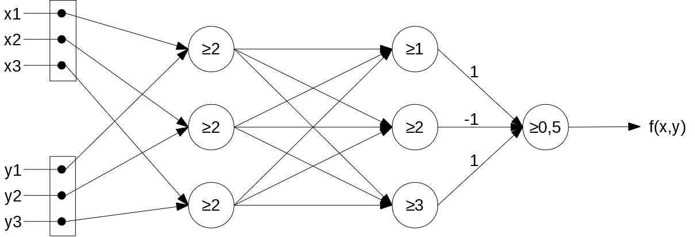

Einführung in die Neuroinformatik - 7. Aufgabenblatt¶
Gruppe Q: Dominik Authaler, Marco Deuscher, Carolin Schindler¶
Aufgabe 1: Learning Slowdown¶
1. Untersuchung von $\frac{\partial E}{\partial b_2}$¶
a) $\frac{\partial E}{\partial b_2}$ mit gegebenen Werten berechnen¶
$\frac{\partial E}{\partial b_2} = 2 \cdot f(1,5) \cdot f(1,5) \cdot (1-f(1,5)) \approx 0,24$
b) $\frac{\partial E}{\partial b_2}$ mit neuen Werten berechnen¶
$\frac{\partial E}{\partial b_2} = 2 \cdot f(4) \cdot f(4) \cdot (1-f(4)) \approx 0,0347$
c) Welches Problem haben wir im letzten Fall und welcher Faktor ist dafür hauptsächlich verantwortlich?¶
Problem: Gradient sehr klein. D.h. Netzwerk lernt sehr langsam, es dauert also lange bis die Netzwerkausgabe dem Lehrersignal entspricht.
verantwortlicher Faktor: $f'(u_2)$ mit großem $u_2$
2. zwei lernende Neuronen¶
a) $\frac{\partial E}{\partial b_1}$ berechnen und argumentieren, ob das obige Problem verstärkt oder abgeschwächt wird¶
$\frac{\partial E}{\partial b_1} = -2\cdot (T-y_2)\cdot f'(u_2)\cdot w_2\cdot f'(u_1)$
Das Probelm wird verstärkt, da nun $f'(u_i)$ zweimal vorkommt und somit quasi quadratisch eingeht.
b) Wie würde sich das Problem bei noch mehr Zwischenschichten weiterentwickeln?¶
Das Problem würde sich mit jeder weiteren Zwischenschicht verstärken, da mit jeder Schicht in der Ableitung der Fehlerfunktion ein weiterer Faktor $f'(u_i)$ hinzukommt.
c) Warum kann sich dadurch die Suche nach einem lokalen Minimum in die Länge ziehen?¶
Lernvorgang geht sehr langsam voran bis $u_i$ kleiner werden. Je größer also die $u_i$ zu Beginn gewählt wurden, desto länger dauert es bis die Ausgabe dem Lehrersignal entspricht.
3. Untersuchung eines weiteren Problems¶
a) $\frac{\partial E}{\partial b_2}$ und $\frac{\partial E}{\partial b_1}$ mit gegebenen Werten berechnen¶
$\frac{\partial E}{\partial b_2} = 2 \cdot f(0) \cdot f(0) \cdot (1-f(0)) = 0,25 $
$\frac{\partial E}{\partial b_1} = 2\cdot f(0) \cdot [f(0) \cdot (1-f(0))]^2 \cdot 100 = 6,25 $
b) Wie entwickelt sich die begonnene Folge für noch mehr Zwischenschichten?¶
$\frac{\partial E}{\partial b_n} = 2\cdot f(0) \cdot [f(0) \cdot (1-f(0))]^n \cdot 100^{n-1} = (0,25)^n \cdot 100^{n-1} = \frac{(25)^n}{100} \rightarrow \infty \text{ für } n \rightarrow \infty$
mit $n \geq 1$ Schichtnummer von Ausgang ($n=1$) zu Eingang ($n \rightarrow \infty$)
c) Was für ein Problem können wir nun beobachten? Warum kann dies die Suche nach einem lokalen Minimum ebenfalls erschweren?¶
Problem: Gradient sehr groß. D.h. Netzwerk lernt sehr schnell, es kann also passieren, dass lokale Minima (ständig) übersprungen werden.
4. Inwieweit löst die cross entropy-Funktion zumindest zum Teil das hier beschriebene Problem?¶
$f'(u_i)$ kommt im Gradienten der cross entropy-Funktion einmal weniger vor als im Gradienten der qaudratischen Fehlerunktion. Dadurch treten die obigen Probleme weniger stark auf.
Aufgabe 2: Flat vs. Deep Networks¶
1. Untersuchung der Lösung $net_d$¶
a) Netzwerkausgabe für gegebene Eingabe berechnen und überprüfen¶
$f(x,y) = 0$
$f((0,0), (1,1)) =(\sum_{i=1}^2 x_i\cdot y_i)\mod 2 = (0\cdot 1 + 0\cdot 1)\mod 2 = 0\mod 2 = 0$
b) Netzwerk für $n=3$ erweitern¶
Pfeile ohne Zahl sind mit $1$ gewichtet 
c) Welche Rolle kommt den Neuronen in der 1. und 2. Zwischenschicht jeweils zu? Welche Art Zwischenergebnis berechnen sie?¶
Neuronen in der 1. Zwischenschicht berechenen jeweils für ein festes $i$: $x_i \cdot y_i$.
Neuronen in der 2. Zwischenschicht berechnen die Anzahl an Neuronen in der 1. Zwischenschicht, die eine $1$ ausgegeben haben.
2. Überprüfung der Gleichung für die Anzahl an benötigten Neuronen¶
a) Erkäre, warum wir die Schwellwertfunktion in unseren Netzwerken nicht verwenden können?¶
Die Schwellwertfunktion ist nicht stetig und somit auch nicht differenzierbar. Dadurch können wir mit der Schwellwertfunktion als Übertragunsfunktion den Gradienten des quadratischen Fehlers nicht berechnen.
b) & c) & d) & e)¶
import numpy as np
import tensorflow as tf
import tensorflow.keras.backend as K
import itertools
import matplotlib.pyplot as plt
def genTrainingsdaten(n):
comb = np.array(list(itertools.product([0,1], repeat=n)))
xy = np.array(list(itertools.product(comb,comb)))
T = []
for i in range(len(xy)):
T.append(np.dot(xy[i][0], xy[i][1])%2)
T=np.array(T)
xy = np.where(xy==0, -1, xy)
T = np.where(T==0, -1, T)
xy = xy.reshape(len(xy),len(xy[0][0])+len(xy[0][1]))
return xy, T
def train_network(n_hidden, xy, T):
"""
Trains a neural network and returns the lowest error.
:param n_hidden: Number of hidden neurons to use per layer
(as vector to indicate when multiple hidden layers should be used).
Forexample, [2] uses one hidden layer with two neurons and
[2,2] uses two hidden layers each with two neurons.
:return: The lowest error (MSE) occurred over all training epochs.
"""
#Start fresh and at least try to get reproducible results
tf.reset_default_graph()
K.clear_session()
tf.set_random_seed(42)
np.random.seed(42)
#dimensions
in_dim = len(xy[0])
out_dim = len([T[0]])
if(len(n_hidden) == 1):
hidden_dim = n_hidden[0]
anz_hidden = 1
else:
hidden_dim = n_hidden[1]
anz_hidden = n_hidden[0]
#parameters
initializer = tf.keras.initializers.RandomUniform(minval=-0.5, maxval=0.5, seed=42)
opt = tf.keras.optimizers.SGD(lr=0.2, decay=0.0001, momentum=0.9,nesterov=True)
act = 'tanh'
model = tf.keras.models.Sequential()
#hidden layer with input
model.add(tf.keras.layers.Dense(input_dim=in_dim,
units=hidden_dim,
activation=act,
kernel_initializer = initializer))
#hidden layers
for i in range(1, anz_hidden):
model.add(tf.keras.layers.Dense(units=hidden_dim,
activation=act,
kernel_initializer = initializer))
#output layer
model.add(tf.keras.layers.Dense(units=out_dim,
activation=act))
#compile
model.compile(optimizer = opt, loss='mse')
#training
history = model.fit(xy, T, epochs=300, batch_size=len(T))
return min(history.history['loss'])
n=3
xy, T = genTrainingsdaten(n)
neurons_flat = []
minloss_flat = []
neurons_deep = []
minloss_deep = []
for i in range(1, 2**(n+1)+4+1):
neurons_flat.append(i+1)
minloss_flat.append(train_network([i], xy, T))
for i in range(1, (n+1)+4+1):
neurons_deep.append(i*2+1)
minloss_deep.append(train_network([2, i], xy, T))
WARNING:tensorflow:From C:\Users\Carolin\Anaconda3\lib\site-packages\tensorflow\python\ops\resource_variable_ops.py:435: colocate_with (from tensorflow.python.framework.ops) is deprecated and will be removed in a future version. Instructions for updating: Colocations handled automatically by placer. WARNING:tensorflow:From C:\Users\Carolin\Anaconda3\lib\site-packages\tensorflow\python\keras\utils\losses_utils.py:170: to_float (from tensorflow.python.ops.math_ops) is deprecated and will be removed in a future version. Instructions for updating: Use tf.cast instead. WARNING:tensorflow:From C:\Users\Carolin\Anaconda3\lib\site-packages\tensorflow\python\ops\math_ops.py:3066: to_int32 (from tensorflow.python.ops.math_ops) is deprecated and will be removed in a future version. Instructions for updating: Use tf.cast instead. Epoch 1/300 64/64 [==============================] - 0s 8ms/sample - loss: 1.0507 Epoch 2/300 64/64 [==============================] - 0s 0s/sample - loss: 0.9941 Epoch 3/300 64/64 [==============================] - 0s 161us/sample - loss: 0.9568 Epoch 4/300 64/64 [==============================] - 0s 42us/sample - loss: 0.9357 Epoch 5/300 64/64 [==============================] - 0s 16us/sample - loss: 0.9204 Epoch 6/300 64/64 [==============================] - 0s 31us/sample - loss: 0.9068 Epoch 7/300 64/64 [==============================] - 0s 45us/sample - loss: 0.8937 Epoch 8/300 64/64 [==============================] - 0s 31us/sample - loss: 0.8816 Epoch 9/300 64/64 [==============================] - 0s 43us/sample - loss: 0.8715 Epoch 10/300 64/64 [==============================] - 0s 24us/sample - loss: 0.8631 Epoch 11/300 64/64 [==============================] - 0s 30us/sample - loss: 0.8549 Epoch 12/300 64/64 [==============================] - 0s 31us/sample - loss: 0.8455 Epoch 13/300 64/64 [==============================] - 0s 43us/sample - loss: 0.8350 Epoch 14/300 64/64 [==============================] - 0s 31us/sample - loss: 0.8245 Epoch 15/300 64/64 [==============================] - 0s 19us/sample - loss: 0.8156 Epoch 16/300 64/64 [==============================] - 0s 31us/sample - loss: 0.8090 Epoch 17/300 64/64 [==============================] - 0s 32us/sample - loss: 0.8043 Epoch 18/300 64/64 [==============================] - 0s 41us/sample - loss: 0.8010 Epoch 19/300 64/64 [==============================] - 0s 22us/sample - loss: 0.7984 Epoch 20/300 64/64 [==============================] - 0s 22us/sample - loss: 0.7962 Epoch 21/300 64/64 [==============================] - 0s 37us/sample - loss: 0.7943 Epoch 22/300 64/64 [==============================] - 0s 54us/sample - loss: 0.7926 Epoch 23/300 64/64 [==============================] - 0s 31us/sample - loss: 0.7913 Epoch 24/300 64/64 [==============================] - 0s 49us/sample - loss: 0.7901 Epoch 25/300 64/64 [==============================] - 0s 16us/sample - loss: 0.7892 Epoch 26/300 64/64 [==============================] - 0s 45us/sample - loss: 0.7885 Epoch 27/300 64/64 [==============================] - 0s 24us/sample - loss: 0.7878 Epoch 28/300 64/64 [==============================] - 0s 41us/sample - loss: 0.7873 Epoch 29/300 64/64 [==============================] - 0s 35us/sample - loss: 0.7869 Epoch 30/300 64/64 [==============================] - 0s 38us/sample - loss: 0.7865 Epoch 31/300 64/64 [==============================] - 0s 33us/sample - loss: 0.7862 Epoch 32/300 64/64 [==============================] - 0s 31us/sample - loss: 0.7858 Epoch 33/300 64/64 [==============================] - 0s 41us/sample - loss: 0.7855 Epoch 34/300 64/64 [==============================] - 0s 32us/sample - loss: 0.7853 Epoch 35/300 64/64 [==============================] - 0s 31us/sample - loss: 0.7851 Epoch 36/300 64/64 [==============================] - 0s 43us/sample - loss: 0.7848 Epoch 37/300 64/64 [==============================] - 0s 47us/sample - loss: 0.7847 Epoch 38/300 64/64 [==============================] - 0s 35us/sample - loss: 0.7845 Epoch 39/300 64/64 [==============================] - 0s 32us/sample - loss: 0.7844 Epoch 40/300 64/64 [==============================] - 0s 45us/sample - loss: 0.7843 Epoch 41/300 64/64 [==============================] - 0s 33us/sample - loss: 0.7842 Epoch 42/300 64/64 [==============================] - 0s 28us/sample - loss: 0.7841 Epoch 43/300 64/64 [==============================] - 0s 38us/sample - loss: 0.7841 Epoch 44/300 64/64 [==============================] - 0s 29us/sample - loss: 0.7840 Epoch 45/300 64/64 [==============================] - 0s 38us/sample - loss: 0.7840 Epoch 46/300 64/64 [==============================] - 0s 44us/sample - loss: 0.7839 Epoch 47/300 64/64 [==============================] - 0s 50us/sample - loss: 0.7839 Epoch 48/300 64/64 [==============================] - 0s 16us/sample - loss: 0.7838 Epoch 49/300 64/64 [==============================] - 0s 31us/sample - loss: 0.7838 Epoch 50/300 64/64 [==============================] - 0s 73us/sample - loss: 0.7837 Epoch 51/300 64/64 [==============================] - 0s 34us/sample - loss: 0.7837 Epoch 52/300 64/64 [==============================] - 0s 40us/sample - loss: 0.7836 Epoch 53/300 64/64 [==============================] - 0s 41us/sample - loss: 0.7836 Epoch 54/300 64/64 [==============================] - 0s 25us/sample - loss: 0.7836 Epoch 55/300 64/64 [==============================] - 0s 65us/sample - loss: 0.7835 Epoch 56/300 64/64 [==============================] - 0s 62us/sample - loss: 0.7835 Epoch 57/300 64/64 [==============================] - 0s 36us/sample - loss: 0.7835 Epoch 58/300 64/64 [==============================] - 0s 35us/sample - loss: 0.7835 Epoch 59/300 64/64 [==============================] - 0s 39us/sample - loss: 0.7835 Epoch 60/300 64/64 [==============================] - 0s 34us/sample - loss: 0.7834 Epoch 61/300 64/64 [==============================] - 0s 21us/sample - loss: 0.7834 Epoch 62/300 64/64 [==============================] - 0s 21us/sample - loss: 0.7834 Epoch 63/300 64/64 [==============================] - 0s 43us/sample - loss: 0.7834 Epoch 64/300 64/64 [==============================] - 0s 23us/sample - loss: 0.7834 Epoch 65/300 64/64 [==============================] - 0s 16us/sample - loss: 0.7834 Epoch 66/300 64/64 [==============================] - 0s 34us/sample - loss: 0.7834 Epoch 67/300 64/64 [==============================] - 0s 41us/sample - loss: 0.7833 Epoch 68/300 64/64 [==============================] - 0s 39us/sample - loss: 0.7833 Epoch 69/300 64/64 [==============================] - 0s 29us/sample - loss: 0.7833 Epoch 70/300 64/64 [==============================] - 0s 51us/sample - loss: 0.7833 Epoch 71/300 64/64 [==============================] - 0s 29us/sample - loss: 0.7833 Epoch 72/300 64/64 [==============================] - 0s 0s/sample - loss: 0.7833 Epoch 73/300 64/64 [==============================] - 0s 0s/sample - loss: 0.7833 Epoch 74/300 64/64 [==============================] - 0s 16us/sample - loss: 0.7833 Epoch 75/300 64/64 [==============================] - 0s 30us/sample - loss: 0.7833 Epoch 76/300 64/64 [==============================] - 0s 21us/sample - loss: 0.7833 Epoch 77/300 64/64 [==============================] - 0s 35us/sample - loss: 0.7833 Epoch 78/300 64/64 [==============================] - 0s 31us/sample - loss: 0.7833 Epoch 79/300 64/64 [==============================] - 0s 16us/sample - loss: 0.7832 Epoch 80/300 64/64 [==============================] - 0s 64us/sample - loss: 0.7832 Epoch 81/300 64/64 [==============================] - 0s 33us/sample - loss: 0.7832 Epoch 82/300 64/64 [==============================] - 0s 22us/sample - loss: 0.7832 Epoch 83/300 64/64 [==============================] - 0s 50us/sample - loss: 0.7832 Epoch 84/300 64/64 [==============================] - 0s 43us/sample - loss: 0.7832 Epoch 85/300 64/64 [==============================] - 0s 33us/sample - loss: 0.7832 Epoch 86/300 64/64 [==============================] - 0s 31us/sample - loss: 0.7832 Epoch 87/300 64/64 [==============================] - 0s 15us/sample - loss: 0.7832 Epoch 88/300 64/64 [==============================] - 0s 35us/sample - loss: 0.7832 Epoch 89/300 64/64 [==============================] - 0s 40us/sample - loss: 0.7832 Epoch 90/300 64/64 [==============================] - 0s 33us/sample - loss: 0.7832 Epoch 91/300 64/64 [==============================] - 0s 21us/sample - loss: 0.7832 Epoch 92/300 64/64 [==============================] - 0s 20us/sample - loss: 0.7832 Epoch 93/300 64/64 [==============================] - 0s 31us/sample - loss: 0.7832 Epoch 94/300 64/64 [==============================] - 0s 47us/sample - loss: 0.7832 Epoch 95/300 64/64 [==============================] - 0s 20us/sample - loss: 0.7832 Epoch 96/300 64/64 [==============================] - 0s 16us/sample - loss: 0.7831 Epoch 97/300 64/64 [==============================] - 0s 21us/sample - loss: 0.7831 Epoch 98/300 64/64 [==============================] - 0s 31us/sample - loss: 0.7831 Epoch 99/300 64/64 [==============================] - 0s 37us/sample - loss: 0.7831 Epoch 100/300 64/64 [==============================] - 0s 37us/sample - loss: 0.7831 Epoch 101/300 64/64 [==============================] - 0s 42us/sample - loss: 0.7831 Epoch 102/300 64/64 [==============================] - 0s 25us/sample - loss: 0.7831 Epoch 103/300 64/64 [==============================] - 0s 16us/sample - loss: 0.7831 Epoch 104/300 64/64 [==============================] - 0s 16us/sample - loss: 0.7831 Epoch 105/300 64/64 [==============================] - 0s 31us/sample - loss: 0.7831 Epoch 106/300 64/64 [==============================] - 0s 48us/sample - loss: 0.7831 Epoch 107/300 64/64 [==============================] - 0s 0s/sample - loss: 0.7831 Epoch 108/300 64/64 [==============================] - 0s 86us/sample - loss: 0.7831 Epoch 109/300 64/64 [==============================] - 0s 0s/sample - loss: 0.7831 Epoch 110/300 64/64 [==============================] - 0s 75us/sample - loss: 0.7831 Epoch 111/300 64/64 [==============================] - 0s 0s/sample - loss: 0.7831 Epoch 112/300 64/64 [==============================] - 0s 16us/sample - loss: 0.7831 Epoch 113/300 64/64 [==============================] - 0s 47us/sample - loss: 0.7831 Epoch 114/300 64/64 [==============================] - 0s 0s/sample - loss: 0.7831 Epoch 115/300 64/64 [==============================] - 0s 16us/sample - loss: 0.7831 Epoch 116/300 64/64 [==============================] - 0s 76us/sample - loss: 0.7831 Epoch 117/300 64/64 [==============================] - 0s 31us/sample - loss: 0.7831 Epoch 118/300 64/64 [==============================] - 0s 36us/sample - loss: 0.7831 Epoch 119/300 64/64 [==============================] - 0s 49us/sample - loss: 0.7831 Epoch 120/300 64/64 [==============================] - 0s 486us/sample - loss: 0.7831 Epoch 121/300 64/64 [==============================] - 0s 31us/sample - loss: 0.7831 Epoch 122/300 64/64 [==============================] - 0s 47us/sample - loss: 0.7831 Epoch 123/300 64/64 [==============================] - 0s 33us/sample - loss: 0.7830 Epoch 124/300 64/64 [==============================] - 0s 33us/sample - loss: 0.7830 Epoch 125/300 64/64 [==============================] - 0s 16us/sample - loss: 0.7830 Epoch 126/300 64/64 [==============================] - 0s 16us/sample - loss: 0.7830 Epoch 127/300 64/64 [==============================] - 0s 28us/sample - loss: 0.7830 Epoch 128/300 64/64 [==============================] - 0s 16us/sample - loss: 0.7830 Epoch 129/300 64/64 [==============================] - 0s 57us/sample - loss: 0.7830 Epoch 130/300 64/64 [==============================] - 0s 39us/sample - loss: 0.7830 Epoch 131/300 64/64 [==============================] - 0s 0s/sample - loss: 0.7830 Epoch 132/300 64/64 [==============================] - 0s 31us/sample - loss: 0.7830 Epoch 133/300 64/64 [==============================] - 0s 16us/sample - loss: 0.7830 Epoch 134/300 64/64 [==============================] - 0s 16us/sample - loss: 0.7830 Epoch 135/300 64/64 [==============================] - 0s 0s/sample - loss: 0.7830 Epoch 136/300 64/64 [==============================] - 0s 16us/sample - loss: 0.7830 Epoch 137/300 64/64 [==============================] - 0s 28us/sample - loss: 0.7830 Epoch 138/300 64/64 [==============================] - 0s 31us/sample - loss: 0.7830 Epoch 139/300 64/64 [==============================] - 0s 16us/sample - loss: 0.7830 Epoch 140/300 64/64 [==============================] - 0s 73us/sample - loss: 0.7830 Epoch 141/300 64/64 [==============================] - 0s 35us/sample - loss: 0.7830 Epoch 142/300 64/64 [==============================] - 0s 35us/sample - loss: 0.7830 Epoch 143/300 64/64 [==============================] - 0s 33us/sample - loss: 0.7830 Epoch 144/300 64/64 [==============================] - 0s 16us/sample - loss: 0.7830 Epoch 145/300 64/64 [==============================] - 0s 31us/sample - loss: 0.7830 Epoch 146/300 64/64 [==============================] - 0s 27us/sample - loss: 0.7830 Epoch 147/300 64/64 [==============================] - 0s 34us/sample - loss: 0.7830 Epoch 148/300 64/64 [==============================] - 0s 0s/sample - loss: 0.7830 Epoch 149/300 64/64 [==============================] - 0s 31us/sample - loss: 0.7830 Epoch 150/300 64/64 [==============================] - 0s 31us/sample - loss: 0.7830 Epoch 151/300 64/64 [==============================] - 0s 19us/sample - loss: 0.7830 Epoch 152/300 64/64 [==============================] - 0s 0s/sample - loss: 0.7830 Epoch 153/300 64/64 [==============================] - 0s 52us/sample - loss: 0.7830 Epoch 154/300 64/64 [==============================] - 0s 16us/sample - loss: 0.7830 Epoch 155/300 64/64 [==============================] - 0s 45us/sample - loss: 0.7830 Epoch 156/300 64/64 [==============================] - 0s 0s/sample - loss: 0.7830 Epoch 157/300 64/64 [==============================] - 0s 62us/sample - loss: 0.7830 Epoch 158/300 64/64 [==============================] - 0s 32us/sample - loss: 0.7830 Epoch 159/300 64/64 [==============================] - 0s 51us/sample - loss: 0.7830 Epoch 160/300 64/64 [==============================] - 0s 51us/sample - loss: 0.7830 Epoch 161/300 64/64 [==============================] - 0s 44us/sample - loss: 0.7830 Epoch 162/300 64/64 [==============================] - 0s 0s/sample - loss: 0.7830 Epoch 163/300 64/64 [==============================] - 0s 128us/sample - loss: 0.7830 Epoch 164/300 64/64 [==============================] - 0s 39us/sample - loss: 0.7829 Epoch 165/300 64/64 [==============================] - 0s 33us/sample - loss: 0.7829 Epoch 166/300 64/64 [==============================] - 0s 31us/sample - loss: 0.7829 Epoch 167/300 64/64 [==============================] - 0s 25us/sample - loss: 0.7829 Epoch 168/300 64/64 [==============================] - 0s 17us/sample - loss: 0.7829 Epoch 169/300 64/64 [==============================] - 0s 0s/sample - loss: 0.7829 Epoch 170/300 64/64 [==============================] - 0s 16us/sample - loss: 0.7829 Epoch 171/300 64/64 [==============================] - 0s 58us/sample - loss: 0.7829 Epoch 172/300 64/64 [==============================] - 0s 38us/sample - loss: 0.7829 Epoch 173/300 64/64 [==============================] - 0s 29us/sample - loss: 0.7829 Epoch 174/300 64/64 [==============================] - 0s 0s/sample - loss: 0.7829 Epoch 175/300 64/64 [==============================] - 0s 39us/sample - loss: 0.7829 Epoch 176/300 64/64 [==============================] - 0s 31us/sample - loss: 0.7829 Epoch 177/300 64/64 [==============================] - 0s 40us/sample - loss: 0.7829 Epoch 178/300 64/64 [==============================] - 0s 32us/sample - loss: 0.7829 Epoch 179/300 64/64 [==============================] - 0s 40us/sample - loss: 0.7829 Epoch 180/300 64/64 [==============================] - 0s 46us/sample - loss: 0.7829 Epoch 181/300 64/64 [==============================] - 0s 16us/sample - loss: 0.7829 Epoch 182/300 64/64 [==============================] - 0s 31us/sample - loss: 0.7829 Epoch 183/300 64/64 [==============================] - 0s 24us/sample - loss: 0.7829 Epoch 184/300 64/64 [==============================] - 0s 31us/sample - loss: 0.7829 Epoch 185/300 64/64 [==============================] - 0s 16us/sample - loss: 0.7829 Epoch 186/300 64/64 [==============================] - 0s 31us/sample - loss: 0.7829 Epoch 187/300 64/64 [==============================] - 0s 16us/sample - loss: 0.7829 Epoch 188/300 64/64 [==============================] - 0s 21us/sample - loss: 0.7829 Epoch 189/300 64/64 [==============================] - 0s 16us/sample - loss: 0.7829 Epoch 190/300 64/64 [==============================] - 0s 37us/sample - loss: 0.7829 Epoch 191/300 64/64 [==============================] - 0s 31us/sample - loss: 0.7829 Epoch 192/300 64/64 [==============================] - 0s 0s/sample - loss: 0.7829 Epoch 193/300 64/64 [==============================] - 0s 16us/sample - loss: 0.7829 Epoch 194/300 64/64 [==============================] - 0s 31us/sample - loss: 0.7829 Epoch 195/300 64/64 [==============================] - 0s 16us/sample - loss: 0.7829 Epoch 196/300 64/64 [==============================] - 0s 43us/sample - loss: 0.7829 Epoch 197/300 64/64 [==============================] - 0s 28us/sample - loss: 0.7829 Epoch 198/300 64/64 [==============================] - 0s 45us/sample - loss: 0.7829 Epoch 199/300 64/64 [==============================] - 0s 16us/sample - loss: 0.7829 Epoch 200/300 64/64 [==============================] - 0s 16us/sample - loss: 0.7829 Epoch 201/300 64/64 [==============================] - 0s 16us/sample - loss: 0.7829 Epoch 202/300 64/64 [==============================] - 0s 31us/sample - loss: 0.7829 Epoch 203/300 64/64 [==============================] - 0s 16us/sample - loss: 0.7829 Epoch 204/300 64/64 [==============================] - 0s 16us/sample - loss: 0.7829 Epoch 205/300 64/64 [==============================] - 0s 16us/sample - loss: 0.7829 Epoch 206/300 64/64 [==============================] - 0s 32us/sample - loss: 0.7829 Epoch 207/300 64/64 [==============================] - 0s 35us/sample - loss: 0.7829 Epoch 208/300 64/64 [==============================] - 0s 16us/sample - loss: 0.7829 Epoch 209/300 64/64 [==============================] - 0s 30us/sample - loss: 0.7829 Epoch 210/300 64/64 [==============================] - 0s 0s/sample - loss: 0.7829 Epoch 211/300 64/64 [==============================] - 0s 90us/sample - loss: 0.7829 Epoch 212/300 64/64 [==============================] - 0s 31us/sample - loss: 0.7829 Epoch 213/300 64/64 [==============================] - 0s 15us/sample - loss: 0.7829 Epoch 214/300 64/64 [==============================] - 0s 31us/sample - loss: 0.7829 Epoch 215/300 64/64 [==============================] - 0s 31us/sample - loss: 0.7829 Epoch 216/300 64/64 [==============================] - 0s 16us/sample - loss: 0.7829 Epoch 217/300 64/64 [==============================] - 0s 69us/sample - loss: 0.7829 Epoch 218/300 64/64 [==============================] - 0s 62us/sample - loss: 0.7829 Epoch 219/300 64/64 [==============================] - 0s 41us/sample - loss: 0.7829 Epoch 220/300 64/64 [==============================] - 0s 62us/sample - loss: 0.7829 Epoch 221/300 64/64 [==============================] - 0s 45us/sample - loss: 0.7829 Epoch 222/300 64/64 [==============================] - 0s 31us/sample - loss: 0.7829 Epoch 223/300 64/64 [==============================] - 0s 16us/sample - loss: 0.7829 Epoch 224/300 64/64 [==============================] - 0s 42us/sample - loss: 0.7829 Epoch 225/300 64/64 [==============================] - 0s 16us/sample - loss: 0.7829 Epoch 226/300 64/64 [==============================] - 0s 31us/sample - loss: 0.7829 Epoch 227/300 64/64 [==============================] - 0s 22us/sample - loss: 0.7829 Epoch 228/300 64/64 [==============================] - 0s 46us/sample - loss: 0.7829 Epoch 229/300 64/64 [==============================] - 0s 16us/sample - loss: 0.7829 Epoch 230/300 64/64 [==============================] - 0s 50us/sample - loss: 0.7829 Epoch 231/300 64/64 [==============================] - 0s 0s/sample - loss: 0.7828 Epoch 232/300 64/64 [==============================] - 0s 123us/sample - loss: 0.7828 Epoch 233/300 64/64 [==============================] - 0s 35us/sample - loss: 0.7828 Epoch 234/300 64/64 [==============================] - 0s 59us/sample - loss: 0.7828 Epoch 235/300 64/64 [==============================] - 0s 52us/sample - loss: 0.7828 Epoch 236/300 64/64 [==============================] - 0s 40us/sample - loss: 0.7828 Epoch 237/300 64/64 [==============================] - 0s 64us/sample - loss: 0.7828 Epoch 238/300 64/64 [==============================] - 0s 49us/sample - loss: 0.7828 Epoch 239/300 64/64 [==============================] - 0s 47us/sample - loss: 0.7828 Epoch 240/300 64/64 [==============================] - 0s 16us/sample - loss: 0.7828 Epoch 241/300 64/64 [==============================] - 0s 41us/sample - loss: 0.7828 Epoch 242/300 64/64 [==============================] - 0s 16us/sample - loss: 0.7828 Epoch 243/300 64/64 [==============================] - 0s 457us/sample - loss: 0.7828 Epoch 244/300 64/64 [==============================] - 0s 47us/sample - loss: 0.7828 Epoch 245/300 64/64 [==============================] - 0s 41us/sample - loss: 0.7828 Epoch 246/300 64/64 [==============================] - 0s 37us/sample - loss: 0.7828 Epoch 247/300 64/64 [==============================] - 0s 31us/sample - loss: 0.7828 Epoch 248/300 64/64 [==============================] - 0s 31us/sample - loss: 0.7828 Epoch 249/300 64/64 [==============================] - 0s 31us/sample - loss: 0.7828 Epoch 250/300 64/64 [==============================] - 0s 20us/sample - loss: 0.7828 Epoch 251/300 64/64 [==============================] - 0s 16us/sample - loss: 0.7828 Epoch 252/300 64/64 [==============================] - 0s 31us/sample - loss: 0.7828 Epoch 253/300 64/64 [==============================] - 0s 31us/sample - loss: 0.7828 Epoch 254/300 64/64 [==============================] - 0s 16us/sample - loss: 0.7828 Epoch 255/300 64/64 [==============================] - 0s 49us/sample - loss: 0.7828 Epoch 256/300 64/64 [==============================] - 0s 31us/sample - loss: 0.7828 Epoch 257/300 64/64 [==============================] - 0s 45us/sample - loss: 0.7828 Epoch 258/300 64/64 [==============================] - 0s 16us/sample - loss: 0.7828 Epoch 259/300 64/64 [==============================] - 0s 24us/sample - loss: 0.7828 Epoch 260/300 64/64 [==============================] - 0s 16us/sample - loss: 0.7828 Epoch 261/300 64/64 [==============================] - 0s 31us/sample - loss: 0.7828 Epoch 262/300 64/64 [==============================] - 0s 16us/sample - loss: 0.7828 Epoch 263/300 64/64 [==============================] - 0s 28us/sample - loss: 0.7828 Epoch 264/300 64/64 [==============================] - 0s 15us/sample - loss: 0.7828 Epoch 265/300 64/64 [==============================] - 0s 16us/sample - loss: 0.7828 Epoch 266/300 64/64 [==============================] - 0s 53us/sample - loss: 0.7828 Epoch 267/300 64/64 [==============================] - 0s 36us/sample - loss: 0.7828 Epoch 268/300 64/64 [==============================] - 0s 16us/sample - loss: 0.7828 Epoch 269/300 64/64 [==============================] - 0s 31us/sample - loss: 0.7828 Epoch 270/300 64/64 [==============================] - 0s 16us/sample - loss: 0.7828 Epoch 271/300 64/64 [==============================] - 0s 39us/sample - loss: 0.7828 Epoch 272/300 64/64 [==============================] - 0s 16us/sample - loss: 0.7828 Epoch 273/300 64/64 [==============================] - 0s 31us/sample - loss: 0.7828 Epoch 274/300 64/64 [==============================] - 0s 31us/sample - loss: 0.7828 Epoch 275/300 64/64 [==============================] - 0s 21us/sample - loss: 0.7828 Epoch 276/300 64/64 [==============================] - 0s 21us/sample - loss: 0.7828 Epoch 277/300 64/64 [==============================] - 0s 16us/sample - loss: 0.7828 Epoch 278/300 64/64 [==============================] - 0s 47us/sample - loss: 0.7828 Epoch 279/300 64/64 [==============================] - 0s 16us/sample - loss: 0.7828 Epoch 280/300 64/64 [==============================] - 0s 31us/sample - loss: 0.7828 Epoch 281/300 64/64 [==============================] - 0s 0s/sample - loss: 0.7828 Epoch 282/300 64/64 [==============================] - 0s 31us/sample - loss: 0.7828 Epoch 283/300 64/64 [==============================] - 0s 37us/sample - loss: 0.7828 Epoch 284/300 64/64 [==============================] - 0s 30us/sample - loss: 0.7828 Epoch 285/300 64/64 [==============================] - 0s 32us/sample - loss: 0.7828 Epoch 286/300 64/64 [==============================] - 0s 28us/sample - loss: 0.7828 Epoch 287/300 64/64 [==============================] - 0s 17us/sample - loss: 0.7828 Epoch 288/300 64/64 [==============================] - 0s 69us/sample - loss: 0.7828 Epoch 289/300 64/64 [==============================] - 0s 42us/sample - loss: 0.7828 Epoch 290/300 64/64 [==============================] - 0s 39us/sample - loss: 0.7828 Epoch 291/300 64/64 [==============================] - 0s 30us/sample - loss: 0.7828 Epoch 292/300 64/64 [==============================] - 0s 31us/sample - loss: 0.7828 Epoch 293/300 64/64 [==============================] - 0s 31us/sample - loss: 0.7828 Epoch 294/300 64/64 [==============================] - 0s 31us/sample - loss: 0.7828 Epoch 295/300 64/64 [==============================] - 0s 47us/sample - loss: 0.7828 Epoch 296/300 64/64 [==============================] - 0s 16us/sample - loss: 0.7828 Epoch 297/300 64/64 [==============================] - 0s 31us/sample - loss: 0.7828 Epoch 298/300 64/64 [==============================] - 0s 21us/sample - loss: 0.7828 Epoch 299/300 64/64 [==============================] - 0s 43us/sample - loss: 0.7828 Epoch 300/300 64/64 [==============================] - 0s 18us/sample - loss: 0.7828 Epoch 1/300 64/64 [==============================] - 0s 7ms/sample - loss: 1.0660 Epoch 2/300 64/64 [==============================] - 0s 30us/sample - loss: 0.9502 Epoch 3/300 64/64 [==============================] - 0s 41us/sample - loss: 0.9288 Epoch 4/300 64/64 [==============================] - 0s 48us/sample - loss: 0.9104 Epoch 5/300 64/64 [==============================] - 0s 32us/sample - loss: 0.8992 Epoch 6/300 64/64 [==============================] - 0s 29us/sample - loss: 0.8983 Epoch 7/300 64/64 [==============================] - 0s 31us/sample - loss: 0.8975 Epoch 8/300 64/64 [==============================] - 0s 52us/sample - loss: 0.8934 Epoch 9/300 64/64 [==============================] - 0s 31us/sample - loss: 0.8879 Epoch 10/300 64/64 [==============================] - 0s 31us/sample - loss: 0.8830 Epoch 11/300 64/64 [==============================] - 0s 39us/sample - loss: 0.8791 Epoch 12/300 64/64 [==============================] - 0s 44us/sample - loss: 0.8760 Epoch 13/300 64/64 [==============================] - 0s 49us/sample - loss: 0.8734 Epoch 14/300 64/64 [==============================] - 0s 31us/sample - loss: 0.8708 Epoch 15/300 64/64 [==============================] - 0s 45us/sample - loss: 0.8681 Epoch 16/300 64/64 [==============================] - 0s 82us/sample - loss: 0.8650 Epoch 17/300 64/64 [==============================] - 0s 49us/sample - loss: 0.8613 Epoch 18/300 64/64 [==============================] - 0s 31us/sample - loss: 0.8570 Epoch 19/300 64/64 [==============================] - 0s 71us/sample - loss: 0.8519 Epoch 20/300 64/64 [==============================] - 0s 63us/sample - loss: 0.8457 Epoch 21/300 64/64 [==============================] - 0s 47us/sample - loss: 0.8385 Epoch 22/300 64/64 [==============================] - 0s 47us/sample - loss: 0.8306 Epoch 23/300 64/64 [==============================] - 0s 54us/sample - loss: 0.8227 Epoch 24/300 64/64 [==============================] - 0s 76us/sample - loss: 0.8156 Epoch 25/300 64/64 [==============================] - 0s 47us/sample - loss: 0.8099 Epoch 26/300 64/64 [==============================] - 0s 47us/sample - loss: 0.8056 Epoch 27/300 64/64 [==============================] - 0s 43us/sample - loss: 0.8023 Epoch 28/300 64/64 [==============================] - 0s 49us/sample - loss: 0.7999 Epoch 29/300 64/64 [==============================] - 0s 50us/sample - loss: 0.7981 Epoch 30/300 64/64 [==============================] - 0s 51us/sample - loss: 0.7966 Epoch 31/300 64/64 [==============================] - 0s 16us/sample - loss: 0.7952 Epoch 32/300 64/64 [==============================] - 0s 47us/sample - loss: 0.7939 Epoch 33/300 64/64 [==============================] - 0s 40us/sample - loss: 0.7926 Epoch 34/300 64/64 [==============================] - 0s 62us/sample - loss: 0.7913 Epoch 35/300 64/64 [==============================] - 0s 49us/sample - loss: 0.7901 Epoch 36/300 64/64 [==============================] - 0s 0s/sample - loss: 0.7890 Epoch 37/300 64/64 [==============================] - 0s 43us/sample - loss: 0.7881 Epoch 38/300 64/64 [==============================] - 0s 38us/sample - loss: 0.7874 Epoch 39/300 64/64 [==============================] - 0s 36us/sample - loss: 0.7868 Epoch 40/300 64/64 [==============================] - 0s 29us/sample - loss: 0.7863 Epoch 41/300 64/64 [==============================] - 0s 31us/sample - loss: 0.7860 Epoch 42/300 64/64 [==============================] - 0s 48us/sample - loss: 0.7856 Epoch 43/300 64/64 [==============================] - 0s 16us/sample - loss: 0.7854 Epoch 44/300 64/64 [==============================] - 0s 25us/sample - loss: 0.7851 Epoch 45/300 64/64 [==============================] - 0s 16us/sample - loss: 0.7849 Epoch 46/300 64/64 [==============================] - 0s 69us/sample - loss: 0.7847 Epoch 47/300 64/64 [==============================] - 0s 41us/sample - loss: 0.7845 Epoch 48/300 64/64 [==============================] - 0s 34us/sample - loss: 0.7843 Epoch 49/300 64/64 [==============================] - 0s 28us/sample - loss: 0.7841 Epoch 50/300 64/64 [==============================] - 0s 30us/sample - loss: 0.7840 Epoch 51/300 64/64 [==============================] - 0s 50us/sample - loss: 0.7838 Epoch 52/300 64/64 [==============================] - 0s 36us/sample - loss: 0.7837 Epoch 53/300 64/64 [==============================] - 0s 16us/sample - loss: 0.7835 Epoch 54/300 64/64 [==============================] - 0s 57us/sample - loss: 0.7834 Epoch 55/300 64/64 [==============================] - 0s 40us/sample - loss: 0.7832 Epoch 56/300 64/64 [==============================] - 0s 31us/sample - loss: 0.7831 Epoch 57/300 64/64 [==============================] - 0s 35us/sample - loss: 0.7830 Epoch 58/300 64/64 [==============================] - 0s 16us/sample - loss: 0.7828 Epoch 59/300 64/64 [==============================] - 0s 24us/sample - loss: 0.7827 Epoch 60/300 64/64 [==============================] - 0s 55us/sample - loss: 0.7826 Epoch 61/300 64/64 [==============================] - 0s 36us/sample - loss: 0.7824 Epoch 62/300 64/64 [==============================] - 0s 16us/sample - loss: 0.7823 Epoch 63/300 64/64 [==============================] - 0s 49us/sample - loss: 0.7821 Epoch 64/300 64/64 [==============================] - 0s 16us/sample - loss: 0.7820 Epoch 65/300 64/64 [==============================] - 0s 47us/sample - loss: 0.7818 Epoch 66/300 64/64 [==============================] - 0s 0s/sample - loss: 0.7816 Epoch 67/300 64/64 [==============================] - 0s 16us/sample - loss: 0.7815 Epoch 68/300 64/64 [==============================] - 0s 36us/sample - loss: 0.7813 Epoch 69/300 64/64 [==============================] - 0s 97us/sample - loss: 0.7811 Epoch 70/300 64/64 [==============================] - 0s 576us/sample - loss: 0.7809 Epoch 71/300 64/64 [==============================] - 0s 31us/sample - loss: 0.7806 Epoch 72/300 64/64 [==============================] - 0s 21us/sample - loss: 0.7804 Epoch 73/300 64/64 [==============================] - 0s 31us/sample - loss: 0.7801 Epoch 74/300 64/64 [==============================] - 0s 17us/sample - loss: 0.7798 Epoch 75/300 64/64 [==============================] - 0s 29us/sample - loss: 0.7794 Epoch 76/300 64/64 [==============================] - 0s 31us/sample - loss: 0.7791 Epoch 77/300 64/64 [==============================] - 0s 31us/sample - loss: 0.7786 Epoch 78/300 64/64 [==============================] - 0s 27us/sample - loss: 0.7782 Epoch 79/300 64/64 [==============================] - 0s 18us/sample - loss: 0.7777 Epoch 80/300 64/64 [==============================] - 0s 16us/sample - loss: 0.7771 Epoch 81/300 64/64 [==============================] - 0s 47us/sample - loss: 0.7764 Epoch 82/300 64/64 [==============================] - 0s 24us/sample - loss: 0.7757 Epoch 83/300 64/64 [==============================] - 0s 36us/sample - loss: 0.7748 Epoch 84/300 64/64 [==============================] - 0s 31us/sample - loss: 0.7739 Epoch 85/300 64/64 [==============================] - 0s 16us/sample - loss: 0.7729 Epoch 86/300 64/64 [==============================] - 0s 16us/sample - loss: 0.7717 Epoch 87/300 64/64 [==============================] - 0s 16us/sample - loss: 0.7705 Epoch 88/300 64/64 [==============================] - 0s 38us/sample - loss: 0.7692 Epoch 89/300 64/64 [==============================] - 0s 32us/sample - loss: 0.7678 Epoch 90/300 64/64 [==============================] - 0s 16us/sample - loss: 0.7664 Epoch 91/300 64/64 [==============================] - 0s 55us/sample - loss: 0.7649 Epoch 92/300 64/64 [==============================] - 0s 30us/sample - loss: 0.7634 Epoch 93/300 64/64 [==============================] - 0s 16us/sample - loss: 0.7620 Epoch 94/300 64/64 [==============================] - 0s 16us/sample - loss: 0.7606 Epoch 95/300 64/64 [==============================] - 0s 41us/sample - loss: 0.7593 Epoch 96/300 64/64 [==============================] - 0s 64us/sample - loss: 0.7580 Epoch 97/300 64/64 [==============================] - 0s 31us/sample - loss: 0.7568 Epoch 98/300 64/64 [==============================] - 0s 16us/sample - loss: 0.7557 Epoch 99/300 64/64 [==============================] - 0s 31us/sample - loss: 0.7546 Epoch 100/300 64/64 [==============================] - 0s 36us/sample - loss: 0.7534 Epoch 101/300 64/64 [==============================] - 0s 16us/sample - loss: 0.7522 Epoch 102/300 64/64 [==============================] - 0s 16us/sample - loss: 0.7510 Epoch 103/300 64/64 [==============================] - 0s 67us/sample - loss: 0.7496 Epoch 104/300 64/64 [==============================] - 0s 16us/sample - loss: 0.7481 Epoch 105/300 64/64 [==============================] - 0s 31us/sample - loss: 0.7464 Epoch 106/300 64/64 [==============================] - 0s 16us/sample - loss: 0.7445 Epoch 107/300 64/64 [==============================] - 0s 76us/sample - loss: 0.7424 Epoch 108/300 64/64 [==============================] - 0s 46us/sample - loss: 0.7402 Epoch 109/300 64/64 [==============================] - 0s 16us/sample - loss: 0.7378 Epoch 110/300 64/64 [==============================] - 0s 37us/sample - loss: 0.7354 Epoch 111/300 64/64 [==============================] - 0s 16us/sample - loss: 0.7329 Epoch 112/300 64/64 [==============================] - 0s 33us/sample - loss: 0.7306 Epoch 113/300 64/64 [==============================] - 0s 16us/sample - loss: 0.7284 Epoch 114/300 64/64 [==============================] - 0s 41us/sample - loss: 0.7264 Epoch 115/300 64/64 [==============================] - 0s 49us/sample - loss: 0.7245 Epoch 116/300 64/64 [==============================] - 0s 84us/sample - loss: 0.7229 Epoch 117/300 64/64 [==============================] - 0s 0s/sample - loss: 0.7213 Epoch 118/300 64/64 [==============================] - 0s 120us/sample - loss: 0.7199 Epoch 119/300 64/64 [==============================] - 0s 31us/sample - loss: 0.7185 Epoch 120/300 64/64 [==============================] - 0s 16us/sample - loss: 0.7172 Epoch 121/300 64/64 [==============================] - 0s 89us/sample - loss: 0.7160 Epoch 122/300 64/64 [==============================] - 0s 47us/sample - loss: 0.7148 Epoch 123/300 64/64 [==============================] - 0s 44us/sample - loss: 0.7137 Epoch 124/300 64/64 [==============================] - 0s 0s/sample - loss: 0.7126 Epoch 125/300 64/64 [==============================] - 0s 47us/sample - loss: 0.7116 Epoch 126/300 64/64 [==============================] - 0s 16us/sample - loss: 0.7106 Epoch 127/300 64/64 [==============================] - 0s 48us/sample - loss: 0.7097 Epoch 128/300 64/64 [==============================] - 0s 47us/sample - loss: 0.7089 Epoch 129/300 64/64 [==============================] - 0s 48us/sample - loss: 0.7081 Epoch 130/300 64/64 [==============================] - 0s 62us/sample - loss: 0.7073 Epoch 131/300 64/64 [==============================] - 0s 52us/sample - loss: 0.7066 Epoch 132/300 64/64 [==============================] - 0s 20us/sample - loss: 0.7059 Epoch 133/300 64/64 [==============================] - 0s 34us/sample - loss: 0.7052 Epoch 134/300 64/64 [==============================] - 0s 16us/sample - loss: 0.7046 Epoch 135/300 64/64 [==============================] - 0s 71us/sample - loss: 0.7040 Epoch 136/300 64/64 [==============================] - 0s 31us/sample - loss: 0.7035 Epoch 137/300 64/64 [==============================] - 0s 55us/sample - loss: 0.7030 Epoch 138/300 64/64 [==============================] - 0s 16us/sample - loss: 0.7025 Epoch 139/300 64/64 [==============================] - 0s 51us/sample - loss: 0.7020 Epoch 140/300 64/64 [==============================] - 0s 84us/sample - loss: 0.7015 Epoch 141/300 64/64 [==============================] - 0s 16us/sample - loss: 0.7011 Epoch 142/300 64/64 [==============================] - 0s 42us/sample - loss: 0.7007 Epoch 143/300 64/64 [==============================] - 0s 16us/sample - loss: 0.7003 Epoch 144/300 64/64 [==============================] - 0s 16us/sample - loss: 0.7000 Epoch 145/300 64/64 [==============================] - 0s 31us/sample - loss: 0.6996 Epoch 146/300 64/64 [==============================] - 0s 19us/sample - loss: 0.6993 Epoch 147/300 64/64 [==============================] - 0s 32us/sample - loss: 0.6990 Epoch 148/300 64/64 [==============================] - 0s 16us/sample - loss: 0.6987 Epoch 149/300 64/64 [==============================] - 0s 16us/sample - loss: 0.6984 Epoch 150/300 64/64 [==============================] - 0s 32us/sample - loss: 0.6981 Epoch 151/300 64/64 [==============================] - 0s 16us/sample - loss: 0.6978 Epoch 152/300 64/64 [==============================] - 0s 32us/sample - loss: 0.6976 Epoch 153/300 64/64 [==============================] - 0s 16us/sample - loss: 0.6973 Epoch 154/300 64/64 [==============================] - 0s 16us/sample - loss: 0.6971 Epoch 155/300 64/64 [==============================] - 0s 89us/sample - loss: 0.6968 Epoch 156/300 64/64 [==============================] - 0s 29us/sample - loss: 0.6966 Epoch 157/300 64/64 [==============================] - 0s 37us/sample - loss: 0.6964 Epoch 158/300 64/64 [==============================] - 0s 0s/sample - loss: 0.6961 Epoch 159/300 64/64 [==============================] - 0s 38us/sample - loss: 0.6959 Epoch 160/300 64/64 [==============================] - 0s 16us/sample - loss: 0.6957 Epoch 161/300 64/64 [==============================] - 0s 48us/sample - loss: 0.6955 Epoch 162/300 64/64 [==============================] - 0s 16us/sample - loss: 0.6953 Epoch 163/300 64/64 [==============================] - 0s 31us/sample - loss: 0.6951 Epoch 164/300 64/64 [==============================] - 0s 26us/sample - loss: 0.6949 Epoch 165/300 64/64 [==============================] - 0s 51us/sample - loss: 0.6948 Epoch 166/300 64/64 [==============================] - 0s 44us/sample - loss: 0.6946 Epoch 167/300 64/64 [==============================] - 0s 63us/sample - loss: 0.6944 Epoch 168/300 64/64 [==============================] - 0s 58us/sample - loss: 0.6942 Epoch 169/300 64/64 [==============================] - 0s 32us/sample - loss: 0.6941 Epoch 170/300 64/64 [==============================] - 0s 63us/sample - loss: 0.6939 Epoch 171/300 64/64 [==============================] - 0s 37us/sample - loss: 0.6937 Epoch 172/300 64/64 [==============================] - 0s 31us/sample - loss: 0.6936 Epoch 173/300 64/64 [==============================] - 0s 42us/sample - loss: 0.6934 Epoch 174/300 64/64 [==============================] - 0s 16us/sample - loss: 0.6932 Epoch 175/300 64/64 [==============================] - 0s 31us/sample - loss: 0.6931 Epoch 176/300 64/64 [==============================] - 0s 31us/sample - loss: 0.6929 Epoch 177/300 64/64 [==============================] - 0s 16us/sample - loss: 0.6928 Epoch 178/300 64/64 [==============================] - 0s 39us/sample - loss: 0.6926 Epoch 179/300 64/64 [==============================] - 0s 0s/sample - loss: 0.6925 Epoch 180/300 64/64 [==============================] - 0s 16us/sample - loss: 0.6924 Epoch 181/300 64/64 [==============================] - 0s 97us/sample - loss: 0.6922 Epoch 182/300 64/64 [==============================] - 0s 64us/sample - loss: 0.6921 Epoch 183/300 64/64 [==============================] - 0s 53us/sample - loss: 0.6919 Epoch 184/300 64/64 [==============================] - 0s 0s/sample - loss: 0.6918 Epoch 185/300 64/64 [==============================] - 0s 49us/sample - loss: 0.6917 Epoch 186/300 64/64 [==============================] - 0s 312us/sample - loss: 0.6915 Epoch 187/300 64/64 [==============================] - 0s 38us/sample - loss: 0.6914 Epoch 188/300 64/64 [==============================] - 0s 47us/sample - loss: 0.6913 Epoch 189/300 64/64 [==============================] - 0s 31us/sample - loss: 0.6912 Epoch 190/300 64/64 [==============================] - 0s 40us/sample - loss: 0.6910 Epoch 191/300 64/64 [==============================] - 0s 16us/sample - loss: 0.6909 Epoch 192/300 64/64 [==============================] - 0s 16us/sample - loss: 0.6908 Epoch 193/300 64/64 [==============================] - 0s 31us/sample - loss: 0.6907 Epoch 194/300 64/64 [==============================] - 0s 16us/sample - loss: 0.6906 Epoch 195/300 64/64 [==============================] - 0s 16us/sample - loss: 0.6905 Epoch 196/300 64/64 [==============================] - 0s 16us/sample - loss: 0.6903 Epoch 197/300 64/64 [==============================] - 0s 34us/sample - loss: 0.6902 Epoch 198/300 64/64 [==============================] - 0s 47us/sample - loss: 0.6901 Epoch 199/300 64/64 [==============================] - 0s 32us/sample - loss: 0.6900 Epoch 200/300 64/64 [==============================] - 0s 16us/sample - loss: 0.6899 Epoch 201/300 64/64 [==============================] - 0s 87us/sample - loss: 0.6898 Epoch 202/300 64/64 [==============================] - 0s 31us/sample - loss: 0.6897 Epoch 203/300 64/64 [==============================] - 0s 28us/sample - loss: 0.6896 Epoch 204/300 64/64 [==============================] - 0s 0s/sample - loss: 0.6895 Epoch 205/300 64/64 [==============================] - 0s 0s/sample - loss: 0.6895 Epoch 206/300 64/64 [==============================] - 0s 0s/sample - loss: 0.6894 Epoch 207/300 64/64 [==============================] - 0s 31us/sample - loss: 0.6893 Epoch 208/300 64/64 [==============================] - 0s 31us/sample - loss: 0.6892 Epoch 209/300 64/64 [==============================] - 0s 22us/sample - loss: 0.6891 Epoch 210/300 64/64 [==============================] - 0s 16us/sample - loss: 0.6890 Epoch 211/300 64/64 [==============================] - 0s 60us/sample - loss: 0.6890 Epoch 212/300 64/64 [==============================] - 0s 0s/sample - loss: 0.6889 Epoch 213/300 64/64 [==============================] - 0s 16us/sample - loss: 0.6888 Epoch 214/300 64/64 [==============================] - 0s 26us/sample - loss: 0.6887 Epoch 215/300 64/64 [==============================] - 0s 16us/sample - loss: 0.6887 Epoch 216/300 64/64 [==============================] - 0s 16us/sample - loss: 0.6886 Epoch 217/300 64/64 [==============================] - 0s 16us/sample - loss: 0.6885 Epoch 218/300 64/64 [==============================] - 0s 0s/sample - loss: 0.6884 Epoch 219/300 64/64 [==============================] - 0s 40us/sample - loss: 0.6884 Epoch 220/300 64/64 [==============================] - 0s 16us/sample - loss: 0.6883 Epoch 221/300 64/64 [==============================] - 0s 16us/sample - loss: 0.6882 Epoch 222/300 64/64 [==============================] - 0s 16us/sample - loss: 0.6882 Epoch 223/300 64/64 [==============================] - 0s 70us/sample - loss: 0.6881 Epoch 224/300 64/64 [==============================] - 0s 35us/sample - loss: 0.6880 Epoch 225/300 64/64 [==============================] - 0s 33us/sample - loss: 0.6880 Epoch 226/300 64/64 [==============================] - 0s 10us/sample - loss: 0.6879 Epoch 227/300 64/64 [==============================] - 0s 0s/sample - loss: 0.6878 Epoch 228/300 64/64 [==============================] - 0s 40us/sample - loss: 0.6878 Epoch 229/300 64/64 [==============================] - 0s 45us/sample - loss: 0.6877 Epoch 230/300 64/64 [==============================] - 0s 19us/sample - loss: 0.6877 Epoch 231/300 64/64 [==============================] - 0s 36us/sample - loss: 0.6876 Epoch 232/300 64/64 [==============================] - 0s 0s/sample - loss: 0.6875 Epoch 233/300 64/64 [==============================] - 0s 116us/sample - loss: 0.6875 Epoch 234/300 64/64 [==============================] - 0s 33us/sample - loss: 0.6874 Epoch 235/300 64/64 [==============================] - 0s 0s/sample - loss: 0.6874 Epoch 236/300 64/64 [==============================] - 0s 0s/sample - loss: 0.6873 Epoch 237/300 64/64 [==============================] - 0s 47us/sample - loss: 0.6872 Epoch 238/300 64/64 [==============================] - 0s 62us/sample - loss: 0.6872 Epoch 239/300 64/64 [==============================] - 0s 84us/sample - loss: 0.6871 Epoch 240/300 64/64 [==============================] - 0s 49us/sample - loss: 0.6871 Epoch 241/300 64/64 [==============================] - 0s 50us/sample - loss: 0.6870 Epoch 242/300 64/64 [==============================] - 0s 32us/sample - loss: 0.6870 Epoch 243/300 64/64 [==============================] - 0s 31us/sample - loss: 0.6869 Epoch 244/300 64/64 [==============================] - 0s 46us/sample - loss: 0.6869 Epoch 245/300 64/64 [==============================] - 0s 0s/sample - loss: 0.6868 Epoch 246/300 64/64 [==============================] - 0s 16us/sample - loss: 0.6867 Epoch 247/300 64/64 [==============================] - 0s 51us/sample - loss: 0.6867 Epoch 248/300 64/64 [==============================] - 0s 56us/sample - loss: 0.6866 Epoch 249/300 64/64 [==============================] - 0s 48us/sample - loss: 0.6866 Epoch 250/300 64/64 [==============================] - 0s 48us/sample - loss: 0.6865 Epoch 251/300 64/64 [==============================] - 0s 49us/sample - loss: 0.6865 Epoch 252/300 64/64 [==============================] - 0s 16us/sample - loss: 0.6864 Epoch 253/300 64/64 [==============================] - 0s 76us/sample - loss: 0.6864 Epoch 254/300 64/64 [==============================] - 0s 42us/sample - loss: 0.6863 Epoch 255/300 64/64 [==============================] - 0s 32us/sample - loss: 0.6863 Epoch 256/300 64/64 [==============================] - 0s 36us/sample - loss: 0.6862 Epoch 257/300 64/64 [==============================] - 0s 31us/sample - loss: 0.6862 Epoch 258/300 64/64 [==============================] - 0s 16us/sample - loss: 0.6861 Epoch 259/300 64/64 [==============================] - 0s 0s/sample - loss: 0.6861 Epoch 260/300 64/64 [==============================] - 0s 47us/sample - loss: 0.6860 Epoch 261/300 64/64 [==============================] - 0s 16us/sample - loss: 0.6860 Epoch 262/300 64/64 [==============================] - 0s 35us/sample - loss: 0.6859 Epoch 263/300 64/64 [==============================] - 0s 39us/sample - loss: 0.6859 Epoch 264/300 64/64 [==============================] - 0s 34us/sample - loss: 0.6858 Epoch 265/300 64/64 [==============================] - 0s 39us/sample - loss: 0.6858 Epoch 266/300 64/64 [==============================] - 0s 21us/sample - loss: 0.6857 Epoch 267/300 64/64 [==============================] - 0s 58us/sample - loss: 0.6857 Epoch 268/300 64/64 [==============================] - 0s 16us/sample - loss: 0.6856 Epoch 269/300 64/64 [==============================] - 0s 58us/sample - loss: 0.6856 Epoch 270/300 64/64 [==============================] - 0s 0s/sample - loss: 0.6855 Epoch 271/300 64/64 [==============================] - 0s 41us/sample - loss: 0.6855 Epoch 272/300 64/64 [==============================] - 0s 43us/sample - loss: 0.6854 Epoch 273/300 64/64 [==============================] - 0s 22us/sample - loss: 0.6854 Epoch 274/300 64/64 [==============================] - 0s 31us/sample - loss: 0.6853 Epoch 275/300 64/64 [==============================] - 0s 35us/sample - loss: 0.6853 Epoch 276/300 64/64 [==============================] - 0s 41us/sample - loss: 0.6852 Epoch 277/300 64/64 [==============================] - 0s 47us/sample - loss: 0.6852 Epoch 278/300 64/64 [==============================] - 0s 16us/sample - loss: 0.6851 Epoch 279/300 64/64 [==============================] - 0s 47us/sample - loss: 0.6851 Epoch 280/300 64/64 [==============================] - 0s 49us/sample - loss: 0.6850 Epoch 281/300 64/64 [==============================] - 0s 31us/sample - loss: 0.6850 Epoch 282/300 64/64 [==============================] - 0s 16us/sample - loss: 0.6849 Epoch 283/300 64/64 [==============================] - 0s 75us/sample - loss: 0.6849 Epoch 284/300 64/64 [==============================] - 0s 40us/sample - loss: 0.6849 Epoch 285/300 64/64 [==============================] - 0s 49us/sample - loss: 0.6848 Epoch 286/300 64/64 [==============================] - 0s 42us/sample - loss: 0.6848 Epoch 287/300 64/64 [==============================] - 0s 35us/sample - loss: 0.6847 Epoch 288/300 64/64 [==============================] - 0s 47us/sample - loss: 0.6847 Epoch 289/300 64/64 [==============================] - 0s 47us/sample - loss: 0.6846 Epoch 290/300 64/64 [==============================] - 0s 32us/sample - loss: 0.6846 Epoch 291/300 64/64 [==============================] - 0s 15us/sample - loss: 0.6845 Epoch 292/300 64/64 [==============================] - 0s 49us/sample - loss: 0.6845 Epoch 293/300 64/64 [==============================] - 0s 29us/sample - loss: 0.6844 Epoch 294/300 64/64 [==============================] - 0s 32us/sample - loss: 0.6844 Epoch 295/300 64/64 [==============================] - 0s 16us/sample - loss: 0.6844 Epoch 296/300 64/64 [==============================] - 0s 37us/sample - loss: 0.6843 Epoch 297/300 64/64 [==============================] - 0s 32us/sample - loss: 0.6843 Epoch 298/300 64/64 [==============================] - 0s 48us/sample - loss: 0.6842 Epoch 299/300 64/64 [==============================] - 0s 31us/sample - loss: 0.6842 Epoch 300/300 64/64 [==============================] - 0s 31us/sample - loss: 0.6841 Epoch 1/300 64/64 [==============================] - 0s 7ms/sample - loss: 1.0478 Epoch 2/300 64/64 [==============================] - 0s 104us/sample - loss: 0.9380 Epoch 3/300 64/64 [==============================] - 0s 45us/sample - loss: 0.9155 Epoch 4/300 64/64 [==============================] - 0s 16us/sample - loss: 0.9092 Epoch 5/300 64/64 [==============================] - 0s 24us/sample - loss: 0.9025 Epoch 6/300 64/64 [==============================] - 0s 55us/sample - loss: 0.8921 Epoch 7/300 64/64 [==============================] - 0s 39us/sample - loss: 0.8802 Epoch 8/300 64/64 [==============================] - 0s 0s/sample - loss: 0.8687 Epoch 9/300 64/64 [==============================] - 0s 102us/sample - loss: 0.8583 Epoch 10/300 64/64 [==============================] - 0s 38us/sample - loss: 0.8482 Epoch 11/300 64/64 [==============================] - 0s 31us/sample - loss: 0.8378 Epoch 12/300 64/64 [==============================] - 0s 16us/sample - loss: 0.8264 Epoch 13/300 64/64 [==============================] - 0s 33us/sample - loss: 0.8137 Epoch 14/300 64/64 [==============================] - 0s 31us/sample - loss: 0.7993 Epoch 15/300 64/64 [==============================] - 0s 34us/sample - loss: 0.7828 Epoch 16/300 64/64 [==============================] - 0s 31us/sample - loss: 0.7638 Epoch 17/300 64/64 [==============================] - 0s 37us/sample - loss: 0.7422 Epoch 18/300 64/64 [==============================] - 0s 31us/sample - loss: 0.7183 Epoch 19/300 64/64 [==============================] - 0s 47us/sample - loss: 0.6926 Epoch 20/300 64/64 [==============================] - 0s 18us/sample - loss: 0.6664 Epoch 21/300 64/64 [==============================] - 0s 31us/sample - loss: 0.6407 Epoch 22/300 64/64 [==============================] - 0s 16us/sample - loss: 0.6166 Epoch 23/300 64/64 [==============================] - 0s 51us/sample - loss: 0.5945 Epoch 24/300 64/64 [==============================] - 0s 33us/sample - loss: 0.5742 Epoch 25/300 64/64 [==============================] - 0s 16us/sample - loss: 0.5560 Epoch 26/300 64/64 [==============================] - 0s 31us/sample - loss: 0.5403 Epoch 27/300 64/64 [==============================] - 0s 25us/sample - loss: 0.5275 Epoch 28/300 64/64 [==============================] - 0s 19us/sample - loss: 0.5174 Epoch 29/300 64/64 [==============================] - 0s 49us/sample - loss: 0.5093 Epoch 30/300 64/64 [==============================] - 0s 31us/sample - loss: 0.5029 Epoch 31/300 64/64 [==============================] - 0s 16us/sample - loss: 0.4978 Epoch 32/300 64/64 [==============================] - 0s 31us/sample - loss: 0.4936 Epoch 33/300 64/64 [==============================] - 0s 25us/sample - loss: 0.4899 Epoch 34/300 64/64 [==============================] - 0s 48us/sample - loss: 0.4866 Epoch 35/300 64/64 [==============================] - 0s 31us/sample - loss: 0.4831 Epoch 36/300 64/64 [==============================] - 0s 29us/sample - loss: 0.4789 Epoch 37/300 64/64 [==============================] - 0s 16us/sample - loss: 0.4736 Epoch 38/300 64/64 [==============================] - 0s 31us/sample - loss: 0.4666 Epoch 39/300 64/64 [==============================] - 0s 26us/sample - loss: 0.4581 Epoch 40/300 64/64 [==============================] - 0s 16us/sample - loss: 0.4494 Epoch 41/300 64/64 [==============================] - 0s 16us/sample - loss: 0.4415 Epoch 42/300 64/64 [==============================] - 0s 38us/sample - loss: 0.4347 Epoch 43/300 64/64 [==============================] - 0s 16us/sample - loss: 0.4283 Epoch 44/300 64/64 [==============================] - 0s 31us/sample - loss: 0.4219 Epoch 45/300 64/64 [==============================] - 0s 27us/sample - loss: 0.4153 Epoch 46/300 64/64 [==============================] - 0s 46us/sample - loss: 0.4086 Epoch 47/300 64/64 [==============================] - 0s 15us/sample - loss: 0.4020 Epoch 48/300 64/64 [==============================] - 0s 43us/sample - loss: 0.3956 Epoch 49/300 64/64 [==============================] - 0s 30us/sample - loss: 0.3898 Epoch 50/300 64/64 [==============================] - 0s 27us/sample - loss: 0.3846 Epoch 51/300 64/64 [==============================] - 0s 31us/sample - loss: 0.3799 Epoch 52/300 64/64 [==============================] - 0s 16us/sample - loss: 0.3756 Epoch 53/300 64/64 [==============================] - 0s 16us/sample - loss: 0.3716 Epoch 54/300 64/64 [==============================] - 0s 47us/sample - loss: 0.3678 Epoch 55/300 64/64 [==============================] - 0s 50us/sample - loss: 0.3642 Epoch 56/300 64/64 [==============================] - 0s 0s/sample - loss: 0.3609 Epoch 57/300 64/64 [==============================] - 0s 46us/sample - loss: 0.3578 Epoch 58/300 64/64 [==============================] - 0s 41us/sample - loss: 0.3550 Epoch 59/300 64/64 [==============================] - 0s 31us/sample - loss: 0.3525 Epoch 60/300 64/64 [==============================] - 0s 68us/sample - loss: 0.3501 Epoch 61/300 64/64 [==============================] - 0s 61us/sample - loss: 0.3479 Epoch 62/300 64/64 [==============================] - 0s 31us/sample - loss: 0.3459 Epoch 63/300 64/64 [==============================] - 0s 50us/sample - loss: 0.3441 Epoch 64/300 64/64 [==============================] - 0s 49us/sample - loss: 0.3424 Epoch 65/300 64/64 [==============================] - 0s 31us/sample - loss: 0.3408 Epoch 66/300 64/64 [==============================] - 0s 0s/sample - loss: 0.3393 Epoch 67/300 64/64 [==============================] - 0s 39us/sample - loss: 0.3379 Epoch 68/300 64/64 [==============================] - 0s 34us/sample - loss: 0.3365 Epoch 69/300 64/64 [==============================] - 0s 47us/sample - loss: 0.3353 Epoch 70/300 64/64 [==============================] - 0s 33us/sample - loss: 0.3341 Epoch 71/300 64/64 [==============================] - 0s 31us/sample - loss: 0.3330 Epoch 72/300 64/64 [==============================] - 0s 31us/sample - loss: 0.3319 Epoch 73/300 64/64 [==============================] - 0s 31us/sample - loss: 0.3309 Epoch 74/300 64/64 [==============================] - 0s 31us/sample - loss: 0.3299 Epoch 75/300 64/64 [==============================] - 0s 16us/sample - loss: 0.3290 Epoch 76/300 64/64 [==============================] - 0s 16us/sample - loss: 0.3282 Epoch 77/300 64/64 [==============================] - 0s 85us/sample - loss: 0.3274 Epoch 78/300 64/64 [==============================] - 0s 45us/sample - loss: 0.3266 Epoch 79/300 64/64 [==============================] - 0s 35us/sample - loss: 0.3259 Epoch 80/300 64/64 [==============================] - 0s 16us/sample - loss: 0.3252 Epoch 81/300 64/64 [==============================] - 0s 32us/sample - loss: 0.3245 Epoch 82/300 64/64 [==============================] - 0s 48us/sample - loss: 0.3239 Epoch 83/300 64/64 [==============================] - 0s 35us/sample - loss: 0.3233 Epoch 84/300 64/64 [==============================] - 0s 31us/sample - loss: 0.3227 Epoch 85/300 64/64 [==============================] - 0s 22us/sample - loss: 0.3222 Epoch 86/300 64/64 [==============================] - 0s 26us/sample - loss: 0.3216 Epoch 87/300 64/64 [==============================] - 0s 63us/sample - loss: 0.3211 Epoch 88/300 64/64 [==============================] - 0s 23us/sample - loss: 0.3206 Epoch 89/300 64/64 [==============================] - 0s 17us/sample - loss: 0.3202 Epoch 90/300 64/64 [==============================] - 0s 475us/sample - loss: 0.3197 Epoch 91/300 64/64 [==============================] - 0s 47us/sample - loss: 0.3193 Epoch 92/300 64/64 [==============================] - 0s 31us/sample - loss: 0.3189 Epoch 93/300 64/64 [==============================] - 0s 32us/sample - loss: 0.3185 Epoch 94/300 64/64 [==============================] - 0s 44us/sample - loss: 0.3181 Epoch 95/300 64/64 [==============================] - 0s 31us/sample - loss: 0.3177 Epoch 96/300 64/64 [==============================] - 0s 47us/sample - loss: 0.3174 Epoch 97/300 64/64 [==============================] - 0s 33us/sample - loss: 0.3170 Epoch 98/300 64/64 [==============================] - 0s 16us/sample - loss: 0.3167 Epoch 99/300 64/64 [==============================] - 0s 26us/sample - loss: 0.3164 Epoch 100/300 64/64 [==============================] - 0s 32us/sample - loss: 0.3160 Epoch 101/300 64/64 [==============================] - 0s 37us/sample - loss: 0.3157 Epoch 102/300 64/64 [==============================] - 0s 34us/sample - loss: 0.3154 Epoch 103/300 64/64 [==============================] - 0s 49us/sample - loss: 0.3152 Epoch 104/300 64/64 [==============================] - 0s 22us/sample - loss: 0.3149 Epoch 105/300 64/64 [==============================] - 0s 31us/sample - loss: 0.3146 Epoch 106/300 64/64 [==============================] - 0s 31us/sample - loss: 0.3144 Epoch 107/300 64/64 [==============================] - 0s 33us/sample - loss: 0.3141 Epoch 108/300 64/64 [==============================] - 0s 26us/sample - loss: 0.3139 Epoch 109/300 64/64 [==============================] - 0s 54us/sample - loss: 0.3136 Epoch 110/300 64/64 [==============================] - 0s 16us/sample - loss: 0.3134 Epoch 111/300 64/64 [==============================] - 0s 38us/sample - loss: 0.3132 Epoch 112/300 64/64 [==============================] - 0s 36us/sample - loss: 0.3129 Epoch 113/300 64/64 [==============================] - 0s 32us/sample - loss: 0.3127 Epoch 114/300 64/64 [==============================] - 0s 42us/sample - loss: 0.3125 Epoch 115/300 64/64 [==============================] - 0s 47us/sample - loss: 0.3123 Epoch 116/300 64/64 [==============================] - 0s 33us/sample - loss: 0.3121 Epoch 117/300 64/64 [==============================] - 0s 25us/sample - loss: 0.3119 Epoch 118/300 64/64 [==============================] - 0s 20us/sample - loss: 0.3117 Epoch 119/300 64/64 [==============================] - 0s 52us/sample - loss: 0.3115 Epoch 120/300 64/64 [==============================] - 0s 31us/sample - loss: 0.3114 Epoch 121/300 64/64 [==============================] - 0s 31us/sample - loss: 0.3112 Epoch 122/300 64/64 [==============================] - 0s 28us/sample - loss: 0.3110 Epoch 123/300 64/64 [==============================] - 0s 31us/sample - loss: 0.3108 Epoch 124/300 64/64 [==============================] - 0s 47us/sample - loss: 0.3107 Epoch 125/300 64/64 [==============================] - 0s 31us/sample - loss: 0.3105 Epoch 126/300 64/64 [==============================] - 0s 67us/sample - loss: 0.3104 Epoch 127/300 64/64 [==============================] - 0s 31us/sample - loss: 0.3102 Epoch 128/300 64/64 [==============================] - 0s 47us/sample - loss: 0.3101 Epoch 129/300 64/64 [==============================] - 0s 31us/sample - loss: 0.3099 Epoch 130/300 64/64 [==============================] - 0s 31us/sample - loss: 0.3098 Epoch 131/300 64/64 [==============================] - 0s 31us/sample - loss: 0.3096 Epoch 132/300 64/64 [==============================] - 0s 16us/sample - loss: 0.3095 Epoch 133/300 64/64 [==============================] - 0s 43us/sample - loss: 0.3093 Epoch 134/300 64/64 [==============================] - 0s 29us/sample - loss: 0.3092 Epoch 135/300 64/64 [==============================] - 0s 16us/sample - loss: 0.3091 Epoch 136/300 64/64 [==============================] - 0s 36us/sample - loss: 0.3090 Epoch 137/300 64/64 [==============================] - 0s 15us/sample - loss: 0.3088 Epoch 138/300 64/64 [==============================] - 0s 31us/sample - loss: 0.3087 Epoch 139/300 64/64 [==============================] - 0s 37us/sample - loss: 0.3086 Epoch 140/300 64/64 [==============================] - 0s 36us/sample - loss: 0.3085 Epoch 141/300 64/64 [==============================] - 0s 31us/sample - loss: 0.3083 Epoch 142/300 64/64 [==============================] - 0s 16us/sample - loss: 0.3082 Epoch 143/300 64/64 [==============================] - 0s 44us/sample - loss: 0.3081 Epoch 144/300 64/64 [==============================] - 0s 31us/sample - loss: 0.3080 Epoch 145/300 64/64 [==============================] - 0s 31us/sample - loss: 0.3079 Epoch 146/300 64/64 [==============================] - 0s 23us/sample - loss: 0.3078 Epoch 147/300 64/64 [==============================] - 0s 36us/sample - loss: 0.3077 Epoch 148/300 64/64 [==============================] - 0s 48us/sample - loss: 0.3076 Epoch 149/300 64/64 [==============================] - 0s 44us/sample - loss: 0.3075 Epoch 150/300 64/64 [==============================] - 0s 18us/sample - loss: 0.3074 Epoch 151/300 64/64 [==============================] - 0s 20us/sample - loss: 0.3073 Epoch 152/300 64/64 [==============================] - 0s 31us/sample - loss: 0.3072 Epoch 153/300 64/64 [==============================] - 0s 31us/sample - loss: 0.3071 Epoch 154/300 64/64 [==============================] - 0s 46us/sample - loss: 0.3070 Epoch 155/300 64/64 [==============================] - 0s 35us/sample - loss: 0.3069 Epoch 156/300 64/64 [==============================] - 0s 31us/sample - loss: 0.3068 Epoch 157/300 64/64 [==============================] - 0s 17us/sample - loss: 0.3067 Epoch 158/300 64/64 [==============================] - 0s 31us/sample - loss: 0.3066 Epoch 159/300 64/64 [==============================] - 0s 52us/sample - loss: 0.3065 Epoch 160/300 64/64 [==============================] - 0s 29us/sample - loss: 0.3065 Epoch 161/300 64/64 [==============================] - 0s 32us/sample - loss: 0.3064 Epoch 162/300 64/64 [==============================] - 0s 23us/sample - loss: 0.3063 Epoch 163/300 64/64 [==============================] - 0s 81us/sample - loss: 0.3062 Epoch 164/300 64/64 [==============================] - 0s 29us/sample - loss: 0.3061 Epoch 165/300 64/64 [==============================] - 0s 16us/sample - loss: 0.3060 Epoch 166/300 64/64 [==============================] - 0s 22us/sample - loss: 0.3060 Epoch 167/300 64/64 [==============================] - 0s 47us/sample - loss: 0.3059 Epoch 168/300 64/64 [==============================] - 0s 22us/sample - loss: 0.3058 Epoch 169/300 64/64 [==============================] - 0s 31us/sample - loss: 0.3057 Epoch 170/300 64/64 [==============================] - 0s 43us/sample - loss: 0.3057 Epoch 171/300 64/64 [==============================] - 0s 32us/sample - loss: 0.3056 Epoch 172/300 64/64 [==============================] - 0s 47us/sample - loss: 0.3055 Epoch 173/300 64/64 [==============================] - 0s 38us/sample - loss: 0.3055 Epoch 174/300 64/64 [==============================] - 0s 21us/sample - loss: 0.3054 Epoch 175/300 64/64 [==============================] - 0s 48us/sample - loss: 0.3053 Epoch 176/300 64/64 [==============================] - 0s 0s/sample - loss: 0.3052 Epoch 177/300 64/64 [==============================] - 0s 41us/sample - loss: 0.3052 Epoch 178/300 64/64 [==============================] - 0s 40us/sample - loss: 0.3051 Epoch 179/300 64/64 [==============================] - 0s 38us/sample - loss: 0.3050 Epoch 180/300 64/64 [==============================] - 0s 0s/sample - loss: 0.3050 Epoch 181/300 64/64 [==============================] - 0s 33us/sample - loss: 0.3049 Epoch 182/300 64/64 [==============================] - 0s 16us/sample - loss: 0.3049 Epoch 183/300 64/64 [==============================] - 0s 66us/sample - loss: 0.3048 Epoch 184/300 64/64 [==============================] - 0s 16us/sample - loss: 0.3047 Epoch 185/300 64/64 [==============================] - 0s 37us/sample - loss: 0.3047 Epoch 186/300 64/64 [==============================] - 0s 44us/sample - loss: 0.3046 Epoch 187/300 64/64 [==============================] - 0s 52us/sample - loss: 0.3046 Epoch 188/300 64/64 [==============================] - 0s 50us/sample - loss: 0.3045 Epoch 189/300 64/64 [==============================] - 0s 16us/sample - loss: 0.3044 Epoch 190/300 64/64 [==============================] - 0s 16us/sample - loss: 0.3044 Epoch 191/300 64/64 [==============================] - 0s 41us/sample - loss: 0.3043 Epoch 192/300 64/64 [==============================] - 0s 50us/sample - loss: 0.3043 Epoch 193/300 64/64 [==============================] - 0s 16us/sample - loss: 0.3042 Epoch 194/300 64/64 [==============================] - 0s 31us/sample - loss: 0.3042 Epoch 195/300 64/64 [==============================] - 0s 0s/sample - loss: 0.3041 Epoch 196/300 64/64 [==============================] - 0s 21us/sample - loss: 0.3041 Epoch 197/300 64/64 [==============================] - 0s 34us/sample - loss: 0.3040 Epoch 198/300 64/64 [==============================] - 0s 24us/sample - loss: 0.3039 Epoch 199/300 64/64 [==============================] - 0s 0s/sample - loss: 0.3039 Epoch 200/300 64/64 [==============================] - 0s 16us/sample - loss: 0.3038 Epoch 201/300 64/64 [==============================] - 0s 77us/sample - loss: 0.3038 Epoch 202/300 64/64 [==============================] - 0s 47us/sample - loss: 0.3037 Epoch 203/300 64/64 [==============================] - 0s 27us/sample - loss: 0.3037 Epoch 204/300 64/64 [==============================] - 0s 21us/sample - loss: 0.3037 Epoch 205/300 64/64 [==============================] - 0s 46us/sample - loss: 0.3036 Epoch 206/300 64/64 [==============================] - 0s 61us/sample - loss: 0.3036 Epoch 207/300 64/64 [==============================] - 0s 31us/sample - loss: 0.3035 Epoch 208/300 64/64 [==============================] - 0s 0s/sample - loss: 0.3035 Epoch 209/300 64/64 [==============================] - 0s 63us/sample - loss: 0.3034 Epoch 210/300 64/64 [==============================] - 0s 63us/sample - loss: 0.3034 Epoch 211/300 64/64 [==============================] - 0s 37us/sample - loss: 0.3033 Epoch 212/300 64/64 [==============================] - 0s 59us/sample - loss: 0.3033 Epoch 213/300 64/64 [==============================] - 0s 56us/sample - loss: 0.3032 Epoch 214/300 64/64 [==============================] - 0s 41us/sample - loss: 0.3032 Epoch 215/300 64/64 [==============================] - 0s 28us/sample - loss: 0.3032 Epoch 216/300 64/64 [==============================] - 0s 63us/sample - loss: 0.3031 Epoch 217/300 64/64 [==============================] - 0s 16us/sample - loss: 0.3031 Epoch 218/300 64/64 [==============================] - 0s 31us/sample - loss: 0.3030 Epoch 219/300 64/64 [==============================] - 0s 16us/sample - loss: 0.3030 Epoch 220/300 64/64 [==============================] - 0s 184us/sample - loss: 0.3029 Epoch 221/300 64/64 [==============================] - 0s 31us/sample - loss: 0.3029 Epoch 222/300 64/64 [==============================] - 0s 31us/sample - loss: 0.3029 Epoch 223/300 64/64 [==============================] - 0s 22us/sample - loss: 0.3028 Epoch 224/300 64/64 [==============================] - 0s 29us/sample - loss: 0.3028 Epoch 225/300 64/64 [==============================] - 0s 44us/sample - loss: 0.3027 Epoch 226/300 64/64 [==============================] - 0s 31us/sample - loss: 0.3027 Epoch 227/300 64/64 [==============================] - 0s 15us/sample - loss: 0.3027 Epoch 228/300 64/64 [==============================] - 0s 31us/sample - loss: 0.3026 Epoch 229/300 64/64 [==============================] - 0s 31us/sample - loss: 0.3026 Epoch 230/300 64/64 [==============================] - 0s 32us/sample - loss: 0.3026 Epoch 231/300 64/64 [==============================] - 0s 28us/sample - loss: 0.3025 Epoch 232/300 64/64 [==============================] - 0s 31us/sample - loss: 0.3025 Epoch 233/300 64/64 [==============================] - 0s 31us/sample - loss: 0.3024 Epoch 234/300 64/64 [==============================] - 0s 16us/sample - loss: 0.3024 Epoch 235/300 64/64 [==============================] - 0s 37us/sample - loss: 0.3024 Epoch 236/300 64/64 [==============================] - 0s 31us/sample - loss: 0.3023 Epoch 237/300 64/64 [==============================] - 0s 35us/sample - loss: 0.3023 Epoch 238/300 64/64 [==============================] - 0s 0s/sample - loss: 0.3023 Epoch 239/300 64/64 [==============================] - 0s 31us/sample - loss: 0.3022 Epoch 240/300 64/64 [==============================] - 0s 31us/sample - loss: 0.3022 Epoch 241/300 64/64 [==============================] - 0s 39us/sample - loss: 0.3022 Epoch 242/300 64/64 [==============================] - 0s 24us/sample - loss: 0.3021 Epoch 243/300 64/64 [==============================] - 0s 31us/sample - loss: 0.3021 Epoch 244/300 64/64 [==============================] - 0s 16us/sample - loss: 0.3021 Epoch 245/300 64/64 [==============================] - 0s 16us/sample - loss: 0.3020 Epoch 246/300 64/64 [==============================] - 0s 48us/sample - loss: 0.3020 Epoch 247/300 64/64 [==============================] - 0s 18us/sample - loss: 0.3020 Epoch 248/300 64/64 [==============================] - 0s 47us/sample - loss: 0.3019 Epoch 249/300 64/64 [==============================] - 0s 26us/sample - loss: 0.3019 Epoch 250/300 64/64 [==============================] - 0s 31us/sample - loss: 0.3019 Epoch 251/300 64/64 [==============================] - 0s 31us/sample - loss: 0.3019 Epoch 252/300 64/64 [==============================] - 0s 16us/sample - loss: 0.3018 Epoch 253/300 64/64 [==============================] - 0s 39us/sample - loss: 0.3018 Epoch 254/300 64/64 [==============================] - 0s 31us/sample - loss: 0.3018 Epoch 255/300 64/64 [==============================] - 0s 26us/sample - loss: 0.3017 Epoch 256/300 64/64 [==============================] - 0s 48us/sample - loss: 0.3017 Epoch 257/300 64/64 [==============================] - 0s 15us/sample - loss: 0.3017 Epoch 258/300 64/64 [==============================] - 0s 47us/sample - loss: 0.3017 Epoch 259/300 64/64 [==============================] - 0s 16us/sample - loss: 0.3016 Epoch 260/300 64/64 [==============================] - 0s 35us/sample - loss: 0.3016 Epoch 261/300 64/64 [==============================] - 0s 42us/sample - loss: 0.3016 Epoch 262/300 64/64 [==============================] - 0s 31us/sample - loss: 0.3015 Epoch 263/300 64/64 [==============================] - 0s 24us/sample - loss: 0.3015 Epoch 264/300 64/64 [==============================] - 0s 16us/sample - loss: 0.3015 Epoch 265/300 64/64 [==============================] - 0s 31us/sample - loss: 0.3015 Epoch 266/300 64/64 [==============================] - 0s 31us/sample - loss: 0.3014 Epoch 267/300 64/64 [==============================] - 0s 31us/sample - loss: 0.3014 Epoch 268/300 64/64 [==============================] - 0s 31us/sample - loss: 0.3014 Epoch 269/300 64/64 [==============================] - 0s 11us/sample - loss: 0.3014 Epoch 270/300 64/64 [==============================] - 0s 39us/sample - loss: 0.3013 Epoch 271/300 64/64 [==============================] - 0s 45us/sample - loss: 0.3013 Epoch 272/300 64/64 [==============================] - 0s 47us/sample - loss: 0.3013 Epoch 273/300 64/64 [==============================] - 0s 31us/sample - loss: 0.3012 Epoch 274/300 64/64 [==============================] - 0s 35us/sample - loss: 0.3012 Epoch 275/300 64/64 [==============================] - 0s 31us/sample - loss: 0.3012 Epoch 276/300 64/64 [==============================] - 0s 47us/sample - loss: 0.3012 Epoch 277/300 64/64 [==============================] - 0s 31us/sample - loss: 0.3011 Epoch 278/300 64/64 [==============================] - 0s 16us/sample - loss: 0.3011 Epoch 279/300 64/64 [==============================] - 0s 37us/sample - loss: 0.3011 Epoch 280/300 64/64 [==============================] - 0s 31us/sample - loss: 0.3011 Epoch 281/300 64/64 [==============================] - 0s 36us/sample - loss: 0.3011 Epoch 282/300 64/64 [==============================] - 0s 52us/sample - loss: 0.3010 Epoch 283/300 64/64 [==============================] - 0s 33us/sample - loss: 0.3010 Epoch 284/300 64/64 [==============================] - 0s 47us/sample - loss: 0.3010 Epoch 285/300 64/64 [==============================] - 0s 47us/sample - loss: 0.3010 Epoch 286/300 64/64 [==============================] - 0s 30us/sample - loss: 0.3009 Epoch 287/300 64/64 [==============================] - 0s 33us/sample - loss: 0.3009 Epoch 288/300 64/64 [==============================] - 0s 50us/sample - loss: 0.3009 Epoch 289/300 64/64 [==============================] - 0s 31us/sample - loss: 0.3009 Epoch 290/300 64/64 [==============================] - 0s 31us/sample - loss: 0.3008 Epoch 291/300 64/64 [==============================] - 0s 31us/sample - loss: 0.3008 Epoch 292/300 64/64 [==============================] - 0s 31us/sample - loss: 0.3008 Epoch 293/300 64/64 [==============================] - 0s 28us/sample - loss: 0.3008 Epoch 294/300 64/64 [==============================] - 0s 35us/sample - loss: 0.3008 Epoch 295/300 64/64 [==============================] - 0s 19us/sample - loss: 0.3007 Epoch 296/300 64/64 [==============================] - 0s 31us/sample - loss: 0.3007 Epoch 297/300 64/64 [==============================] - 0s 49us/sample - loss: 0.3007 Epoch 298/300 64/64 [==============================] - 0s 30us/sample - loss: 0.3007 Epoch 299/300 64/64 [==============================] - 0s 16us/sample - loss: 0.3007 Epoch 300/300 64/64 [==============================] - 0s 16us/sample - loss: 0.3006 Epoch 1/300 64/64 [==============================] - 0s 7ms/sample - loss: 1.0277 Epoch 2/300 64/64 [==============================] - 0s 31us/sample - loss: 0.9223 Epoch 3/300 64/64 [==============================] - 0s 16us/sample - loss: 0.8953 Epoch 4/300 64/64 [==============================] - 0s 31us/sample - loss: 0.8859 Epoch 5/300 64/64 [==============================] - 0s 31us/sample - loss: 0.8794 Epoch 6/300 64/64 [==============================] - 0s 52us/sample - loss: 0.8700 Epoch 7/300 64/64 [==============================] - 0s 17us/sample - loss: 0.8581 Epoch 8/300 64/64 [==============================] - 0s 40us/sample - loss: 0.8461 Epoch 9/300 64/64 [==============================] - 0s 51us/sample - loss: 0.8348 Epoch 10/300 64/64 [==============================] - 0s 31us/sample - loss: 0.8230 Epoch 11/300 64/64 [==============================] - 0s 25us/sample - loss: 0.8095 Epoch 12/300 64/64 [==============================] - 0s 31us/sample - loss: 0.7939 Epoch 13/300 64/64 [==============================] - 0s 35us/sample - loss: 0.7767 Epoch 14/300 64/64 [==============================] - 0s 15us/sample - loss: 0.7582 Epoch 15/300 64/64 [==============================] - 0s 33us/sample - loss: 0.7381 Epoch 16/300 64/64 [==============================] - 0s 34us/sample - loss: 0.7159 Epoch 17/300 64/64 [==============================] - 0s 31us/sample - loss: 0.6911 Epoch 18/300 64/64 [==============================] - 0s 31us/sample - loss: 0.6635 Epoch 19/300 64/64 [==============================] - 0s 16us/sample - loss: 0.6337 Epoch 20/300 64/64 [==============================] - 0s 49us/sample - loss: 0.6027 Epoch 21/300 64/64 [==============================] - 0s 36us/sample - loss: 0.5717 Epoch 22/300 64/64 [==============================] - 0s 59us/sample - loss: 0.5411 Epoch 23/300 64/64 [==============================] - 0s 16us/sample - loss: 0.5098 Epoch 24/300 64/64 [==============================] - 0s 99us/sample - loss: 0.4740 Epoch 25/300 64/64 [==============================] - 0s 49us/sample - loss: 0.4275 Epoch 26/300 64/64 [==============================] - 0s 40us/sample - loss: 0.3772 Epoch 27/300 64/64 [==============================] - 0s 31us/sample - loss: 0.3459 Epoch 28/300 64/64 [==============================] - 0s 49us/sample - loss: 0.3250 Epoch 29/300 64/64 [==============================] - 0s 15us/sample - loss: 0.3026 Epoch 30/300 64/64 [==============================] - 0s 39us/sample - loss: 0.2841 Epoch 31/300 64/64 [==============================] - 0s 15us/sample - loss: 0.2712 Epoch 32/300 64/64 [==============================] - 0s 66us/sample - loss: 0.2602 Epoch 33/300 64/64 [==============================] - 0s 31us/sample - loss: 0.2493 Epoch 34/300 64/64 [==============================] - 0s 46us/sample - loss: 0.2367 Epoch 35/300 64/64 [==============================] - 0s 58us/sample - loss: 0.2233 Epoch 36/300 64/64 [==============================] - 0s 27us/sample - loss: 0.2107 Epoch 37/300 64/64 [==============================] - 0s 551us/sample - loss: 0.1997 Epoch 38/300 64/64 [==============================] - 0s 118us/sample - loss: 0.1904 Epoch 39/300 64/64 [==============================] - 0s 43us/sample - loss: 0.1829 Epoch 40/300 64/64 [==============================] - 0s 31us/sample - loss: 0.1769 Epoch 41/300 64/64 [==============================] - 0s 31us/sample - loss: 0.1719 Epoch 42/300 64/64 [==============================] - 0s 31us/sample - loss: 0.1675 Epoch 43/300 64/64 [==============================] - 0s 47us/sample - loss: 0.1633 Epoch 44/300 64/64 [==============================] - 0s 32us/sample - loss: 0.1595 Epoch 45/300 64/64 [==============================] - 0s 14us/sample - loss: 0.1559 Epoch 46/300 64/64 [==============================] - 0s 37us/sample - loss: 0.1527 Epoch 47/300 64/64 [==============================] - 0s 27us/sample - loss: 0.1498 Epoch 48/300 64/64 [==============================] - 0s 26us/sample - loss: 0.1473 Epoch 49/300 64/64 [==============================] - 0s 16us/sample - loss: 0.1449 Epoch 50/300 64/64 [==============================] - 0s 44us/sample - loss: 0.1428 Epoch 51/300 64/64 [==============================] - 0s 49us/sample - loss: 0.1408 Epoch 52/300 64/64 [==============================] - 0s 27us/sample - loss: 0.1389 Epoch 53/300 64/64 [==============================] - 0s 31us/sample - loss: 0.1371 Epoch 54/300 64/64 [==============================] - 0s 15us/sample - loss: 0.1354 Epoch 55/300 64/64 [==============================] - 0s 31us/sample - loss: 0.1337 Epoch 56/300 64/64 [==============================] - 0s 31us/sample - loss: 0.1321 Epoch 57/300 64/64 [==============================] - 0s 32us/sample - loss: 0.1305 Epoch 58/300 64/64 [==============================] - 0s 31us/sample - loss: 0.1289 Epoch 59/300 64/64 [==============================] - 0s 31us/sample - loss: 0.1273 Epoch 60/300 64/64 [==============================] - 0s 19us/sample - loss: 0.1257 Epoch 61/300 64/64 [==============================] - 0s 48us/sample - loss: 0.1241 Epoch 62/300 64/64 [==============================] - 0s 31us/sample - loss: 0.1224 Epoch 63/300 64/64 [==============================] - 0s 16us/sample - loss: 0.1207 Epoch 64/300 64/64 [==============================] - 0s 56us/sample - loss: 0.1190 Epoch 65/300 64/64 [==============================] - 0s 16us/sample - loss: 0.1172 Epoch 66/300 64/64 [==============================] - 0s 49us/sample - loss: 0.1153 Epoch 67/300 64/64 [==============================] - 0s 0s/sample - loss: 0.1134 Epoch 68/300 64/64 [==============================] - 0s 36us/sample - loss: 0.1113 Epoch 69/300 64/64 [==============================] - 0s 47us/sample - loss: 0.1090 Epoch 70/300 64/64 [==============================] - 0s 30us/sample - loss: 0.1066 Epoch 71/300 64/64 [==============================] - 0s 48us/sample - loss: 0.1040 Epoch 72/300 64/64 [==============================] - 0s 31us/sample - loss: 0.1013 Epoch 73/300 64/64 [==============================] - 0s 16us/sample - loss: 0.0985 Epoch 74/300 64/64 [==============================] - 0s 48us/sample - loss: 0.0956 Epoch 75/300 64/64 [==============================] - 0s 29us/sample - loss: 0.0930 Epoch 76/300 64/64 [==============================] - 0s 31us/sample - loss: 0.0905 Epoch 77/300 64/64 [==============================] - 0s 16us/sample - loss: 0.0884 Epoch 78/300 64/64 [==============================] - 0s 62us/sample - loss: 0.0866 Epoch 79/300 64/64 [==============================] - 0s 55us/sample - loss: 0.0849 Epoch 80/300 64/64 [==============================] - 0s 54us/sample - loss: 0.0833 Epoch 81/300 64/64 [==============================] - 0s 27us/sample - loss: 0.0817 Epoch 82/300 64/64 [==============================] - 0s 90us/sample - loss: 0.0800 Epoch 83/300 64/64 [==============================] - 0s 15us/sample - loss: 0.0782 Epoch 84/300 64/64 [==============================] - 0s 54us/sample - loss: 0.0766 Epoch 85/300 64/64 [==============================] - 0s 49us/sample - loss: 0.0749 Epoch 86/300 64/64 [==============================] - 0s 50us/sample - loss: 0.0733 Epoch 87/300 64/64 [==============================] - 0s 47us/sample - loss: 0.0718 Epoch 88/300 64/64 [==============================] - 0s 40us/sample - loss: 0.0703 Epoch 89/300 64/64 [==============================] - 0s 64us/sample - loss: 0.0688 Epoch 90/300 64/64 [==============================] - 0s 48us/sample - loss: 0.0673 Epoch 91/300 64/64 [==============================] - 0s 40us/sample - loss: 0.0657 Epoch 92/300 64/64 [==============================] - 0s 20us/sample - loss: 0.0641 Epoch 93/300 64/64 [==============================] - 0s 80us/sample - loss: 0.0624 Epoch 94/300 64/64 [==============================] - 0s 36us/sample - loss: 0.0606 Epoch 95/300 64/64 [==============================] - 0s 47us/sample - loss: 0.0588 Epoch 96/300 64/64 [==============================] - 0s 33us/sample - loss: 0.0568 Epoch 97/300 64/64 [==============================] - 0s 26us/sample - loss: 0.0547 Epoch 98/300 64/64 [==============================] - 0s 43us/sample - loss: 0.0525 Epoch 99/300 64/64 [==============================] - 0s 31us/sample - loss: 0.0502 Epoch 100/300 64/64 [==============================] - 0s 28us/sample - loss: 0.0480 Epoch 101/300 64/64 [==============================] - 0s 31us/sample - loss: 0.0459 Epoch 102/300 64/64 [==============================] - 0s 20us/sample - loss: 0.0440 Epoch 103/300 64/64 [==============================] - 0s 36us/sample - loss: 0.0423 Epoch 104/300 64/64 [==============================] - 0s 36us/sample - loss: 0.0407 Epoch 105/300 64/64 [==============================] - 0s 31us/sample - loss: 0.0392 Epoch 106/300 64/64 [==============================] - 0s 23us/sample - loss: 0.0378 Epoch 107/300 64/64 [==============================] - 0s 32us/sample - loss: 0.0365 Epoch 108/300 64/64 [==============================] - 0s 34us/sample - loss: 0.0353 Epoch 109/300 64/64 [==============================] - 0s 54us/sample - loss: 0.0342 Epoch 110/300 64/64 [==============================] - 0s 41us/sample - loss: 0.0332 Epoch 111/300 64/64 [==============================] - 0s 31us/sample - loss: 0.0322 Epoch 112/300 64/64 [==============================] - 0s 31us/sample - loss: 0.0312 Epoch 113/300 64/64 [==============================] - 0s 16us/sample - loss: 0.0304 Epoch 114/300 64/64 [==============================] - 0s 34us/sample - loss: 0.0295 Epoch 115/300 64/64 [==============================] - 0s 44us/sample - loss: 0.0287 Epoch 116/300 64/64 [==============================] - 0s 31us/sample - loss: 0.0280 Epoch 117/300 64/64 [==============================] - 0s 14us/sample - loss: 0.0273 Epoch 118/300 64/64 [==============================] - 0s 35us/sample - loss: 0.0267 Epoch 119/300 64/64 [==============================] - 0s 36us/sample - loss: 0.0261 Epoch 120/300 64/64 [==============================] - 0s 40us/sample - loss: 0.0255 Epoch 121/300 64/64 [==============================] - 0s 18us/sample - loss: 0.0250 Epoch 122/300 64/64 [==============================] - 0s 16us/sample - loss: 0.0245 Epoch 123/300 64/64 [==============================] - 0s 38us/sample - loss: 0.0240 Epoch 124/300 64/64 [==============================] - 0s 16us/sample - loss: 0.0236 Epoch 125/300 64/64 [==============================] - 0s 31us/sample - loss: 0.0231 Epoch 126/300 64/64 [==============================] - 0s 0s/sample - loss: 0.0227 Epoch 127/300 64/64 [==============================] - 0s 37us/sample - loss: 0.0223 Epoch 128/300 64/64 [==============================] - 0s 34us/sample - loss: 0.0220 Epoch 129/300 64/64 [==============================] - 0s 48us/sample - loss: 0.0216 Epoch 130/300 64/64 [==============================] - 0s 24us/sample - loss: 0.0213 Epoch 131/300 64/64 [==============================] - 0s 35us/sample - loss: 0.0210 Epoch 132/300 64/64 [==============================] - 0s 34us/sample - loss: 0.0206 Epoch 133/300 64/64 [==============================] - 0s 31us/sample - loss: 0.0203 Epoch 134/300 64/64 [==============================] - 0s 31us/sample - loss: 0.0200 Epoch 135/300 64/64 [==============================] - 0s 16us/sample - loss: 0.0197 Epoch 136/300 64/64 [==============================] - 0s 33us/sample - loss: 0.0195 Epoch 137/300 64/64 [==============================] - 0s 16us/sample - loss: 0.0192 Epoch 138/300 64/64 [==============================] - 0s 47us/sample - loss: 0.0189 Epoch 139/300 64/64 [==============================] - 0s 17us/sample - loss: 0.0187 Epoch 140/300 64/64 [==============================] - 0s 31us/sample - loss: 0.0184 Epoch 141/300 64/64 [==============================] - 0s 16us/sample - loss: 0.0182 Epoch 142/300 64/64 [==============================] - 0s 23us/sample - loss: 0.0179 Epoch 143/300 64/64 [==============================] - 0s 47us/sample - loss: 0.0177 Epoch 144/300 64/64 [==============================] - 0s 39us/sample - loss: 0.0175 Epoch 145/300 64/64 [==============================] - 0s 25us/sample - loss: 0.0172 Epoch 146/300 64/64 [==============================] - 0s 21us/sample - loss: 0.0170 Epoch 147/300 64/64 [==============================] - 0s 0s/sample - loss: 0.0168 Epoch 148/300 64/64 [==============================] - 0s 102us/sample - loss: 0.0166 Epoch 149/300 64/64 [==============================] - 0s 16us/sample - loss: 0.0164 Epoch 150/300 64/64 [==============================] - 0s 32us/sample - loss: 0.0162 Epoch 151/300 64/64 [==============================] - 0s 0s/sample - loss: 0.0161 Epoch 152/300 64/64 [==============================] - 0s 31us/sample - loss: 0.0159 Epoch 153/300 64/64 [==============================] - 0s 31us/sample - loss: 0.0157 Epoch 154/300 64/64 [==============================] - 0s 31us/sample - loss: 0.0155 Epoch 155/300 64/64 [==============================] - 0s 31us/sample - loss: 0.0153 Epoch 156/300 64/64 [==============================] - 0s 16us/sample - loss: 0.0152 Epoch 157/300 64/64 [==============================] - 0s 533us/sample - loss: 0.0150 Epoch 158/300 64/64 [==============================] - 0s 62us/sample - loss: 0.0149 Epoch 159/300 64/64 [==============================] - 0s 16us/sample - loss: 0.0147 Epoch 160/300 64/64 [==============================] - 0s 31us/sample - loss: 0.0146 Epoch 161/300 64/64 [==============================] - 0s 16us/sample - loss: 0.0144 Epoch 162/300 64/64 [==============================] - 0s 51us/sample - loss: 0.0143 Epoch 163/300 64/64 [==============================] - 0s 32us/sample - loss: 0.0141 Epoch 164/300 64/64 [==============================] - 0s 31us/sample - loss: 0.0140 Epoch 165/300 64/64 [==============================] - 0s 31us/sample - loss: 0.0139 Epoch 166/300 64/64 [==============================] - 0s 38us/sample - loss: 0.0137 Epoch 167/300 64/64 [==============================] - 0s 31us/sample - loss: 0.0136 Epoch 168/300 64/64 [==============================] - 0s 0s/sample - loss: 0.0135 Epoch 169/300 64/64 [==============================] - 0s 16us/sample - loss: 0.0133 Epoch 170/300 64/64 [==============================] - 0s 30us/sample - loss: 0.0132 Epoch 171/300 64/64 [==============================] - 0s 47us/sample - loss: 0.0131 Epoch 172/300 64/64 [==============================] - 0s 16us/sample - loss: 0.0130 Epoch 173/300 64/64 [==============================] - 0s 16us/sample - loss: 0.0129 Epoch 174/300 64/64 [==============================] - 0s 0s/sample - loss: 0.0128 Epoch 175/300 64/64 [==============================] - 0s 18us/sample - loss: 0.0126 Epoch 176/300 64/64 [==============================] - 0s 34us/sample - loss: 0.0125 Epoch 177/300 64/64 [==============================] - 0s 43us/sample - loss: 0.0124 Epoch 178/300 64/64 [==============================] - 0s 31us/sample - loss: 0.0123 Epoch 179/300 64/64 [==============================] - 0s 31us/sample - loss: 0.0122 Epoch 180/300 64/64 [==============================] - 0s 37us/sample - loss: 0.0121 Epoch 181/300 64/64 [==============================] - 0s 32us/sample - loss: 0.0120 Epoch 182/300 64/64 [==============================] - 0s 16us/sample - loss: 0.0119 Epoch 183/300 64/64 [==============================] - 0s 16us/sample - loss: 0.0118 Epoch 184/300 64/64 [==============================] - 0s 54us/sample - loss: 0.0117 Epoch 185/300 64/64 [==============================] - 0s 44us/sample - loss: 0.0116 Epoch 186/300 64/64 [==============================] - 0s 31us/sample - loss: 0.0115 Epoch 187/300 64/64 [==============================] - 0s 31us/sample - loss: 0.0115 Epoch 188/300 64/64 [==============================] - 0s 30us/sample - loss: 0.0114 Epoch 189/300 64/64 [==============================] - 0s 50us/sample - loss: 0.0113 Epoch 190/300 64/64 [==============================] - 0s 42us/sample - loss: 0.0112 Epoch 191/300 64/64 [==============================] - 0s 31us/sample - loss: 0.0111 Epoch 192/300 64/64 [==============================] - 0s 30us/sample - loss: 0.0110 Epoch 193/300 64/64 [==============================] - 0s 41us/sample - loss: 0.0109 Epoch 194/300 64/64 [==============================] - 0s 36us/sample - loss: 0.0109 Epoch 195/300 64/64 [==============================] - 0s 16us/sample - loss: 0.0108 Epoch 196/300 64/64 [==============================] - 0s 31us/sample - loss: 0.0107 Epoch 197/300 64/64 [==============================] - 0s 32us/sample - loss: 0.0106 Epoch 198/300 64/64 [==============================] - 0s 31us/sample - loss: 0.0106 Epoch 199/300 64/64 [==============================] - 0s 23us/sample - loss: 0.0105 Epoch 200/300 64/64 [==============================] - 0s 16us/sample - loss: 0.0104 Epoch 201/300 64/64 [==============================] - 0s 50us/sample - loss: 0.0103 Epoch 202/300 64/64 [==============================] - 0s 33us/sample - loss: 0.0103 Epoch 203/300 64/64 [==============================] - 0s 33us/sample - loss: 0.0102 Epoch 204/300 64/64 [==============================] - 0s 27us/sample - loss: 0.0101 Epoch 205/300 64/64 [==============================] - 0s 16us/sample - loss: 0.0100 Epoch 206/300 64/64 [==============================] - 0s 47us/sample - loss: 0.0100 Epoch 207/300 64/64 [==============================] - 0s 29us/sample - loss: 0.0099 Epoch 208/300 64/64 [==============================] - 0s 31us/sample - loss: 0.0098 Epoch 209/300 64/64 [==============================] - 0s 32us/sample - loss: 0.0098 Epoch 210/300 64/64 [==============================] - 0s 35us/sample - loss: 0.0097 Epoch 211/300 64/64 [==============================] - 0s 31us/sample - loss: 0.0097 Epoch 212/300 64/64 [==============================] - 0s 31us/sample - loss: 0.0096 Epoch 213/300 64/64 [==============================] - 0s 31us/sample - loss: 0.0095 Epoch 214/300 64/64 [==============================] - 0s 31us/sample - loss: 0.0095 Epoch 215/300 64/64 [==============================] - 0s 16us/sample - loss: 0.0094 Epoch 216/300 64/64 [==============================] - 0s 65us/sample - loss: 0.0094 Epoch 217/300 64/64 [==============================] - 0s 27us/sample - loss: 0.0093 Epoch 218/300 64/64 [==============================] - 0s 25us/sample - loss: 0.0092 Epoch 219/300 64/64 [==============================] - 0s 25us/sample - loss: 0.0092 Epoch 220/300 64/64 [==============================] - 0s 31us/sample - loss: 0.0091 Epoch 221/300 64/64 [==============================] - 0s 38us/sample - loss: 0.0091 Epoch 222/300 64/64 [==============================] - 0s 25us/sample - loss: 0.0090 Epoch 223/300 64/64 [==============================] - 0s 30us/sample - loss: 0.0090 Epoch 224/300 64/64 [==============================] - 0s 32us/sample - loss: 0.0089 Epoch 225/300 64/64 [==============================] - 0s 40us/sample - loss: 0.0089 Epoch 226/300 64/64 [==============================] - 0s 16us/sample - loss: 0.0088 Epoch 227/300 64/64 [==============================] - 0s 47us/sample - loss: 0.0087 Epoch 228/300 64/64 [==============================] - 0s 36us/sample - loss: 0.0087 Epoch 229/300 64/64 [==============================] - 0s 41us/sample - loss: 0.0086 Epoch 230/300 64/64 [==============================] - 0s 31us/sample - loss: 0.0086 Epoch 231/300 64/64 [==============================] - 0s 31us/sample - loss: 0.0085 Epoch 232/300 64/64 [==============================] - 0s 23us/sample - loss: 0.0085 Epoch 233/300 64/64 [==============================] - 0s 31us/sample - loss: 0.0085 Epoch 234/300 64/64 [==============================] - 0s 42us/sample - loss: 0.0084 Epoch 235/300 64/64 [==============================] - 0s 35us/sample - loss: 0.0084 Epoch 236/300 64/64 [==============================] - 0s 31us/sample - loss: 0.0083 Epoch 237/300 64/64 [==============================] - 0s 21us/sample - loss: 0.0083 Epoch 238/300 64/64 [==============================] - 0s 16us/sample - loss: 0.0082 Epoch 239/300 64/64 [==============================] - 0s 32us/sample - loss: 0.0082 Epoch 240/300 64/64 [==============================] - 0s 31us/sample - loss: 0.0081 Epoch 241/300 64/64 [==============================] - 0s 29us/sample - loss: 0.0081 Epoch 242/300 64/64 [==============================] - 0s 34us/sample - loss: 0.0080 Epoch 243/300 64/64 [==============================] - 0s 25us/sample - loss: 0.0080 Epoch 244/300 64/64 [==============================] - 0s 31us/sample - loss: 0.0080 Epoch 245/300 64/64 [==============================] - 0s 45us/sample - loss: 0.0079 Epoch 246/300 64/64 [==============================] - 0s 30us/sample - loss: 0.0079 Epoch 247/300 64/64 [==============================] - 0s 28us/sample - loss: 0.0078 Epoch 248/300 64/64 [==============================] - 0s 31us/sample - loss: 0.0078 Epoch 249/300 64/64 [==============================] - 0s 32us/sample - loss: 0.0078 Epoch 250/300 64/64 [==============================] - 0s 63us/sample - loss: 0.0077 Epoch 251/300 64/64 [==============================] - 0s 19us/sample - loss: 0.0077 Epoch 252/300 64/64 [==============================] - 0s 28us/sample - loss: 0.0076 Epoch 253/300 64/64 [==============================] - 0s 30us/sample - loss: 0.0076 Epoch 254/300 64/64 [==============================] - 0s 32us/sample - loss: 0.0076 Epoch 255/300 64/64 [==============================] - 0s 47us/sample - loss: 0.0075 Epoch 256/300 64/64 [==============================] - 0s 32us/sample - loss: 0.0075 Epoch 257/300 64/64 [==============================] - 0s 31us/sample - loss: 0.0074 Epoch 258/300 64/64 [==============================] - 0s 34us/sample - loss: 0.0074 Epoch 259/300 64/64 [==============================] - 0s 34us/sample - loss: 0.0074 Epoch 260/300 64/64 [==============================] - 0s 50us/sample - loss: 0.0073 Epoch 261/300 64/64 [==============================] - 0s 32us/sample - loss: 0.0073 Epoch 262/300 64/64 [==============================] - 0s 20us/sample - loss: 0.0073 Epoch 263/300 64/64 [==============================] - 0s 28us/sample - loss: 0.0072 Epoch 264/300 64/64 [==============================] - 0s 47us/sample - loss: 0.0072 Epoch 265/300 64/64 [==============================] - 0s 21us/sample - loss: 0.0072 Epoch 266/300 64/64 [==============================] - 0s 31us/sample - loss: 0.0071 Epoch 267/300 64/64 [==============================] - 0s 32us/sample - loss: 0.0071 Epoch 268/300 64/64 [==============================] - 0s 30us/sample - loss: 0.0071 Epoch 269/300 64/64 [==============================] - 0s 39us/sample - loss: 0.0070 Epoch 270/300 64/64 [==============================] - 0s 25us/sample - loss: 0.0070 Epoch 271/300 64/64 [==============================] - 0s 16us/sample - loss: 0.0070 Epoch 272/300 64/64 [==============================] - 0s 33us/sample - loss: 0.0069 Epoch 273/300 64/64 [==============================] - 0s 0s/sample - loss: 0.0069 Epoch 274/300 64/64 [==============================] - 0s 31us/sample - loss: 0.0069 Epoch 275/300 64/64 [==============================] - 0s 44us/sample - loss: 0.0068 Epoch 276/300 64/64 [==============================] - 0s 16us/sample - loss: 0.0068 Epoch 277/300 64/64 [==============================] - 0s 23us/sample - loss: 0.0068 Epoch 278/300 64/64 [==============================] - 0s 31us/sample - loss: 0.0067 Epoch 279/300 64/64 [==============================] - 0s 47us/sample - loss: 0.0067 Epoch 280/300 64/64 [==============================] - 0s 34us/sample - loss: 0.0067 Epoch 281/300 64/64 [==============================] - 0s 27us/sample - loss: 0.0067 Epoch 282/300 64/64 [==============================] - 0s 16us/sample - loss: 0.0066 Epoch 283/300 64/64 [==============================] - 0s 31us/sample - loss: 0.0066 Epoch 284/300 64/64 [==============================] - 0s 38us/sample - loss: 0.0066 Epoch 285/300 64/64 [==============================] - 0s 35us/sample - loss: 0.0065 Epoch 286/300 64/64 [==============================] - 0s 31us/sample - loss: 0.0065 Epoch 287/300 64/64 [==============================] - 0s 38us/sample - loss: 0.0065 Epoch 288/300 64/64 [==============================] - 0s 44us/sample - loss: 0.0065 Epoch 289/300 64/64 [==============================] - 0s 37us/sample - loss: 0.0064 Epoch 290/300 64/64 [==============================] - 0s 16us/sample - loss: 0.0064 Epoch 291/300 64/64 [==============================] - 0s 393us/sample - loss: 0.0064 Epoch 292/300 64/64 [==============================] - 0s 34us/sample - loss: 0.0063 Epoch 293/300 64/64 [==============================] - 0s 31us/sample - loss: 0.0063 Epoch 294/300 64/64 [==============================] - 0s 31us/sample - loss: 0.0063 Epoch 295/300 64/64 [==============================] - 0s 66us/sample - loss: 0.0063 Epoch 296/300 64/64 [==============================] - 0s 31us/sample - loss: 0.0062 Epoch 297/300 64/64 [==============================] - 0s 39us/sample - loss: 0.0062 Epoch 298/300 64/64 [==============================] - 0s 32us/sample - loss: 0.0062 Epoch 299/300 64/64 [==============================] - 0s 48us/sample - loss: 0.0062 Epoch 300/300 64/64 [==============================] - 0s 35us/sample - loss: 0.0061 Epoch 1/300 64/64 [==============================] - 0s 8ms/sample - loss: 1.2551 Epoch 2/300 64/64 [==============================] - 0s 0s/sample - loss: 0.9840 Epoch 3/300 64/64 [==============================] - 0s 121us/sample - loss: 0.9175 Epoch 4/300 64/64 [==============================] - 0s 32us/sample - loss: 0.9034 Epoch 5/300 64/64 [==============================] - 0s 17us/sample - loss: 0.8977 Epoch 6/300 64/64 [==============================] - 0s 16us/sample - loss: 0.8904 Epoch 7/300 64/64 [==============================] - 0s 69us/sample - loss: 0.8770 Epoch 8/300 64/64 [==============================] - 0s 16us/sample - loss: 0.8589 Epoch 9/300 64/64 [==============================] - 0s 47us/sample - loss: 0.8402 Epoch 10/300 64/64 [==============================] - 0s 16us/sample - loss: 0.8245 Epoch 11/300 64/64 [==============================] - 0s 31us/sample - loss: 0.8112 Epoch 12/300 64/64 [==============================] - 0s 16us/sample - loss: 0.7970 Epoch 13/300 64/64 [==============================] - 0s 63us/sample - loss: 0.7812 Epoch 14/300 64/64 [==============================] - 0s 58us/sample - loss: 0.7653 Epoch 15/300 64/64 [==============================] - 0s 0s/sample - loss: 0.7501 Epoch 16/300 64/64 [==============================] - 0s 16us/sample - loss: 0.7347 Epoch 17/300 64/64 [==============================] - 0s 29us/sample - loss: 0.7188 Epoch 18/300 64/64 [==============================] - 0s 31us/sample - loss: 0.7028 Epoch 19/300 64/64 [==============================] - 0s 31us/sample - loss: 0.6867 Epoch 20/300 64/64 [==============================] - 0s 31us/sample - loss: 0.6705 Epoch 21/300 64/64 [==============================] - 0s 0s/sample - loss: 0.6538 Epoch 22/300 64/64 [==============================] - 0s 54us/sample - loss: 0.6364 Epoch 23/300 64/64 [==============================] - 0s 17us/sample - loss: 0.6183 Epoch 24/300 64/64 [==============================] - 0s 16us/sample - loss: 0.6002 Epoch 25/300 64/64 [==============================] - 0s 77us/sample - loss: 0.5830 Epoch 26/300 64/64 [==============================] - 0s 25us/sample - loss: 0.5672 Epoch 27/300 64/64 [==============================] - 0s 16us/sample - loss: 0.5521 Epoch 28/300 64/64 [==============================] - 0s 16us/sample - loss: 0.5372 Epoch 29/300 64/64 [==============================] - 0s 16us/sample - loss: 0.5224 Epoch 30/300 64/64 [==============================] - 0s 80us/sample - loss: 0.5083 Epoch 31/300 64/64 [==============================] - 0s 21us/sample - loss: 0.4954 Epoch 32/300 64/64 [==============================] - 0s 0s/sample - loss: 0.4831 Epoch 33/300 64/64 [==============================] - 0s 31us/sample - loss: 0.4701 Epoch 34/300 64/64 [==============================] - 0s 45us/sample - loss: 0.4551 Epoch 35/300 64/64 [==============================] - 0s 16us/sample - loss: 0.4375 Epoch 36/300 64/64 [==============================] - 0s 25us/sample - loss: 0.4175 Epoch 37/300 64/64 [==============================] - 0s 41us/sample - loss: 0.3961 Epoch 38/300 64/64 [==============================] - 0s 31us/sample - loss: 0.3747 Epoch 39/300 64/64 [==============================] - 0s 31us/sample - loss: 0.3547 Epoch 40/300 64/64 [==============================] - 0s 31us/sample - loss: 0.3357 Epoch 41/300 64/64 [==============================] - 0s 24us/sample - loss: 0.3173 Epoch 42/300 64/64 [==============================] - 0s 35us/sample - loss: 0.2994 Epoch 43/300 64/64 [==============================] - 0s 16us/sample - loss: 0.2824 Epoch 44/300 64/64 [==============================] - 0s 16us/sample - loss: 0.2669 Epoch 45/300 64/64 [==============================] - 0s 91us/sample - loss: 0.2529 Epoch 46/300 64/64 [==============================] - 0s 33us/sample - loss: 0.2404 Epoch 47/300 64/64 [==============================] - 0s 55us/sample - loss: 0.2296 Epoch 48/300 64/64 [==============================] - 0s 24us/sample - loss: 0.2204 Epoch 49/300 64/64 [==============================] - 0s 33us/sample - loss: 0.2127 Epoch 50/300 64/64 [==============================] - 0s 62us/sample - loss: 0.2064 Epoch 51/300 64/64 [==============================] - 0s 44us/sample - loss: 0.2011 Epoch 52/300 64/64 [==============================] - 0s 52us/sample - loss: 0.1964 Epoch 53/300 64/64 [==============================] - 0s 33us/sample - loss: 0.1920 Epoch 54/300 64/64 [==============================] - 0s 45us/sample - loss: 0.1876 Epoch 55/300 64/64 [==============================] - 0s 53us/sample - loss: 0.1828 Epoch 56/300 64/64 [==============================] - 0s 45us/sample - loss: 0.1771 Epoch 57/300 64/64 [==============================] - 0s 47us/sample - loss: 0.1704 Epoch 58/300 64/64 [==============================] - 0s 22us/sample - loss: 0.1640 Epoch 59/300 64/64 [==============================] - 0s 47us/sample - loss: 0.1591 Epoch 60/300 64/64 [==============================] - 0s 67us/sample - loss: 0.1548 Epoch 61/300 64/64 [==============================] - 0s 55us/sample - loss: 0.1508 Epoch 62/300 64/64 [==============================] - 0s 47us/sample - loss: 0.1473 Epoch 63/300 64/64 [==============================] - 0s 45us/sample - loss: 0.1439 Epoch 64/300 64/64 [==============================] - 0s 47us/sample - loss: 0.1409 Epoch 65/300 64/64 [==============================] - 0s 42us/sample - loss: 0.1380 Epoch 66/300 64/64 [==============================] - 0s 47us/sample - loss: 0.1352 Epoch 67/300 64/64 [==============================] - 0s 16us/sample - loss: 0.1325 Epoch 68/300 64/64 [==============================] - 0s 16us/sample - loss: 0.1297 Epoch 69/300 64/64 [==============================] - 0s 86us/sample - loss: 0.1269 Epoch 70/300 64/64 [==============================] - 0s 16us/sample - loss: 0.1238 Epoch 71/300 64/64 [==============================] - 0s 41us/sample - loss: 0.1203 Epoch 72/300 64/64 [==============================] - 0s 51us/sample - loss: 0.1164 Epoch 73/300 64/64 [==============================] - 0s 16us/sample - loss: 0.1117 Epoch 74/300 64/64 [==============================] - 0s 39us/sample - loss: 0.1063 Epoch 75/300 64/64 [==============================] - 0s 47us/sample - loss: 0.1004 Epoch 76/300 64/64 [==============================] - 0s 33us/sample - loss: 0.0943 Epoch 77/300 64/64 [==============================] - 0s 26us/sample - loss: 0.0885 Epoch 78/300 64/64 [==============================] - 0s 16us/sample - loss: 0.0835 Epoch 79/300 64/64 [==============================] - 0s 16us/sample - loss: 0.0796 Epoch 80/300 64/64 [==============================] - 0s 47us/sample - loss: 0.0769 Epoch 81/300 64/64 [==============================] - 0s 76us/sample - loss: 0.0750 Epoch 82/300 64/64 [==============================] - 0s 16us/sample - loss: 0.0737 Epoch 83/300 64/64 [==============================] - 0s 84us/sample - loss: 0.0726 Epoch 84/300 64/64 [==============================] - 0s 16us/sample - loss: 0.0716 Epoch 85/300 64/64 [==============================] - 0s 48us/sample - loss: 0.0705 Epoch 86/300 64/64 [==============================] - 0s 38us/sample - loss: 0.0693 Epoch 87/300 64/64 [==============================] - 0s 53us/sample - loss: 0.0679 Epoch 88/300 64/64 [==============================] - 0s 64us/sample - loss: 0.0665 Epoch 89/300 64/64 [==============================] - 0s 49us/sample - loss: 0.0651 Epoch 90/300 64/64 [==============================] - 0s 0s/sample - loss: 0.0637 Epoch 91/300 64/64 [==============================] - 0s 49us/sample - loss: 0.0625 Epoch 92/300 64/64 [==============================] - 0s 55us/sample - loss: 0.0613 Epoch 93/300 64/64 [==============================] - 0s 60us/sample - loss: 0.0603 Epoch 94/300 64/64 [==============================] - 0s 417us/sample - loss: 0.0594 Epoch 95/300 64/64 [==============================] - 0s 31us/sample - loss: 0.0586 Epoch 96/300 64/64 [==============================] - 0s 31us/sample - loss: 0.0579 Epoch 97/300 64/64 [==============================] - 0s 31us/sample - loss: 0.0572 Epoch 98/300 64/64 [==============================] - 0s 24us/sample - loss: 0.0567 Epoch 99/300 64/64 [==============================] - 0s 33us/sample - loss: 0.0561 Epoch 100/300 64/64 [==============================] - 0s 0s/sample - loss: 0.0556 Epoch 101/300 64/64 [==============================] - 0s 54us/sample - loss: 0.0551 Epoch 102/300 64/64 [==============================] - 0s 31us/sample - loss: 0.0546 Epoch 103/300 64/64 [==============================] - 0s 40us/sample - loss: 0.0541 Epoch 104/300 64/64 [==============================] - 0s 0s/sample - loss: 0.0536 Epoch 105/300 64/64 [==============================] - 0s 36us/sample - loss: 0.0532 Epoch 106/300 64/64 [==============================] - 0s 35us/sample - loss: 0.0528 Epoch 107/300 64/64 [==============================] - 0s 29us/sample - loss: 0.0524 Epoch 108/300 64/64 [==============================] - 0s 46us/sample - loss: 0.0521 Epoch 109/300 64/64 [==============================] - 0s 16us/sample - loss: 0.0517 Epoch 110/300 64/64 [==============================] - 0s 16us/sample - loss: 0.0514 Epoch 111/300 64/64 [==============================] - 0s 16us/sample - loss: 0.0511 Epoch 112/300 64/64 [==============================] - 0s 32us/sample - loss: 0.0507 Epoch 113/300 64/64 [==============================] - 0s 49us/sample - loss: 0.0504 Epoch 114/300 64/64 [==============================] - 0s 16us/sample - loss: 0.0501 Epoch 115/300 64/64 [==============================] - 0s 31us/sample - loss: 0.0497 Epoch 116/300 64/64 [==============================] - 0s 46us/sample - loss: 0.0493 Epoch 117/300 64/64 [==============================] - 0s 38us/sample - loss: 0.0490 Epoch 118/300 64/64 [==============================] - 0s 27us/sample - loss: 0.0485 Epoch 119/300 64/64 [==============================] - 0s 31us/sample - loss: 0.0481 Epoch 120/300 64/64 [==============================] - 0s 0s/sample - loss: 0.0476 Epoch 121/300 64/64 [==============================] - 0s 31us/sample - loss: 0.0471 Epoch 122/300 64/64 [==============================] - 0s 16us/sample - loss: 0.0465 Epoch 123/300 64/64 [==============================] - 0s 16us/sample - loss: 0.0458 Epoch 124/300 64/64 [==============================] - 0s 31us/sample - loss: 0.0450 Epoch 125/300 64/64 [==============================] - 0s 0s/sample - loss: 0.0440 Epoch 126/300 64/64 [==============================] - 0s 38us/sample - loss: 0.0429 Epoch 127/300 64/64 [==============================] - 0s 0s/sample - loss: 0.0416 Epoch 128/300 64/64 [==============================] - 0s 26us/sample - loss: 0.0399 Epoch 129/300 64/64 [==============================] - 0s 23us/sample - loss: 0.0379 Epoch 130/300 64/64 [==============================] - 0s 36us/sample - loss: 0.0354 Epoch 131/300 64/64 [==============================] - 0s 16us/sample - loss: 0.0325 Epoch 132/300 64/64 [==============================] - 0s 16us/sample - loss: 0.0292 Epoch 133/300 64/64 [==============================] - 0s 97us/sample - loss: 0.0257 Epoch 134/300 64/64 [==============================] - 0s 45us/sample - loss: 0.0223 Epoch 135/300 64/64 [==============================] - 0s 47us/sample - loss: 0.0192 Epoch 136/300 64/64 [==============================] - 0s 0s/sample - loss: 0.0167 Epoch 137/300 64/64 [==============================] - 0s 42us/sample - loss: 0.0146 Epoch 138/300 64/64 [==============================] - 0s 0s/sample - loss: 0.0130 Epoch 139/300 64/64 [==============================] - 0s 38us/sample - loss: 0.0119 Epoch 140/300 64/64 [==============================] - 0s 61us/sample - loss: 0.0110 Epoch 141/300 64/64 [==============================] - 0s 54us/sample - loss: 0.0104 Epoch 142/300 64/64 [==============================] - 0s 14us/sample - loss: 0.0098 Epoch 143/300 64/64 [==============================] - 0s 16us/sample - loss: 0.0092 Epoch 144/300 64/64 [==============================] - 0s 113us/sample - loss: 0.0086 Epoch 145/300 64/64 [==============================] - 0s 49us/sample - loss: 0.0080 Epoch 146/300 64/64 [==============================] - 0s 37us/sample - loss: 0.0075 Epoch 147/300 64/64 [==============================] - 0s 64us/sample - loss: 0.0070 Epoch 148/300 64/64 [==============================] - 0s 55us/sample - loss: 0.0066 Epoch 149/300 64/64 [==============================] - 0s 63us/sample - loss: 0.0062 Epoch 150/300 64/64 [==============================] - 0s 40us/sample - loss: 0.0059 Epoch 151/300 64/64 [==============================] - 0s 16us/sample - loss: 0.0057 Epoch 152/300 64/64 [==============================] - 0s 44us/sample - loss: 0.0054 Epoch 153/300 64/64 [==============================] - 0s 42us/sample - loss: 0.0052 Epoch 154/300 64/64 [==============================] - 0s 16us/sample - loss: 0.0050 Epoch 155/300 64/64 [==============================] - 0s 47us/sample - loss: 0.0048 Epoch 156/300 64/64 [==============================] - 0s 16us/sample - loss: 0.0046 Epoch 157/300 64/64 [==============================] - 0s 31us/sample - loss: 0.0045 Epoch 158/300 64/64 [==============================] - 0s 16us/sample - loss: 0.0043 Epoch 159/300 64/64 [==============================] - 0s 99us/sample - loss: 0.0042 Epoch 160/300 64/64 [==============================] - 0s 52us/sample - loss: 0.0041 Epoch 161/300 64/64 [==============================] - 0s 49us/sample - loss: 0.0039 Epoch 162/300 64/64 [==============================] - 0s 42us/sample - loss: 0.0038 Epoch 163/300 64/64 [==============================] - 0s 57us/sample - loss: 0.0037 Epoch 164/300 64/64 [==============================] - 0s 47us/sample - loss: 0.0036 Epoch 165/300 64/64 [==============================] - 0s 0s/sample - loss: 0.0035 Epoch 166/300 64/64 [==============================] - 0s 48us/sample - loss: 0.0035 Epoch 167/300 64/64 [==============================] - 0s 15us/sample - loss: 0.0034 Epoch 168/300 64/64 [==============================] - 0s 40us/sample - loss: 0.0033 Epoch 169/300 64/64 [==============================] - 0s 47us/sample - loss: 0.0032 Epoch 170/300 64/64 [==============================] - 0s 0s/sample - loss: 0.0032 Epoch 171/300 64/64 [==============================] - 0s 16us/sample - loss: 0.0031 Epoch 172/300 64/64 [==============================] - 0s 36us/sample - loss: 0.0031 Epoch 173/300 64/64 [==============================] - 0s 50us/sample - loss: 0.0030 Epoch 174/300 64/64 [==============================] - 0s 55us/sample - loss: 0.0029 Epoch 175/300 64/64 [==============================] - 0s 50us/sample - loss: 0.0029 Epoch 176/300 64/64 [==============================] - 0s 39us/sample - loss: 0.0028 Epoch 177/300 64/64 [==============================] - 0s 0s/sample - loss: 0.0028 Epoch 178/300 64/64 [==============================] - 0s 67us/sample - loss: 0.0028 Epoch 179/300 64/64 [==============================] - 0s 32us/sample - loss: 0.0027 Epoch 180/300 64/64 [==============================] - 0s 33us/sample - loss: 0.0027 Epoch 181/300 64/64 [==============================] - 0s 16us/sample - loss: 0.0026 Epoch 182/300 64/64 [==============================] - 0s 92us/sample - loss: 0.0026 Epoch 183/300 64/64 [==============================] - 0s 16us/sample - loss: 0.0026 Epoch 184/300 64/64 [==============================] - 0s 50us/sample - loss: 0.0025 Epoch 185/300 64/64 [==============================] - 0s 47us/sample - loss: 0.0025 Epoch 186/300 64/64 [==============================] - 0s 87us/sample - loss: 0.0025 Epoch 187/300 64/64 [==============================] - 0s 0s/sample - loss: 0.0024 Epoch 188/300 64/64 [==============================] - 0s 54us/sample - loss: 0.0024 Epoch 189/300 64/64 [==============================] - 0s 0s/sample - loss: 0.0024 Epoch 190/300 64/64 [==============================] - 0s 48us/sample - loss: 0.0023 Epoch 191/300 64/64 [==============================] - 0s 58us/sample - loss: 0.0023 Epoch 192/300 64/64 [==============================] - 0s 46us/sample - loss: 0.0023 Epoch 193/300 64/64 [==============================] - 0s 16us/sample - loss: 0.0022 Epoch 194/300 64/64 [==============================] - 0s 16us/sample - loss: 0.0022 Epoch 195/300 64/64 [==============================] - 0s 53us/sample - loss: 0.0022 Epoch 196/300 64/64 [==============================] - 0s 0s/sample - loss: 0.0022 Epoch 197/300 64/64 [==============================] - 0s 16us/sample - loss: 0.0021 Epoch 198/300 64/64 [==============================] - 0s 70us/sample - loss: 0.0021 Epoch 199/300 64/64 [==============================] - 0s 58us/sample - loss: 0.0021 Epoch 200/300 64/64 [==============================] - 0s 31us/sample - loss: 0.0021 Epoch 201/300 64/64 [==============================] - 0s 31us/sample - loss: 0.0021 Epoch 202/300 64/64 [==============================] - 0s 33us/sample - loss: 0.0020 Epoch 203/300 64/64 [==============================] - 0s 16us/sample - loss: 0.0020 Epoch 204/300 64/64 [==============================] - 0s 16us/sample - loss: 0.0020 Epoch 205/300 64/64 [==============================] - 0s 63us/sample - loss: 0.0020 Epoch 206/300 64/64 [==============================] - 0s 16us/sample - loss: 0.0020 Epoch 207/300 64/64 [==============================] - 0s 425us/sample - loss: 0.0019 Epoch 208/300 64/64 [==============================] - 0s 31us/sample - loss: 0.0019 Epoch 209/300 64/64 [==============================] - 0s 31us/sample - loss: 0.0019 Epoch 210/300 64/64 [==============================] - 0s 40us/sample - loss: 0.0019 Epoch 211/300 64/64 [==============================] - 0s 39us/sample - loss: 0.0019 Epoch 212/300 64/64 [==============================] - 0s 36us/sample - loss: 0.0018 Epoch 213/300 64/64 [==============================] - 0s 0s/sample - loss: 0.0018 Epoch 214/300 64/64 [==============================] - 0s 0s/sample - loss: 0.0018 Epoch 215/300 64/64 [==============================] - 0s 0s/sample - loss: 0.0018 Epoch 216/300 64/64 [==============================] - 0s 49us/sample - loss: 0.0018 Epoch 217/300 64/64 [==============================] - 0s 0s/sample - loss: 0.0018 Epoch 218/300 64/64 [==============================] - 0s 0s/sample - loss: 0.0018 Epoch 219/300 64/64 [==============================] - 0s 38us/sample - loss: 0.0017 Epoch 220/300 64/64 [==============================] - 0s 16us/sample - loss: 0.0017 Epoch 221/300 64/64 [==============================] - 0s 26us/sample - loss: 0.0017 Epoch 222/300 64/64 [==============================] - 0s 0s/sample - loss: 0.0017 Epoch 223/300 64/64 [==============================] - 0s 0s/sample - loss: 0.0017 Epoch 224/300 64/64 [==============================] - 0s 16us/sample - loss: 0.0017 Epoch 225/300 64/64 [==============================] - 0s 35us/sample - loss: 0.0017 Epoch 226/300 64/64 [==============================] - 0s 28us/sample - loss: 0.0016 Epoch 227/300 64/64 [==============================] - 0s 31us/sample - loss: 0.0016 Epoch 228/300 64/64 [==============================] - 0s 39us/sample - loss: 0.0016 Epoch 229/300 64/64 [==============================] - 0s 32us/sample - loss: 0.0016 Epoch 230/300 64/64 [==============================] - 0s 0s/sample - loss: 0.0016 Epoch 231/300 64/64 [==============================] - 0s 34us/sample - loss: 0.0016 Epoch 232/300 64/64 [==============================] - 0s 50us/sample - loss: 0.0016 Epoch 233/300 64/64 [==============================] - 0s 45us/sample - loss: 0.0016 Epoch 234/300 64/64 [==============================] - 0s 48us/sample - loss: 0.0015 Epoch 235/300 64/64 [==============================] - 0s 36us/sample - loss: 0.0015 Epoch 236/300 64/64 [==============================] - 0s 51us/sample - loss: 0.0015 Epoch 237/300 64/64 [==============================] - 0s 34us/sample - loss: 0.0015 Epoch 238/300 64/64 [==============================] - 0s 86us/sample - loss: 0.0015 Epoch 239/300 64/64 [==============================] - 0s 0s/sample - loss: 0.0015 Epoch 240/300 64/64 [==============================] - 0s 48us/sample - loss: 0.0015 Epoch 241/300 64/64 [==============================] - 0s 59us/sample - loss: 0.0015 Epoch 242/300 64/64 [==============================] - 0s 45us/sample - loss: 0.0015 Epoch 243/300 64/64 [==============================] - 0s 22us/sample - loss: 0.0014 Epoch 244/300 64/64 [==============================] - 0s 34us/sample - loss: 0.0014 Epoch 245/300 64/64 [==============================] - 0s 31us/sample - loss: 0.0014 Epoch 246/300 64/64 [==============================] - 0s 21us/sample - loss: 0.0014 Epoch 247/300 64/64 [==============================] - 0s 0s/sample - loss: 0.0014 Epoch 248/300 64/64 [==============================] - 0s 56us/sample - loss: 0.0014 Epoch 249/300 64/64 [==============================] - 0s 33us/sample - loss: 0.0014 Epoch 250/300 64/64 [==============================] - 0s 52us/sample - loss: 0.0014 Epoch 251/300 64/64 [==============================] - 0s 54us/sample - loss: 0.0014 Epoch 252/300 64/64 [==============================] - 0s 49us/sample - loss: 0.0014 Epoch 253/300 64/64 [==============================] - 0s 44us/sample - loss: 0.0014 Epoch 254/300 64/64 [==============================] - 0s 33us/sample - loss: 0.0013 Epoch 255/300 64/64 [==============================] - 0s 31us/sample - loss: 0.0013 Epoch 256/300 64/64 [==============================] - 0s 31us/sample - loss: 0.0013 Epoch 257/300 64/64 [==============================] - 0s 35us/sample - loss: 0.0013 Epoch 258/300 64/64 [==============================] - 0s 0s/sample - loss: 0.0013 Epoch 259/300 64/64 [==============================] - 0s 35us/sample - loss: 0.0013 Epoch 260/300 64/64 [==============================] - 0s 32us/sample - loss: 0.0013 Epoch 261/300 64/64 [==============================] - 0s 16us/sample - loss: 0.0013 Epoch 262/300 64/64 [==============================] - 0s 16us/sample - loss: 0.0013 Epoch 263/300 64/64 [==============================] - 0s 16us/sample - loss: 0.0013 Epoch 264/300 64/64 [==============================] - 0s 0s/sample - loss: 0.0013 Epoch 265/300 64/64 [==============================] - 0s 22us/sample - loss: 0.0013 Epoch 266/300 64/64 [==============================] - 0s 17us/sample - loss: 0.0012 Epoch 267/300 64/64 [==============================] - 0s 31us/sample - loss: 0.0012 Epoch 268/300 64/64 [==============================] - 0s 16us/sample - loss: 0.0012 Epoch 269/300 64/64 [==============================] - 0s 16us/sample - loss: 0.0012 Epoch 270/300 64/64 [==============================] - 0s 31us/sample - loss: 0.0012 Epoch 271/300 64/64 [==============================] - 0s 71us/sample - loss: 0.0012 Epoch 272/300 64/64 [==============================] - 0s 31us/sample - loss: 0.0012 Epoch 273/300 64/64 [==============================] - 0s 32us/sample - loss: 0.0012 Epoch 274/300 64/64 [==============================] - 0s 49us/sample - loss: 0.0012 Epoch 275/300 64/64 [==============================] - 0s 0s/sample - loss: 0.0012 Epoch 276/300 64/64 [==============================] - 0s 50us/sample - loss: 0.0012 Epoch 277/300 64/64 [==============================] - 0s 54us/sample - loss: 0.0012 Epoch 278/300 64/64 [==============================] - 0s 35us/sample - loss: 0.0012 Epoch 279/300 64/64 [==============================] - 0s 72us/sample - loss: 0.0012 Epoch 280/300 64/64 [==============================] - 0s 15us/sample - loss: 0.0012 Epoch 281/300 64/64 [==============================] - 0s 96us/sample - loss: 0.0011 Epoch 282/300 64/64 [==============================] - 0s 11us/sample - loss: 0.0011 Epoch 283/300 64/64 [==============================] - 0s 50us/sample - loss: 0.0011 Epoch 284/300 64/64 [==============================] - 0s 0s/sample - loss: 0.0011 Epoch 285/300 64/64 [==============================] - 0s 48us/sample - loss: 0.0011 Epoch 286/300 64/64 [==============================] - 0s 45us/sample - loss: 0.0011 Epoch 287/300 64/64 [==============================] - 0s 33us/sample - loss: 0.0011 Epoch 288/300 64/64 [==============================] - 0s 60us/sample - loss: 0.0011 Epoch 289/300 64/64 [==============================] - 0s 16us/sample - loss: 0.0011 Epoch 290/300 64/64 [==============================] - 0s 42us/sample - loss: 0.0011 Epoch 291/300 64/64 [==============================] - 0s 50us/sample - loss: 0.0011 Epoch 292/300 64/64 [==============================] - 0s 51us/sample - loss: 0.0011 Epoch 293/300 64/64 [==============================] - 0s 50us/sample - loss: 0.0011 Epoch 294/300 64/64 [==============================] - 0s 16us/sample - loss: 0.0011 Epoch 295/300 64/64 [==============================] - 0s 31us/sample - loss: 0.0011 Epoch 296/300 64/64 [==============================] - 0s 40us/sample - loss: 0.0011 Epoch 297/300 64/64 [==============================] - 0s 48us/sample - loss: 0.0011 Epoch 298/300 64/64 [==============================] - 0s 31us/sample - loss: 0.0010 Epoch 299/300 64/64 [==============================] - 0s 90us/sample - loss: 0.0010 Epoch 300/300 64/64 [==============================] - 0s 57us/sample - loss: 0.0010 Epoch 1/300 64/64 [==============================] - 0s 7ms/sample - loss: 1.1269 Epoch 2/300 64/64 [==============================] - 0s 0s/sample - loss: 0.8923 Epoch 3/300 64/64 [==============================] - 0s 178us/sample - loss: 0.8457 Epoch 4/300 64/64 [==============================] - 0s 32us/sample - loss: 0.8559 Epoch 5/300 64/64 [==============================] - 0s 27us/sample - loss: 0.8449 Epoch 6/300 64/64 [==============================] - 0s 32us/sample - loss: 0.8108 Epoch 7/300 64/64 [==============================] - 0s 16us/sample - loss: 0.7696 Epoch 8/300 64/64 [==============================] - 0s 31us/sample - loss: 0.7321 Epoch 9/300 64/64 [==============================] - 0s 16us/sample - loss: 0.6959 Epoch 10/300 64/64 [==============================] - 0s 33us/sample - loss: 0.6549 Epoch 11/300 64/64 [==============================] - 0s 30us/sample - loss: 0.6100 Epoch 12/300 64/64 [==============================] - 0s 16us/sample - loss: 0.5647 Epoch 13/300 64/64 [==============================] - 0s 16us/sample - loss: 0.5208 Epoch 14/300 64/64 [==============================] - 0s 16us/sample - loss: 0.4787 Epoch 15/300 64/64 [==============================] - 0s 32us/sample - loss: 0.4393 Epoch 16/300 64/64 [==============================] - 0s 31us/sample - loss: 0.4042 Epoch 17/300 64/64 [==============================] - 0s 0s/sample - loss: 0.3746 Epoch 18/300 64/64 [==============================] - 0s 47us/sample - loss: 0.3503 Epoch 19/300 64/64 [==============================] - 0s 15us/sample - loss: 0.3302 Epoch 20/300 64/64 [==============================] - 0s 30us/sample - loss: 0.3132 Epoch 21/300 64/64 [==============================] - 0s 36us/sample - loss: 0.2983 Epoch 22/300 64/64 [==============================] - 0s 32us/sample - loss: 0.2846 Epoch 23/300 64/64 [==============================] - 0s 18us/sample - loss: 0.2715 Epoch 24/300 64/64 [==============================] - 0s 16us/sample - loss: 0.2590 Epoch 25/300 64/64 [==============================] - 0s 76us/sample - loss: 0.2473 Epoch 26/300 64/64 [==============================] - 0s 40us/sample - loss: 0.2367 Epoch 27/300 64/64 [==============================] - 0s 31us/sample - loss: 0.2273 Epoch 28/300 64/64 [==============================] - 0s 31us/sample - loss: 0.2186 Epoch 29/300 64/64 [==============================] - 0s 31us/sample - loss: 0.2098 Epoch 30/300 64/64 [==============================] - 0s 16us/sample - loss: 0.2005 Epoch 31/300 64/64 [==============================] - 0s 47us/sample - loss: 0.1907 Epoch 32/300 64/64 [==============================] - 0s 39us/sample - loss: 0.1805 Epoch 33/300 64/64 [==============================] - 0s 37us/sample - loss: 0.1705 Epoch 34/300 64/64 [==============================] - 0s 31us/sample - loss: 0.1607 Epoch 35/300 64/64 [==============================] - 0s 18us/sample - loss: 0.1515 Epoch 36/300 64/64 [==============================] - 0s 48us/sample - loss: 0.1425 Epoch 37/300 64/64 [==============================] - 0s 31us/sample - loss: 0.1339 Epoch 38/300 64/64 [==============================] - 0s 60us/sample - loss: 0.1253 Epoch 39/300 64/64 [==============================] - 0s 16us/sample - loss: 0.1169 Epoch 40/300 64/64 [==============================] - 0s 62us/sample - loss: 0.1087 Epoch 41/300 64/64 [==============================] - 0s 31us/sample - loss: 0.1009 Epoch 42/300 64/64 [==============================] - 0s 16us/sample - loss: 0.0934 Epoch 43/300 64/64 [==============================] - 0s 32us/sample - loss: 0.0865 Epoch 44/300 64/64 [==============================] - 0s 20us/sample - loss: 0.0800 Epoch 45/300 64/64 [==============================] - 0s 16us/sample - loss: 0.0741 Epoch 46/300 64/64 [==============================] - 0s 48us/sample - loss: 0.0686 Epoch 47/300 64/64 [==============================] - 0s 16us/sample - loss: 0.0636 Epoch 48/300 64/64 [==============================] - 0s 32us/sample - loss: 0.0589 Epoch 49/300 64/64 [==============================] - 0s 23us/sample - loss: 0.0545 Epoch 50/300 64/64 [==============================] - 0s 32us/sample - loss: 0.0504 Epoch 51/300 64/64 [==============================] - 0s 38us/sample - loss: 0.0465 Epoch 52/300 64/64 [==============================] - 0s 39us/sample - loss: 0.0428 Epoch 53/300 64/64 [==============================] - 0s 31us/sample - loss: 0.0394 Epoch 54/300 64/64 [==============================] - 0s 39us/sample - loss: 0.0363 Epoch 55/300 64/64 [==============================] - 0s 16us/sample - loss: 0.0334 Epoch 56/300 64/64 [==============================] - 0s 16us/sample - loss: 0.0308 Epoch 57/300 64/64 [==============================] - 0s 26us/sample - loss: 0.0284 Epoch 58/300 64/64 [==============================] - 0s 61us/sample - loss: 0.0263 Epoch 59/300 64/64 [==============================] - 0s 16us/sample - loss: 0.0245 Epoch 60/300 64/64 [==============================] - 0s 0s/sample - loss: 0.0228 Epoch 61/300 64/64 [==============================] - 0s 137us/sample - loss: 0.0213 Epoch 62/300 64/64 [==============================] - 0s 17us/sample - loss: 0.0199 Epoch 63/300 64/64 [==============================] - 0s 49us/sample - loss: 0.0187 Epoch 64/300 64/64 [==============================] - 0s 0s/sample - loss: 0.0175 Epoch 65/300 64/64 [==============================] - 0s 16us/sample - loss: 0.0165 Epoch 66/300 64/64 [==============================] - 0s 47us/sample - loss: 0.0155 Epoch 67/300 64/64 [==============================] - 0s 36us/sample - loss: 0.0147 Epoch 68/300 64/64 [==============================] - 0s 16us/sample - loss: 0.0139 Epoch 69/300 64/64 [==============================] - 0s 32us/sample - loss: 0.0131 Epoch 70/300 64/64 [==============================] - 0s 31us/sample - loss: 0.0125 Epoch 71/300 64/64 [==============================] - 0s 16us/sample - loss: 0.0119 Epoch 72/300 64/64 [==============================] - 0s 36us/sample - loss: 0.0113 Epoch 73/300 64/64 [==============================] - 0s 38us/sample - loss: 0.0108 Epoch 74/300 64/64 [==============================] - 0s 0s/sample - loss: 0.0103 Epoch 75/300 64/64 [==============================] - 0s 16us/sample - loss: 0.0098 Epoch 76/300 64/64 [==============================] - 0s 16us/sample - loss: 0.0094 Epoch 77/300 64/64 [==============================] - 0s 31us/sample - loss: 0.0090 Epoch 78/300 64/64 [==============================] - 0s 16us/sample - loss: 0.0087 Epoch 79/300 64/64 [==============================] - 0s 19us/sample - loss: 0.0083 Epoch 80/300 64/64 [==============================] - 0s 28us/sample - loss: 0.0080 Epoch 81/300 64/64 [==============================] - 0s 24us/sample - loss: 0.0077 Epoch 82/300 64/64 [==============================] - 0s 61us/sample - loss: 0.0075 Epoch 83/300 64/64 [==============================] - 0s 43us/sample - loss: 0.0072 Epoch 84/300 64/64 [==============================] - 0s 41us/sample - loss: 0.0070 Epoch 85/300 64/64 [==============================] - 0s 0s/sample - loss: 0.0068 Epoch 86/300 64/64 [==============================] - 0s 47us/sample - loss: 0.0066 Epoch 87/300 64/64 [==============================] - 0s 78us/sample - loss: 0.0064 Epoch 88/300 64/64 [==============================] - 0s 28us/sample - loss: 0.0062 Epoch 89/300 64/64 [==============================] - 0s 57us/sample - loss: 0.0061 Epoch 90/300 64/64 [==============================] - 0s 74us/sample - loss: 0.0059 Epoch 91/300 64/64 [==============================] - 0s 40us/sample - loss: 0.0057 Epoch 92/300 64/64 [==============================] - 0s 38us/sample - loss: 0.0056 Epoch 93/300 64/64 [==============================] - 0s 39us/sample - loss: 0.0055 Epoch 94/300 64/64 [==============================] - 0s 29us/sample - loss: 0.0054 Epoch 95/300 64/64 [==============================] - 0s 28us/sample - loss: 0.0052 Epoch 96/300 64/64 [==============================] - 0s 16us/sample - loss: 0.0051 Epoch 97/300 64/64 [==============================] - 0s 22us/sample - loss: 0.0050 Epoch 98/300 64/64 [==============================] - 0s 31us/sample - loss: 0.0049 Epoch 99/300 64/64 [==============================] - 0s 0s/sample - loss: 0.0048 Epoch 100/300 64/64 [==============================] - 0s 37us/sample - loss: 0.0047 Epoch 101/300 64/64 [==============================] - 0s 31us/sample - loss: 0.0046 Epoch 102/300 64/64 [==============================] - 0s 39us/sample - loss: 0.0045 Epoch 103/300 64/64 [==============================] - 0s 27us/sample - loss: 0.0045 Epoch 104/300 64/64 [==============================] - 0s 52us/sample - loss: 0.0044 Epoch 105/300 64/64 [==============================] - 0s 59us/sample - loss: 0.0043 Epoch 106/300 64/64 [==============================] - 0s 38us/sample - loss: 0.0042 Epoch 107/300 64/64 [==============================] - 0s 16us/sample - loss: 0.0042 Epoch 108/300 64/64 [==============================] - 0s 16us/sample - loss: 0.0041 Epoch 109/300 64/64 [==============================] - 0s 86us/sample - loss: 0.0040 Epoch 110/300 64/64 [==============================] - 0s 16us/sample - loss: 0.0040 Epoch 111/300 64/64 [==============================] - 0s 49us/sample - loss: 0.0039 Epoch 112/300 64/64 [==============================] - 0s 16us/sample - loss: 0.0038 Epoch 113/300 64/64 [==============================] - 0s 46us/sample - loss: 0.0038 Epoch 114/300 64/64 [==============================] - 0s 31us/sample - loss: 0.0037 Epoch 115/300 64/64 [==============================] - 0s 31us/sample - loss: 0.0037 Epoch 116/300 64/64 [==============================] - 0s 0s/sample - loss: 0.0036 Epoch 117/300 64/64 [==============================] - 0s 34us/sample - loss: 0.0036 Epoch 118/300 64/64 [==============================] - 0s 24us/sample - loss: 0.0035 Epoch 119/300 64/64 [==============================] - 0s 60us/sample - loss: 0.0035 Epoch 120/300 64/64 [==============================] - 0s 0s/sample - loss: 0.0034 Epoch 121/300 64/64 [==============================] - 0s 40us/sample - loss: 0.0034 Epoch 122/300 64/64 [==============================] - 0s 31us/sample - loss: 0.0033 Epoch 123/300 64/64 [==============================] - 0s 38us/sample - loss: 0.0033 Epoch 124/300 64/64 [==============================] - 0s 25us/sample - loss: 0.0033 Epoch 125/300 64/64 [==============================] - 0s 0s/sample - loss: 0.0032 Epoch 126/300 64/64 [==============================] - 0s 360us/sample - loss: 0.0032 Epoch 127/300 64/64 [==============================] - 0s 47us/sample - loss: 0.0031 Epoch 128/300 64/64 [==============================] - 0s 43us/sample - loss: 0.0031 Epoch 129/300 64/64 [==============================] - 0s 16us/sample - loss: 0.0031 Epoch 130/300 64/64 [==============================] - 0s 16us/sample - loss: 0.0030 Epoch 131/300 64/64 [==============================] - 0s 16us/sample - loss: 0.0030 Epoch 132/300 64/64 [==============================] - 0s 56us/sample - loss: 0.0030 Epoch 133/300 64/64 [==============================] - 0s 30us/sample - loss: 0.0029 Epoch 134/300 64/64 [==============================] - 0s 32us/sample - loss: 0.0029 Epoch 135/300 64/64 [==============================] - 0s 12us/sample - loss: 0.0029 Epoch 136/300 64/64 [==============================] - 0s 0s/sample - loss: 0.0028 Epoch 137/300 64/64 [==============================] - 0s 45us/sample - loss: 0.0028 Epoch 138/300 64/64 [==============================] - 0s 22us/sample - loss: 0.0028 Epoch 139/300 64/64 [==============================] - 0s 24us/sample - loss: 0.0028 Epoch 140/300 64/64 [==============================] - 0s 0s/sample - loss: 0.0027 Epoch 141/300 64/64 [==============================] - 0s 75us/sample - loss: 0.0027 Epoch 142/300 64/64 [==============================] - 0s 0s/sample - loss: 0.0027 Epoch 143/300 64/64 [==============================] - 0s 30us/sample - loss: 0.0026 Epoch 144/300 64/64 [==============================] - 0s 54us/sample - loss: 0.0026 Epoch 145/300 64/64 [==============================] - 0s 8us/sample - loss: 0.0026 Epoch 146/300 64/64 [==============================] - 0s 31us/sample - loss: 0.0026 Epoch 147/300 64/64 [==============================] - 0s 31us/sample - loss: 0.0025 Epoch 148/300 64/64 [==============================] - 0s 34us/sample - loss: 0.0025 Epoch 149/300 64/64 [==============================] - 0s 31us/sample - loss: 0.0025 Epoch 150/300 64/64 [==============================] - 0s 31us/sample - loss: 0.0025 Epoch 151/300 64/64 [==============================] - 0s 33us/sample - loss: 0.0025 Epoch 152/300 64/64 [==============================] - 0s 19us/sample - loss: 0.0024 Epoch 153/300 64/64 [==============================] - 0s 37us/sample - loss: 0.0024 Epoch 154/300 64/64 [==============================] - 0s 36us/sample - loss: 0.0024 Epoch 155/300 64/64 [==============================] - 0s 0s/sample - loss: 0.0024 Epoch 156/300 64/64 [==============================] - 0s 38us/sample - loss: 0.0023 Epoch 157/300 64/64 [==============================] - 0s 16us/sample - loss: 0.0023 Epoch 158/300 64/64 [==============================] - 0s 38us/sample - loss: 0.0023 Epoch 159/300 64/64 [==============================] - 0s 16us/sample - loss: 0.0023 Epoch 160/300 64/64 [==============================] - 0s 16us/sample - loss: 0.0023 Epoch 161/300 64/64 [==============================] - 0s 31us/sample - loss: 0.0022 Epoch 162/300 64/64 [==============================] - 0s 31us/sample - loss: 0.0022 Epoch 163/300 64/64 [==============================] - 0s 31us/sample - loss: 0.0022 Epoch 164/300 64/64 [==============================] - 0s 69us/sample - loss: 0.0022 Epoch 165/300 64/64 [==============================] - 0s 30us/sample - loss: 0.0022 Epoch 166/300 64/64 [==============================] - 0s 16us/sample - loss: 0.0022 Epoch 167/300 64/64 [==============================] - 0s 63us/sample - loss: 0.0021 Epoch 168/300 64/64 [==============================] - 0s 17us/sample - loss: 0.0021 Epoch 169/300 64/64 [==============================] - 0s 42us/sample - loss: 0.0021 Epoch 170/300 64/64 [==============================] - 0s 31us/sample - loss: 0.0021 Epoch 171/300 64/64 [==============================] - 0s 16us/sample - loss: 0.0021 Epoch 172/300 64/64 [==============================] - 0s 52us/sample - loss: 0.0021 Epoch 173/300 64/64 [==============================] - 0s 16us/sample - loss: 0.0020 Epoch 174/300 64/64 [==============================] - 0s 44us/sample - loss: 0.0020 Epoch 175/300 64/64 [==============================] - 0s 0s/sample - loss: 0.0020 Epoch 176/300 64/64 [==============================] - 0s 31us/sample - loss: 0.0020 Epoch 177/300 64/64 [==============================] - 0s 0s/sample - loss: 0.0020 Epoch 178/300 64/64 [==============================] - 0s 32us/sample - loss: 0.0020 Epoch 179/300 64/64 [==============================] - 0s 15us/sample - loss: 0.0020 Epoch 180/300 64/64 [==============================] - 0s 16us/sample - loss: 0.0019 Epoch 181/300 64/64 [==============================] - 0s 71us/sample - loss: 0.0019 Epoch 182/300 64/64 [==============================] - 0s 33us/sample - loss: 0.0019 Epoch 183/300 64/64 [==============================] - 0s 31us/sample - loss: 0.0019 Epoch 184/300 64/64 [==============================] - 0s 32us/sample - loss: 0.0019 Epoch 185/300 64/64 [==============================] - 0s 0s/sample - loss: 0.0019 Epoch 186/300 64/64 [==============================] - 0s 42us/sample - loss: 0.0019 Epoch 187/300 64/64 [==============================] - 0s 16us/sample - loss: 0.0018 Epoch 188/300 64/64 [==============================] - 0s 47us/sample - loss: 0.0018 Epoch 189/300 64/64 [==============================] - 0s 16us/sample - loss: 0.0018 Epoch 190/300 64/64 [==============================] - 0s 47us/sample - loss: 0.0018 Epoch 191/300 64/64 [==============================] - 0s 38us/sample - loss: 0.0018 Epoch 192/300 64/64 [==============================] - 0s 41us/sample - loss: 0.0018 Epoch 193/300 64/64 [==============================] - 0s 43us/sample - loss: 0.0018 Epoch 194/300 64/64 [==============================] - 0s 21us/sample - loss: 0.0018 Epoch 195/300 64/64 [==============================] - 0s 77us/sample - loss: 0.0017 Epoch 196/300 64/64 [==============================] - 0s 32us/sample - loss: 0.0017 Epoch 197/300 64/64 [==============================] - 0s 16us/sample - loss: 0.0017 Epoch 198/300 64/64 [==============================] - 0s 25us/sample - loss: 0.0017 Epoch 199/300 64/64 [==============================] - 0s 16us/sample - loss: 0.0017 Epoch 200/300 64/64 [==============================] - 0s 21us/sample - loss: 0.0017 Epoch 201/300 64/64 [==============================] - 0s 36us/sample - loss: 0.0017 Epoch 202/300 64/64 [==============================] - 0s 36us/sample - loss: 0.0017 Epoch 203/300 64/64 [==============================] - 0s 36us/sample - loss: 0.0017 Epoch 204/300 64/64 [==============================] - 0s 43us/sample - loss: 0.0017 Epoch 205/300 64/64 [==============================] - 0s 35us/sample - loss: 0.0016 Epoch 206/300 64/64 [==============================] - 0s 16us/sample - loss: 0.0016 Epoch 207/300 64/64 [==============================] - 0s 49us/sample - loss: 0.0016 Epoch 208/300 64/64 [==============================] - 0s 0s/sample - loss: 0.0016 Epoch 209/300 64/64 [==============================] - 0s 16us/sample - loss: 0.0016 Epoch 210/300 64/64 [==============================] - 0s 45us/sample - loss: 0.0016 Epoch 211/300 64/64 [==============================] - 0s 49us/sample - loss: 0.0016 Epoch 212/300 64/64 [==============================] - 0s 47us/sample - loss: 0.0016 Epoch 213/300 64/64 [==============================] - 0s 45us/sample - loss: 0.0016 Epoch 214/300 64/64 [==============================] - 0s 47us/sample - loss: 0.0016 Epoch 215/300 64/64 [==============================] - 0s 0s/sample - loss: 0.0015 Epoch 216/300 64/64 [==============================] - 0s 56us/sample - loss: 0.0015 Epoch 217/300 64/64 [==============================] - 0s 77us/sample - loss: 0.0015 Epoch 218/300 64/64 [==============================] - 0s 57us/sample - loss: 0.0015 Epoch 219/300 64/64 [==============================] - 0s 36us/sample - loss: 0.0015 Epoch 220/300 64/64 [==============================] - 0s 10us/sample - loss: 0.0015 Epoch 221/300 64/64 [==============================] - 0s 50us/sample - loss: 0.0015 Epoch 222/300 64/64 [==============================] - 0s 45us/sample - loss: 0.0015 Epoch 223/300 64/64 [==============================] - 0s 31us/sample - loss: 0.0015 Epoch 224/300 64/64 [==============================] - 0s 59us/sample - loss: 0.0015 Epoch 225/300 64/64 [==============================] - 0s 43us/sample - loss: 0.0015 Epoch 226/300 64/64 [==============================] - 0s 48us/sample - loss: 0.0015 Epoch 227/300 64/64 [==============================] - 0s 41us/sample - loss: 0.0014 Epoch 228/300 64/64 [==============================] - 0s 38us/sample - loss: 0.0014 Epoch 229/300 64/64 [==============================] - 0s 27us/sample - loss: 0.0014 Epoch 230/300 64/64 [==============================] - 0s 61us/sample - loss: 0.0014 Epoch 231/300 64/64 [==============================] - 0s 39us/sample - loss: 0.0014 Epoch 232/300 64/64 [==============================] - 0s 55us/sample - loss: 0.0014 Epoch 233/300 64/64 [==============================] - 0s 30us/sample - loss: 0.0014 Epoch 234/300 64/64 [==============================] - 0s 31us/sample - loss: 0.0014 Epoch 235/300 64/64 [==============================] - 0s 38us/sample - loss: 0.0014 Epoch 236/300 64/64 [==============================] - 0s 31us/sample - loss: 0.0014 Epoch 237/300 64/64 [==============================] - 0s 31us/sample - loss: 0.0014 Epoch 238/300 64/64 [==============================] - 0s 30us/sample - loss: 0.0014 Epoch 239/300 64/64 [==============================] - 0s 33us/sample - loss: 0.0014 Epoch 240/300 64/64 [==============================] - 0s 46us/sample - loss: 0.0014 Epoch 241/300 64/64 [==============================] - 0s 54us/sample - loss: 0.0013 Epoch 242/300 64/64 [==============================] - 0s 55us/sample - loss: 0.0013 Epoch 243/300 64/64 [==============================] - 0s 45us/sample - loss: 0.0013 Epoch 244/300 64/64 [==============================] - 0s 54us/sample - loss: 0.0013 Epoch 245/300 64/64 [==============================] - 0s 558us/sample - loss: 0.0013 Epoch 246/300 64/64 [==============================] - 0s 31us/sample - loss: 0.0013 Epoch 247/300 64/64 [==============================] - 0s 32us/sample - loss: 0.0013 Epoch 248/300 64/64 [==============================] - 0s 31us/sample - loss: 0.0013 Epoch 249/300 64/64 [==============================] - 0s 32us/sample - loss: 0.0013 Epoch 250/300 64/64 [==============================] - 0s 0s/sample - loss: 0.0013 Epoch 251/300 64/64 [==============================] - 0s 17us/sample - loss: 0.0013 Epoch 252/300 64/64 [==============================] - 0s 39us/sample - loss: 0.0013 Epoch 253/300 64/64 [==============================] - 0s 31us/sample - loss: 0.0013 Epoch 254/300 64/64 [==============================] - 0s 16us/sample - loss: 0.0013 Epoch 255/300 64/64 [==============================] - 0s 47us/sample - loss: 0.0013 Epoch 256/300 64/64 [==============================] - 0s 31us/sample - loss: 0.0013 Epoch 257/300 64/64 [==============================] - 0s 16us/sample - loss: 0.0012 Epoch 258/300 64/64 [==============================] - 0s 70us/sample - loss: 0.0012 Epoch 259/300 64/64 [==============================] - 0s 16us/sample - loss: 0.0012 Epoch 260/300 64/64 [==============================] - 0s 31us/sample - loss: 0.0012 Epoch 261/300 64/64 [==============================] - 0s 30us/sample - loss: 0.0012 Epoch 262/300 64/64 [==============================] - 0s 32us/sample - loss: 0.0012 Epoch 263/300 64/64 [==============================] - 0s 16us/sample - loss: 0.0012 Epoch 264/300 64/64 [==============================] - 0s 16us/sample - loss: 0.0012 Epoch 265/300 64/64 [==============================] - 0s 39us/sample - loss: 0.0012 Epoch 266/300 64/64 [==============================] - 0s 16us/sample - loss: 0.0012 Epoch 267/300 64/64 [==============================] - 0s 31us/sample - loss: 0.0012 Epoch 268/300 64/64 [==============================] - 0s 16us/sample - loss: 0.0012 Epoch 269/300 64/64 [==============================] - 0s 74us/sample - loss: 0.0012 Epoch 270/300 64/64 [==============================] - 0s 40us/sample - loss: 0.0012 Epoch 271/300 64/64 [==============================] - 0s 51us/sample - loss: 0.0012 Epoch 272/300 64/64 [==============================] - 0s 47us/sample - loss: 0.0012 Epoch 273/300 64/64 [==============================] - 0s 0s/sample - loss: 0.0012 Epoch 274/300 64/64 [==============================] - 0s 31us/sample - loss: 0.0012 Epoch 275/300 64/64 [==============================] - 0s 50us/sample - loss: 0.0011 Epoch 276/300 64/64 [==============================] - 0s 37us/sample - loss: 0.0011 Epoch 277/300 64/64 [==============================] - 0s 16us/sample - loss: 0.0011 Epoch 278/300 64/64 [==============================] - 0s 94us/sample - loss: 0.0011 Epoch 279/300 64/64 [==============================] - 0s 51us/sample - loss: 0.0011 Epoch 280/300 64/64 [==============================] - 0s 31us/sample - loss: 0.0011 Epoch 281/300 64/64 [==============================] - 0s 33us/sample - loss: 0.0011 Epoch 282/300 64/64 [==============================] - 0s 31us/sample - loss: 0.0011 Epoch 283/300 64/64 [==============================] - 0s 32us/sample - loss: 0.0011 Epoch 284/300 64/64 [==============================] - 0s 40us/sample - loss: 0.0011 Epoch 285/300 64/64 [==============================] - 0s 30us/sample - loss: 0.0011 Epoch 286/300 64/64 [==============================] - 0s 35us/sample - loss: 0.0011 Epoch 287/300 64/64 [==============================] - 0s 0s/sample - loss: 0.0011 Epoch 288/300 64/64 [==============================] - 0s 16us/sample - loss: 0.0011 Epoch 289/300 64/64 [==============================] - 0s 87us/sample - loss: 0.0011 Epoch 290/300 64/64 [==============================] - 0s 30us/sample - loss: 0.0011 Epoch 291/300 64/64 [==============================] - 0s 33us/sample - loss: 0.0011 Epoch 292/300 64/64 [==============================] - 0s 0s/sample - loss: 0.0011 Epoch 293/300 64/64 [==============================] - 0s 16us/sample - loss: 0.0011 Epoch 294/300 64/64 [==============================] - 0s 53us/sample - loss: 0.0011 Epoch 295/300 64/64 [==============================] - 0s 39us/sample - loss: 0.0011 Epoch 296/300 64/64 [==============================] - 0s 39us/sample - loss: 0.0011 Epoch 297/300 64/64 [==============================] - 0s 38us/sample - loss: 0.0010 Epoch 298/300 64/64 [==============================] - 0s 34us/sample - loss: 0.0010 Epoch 299/300 64/64 [==============================] - 0s 49us/sample - loss: 0.0010 Epoch 300/300 64/64 [==============================] - 0s 37us/sample - loss: 0.0010 Epoch 1/300 64/64 [==============================] - 0s 7ms/sample - loss: 1.1024 Epoch 2/300 64/64 [==============================] - 0s 0s/sample - loss: 0.9690 Epoch 3/300 64/64 [==============================] - 0s 263us/sample - loss: 0.8949 Epoch 4/300 64/64 [==============================] - 0s 33us/sample - loss: 0.8902 Epoch 5/300 64/64 [==============================] - 0s 41us/sample - loss: 0.8852 Epoch 6/300 64/64 [==============================] - 0s 31us/sample - loss: 0.8668 Epoch 7/300 64/64 [==============================] - 0s 36us/sample - loss: 0.8419 Epoch 8/300 64/64 [==============================] - 0s 44us/sample - loss: 0.8166 Epoch 9/300 64/64 [==============================] - 0s 51us/sample - loss: 0.7933 Epoch 10/300 64/64 [==============================] - 0s 26us/sample - loss: 0.7714 Epoch 11/300 64/64 [==============================] - 0s 36us/sample - loss: 0.7473 Epoch 12/300 64/64 [==============================] - 0s 16us/sample - loss: 0.7172 Epoch 13/300 64/64 [==============================] - 0s 33us/sample - loss: 0.6800 Epoch 14/300 64/64 [==============================] - 0s 35us/sample - loss: 0.6382 Epoch 15/300 64/64 [==============================] - 0s 0s/sample - loss: 0.5934 Epoch 16/300 64/64 [==============================] - 0s 16us/sample - loss: 0.5451 Epoch 17/300 64/64 [==============================] - 0s 42us/sample - loss: 0.4927 Epoch 18/300 64/64 [==============================] - 0s 28us/sample - loss: 0.4361 Epoch 19/300 64/64 [==============================] - 0s 0s/sample - loss: 0.3750 Epoch 20/300 64/64 [==============================] - 0s 31us/sample - loss: 0.3113 Epoch 21/300 64/64 [==============================] - 0s 31us/sample - loss: 0.2505 Epoch 22/300 64/64 [==============================] - 0s 47us/sample - loss: 0.1977 Epoch 23/300 64/64 [==============================] - 0s 17us/sample - loss: 0.1545 Epoch 24/300 64/64 [==============================] - 0s 16us/sample - loss: 0.1199 Epoch 25/300 64/64 [==============================] - 0s 31us/sample - loss: 0.0929 Epoch 26/300 64/64 [==============================] - 0s 37us/sample - loss: 0.0722 Epoch 27/300 64/64 [==============================] - 0s 40us/sample - loss: 0.0564 Epoch 28/300 64/64 [==============================] - 0s 16us/sample - loss: 0.0446 Epoch 29/300 64/64 [==============================] - 0s 16us/sample - loss: 0.0357 Epoch 30/300 64/64 [==============================] - 0s 31us/sample - loss: 0.0289 Epoch 31/300 64/64 [==============================] - 0s 16us/sample - loss: 0.0237 Epoch 32/300 64/64 [==============================] - 0s 34us/sample - loss: 0.0197 Epoch 33/300 64/64 [==============================] - 0s 74us/sample - loss: 0.0164 Epoch 34/300 64/64 [==============================] - 0s 24us/sample - loss: 0.0139 Epoch 35/300 64/64 [==============================] - 0s 35us/sample - loss: 0.0118 Epoch 36/300 64/64 [==============================] - 0s 16us/sample - loss: 0.0101 Epoch 37/300 64/64 [==============================] - 0s 68us/sample - loss: 0.0088 Epoch 38/300 64/64 [==============================] - 0s 16us/sample - loss: 0.0076 Epoch 39/300 64/64 [==============================] - 0s 31us/sample - loss: 0.0067 Epoch 40/300 64/64 [==============================] - 0s 28us/sample - loss: 0.0059 Epoch 41/300 64/64 [==============================] - 0s 16us/sample - loss: 0.0053 Epoch 42/300 64/64 [==============================] - 0s 64us/sample - loss: 0.0047 Epoch 43/300 64/64 [==============================] - 0s 16us/sample - loss: 0.0043 Epoch 44/300 64/64 [==============================] - 0s 25us/sample - loss: 0.0039 Epoch 45/300 64/64 [==============================] - 0s 27us/sample - loss: 0.0035 Epoch 46/300 64/64 [==============================] - 0s 33us/sample - loss: 0.0033 Epoch 47/300 64/64 [==============================] - 0s 42us/sample - loss: 0.0030 Epoch 48/300 64/64 [==============================] - 0s 16us/sample - loss: 0.0028 Epoch 49/300 64/64 [==============================] - 0s 35us/sample - loss: 0.0026 Epoch 50/300 64/64 [==============================] - 0s 36us/sample - loss: 0.0024 Epoch 51/300 64/64 [==============================] - 0s 48us/sample - loss: 0.0023 Epoch 52/300 64/64 [==============================] - 0s 16us/sample - loss: 0.0022 Epoch 53/300 64/64 [==============================] - 0s 63us/sample - loss: 0.0020 Epoch 54/300 64/64 [==============================] - 0s 60us/sample - loss: 0.0019 Epoch 55/300 64/64 [==============================] - 0s 0s/sample - loss: 0.0019 Epoch 56/300 64/64 [==============================] - 0s 110us/sample - loss: 0.0018 Epoch 57/300 64/64 [==============================] - 0s 16us/sample - loss: 0.0017 Epoch 58/300 64/64 [==============================] - 0s 78us/sample - loss: 0.0016 Epoch 59/300 64/64 [==============================] - 0s 51us/sample - loss: 0.0016 Epoch 60/300 64/64 [==============================] - 0s 58us/sample - loss: 0.0015 Epoch 61/300 64/64 [==============================] - 0s 16us/sample - loss: 0.0015 Epoch 62/300 64/64 [==============================] - 0s 58us/sample - loss: 0.0015 Epoch 63/300 64/64 [==============================] - 0s 0s/sample - loss: 0.0014 Epoch 64/300 64/64 [==============================] - 0s 31us/sample - loss: 0.0014 Epoch 65/300 64/64 [==============================] - 0s 76us/sample - loss: 0.0013 Epoch 66/300 64/64 [==============================] - 0s 48us/sample - loss: 0.0013 Epoch 67/300 64/64 [==============================] - 0s 49us/sample - loss: 0.0013 Epoch 68/300 64/64 [==============================] - 0s 50us/sample - loss: 0.0013 Epoch 69/300 64/64 [==============================] - 0s 42us/sample - loss: 0.0012 Epoch 70/300 64/64 [==============================] - 0s 16us/sample - loss: 0.0012 Epoch 71/300 64/64 [==============================] - 0s 56us/sample - loss: 0.0012 Epoch 72/300 64/64 [==============================] - 0s 75us/sample - loss: 0.0012 Epoch 73/300 64/64 [==============================] - 0s 0s/sample - loss: 0.0012 Epoch 74/300 64/64 [==============================] - 0s 53us/sample - loss: 0.0012 Epoch 75/300 64/64 [==============================] - 0s 0s/sample - loss: 0.0011 Epoch 76/300 64/64 [==============================] - 0s 31us/sample - loss: 0.0011 Epoch 77/300 64/64 [==============================] - 0s 70us/sample - loss: 0.0011 Epoch 78/300 64/64 [==============================] - 0s 0s/sample - loss: 0.0011 Epoch 79/300 64/64 [==============================] - 0s 457us/sample - loss: 0.0011 Epoch 80/300 64/64 [==============================] - 0s 37us/sample - loss: 0.0011 Epoch 81/300 64/64 [==============================] - 0s 47us/sample - loss: 0.0011 Epoch 82/300 64/64 [==============================] - 0s 0s/sample - loss: 0.0011 Epoch 83/300 64/64 [==============================] - 0s 96us/sample - loss: 0.0010 Epoch 84/300 64/64 [==============================] - 0s 33us/sample - loss: 0.0010 Epoch 85/300 64/64 [==============================] - 0s 30us/sample - loss: 0.0010 Epoch 86/300 64/64 [==============================] - 0s 27us/sample - loss: 0.0010 Epoch 87/300 64/64 [==============================] - 0s 31us/sample - loss: 0.0010 Epoch 88/300 64/64 [==============================] - 0s 31us/sample - loss: 9.9588e-04 Epoch 89/300 64/64 [==============================] - 0s 31us/sample - loss: 9.8776e-04 Epoch 90/300 64/64 [==============================] - 0s 15us/sample - loss: 9.7990e-04 Epoch 91/300 64/64 [==============================] - 0s 41us/sample - loss: 9.7228e-04 Epoch 92/300 64/64 [==============================] - 0s 26us/sample - loss: 9.6487e-04 Epoch 93/300 64/64 [==============================] - 0s 26us/sample - loss: 9.5768e-04 Epoch 94/300 64/64 [==============================] - 0s 31us/sample - loss: 9.5068e-04 Epoch 95/300 64/64 [==============================] - 0s 16us/sample - loss: 9.4386e-04 Epoch 96/300 64/64 [==============================] - 0s 16us/sample - loss: 9.3721e-04 Epoch 97/300 64/64 [==============================] - 0s 17us/sample - loss: 9.3072e-04 Epoch 98/300 64/64 [==============================] - 0s 31us/sample - loss: 9.2438e-04 Epoch 99/300 64/64 [==============================] - 0s 38us/sample - loss: 9.1818e-04 Epoch 100/300 64/64 [==============================] - 0s 16us/sample - loss: 9.1212e-04 Epoch 101/300 64/64 [==============================] - 0s 16us/sample - loss: 9.0619e-04 Epoch 102/300 64/64 [==============================] - 0s 63us/sample - loss: 9.0037e-04 Epoch 103/300 64/64 [==============================] - 0s 53us/sample - loss: 8.9468e-04 Epoch 104/300 64/64 [==============================] - 0s 53us/sample - loss: 8.8909e-04 Epoch 105/300 64/64 [==============================] - 0s 16us/sample - loss: 8.8360e-04 Epoch 106/300 64/64 [==============================] - 0s 36us/sample - loss: 8.7822e-04 Epoch 107/300 64/64 [==============================] - 0s 41us/sample - loss: 8.7293e-04 Epoch 108/300 64/64 [==============================] - 0s 60us/sample - loss: 8.6773e-04 Epoch 109/300 64/64 [==============================] - 0s 0s/sample - loss: 8.6262e-04 Epoch 110/300 64/64 [==============================] - 0s 53us/sample - loss: 8.5759e-04 Epoch 111/300 64/64 [==============================] - 0s 45us/sample - loss: 8.5264e-04 Epoch 112/300 64/64 [==============================] - 0s 16us/sample - loss: 8.4778e-04 Epoch 113/300 64/64 [==============================] - 0s 47us/sample - loss: 8.4298e-04 Epoch 114/300 64/64 [==============================] - 0s 47us/sample - loss: 8.3826e-04 Epoch 115/300 64/64 [==============================] - 0s 62us/sample - loss: 8.3361e-04 Epoch 116/300 64/64 [==============================] - 0s 16us/sample - loss: 8.2903e-04 Epoch 117/300 64/64 [==============================] - 0s 73us/sample - loss: 8.2451e-04 Epoch 118/300 64/64 [==============================] - 0s 31us/sample - loss: 8.2006e-04 Epoch 119/300 64/64 [==============================] - 0s 60us/sample - loss: 8.1567e-04 Epoch 120/300 64/64 [==============================] - 0s 16us/sample - loss: 8.1134e-04 Epoch 121/300 64/64 [==============================] - 0s 16us/sample - loss: 8.0706e-04 Epoch 122/300 64/64 [==============================] - 0s 51us/sample - loss: 8.0285e-04 Epoch 123/300 64/64 [==============================] - 0s 25us/sample - loss: 7.9868e-04 Epoch 124/300 64/64 [==============================] - 0s 60us/sample - loss: 7.9458e-04 Epoch 125/300 64/64 [==============================] - 0s 58us/sample - loss: 7.9052e-04 Epoch 126/300 64/64 [==============================] - 0s 34us/sample - loss: 7.8651e-04 Epoch 127/300 64/64 [==============================] - 0s 24us/sample - loss: 7.8256e-04 Epoch 128/300 64/64 [==============================] - 0s 48us/sample - loss: 7.7865e-04 Epoch 129/300 64/64 [==============================] - 0s 15us/sample - loss: 7.7479e-04 Epoch 130/300 64/64 [==============================] - 0s 33us/sample - loss: 7.7097e-04 Epoch 131/300 64/64 [==============================] - 0s 45us/sample - loss: 7.6720e-04 Epoch 132/300 64/64 [==============================] - 0s 33us/sample - loss: 7.6348e-04 Epoch 133/300 64/64 [==============================] - 0s 21us/sample - loss: 7.5980e-04 Epoch 134/300 64/64 [==============================] - 0s 46us/sample - loss: 7.5615e-04 Epoch 135/300 64/64 [==============================] - 0s 18us/sample - loss: 7.5255e-04 Epoch 136/300 64/64 [==============================] - 0s 42us/sample - loss: 7.4900e-04 Epoch 137/300 64/64 [==============================] - 0s 31us/sample - loss: 7.4548e-04 Epoch 138/300 64/64 [==============================] - 0s 25us/sample - loss: 7.4200e-04 Epoch 139/300 64/64 [==============================] - 0s 32us/sample - loss: 7.3855e-04 Epoch 140/300 64/64 [==============================] - 0s 31us/sample - loss: 7.3515e-04 Epoch 141/300 64/64 [==============================] - 0s 16us/sample - loss: 7.3178e-04 Epoch 142/300 64/64 [==============================] - 0s 58us/sample - loss: 7.2845e-04 Epoch 143/300 64/64 [==============================] - 0s 52us/sample - loss: 7.2515e-04 Epoch 144/300 64/64 [==============================] - 0s 31us/sample - loss: 7.2189e-04 Epoch 145/300 64/64 [==============================] - 0s 0s/sample - loss: 7.1866e-04 Epoch 146/300 64/64 [==============================] - 0s 16us/sample - loss: 7.1546e-04 Epoch 147/300 64/64 [==============================] - 0s 16us/sample - loss: 7.1230e-04 Epoch 148/300 64/64 [==============================] - 0s 36us/sample - loss: 7.0917e-04 Epoch 149/300 64/64 [==============================] - 0s 42us/sample - loss: 7.0606e-04 Epoch 150/300 64/64 [==============================] - 0s 16us/sample - loss: 7.0300e-04 Epoch 151/300 64/64 [==============================] - 0s 47us/sample - loss: 6.9996e-04 Epoch 152/300 64/64 [==============================] - 0s 31us/sample - loss: 6.9695e-04 Epoch 153/300 64/64 [==============================] - 0s 33us/sample - loss: 6.9397e-04 Epoch 154/300 64/64 [==============================] - 0s 31us/sample - loss: 6.9102e-04 Epoch 155/300 64/64 [==============================] - 0s 23us/sample - loss: 6.8810e-04 Epoch 156/300 64/64 [==============================] - 0s 16us/sample - loss: 6.8520e-04 Epoch 157/300 64/64 [==============================] - 0s 33us/sample - loss: 6.8234e-04 Epoch 158/300 64/64 [==============================] - 0s 40us/sample - loss: 6.7950e-04 Epoch 159/300 64/64 [==============================] - 0s 16us/sample - loss: 6.7669e-04 Epoch 160/300 64/64 [==============================] - 0s 63us/sample - loss: 6.7390e-04 Epoch 161/300 64/64 [==============================] - 0s 80us/sample - loss: 6.7114e-04 Epoch 162/300 64/64 [==============================] - 0s 52us/sample - loss: 6.6840e-04 Epoch 163/300 64/64 [==============================] - 0s 47us/sample - loss: 6.6569e-04 Epoch 164/300 64/64 [==============================] - 0s 16us/sample - loss: 6.6301e-04 Epoch 165/300 64/64 [==============================] - 0s 62us/sample - loss: 6.6035e-04 Epoch 166/300 64/64 [==============================] - 0s 0s/sample - loss: 6.5771e-04 Epoch 167/300 64/64 [==============================] - 0s 45us/sample - loss: 6.5509e-04 Epoch 168/300 64/64 [==============================] - 0s 0s/sample - loss: 6.5250e-04 Epoch 169/300 64/64 [==============================] - 0s 31us/sample - loss: 6.4994e-04 Epoch 170/300 64/64 [==============================] - 0s 16us/sample - loss: 6.4739e-04 Epoch 171/300 64/64 [==============================] - 0s 16us/sample - loss: 6.4487e-04 Epoch 172/300 64/64 [==============================] - 0s 48us/sample - loss: 6.4237e-04 Epoch 173/300 64/64 [==============================] - 0s 16us/sample - loss: 6.3989e-04 Epoch 174/300 64/64 [==============================] - 0s 68us/sample - loss: 6.3743e-04 Epoch 175/300 64/64 [==============================] - 0s 65us/sample - loss: 6.3499e-04 Epoch 176/300 64/64 [==============================] - 0s 16us/sample - loss: 6.3257e-04 Epoch 177/300 64/64 [==============================] - 0s 78us/sample - loss: 6.3018e-04 Epoch 178/300 64/64 [==============================] - 0s 37us/sample - loss: 6.2780e-04 Epoch 179/300 64/64 [==============================] - 0s 0s/sample - loss: 6.2545e-04 Epoch 180/300 64/64 [==============================] - 0s 31us/sample - loss: 6.2311e-04 Epoch 181/300 64/64 [==============================] - 0s 30us/sample - loss: 6.2079e-04 Epoch 182/300 64/64 [==============================] - 0s 31us/sample - loss: 6.1849e-04 Epoch 183/300 64/64 [==============================] - 0s 28us/sample - loss: 6.1621e-04 Epoch 184/300 64/64 [==============================] - 0s 0s/sample - loss: 6.1395e-04 Epoch 185/300 64/64 [==============================] - 0s 16us/sample - loss: 6.1171e-04 Epoch 186/300 64/64 [==============================] - 0s 16us/sample - loss: 6.0948e-04 Epoch 187/300 64/64 [==============================] - 0s 12us/sample - loss: 6.0728e-04 Epoch 188/300 64/64 [==============================] - 0s 0s/sample - loss: 6.0509e-04 Epoch 189/300 64/64 [==============================] - 0s 16us/sample - loss: 6.0292e-04 Epoch 190/300 64/64 [==============================] - 0s 16us/sample - loss: 6.0076e-04 Epoch 191/300 64/64 [==============================] - 0s 31us/sample - loss: 5.9862e-04 Epoch 192/300 64/64 [==============================] - 0s 16us/sample - loss: 5.9650e-04 Epoch 193/300 64/64 [==============================] - 0s 41us/sample - loss: 5.9439e-04 Epoch 194/300 64/64 [==============================] - 0s 50us/sample - loss: 5.9231e-04 Epoch 195/300 64/64 [==============================] - 0s 26us/sample - loss: 5.9023e-04 Epoch 196/300 64/64 [==============================] - 0s 47us/sample - loss: 5.8818e-04 Epoch 197/300 64/64 [==============================] - 0s 16us/sample - loss: 5.8614e-04 Epoch 198/300 64/64 [==============================] - 0s 47us/sample - loss: 5.8411e-04 Epoch 199/300 64/64 [==============================] - 0s 16us/sample - loss: 5.8210e-04 Epoch 200/300 64/64 [==============================] - 0s 34us/sample - loss: 5.8010e-04 Epoch 201/300 64/64 [==============================] - 0s 59us/sample - loss: 5.7812e-04 Epoch 202/300 64/64 [==============================] - 0s 93us/sample - loss: 5.7616e-04 Epoch 203/300 64/64 [==============================] - 0s 31us/sample - loss: 5.7421e-04 Epoch 204/300 64/64 [==============================] - 0s 31us/sample - loss: 5.7227e-04 Epoch 205/300 64/64 [==============================] - 0s 31us/sample - loss: 5.7035e-04 Epoch 206/300 64/64 [==============================] - 0s 32us/sample - loss: 5.6844e-04 Epoch 207/300 64/64 [==============================] - 0s 34us/sample - loss: 5.6654e-04 Epoch 208/300 64/64 [==============================] - 0s 16us/sample - loss: 5.6466e-04 Epoch 209/300 64/64 [==============================] - 0s 31us/sample - loss: 5.6279e-04 Epoch 210/300 64/64 [==============================] - 0s 9us/sample - loss: 5.6094e-04 Epoch 211/300 64/64 [==============================] - 0s 23us/sample - loss: 5.5910e-04 Epoch 212/300 64/64 [==============================] - 0s 21us/sample - loss: 5.5727e-04 Epoch 213/300 64/64 [==============================] - 0s 24us/sample - loss: 5.5545e-04 Epoch 214/300 64/64 [==============================] - 0s 18us/sample - loss: 5.5365e-04 Epoch 215/300 64/64 [==============================] - 0s 21us/sample - loss: 5.5186e-04 Epoch 216/300 64/64 [==============================] - 0s 38us/sample - loss: 5.5009e-04 Epoch 217/300 64/64 [==============================] - 0s 20us/sample - loss: 5.4832e-04 Epoch 218/300 64/64 [==============================] - 0s 31us/sample - loss: 5.4657e-04 Epoch 219/300 64/64 [==============================] - 0s 16us/sample - loss: 5.4483e-04 Epoch 220/300 64/64 [==============================] - 0s 43us/sample - loss: 5.4310e-04 Epoch 221/300 64/64 [==============================] - 0s 16us/sample - loss: 5.4138e-04 Epoch 222/300 64/64 [==============================] - 0s 74us/sample - loss: 5.3968e-04 Epoch 223/300 64/64 [==============================] - 0s 16us/sample - loss: 5.3799e-04 Epoch 224/300 64/64 [==============================] - 0s 87us/sample - loss: 5.3630e-04 Epoch 225/300 64/64 [==============================] - 0s 33us/sample - loss: 5.3463e-04 Epoch 226/300 64/64 [==============================] - 0s 32us/sample - loss: 5.3297e-04 Epoch 227/300 64/64 [==============================] - 0s 0s/sample - loss: 5.3132e-04 Epoch 228/300 64/64 [==============================] - 0s 31us/sample - loss: 5.2969e-04 Epoch 229/300 64/64 [==============================] - 0s 16us/sample - loss: 5.2806e-04 Epoch 230/300 64/64 [==============================] - 0s 84us/sample - loss: 5.2645e-04 Epoch 231/300 64/64 [==============================] - 0s 32us/sample - loss: 5.2484e-04 Epoch 232/300 64/64 [==============================] - 0s 40us/sample - loss: 5.2324e-04 Epoch 233/300 64/64 [==============================] - 0s 58us/sample - loss: 5.2166e-04 Epoch 234/300 64/64 [==============================] - 0s 44us/sample - loss: 5.2009e-04 Epoch 235/300 64/64 [==============================] - 0s 34us/sample - loss: 5.1852e-04 Epoch 236/300 64/64 [==============================] - 0s 34us/sample - loss: 5.1697e-04 Epoch 237/300 64/64 [==============================] - 0s 55us/sample - loss: 5.1542e-04 Epoch 238/300 64/64 [==============================] - 0s 57us/sample - loss: 5.1389e-04 Epoch 239/300 64/64 [==============================] - 0s 54us/sample - loss: 5.1237e-04 Epoch 240/300 64/64 [==============================] - 0s 0s/sample - loss: 5.1085e-04 Epoch 241/300 64/64 [==============================] - 0s 31us/sample - loss: 5.0935e-04 Epoch 242/300 64/64 [==============================] - 0s 16us/sample - loss: 5.0785e-04 Epoch 243/300 64/64 [==============================] - 0s 100us/sample - loss: 5.0636e-04 Epoch 244/300 64/64 [==============================] - 0s 34us/sample - loss: 5.0489e-04 Epoch 245/300 64/64 [==============================] - 0s 58us/sample - loss: 5.0342e-04 Epoch 246/300 64/64 [==============================] - 0s 16us/sample - loss: 5.0196e-04 Epoch 247/300 64/64 [==============================] - 0s 40us/sample - loss: 5.0051e-04 Epoch 248/300 64/64 [==============================] - 0s 75us/sample - loss: 4.9907e-04 Epoch 249/300 64/64 [==============================] - 0s 0s/sample - loss: 4.9764e-04 Epoch 250/300 64/64 [==============================] - 0s 65us/sample - loss: 4.9622e-04 Epoch 251/300 64/64 [==============================] - 0s 42us/sample - loss: 4.9480e-04 Epoch 252/300 64/64 [==============================] - 0s 0s/sample - loss: 4.9339e-04 Epoch 253/300 64/64 [==============================] - 0s 55us/sample - loss: 4.9200e-04 Epoch 254/300 64/64 [==============================] - 0s 45us/sample - loss: 4.9061e-04 Epoch 255/300 64/64 [==============================] - 0s 47us/sample - loss: 4.8923e-04 Epoch 256/300 64/64 [==============================] - 0s 0s/sample - loss: 4.8785e-04 Epoch 257/300 64/64 [==============================] - 0s 50us/sample - loss: 4.8649e-04 Epoch 258/300 64/64 [==============================] - 0s 38us/sample - loss: 4.8513e-04 Epoch 259/300 64/64 [==============================] - 0s 19us/sample - loss: 4.8379e-04 Epoch 260/300 64/64 [==============================] - 0s 16us/sample - loss: 4.8245e-04 Epoch 261/300 64/64 [==============================] - 0s 47us/sample - loss: 4.8111e-04 Epoch 262/300 64/64 [==============================] - 0s 54us/sample - loss: 4.7979e-04 Epoch 263/300 64/64 [==============================] - 0s 40us/sample - loss: 4.7847e-04 Epoch 264/300 64/64 [==============================] - 0s 41us/sample - loss: 4.7716e-04 Epoch 265/300 64/64 [==============================] - 0s 40us/sample - loss: 4.7586e-04 Epoch 266/300 64/64 [==============================] - 0s 51us/sample - loss: 4.7457e-04 Epoch 267/300 64/64 [==============================] - 0s 54us/sample - loss: 4.7328e-04 Epoch 268/300 64/64 [==============================] - 0s 49us/sample - loss: 4.7200e-04 Epoch 269/300 64/64 [==============================] - 0s 47us/sample - loss: 4.7073e-04 Epoch 270/300 64/64 [==============================] - 0s 35us/sample - loss: 4.6946e-04 Epoch 271/300 64/64 [==============================] - 0s 47us/sample - loss: 4.6821e-04 Epoch 272/300 64/64 [==============================] - 0s 16us/sample - loss: 4.6696e-04 Epoch 273/300 64/64 [==============================] - 0s 16us/sample - loss: 4.6571e-04 Epoch 274/300 64/64 [==============================] - 0s 31us/sample - loss: 4.6448e-04 Epoch 275/300 64/64 [==============================] - 0s 48us/sample - loss: 4.6325e-04 Epoch 276/300 64/64 [==============================] - 0s 45us/sample - loss: 4.6202e-04 Epoch 277/300 64/64 [==============================] - 0s 3us/sample - loss: 4.6081e-04 Epoch 278/300 64/64 [==============================] - 0s 90us/sample - loss: 4.5960e-04 Epoch 279/300 64/64 [==============================] - 0s 49us/sample - loss: 4.5840e-04 Epoch 280/300 64/64 [==============================] - 0s 50us/sample - loss: 4.5720e-04 Epoch 281/300 64/64 [==============================] - 0s 16us/sample - loss: 4.5601e-04 Epoch 282/300 64/64 [==============================] - 0s 16us/sample - loss: 4.5483e-04 Epoch 283/300 64/64 [==============================] - 0s 47us/sample - loss: 4.5366e-04 Epoch 284/300 64/64 [==============================] - 0s 39us/sample - loss: 4.5249e-04 Epoch 285/300 64/64 [==============================] - 0s 16us/sample - loss: 4.5132e-04 Epoch 286/300 64/64 [==============================] - 0s 16us/sample - loss: 4.5016e-04 Epoch 287/300 64/64 [==============================] - 0s 31us/sample - loss: 4.4901e-04 Epoch 288/300 64/64 [==============================] - 0s 31us/sample - loss: 4.4787e-04 Epoch 289/300 64/64 [==============================] - 0s 16us/sample - loss: 4.4673e-04 Epoch 290/300 64/64 [==============================] - 0s 32us/sample - loss: 4.4560e-04 Epoch 291/300 64/64 [==============================] - 0s 15us/sample - loss: 4.4447e-04 Epoch 292/300 64/64 [==============================] - 0s 62us/sample - loss: 4.4335e-04 Epoch 293/300 64/64 [==============================] - 0s 16us/sample - loss: 4.4224e-04 Epoch 294/300 64/64 [==============================] - 0s 31us/sample - loss: 4.4113e-04 Epoch 295/300 64/64 [==============================] - 0s 29us/sample - loss: 4.4003e-04 Epoch 296/300 64/64 [==============================] - 0s 15us/sample - loss: 4.3893e-04 Epoch 297/300 64/64 [==============================] - 0s 17us/sample - loss: 4.3784e-04 Epoch 298/300 64/64 [==============================] - 0s 26us/sample - loss: 4.3675e-04 Epoch 299/300 64/64 [==============================] - 0s 34us/sample - loss: 4.3567e-04 Epoch 300/300 64/64 [==============================] - 0s 40us/sample - loss: 4.3460e-04 Epoch 1/300 64/64 [==============================] - 0s 7ms/sample - loss: 1.2681 Epoch 2/300 64/64 [==============================] - 0s 0s/sample - loss: 0.9529 Epoch 3/300 64/64 [==============================] - 0s 16us/sample - loss: 0.9198 Epoch 4/300 64/64 [==============================] - 0s 37us/sample - loss: 0.9286 Epoch 5/300 64/64 [==============================] - 0s 65us/sample - loss: 0.9281 Epoch 6/300 64/64 [==============================] - 0s 44us/sample - loss: 0.9152 Epoch 7/300 64/64 [==============================] - 0s 16us/sample - loss: 0.8929 Epoch 8/300 64/64 [==============================] - 0s 41us/sample - loss: 0.8679 Epoch 9/300 64/64 [==============================] - 0s 34us/sample - loss: 0.8504 Epoch 10/300 64/64 [==============================] - 0s 27us/sample - loss: 0.8417 Epoch 11/300 64/64 [==============================] - 0s 16us/sample - loss: 0.8337 Epoch 12/300 64/64 [==============================] - 0s 16us/sample - loss: 0.8218 Epoch 13/300 64/64 [==============================] - 0s 63us/sample - loss: 0.8065 Epoch 14/300 64/64 [==============================] - 0s 32us/sample - loss: 0.7879 Epoch 15/300 64/64 [==============================] - 0s 16us/sample - loss: 0.7646 Epoch 16/300 64/64 [==============================] - 0s 16us/sample - loss: 0.7348 Epoch 17/300 64/64 [==============================] - 0s 0s/sample - loss: 0.6970 Epoch 18/300 64/64 [==============================] - 0s 16us/sample - loss: 0.6504 Epoch 19/300 64/64 [==============================] - 0s 16us/sample - loss: 0.5950 Epoch 20/300 64/64 [==============================] - 0s 60us/sample - loss: 0.5341 Epoch 21/300 64/64 [==============================] - 0s 16us/sample - loss: 0.4747 Epoch 22/300 64/64 [==============================] - 0s 16us/sample - loss: 0.4226 Epoch 23/300 64/64 [==============================] - 0s 16us/sample - loss: 0.3789 Epoch 24/300 64/64 [==============================] - 0s 396us/sample - loss: 0.3435 Epoch 25/300 64/64 [==============================] - 0s 78us/sample - loss: 0.3153 Epoch 26/300 64/64 [==============================] - 0s 31us/sample - loss: 0.2923 Epoch 27/300 64/64 [==============================] - 0s 27us/sample - loss: 0.2725 Epoch 28/300 64/64 [==============================] - 0s 24us/sample - loss: 0.2543 Epoch 29/300 64/64 [==============================] - 0s 16us/sample - loss: 0.2370 Epoch 30/300 64/64 [==============================] - 0s 16us/sample - loss: 0.2203 Epoch 31/300 64/64 [==============================] - 0s 31us/sample - loss: 0.2041 Epoch 32/300 64/64 [==============================] - 0s 28us/sample - loss: 0.1886 Epoch 33/300 64/64 [==============================] - 0s 31us/sample - loss: 0.1736 Epoch 34/300 64/64 [==============================] - 0s 16us/sample - loss: 0.1593 Epoch 35/300 64/64 [==============================] - 0s 16us/sample - loss: 0.1454 Epoch 36/300 64/64 [==============================] - 0s 83us/sample - loss: 0.1319 Epoch 37/300 64/64 [==============================] - 0s 48us/sample - loss: 0.1189 Epoch 38/300 64/64 [==============================] - 0s 38us/sample - loss: 0.1063 Epoch 39/300 64/64 [==============================] - 0s 16us/sample - loss: 0.0941 Epoch 40/300 64/64 [==============================] - 0s 0s/sample - loss: 0.0826 Epoch 41/300 64/64 [==============================] - 0s 31us/sample - loss: 0.0719 Epoch 42/300 64/64 [==============================] - 0s 16us/sample - loss: 0.0622 Epoch 43/300 64/64 [==============================] - 0s 32us/sample - loss: 0.0537 Epoch 44/300 64/64 [==============================] - 0s 11us/sample - loss: 0.0464 Epoch 45/300 64/64 [==============================] - 0s 17us/sample - loss: 0.0405 Epoch 46/300 64/64 [==============================] - 0s 16us/sample - loss: 0.0357 Epoch 47/300 64/64 [==============================] - 0s 31us/sample - loss: 0.0317 Epoch 48/300 64/64 [==============================] - 0s 31us/sample - loss: 0.0285 Epoch 49/300 64/64 [==============================] - 0s 31us/sample - loss: 0.0256 Epoch 50/300 64/64 [==============================] - 0s 16us/sample - loss: 0.0231 Epoch 51/300 64/64 [==============================] - 0s 16us/sample - loss: 0.0209 Epoch 52/300 64/64 [==============================] - 0s 31us/sample - loss: 0.0188 Epoch 53/300 64/64 [==============================] - 0s 16us/sample - loss: 0.0170 Epoch 54/300 64/64 [==============================] - 0s 30us/sample - loss: 0.0153 Epoch 55/300 64/64 [==============================] - 0s 48us/sample - loss: 0.0139 Epoch 56/300 64/64 [==============================] - 0s 16us/sample - loss: 0.0126 Epoch 57/300 64/64 [==============================] - 0s 16us/sample - loss: 0.0115 Epoch 58/300 64/64 [==============================] - 0s 31us/sample - loss: 0.0105 Epoch 59/300 64/64 [==============================] - 0s 16us/sample - loss: 0.0097 Epoch 60/300 64/64 [==============================] - 0s 31us/sample - loss: 0.0089 Epoch 61/300 64/64 [==============================] - 0s 16us/sample - loss: 0.0083 Epoch 62/300 64/64 [==============================] - 0s 16us/sample - loss: 0.0077 Epoch 63/300 64/64 [==============================] - 0s 57us/sample - loss: 0.0072 Epoch 64/300 64/64 [==============================] - 0s 16us/sample - loss: 0.0068 Epoch 65/300 64/64 [==============================] - 0s 49us/sample - loss: 0.0064 Epoch 66/300 64/64 [==============================] - 0s 51us/sample - loss: 0.0060 Epoch 67/300 64/64 [==============================] - 0s 57us/sample - loss: 0.0057 Epoch 68/300 64/64 [==============================] - 0s 53us/sample - loss: 0.0054 Epoch 69/300 64/64 [==============================] - 0s 57us/sample - loss: 0.0052 Epoch 70/300 64/64 [==============================] - 0s 47us/sample - loss: 0.0049 Epoch 71/300 64/64 [==============================] - 0s 47us/sample - loss: 0.0047 Epoch 72/300 64/64 [==============================] - 0s 49us/sample - loss: 0.0046 Epoch 73/300 64/64 [==============================] - 0s 0s/sample - loss: 0.0044 Epoch 74/300 64/64 [==============================] - 0s 47us/sample - loss: 0.0042 Epoch 75/300 64/64 [==============================] - 0s 16us/sample - loss: 0.0041 Epoch 76/300 64/64 [==============================] - 0s 43us/sample - loss: 0.0039 Epoch 77/300 64/64 [==============================] - 0s 16us/sample - loss: 0.0038 Epoch 78/300 64/64 [==============================] - 0s 47us/sample - loss: 0.0037 Epoch 79/300 64/64 [==============================] - 0s 57us/sample - loss: 0.0036 Epoch 80/300 64/64 [==============================] - 0s 20us/sample - loss: 0.0035 Epoch 81/300 64/64 [==============================] - 0s 113us/sample - loss: 0.0034 Epoch 82/300 64/64 [==============================] - 0s 54us/sample - loss: 0.0033 Epoch 83/300 64/64 [==============================] - 0s 35us/sample - loss: 0.0033 Epoch 84/300 64/64 [==============================] - 0s 41us/sample - loss: 0.0032 Epoch 85/300 64/64 [==============================] - 0s 25us/sample - loss: 0.0031 Epoch 86/300 64/64 [==============================] - 0s 106us/sample - loss: 0.0030 Epoch 87/300 64/64 [==============================] - 0s 31us/sample - loss: 0.0030 Epoch 88/300 64/64 [==============================] - 0s 16us/sample - loss: 0.0029 Epoch 89/300 64/64 [==============================] - 0s 31us/sample - loss: 0.0029 Epoch 90/300 64/64 [==============================] - 0s 31us/sample - loss: 0.0028 Epoch 91/300 64/64 [==============================] - 0s 17us/sample - loss: 0.0028 Epoch 92/300 64/64 [==============================] - 0s 19us/sample - loss: 0.0027 Epoch 93/300 64/64 [==============================] - 0s 54us/sample - loss: 0.0027 Epoch 94/300 64/64 [==============================] - 0s 37us/sample - loss: 0.0026 Epoch 95/300 64/64 [==============================] - 0s 31us/sample - loss: 0.0026 Epoch 96/300 64/64 [==============================] - 0s 16us/sample - loss: 0.0026 Epoch 97/300 64/64 [==============================] - 0s 38us/sample - loss: 0.0025 Epoch 98/300 64/64 [==============================] - 0s 16us/sample - loss: 0.0025 Epoch 99/300 64/64 [==============================] - 0s 31us/sample - loss: 0.0024 Epoch 100/300 64/64 [==============================] - 0s 0s/sample - loss: 0.0024 Epoch 101/300 64/64 [==============================] - 0s 16us/sample - loss: 0.0024 Epoch 102/300 64/64 [==============================] - 0s 36us/sample - loss: 0.0024 Epoch 103/300 64/64 [==============================] - 0s 16us/sample - loss: 0.0023 Epoch 104/300 64/64 [==============================] - 0s 28us/sample - loss: 0.0023 Epoch 105/300 64/64 [==============================] - 0s 28us/sample - loss: 0.0023 Epoch 106/300 64/64 [==============================] - 0s 16us/sample - loss: 0.0022 Epoch 107/300 64/64 [==============================] - 0s 16us/sample - loss: 0.0022 Epoch 108/300 64/64 [==============================] - 0s 31us/sample - loss: 0.0022 Epoch 109/300 64/64 [==============================] - 0s 51us/sample - loss: 0.0022 Epoch 110/300 64/64 [==============================] - 0s 16us/sample - loss: 0.0021 Epoch 111/300 64/64 [==============================] - 0s 48us/sample - loss: 0.0021 Epoch 112/300 64/64 [==============================] - 0s 26us/sample - loss: 0.0021 Epoch 113/300 64/64 [==============================] - 0s 39us/sample - loss: 0.0021 Epoch 114/300 64/64 [==============================] - 0s 16us/sample - loss: 0.0020 Epoch 115/300 64/64 [==============================] - 0s 47us/sample - loss: 0.0020 Epoch 116/300 64/64 [==============================] - 0s 27us/sample - loss: 0.0020 Epoch 117/300 64/64 [==============================] - 0s 33us/sample - loss: 0.0020 Epoch 118/300 64/64 [==============================] - 0s 16us/sample - loss: 0.0020 Epoch 119/300 64/64 [==============================] - 0s 31us/sample - loss: 0.0019 Epoch 120/300 64/64 [==============================] - 0s 0s/sample - loss: 0.0019 Epoch 121/300 64/64 [==============================] - 0s 31us/sample - loss: 0.0019 Epoch 122/300 64/64 [==============================] - 0s 16us/sample - loss: 0.0019 Epoch 123/300 64/64 [==============================] - 0s 70us/sample - loss: 0.0019 Epoch 124/300 64/64 [==============================] - 0s 47us/sample - loss: 0.0019 Epoch 125/300 64/64 [==============================] - 0s 16us/sample - loss: 0.0018 Epoch 126/300 64/64 [==============================] - 0s 51us/sample - loss: 0.0018 Epoch 127/300 64/64 [==============================] - 0s 0s/sample - loss: 0.0018 Epoch 128/300 64/64 [==============================] - 0s 49us/sample - loss: 0.0018 Epoch 129/300 64/64 [==============================] - 0s 39us/sample - loss: 0.0018 Epoch 130/300 64/64 [==============================] - 0s 57us/sample - loss: 0.0018 Epoch 131/300 64/64 [==============================] - 0s 33us/sample - loss: 0.0017 Epoch 132/300 64/64 [==============================] - 0s 16us/sample - loss: 0.0017 Epoch 133/300 64/64 [==============================] - 0s 47us/sample - loss: 0.0017 Epoch 134/300 64/64 [==============================] - 0s 16us/sample - loss: 0.0017 Epoch 135/300 64/64 [==============================] - 0s 16us/sample - loss: 0.0017 Epoch 136/300 64/64 [==============================] - 0s 27us/sample - loss: 0.0017 Epoch 137/300 64/64 [==============================] - 0s 33us/sample - loss: 0.0017 Epoch 138/300 64/64 [==============================] - 0s 35us/sample - loss: 0.0016 Epoch 139/300 64/64 [==============================] - 0s 20us/sample - loss: 0.0016 Epoch 140/300 64/64 [==============================] - 0s 47us/sample - loss: 0.0016 Epoch 141/300 64/64 [==============================] - 0s 16us/sample - loss: 0.0016 Epoch 142/300 64/64 [==============================] - 0s 16us/sample - loss: 0.0016 Epoch 143/300 64/64 [==============================] - 0s 18us/sample - loss: 0.0016 Epoch 144/300 64/64 [==============================] - 0s 42us/sample - loss: 0.0016 Epoch 145/300 64/64 [==============================] - 0s 521us/sample - loss: 0.0016 Epoch 146/300 64/64 [==============================] - 0s 31us/sample - loss: 0.0015 Epoch 147/300 64/64 [==============================] - 0s 16us/sample - loss: 0.0015 Epoch 148/300 64/64 [==============================] - 0s 38us/sample - loss: 0.0015 Epoch 149/300 64/64 [==============================] - 0s 35us/sample - loss: 0.0015 Epoch 150/300 64/64 [==============================] - 0s 41us/sample - loss: 0.0015 Epoch 151/300 64/64 [==============================] - 0s 16us/sample - loss: 0.0015 Epoch 152/300 64/64 [==============================] - 0s 57us/sample - loss: 0.0015 Epoch 153/300 64/64 [==============================] - 0s 22us/sample - loss: 0.0015 Epoch 154/300 64/64 [==============================] - 0s 25us/sample - loss: 0.0015 Epoch 155/300 64/64 [==============================] - 0s 44us/sample - loss: 0.0014 Epoch 156/300 64/64 [==============================] - 0s 16us/sample - loss: 0.0014 Epoch 157/300 64/64 [==============================] - 0s 0s/sample - loss: 0.0014 Epoch 158/300 64/64 [==============================] - 0s 16us/sample - loss: 0.0014 Epoch 159/300 64/64 [==============================] - 0s 16us/sample - loss: 0.0014 Epoch 160/300 64/64 [==============================] - 0s 36us/sample - loss: 0.0014 Epoch 161/300 64/64 [==============================] - 0s 16us/sample - loss: 0.0014 Epoch 162/300 64/64 [==============================] - 0s 21us/sample - loss: 0.0014 Epoch 163/300 64/64 [==============================] - 0s 88us/sample - loss: 0.0014 Epoch 164/300 64/64 [==============================] - 0s 40us/sample - loss: 0.0014 Epoch 165/300 64/64 [==============================] - 0s 45us/sample - loss: 0.0013 Epoch 166/300 64/64 [==============================] - 0s 28us/sample - loss: 0.0013 Epoch 167/300 64/64 [==============================] - 0s 41us/sample - loss: 0.0013 Epoch 168/300 64/64 [==============================] - 0s 27us/sample - loss: 0.0013 Epoch 169/300 64/64 [==============================] - 0s 45us/sample - loss: 0.0013 Epoch 170/300 64/64 [==============================] - 0s 16us/sample - loss: 0.0013 Epoch 171/300 64/64 [==============================] - 0s 16us/sample - loss: 0.0013 Epoch 172/300 64/64 [==============================] - 0s 47us/sample - loss: 0.0013 Epoch 173/300 64/64 [==============================] - 0s 40us/sample - loss: 0.0013 Epoch 174/300 64/64 [==============================] - 0s 19us/sample - loss: 0.0013 Epoch 175/300 64/64 [==============================] - 0s 0s/sample - loss: 0.0013 Epoch 176/300 64/64 [==============================] - 0s 57us/sample - loss: 0.0013 Epoch 177/300 64/64 [==============================] - 0s 15us/sample - loss: 0.0012 Epoch 178/300 64/64 [==============================] - 0s 27us/sample - loss: 0.0012 Epoch 179/300 64/64 [==============================] - 0s 55us/sample - loss: 0.0012 Epoch 180/300 64/64 [==============================] - 0s 50us/sample - loss: 0.0012 Epoch 181/300 64/64 [==============================] - 0s 41us/sample - loss: 0.0012 Epoch 182/300 64/64 [==============================] - 0s 54us/sample - loss: 0.0012 Epoch 183/300 64/64 [==============================] - 0s 58us/sample - loss: 0.0012 Epoch 184/300 64/64 [==============================] - 0s 41us/sample - loss: 0.0012 Epoch 185/300 64/64 [==============================] - 0s 43us/sample - loss: 0.0012 Epoch 186/300 64/64 [==============================] - 0s 16us/sample - loss: 0.0012 Epoch 187/300 64/64 [==============================] - 0s 31us/sample - loss: 0.0012 Epoch 188/300 64/64 [==============================] - 0s 35us/sample - loss: 0.0012 Epoch 189/300 64/64 [==============================] - 0s 31us/sample - loss: 0.0012 Epoch 190/300 64/64 [==============================] - 0s 76us/sample - loss: 0.0012 Epoch 191/300 64/64 [==============================] - 0s 40us/sample - loss: 0.0011 Epoch 192/300 64/64 [==============================] - 0s 63us/sample - loss: 0.0011 Epoch 193/300 64/64 [==============================] - 0s 16us/sample - loss: 0.0011 Epoch 194/300 64/64 [==============================] - 0s 47us/sample - loss: 0.0011 Epoch 195/300 64/64 [==============================] - 0s 16us/sample - loss: 0.0011 Epoch 196/300 64/64 [==============================] - 0s 33us/sample - loss: 0.0011 Epoch 197/300 64/64 [==============================] - 0s 16us/sample - loss: 0.0011 Epoch 198/300 64/64 [==============================] - 0s 33us/sample - loss: 0.0011 Epoch 199/300 64/64 [==============================] - 0s 47us/sample - loss: 0.0011 Epoch 200/300 64/64 [==============================] - 0s 16us/sample - loss: 0.0011 Epoch 201/300 64/64 [==============================] - 0s 73us/sample - loss: 0.0011 Epoch 202/300 64/64 [==============================] - 0s 31us/sample - loss: 0.0011 Epoch 203/300 64/64 [==============================] - 0s 46us/sample - loss: 0.0011 Epoch 204/300 64/64 [==============================] - 0s 44us/sample - loss: 0.0011 Epoch 205/300 64/64 [==============================] - 0s 0s/sample - loss: 0.0011 Epoch 206/300 64/64 [==============================] - 0s 34us/sample - loss: 0.0011 Epoch 207/300 64/64 [==============================] - 0s 42us/sample - loss: 0.0011 Epoch 208/300 64/64 [==============================] - 0s 47us/sample - loss: 0.0010 Epoch 209/300 64/64 [==============================] - 0s 32us/sample - loss: 0.0010 Epoch 210/300 64/64 [==============================] - 0s 37us/sample - loss: 0.0010 Epoch 211/300 64/64 [==============================] - 0s 44us/sample - loss: 0.0010 Epoch 212/300 64/64 [==============================] - 0s 43us/sample - loss: 0.0010 Epoch 213/300 64/64 [==============================] - 0s 55us/sample - loss: 0.0010 Epoch 214/300 64/64 [==============================] - 0s 32us/sample - loss: 0.0010 Epoch 215/300 64/64 [==============================] - 0s 30us/sample - loss: 0.0010 Epoch 216/300 64/64 [==============================] - 0s 50us/sample - loss: 0.0010 Epoch 217/300 64/64 [==============================] - 0s 43us/sample - loss: 0.0010 Epoch 218/300 64/64 [==============================] - 0s 16us/sample - loss: 9.9620e-04 Epoch 219/300 64/64 [==============================] - 0s 43us/sample - loss: 9.9135e-04 Epoch 220/300 64/64 [==============================] - 0s 43us/sample - loss: 9.8654e-04 Epoch 221/300 64/64 [==============================] - 0s 47us/sample - loss: 9.8178e-04 Epoch 222/300 64/64 [==============================] - 0s 47us/sample - loss: 9.7706e-04 Epoch 223/300 64/64 [==============================] - 0s 33us/sample - loss: 9.7239e-04 Epoch 224/300 64/64 [==============================] - 0s 16us/sample - loss: 9.6776e-04 Epoch 225/300 64/64 [==============================] - 0s 43us/sample - loss: 9.6318e-04 Epoch 226/300 64/64 [==============================] - 0s 24us/sample - loss: 9.5864e-04 Epoch 227/300 64/64 [==============================] - 0s 31us/sample - loss: 9.5414e-04 Epoch 228/300 64/64 [==============================] - 0s 52us/sample - loss: 9.4969e-04 Epoch 229/300 64/64 [==============================] - 0s 18us/sample - loss: 9.4527e-04 Epoch 230/300 64/64 [==============================] - 0s 63us/sample - loss: 9.4090e-04 Epoch 231/300 64/64 [==============================] - 0s 35us/sample - loss: 9.3657e-04 Epoch 232/300 64/64 [==============================] - 0s 16us/sample - loss: 9.3228e-04 Epoch 233/300 64/64 [==============================] - 0s 16us/sample - loss: 9.2803e-04 Epoch 234/300 64/64 [==============================] - 0s 52us/sample - loss: 9.2381e-04 Epoch 235/300 64/64 [==============================] - 0s 0s/sample - loss: 9.1964e-04 Epoch 236/300 64/64 [==============================] - 0s 47us/sample - loss: 9.1550e-04 Epoch 237/300 64/64 [==============================] - 0s 16us/sample - loss: 9.1140e-04 Epoch 238/300 64/64 [==============================] - 0s 51us/sample - loss: 9.0734e-04 Epoch 239/300 64/64 [==============================] - 0s 43us/sample - loss: 9.0331e-04 Epoch 240/300 64/64 [==============================] - 0s 0s/sample - loss: 8.9932e-04 Epoch 241/300 64/64 [==============================] - 0s 87us/sample - loss: 8.9537e-04 Epoch 242/300 64/64 [==============================] - 0s 65us/sample - loss: 8.9145e-04 Epoch 243/300 64/64 [==============================] - 0s 25us/sample - loss: 8.8756e-04 Epoch 244/300 64/64 [==============================] - 0s 16us/sample - loss: 8.8371e-04 Epoch 245/300 64/64 [==============================] - 0s 47us/sample - loss: 8.7989e-04 Epoch 246/300 64/64 [==============================] - 0s 32us/sample - loss: 8.7610e-04 Epoch 247/300 64/64 [==============================] - 0s 75us/sample - loss: 8.7235e-04 Epoch 248/300 64/64 [==============================] - 0s 46us/sample - loss: 8.6863e-04 Epoch 249/300 64/64 [==============================] - 0s 35us/sample - loss: 8.6494e-04 Epoch 250/300 64/64 [==============================] - 0s 16us/sample - loss: 8.6128e-04 Epoch 251/300 64/64 [==============================] - 0s 29us/sample - loss: 8.5766e-04 Epoch 252/300 64/64 [==============================] - 0s 16us/sample - loss: 8.5406e-04 Epoch 253/300 64/64 [==============================] - 0s 84us/sample - loss: 8.5050e-04 Epoch 254/300 64/64 [==============================] - 0s 49us/sample - loss: 8.4696e-04 Epoch 255/300 64/64 [==============================] - 0s 16us/sample - loss: 8.4346e-04 Epoch 256/300 64/64 [==============================] - 0s 16us/sample - loss: 8.3998e-04 Epoch 257/300 64/64 [==============================] - 0s 31us/sample - loss: 8.3653e-04 Epoch 258/300 64/64 [==============================] - 0s 0s/sample - loss: 8.3311e-04 Epoch 259/300 64/64 [==============================] - 0s 48us/sample - loss: 8.2972e-04 Epoch 260/300 64/64 [==============================] - 0s 0s/sample - loss: 8.2636e-04 Epoch 261/300 64/64 [==============================] - 0s 46us/sample - loss: 8.2303e-04 Epoch 262/300 64/64 [==============================] - 0s 0s/sample - loss: 8.1972e-04 Epoch 263/300 64/64 [==============================] - 0s 203us/sample - loss: 8.1644e-04 Epoch 264/300 64/64 [==============================] - 0s 31us/sample - loss: 8.1318e-04 Epoch 265/300 64/64 [==============================] - 0s 31us/sample - loss: 8.0995e-04 Epoch 266/300 64/64 [==============================] - 0s 16us/sample - loss: 8.0675e-04 Epoch 267/300 64/64 [==============================] - 0s 33us/sample - loss: 8.0357e-04 Epoch 268/300 64/64 [==============================] - 0s 47us/sample - loss: 8.0042e-04 Epoch 269/300 64/64 [==============================] - 0s 33us/sample - loss: 7.9729e-04 Epoch 270/300 64/64 [==============================] - 0s 22us/sample - loss: 7.9419e-04 Epoch 271/300 64/64 [==============================] - 0s 16us/sample - loss: 7.9111e-04 Epoch 272/300 64/64 [==============================] - 0s 47us/sample - loss: 7.8805e-04 Epoch 273/300 64/64 [==============================] - 0s 29us/sample - loss: 7.8502e-04 Epoch 274/300 64/64 [==============================] - 0s 32us/sample - loss: 7.8201e-04 Epoch 275/300 64/64 [==============================] - 0s 0s/sample - loss: 7.7903e-04 Epoch 276/300 64/64 [==============================] - 0s 16us/sample - loss: 7.7607e-04 Epoch 277/300 64/64 [==============================] - 0s 33us/sample - loss: 7.7313e-04 Epoch 278/300 64/64 [==============================] - 0s 54us/sample - loss: 7.7022e-04 Epoch 279/300 64/64 [==============================] - 0s 39us/sample - loss: 7.6732e-04 Epoch 280/300 64/64 [==============================] - 0s 31us/sample - loss: 7.6445e-04 Epoch 281/300 64/64 [==============================] - 0s 42us/sample - loss: 7.6160e-04 Epoch 282/300 64/64 [==============================] - 0s 33us/sample - loss: 7.5877e-04 Epoch 283/300 64/64 [==============================] - 0s 33us/sample - loss: 7.5597e-04 Epoch 284/300 64/64 [==============================] - 0s 16us/sample - loss: 7.5318e-04 Epoch 285/300 64/64 [==============================] - 0s 16us/sample - loss: 7.5041e-04 Epoch 286/300 64/64 [==============================] - 0s 38us/sample - loss: 7.4767e-04 Epoch 287/300 64/64 [==============================] - 0s 35us/sample - loss: 7.4494e-04 Epoch 288/300 64/64 [==============================] - 0s 30us/sample - loss: 7.4224e-04 Epoch 289/300 64/64 [==============================] - 0s 31us/sample - loss: 7.3955e-04 Epoch 290/300 64/64 [==============================] - 0s 0s/sample - loss: 7.3689e-04 Epoch 291/300 64/64 [==============================] - 0s 78us/sample - loss: 7.3424e-04 Epoch 292/300 64/64 [==============================] - 0s 29us/sample - loss: 7.3162e-04 Epoch 293/300 64/64 [==============================] - 0s 31us/sample - loss: 7.2901e-04 Epoch 294/300 64/64 [==============================] - 0s 16us/sample - loss: 7.2642e-04 Epoch 295/300 64/64 [==============================] - 0s 0s/sample - loss: 7.2385e-04 Epoch 296/300 64/64 [==============================] - 0s 80us/sample - loss: 7.2130e-04 Epoch 297/300 64/64 [==============================] - 0s 40us/sample - loss: 7.1877e-04 Epoch 298/300 64/64 [==============================] - 0s 30us/sample - loss: 7.1625e-04 Epoch 299/300 64/64 [==============================] - 0s 0s/sample - loss: 7.1376e-04 Epoch 300/300 64/64 [==============================] - 0s 49us/sample - loss: 7.1128e-04 Epoch 1/300 64/64 [==============================] - 1s 9ms/sample - loss: 1.4023 Epoch 2/300 64/64 [==============================] - 0s 0s/sample - loss: 1.1276 Epoch 3/300 64/64 [==============================] - 0s 28us/sample - loss: 0.9650 Epoch 4/300 64/64 [==============================] - 0s 18us/sample - loss: 0.9358 Epoch 5/300 64/64 [==============================] - 0s 31us/sample - loss: 0.9160 Epoch 6/300 64/64 [==============================] - 0s 15us/sample - loss: 0.8950 Epoch 7/300 64/64 [==============================] - 0s 32us/sample - loss: 0.8824 Epoch 8/300 64/64 [==============================] - 0s 16us/sample - loss: 0.8718 Epoch 9/300 64/64 [==============================] - 0s 16us/sample - loss: 0.8576 Epoch 10/300 64/64 [==============================] - 0s 31us/sample - loss: 0.8445 Epoch 11/300 64/64 [==============================] - 0s 35us/sample - loss: 0.8361 Epoch 12/300 64/64 [==============================] - 0s 35us/sample - loss: 0.8310 Epoch 13/300 64/64 [==============================] - 0s 16us/sample - loss: 0.8256 Epoch 14/300 64/64 [==============================] - 0s 29us/sample - loss: 0.8175 Epoch 15/300 64/64 [==============================] - 0s 31us/sample - loss: 0.8062 Epoch 16/300 64/64 [==============================] - 0s 20us/sample - loss: 0.7927 Epoch 17/300 64/64 [==============================] - 0s 24us/sample - loss: 0.7776 Epoch 18/300 64/64 [==============================] - 0s 16us/sample - loss: 0.7603 Epoch 19/300 64/64 [==============================] - 0s 40us/sample - loss: 0.7393 Epoch 20/300 64/64 [==============================] - 0s 18us/sample - loss: 0.7125 Epoch 21/300 64/64 [==============================] - 0s 31us/sample - loss: 0.6791 Epoch 22/300 64/64 [==============================] - 0s 37us/sample - loss: 0.6425 Epoch 23/300 64/64 [==============================] - 0s 16us/sample - loss: 0.6059 Epoch 24/300 64/64 [==============================] - 0s 16us/sample - loss: 0.5703 Epoch 25/300 64/64 [==============================] - 0s 23us/sample - loss: 0.5366 Epoch 26/300 64/64 [==============================] - 0s 23us/sample - loss: 0.5048 Epoch 27/300 64/64 [==============================] - 0s 34us/sample - loss: 0.4735 Epoch 28/300 64/64 [==============================] - 0s 34us/sample - loss: 0.4404 Epoch 29/300 64/64 [==============================] - 0s 25us/sample - loss: 0.4049 Epoch 30/300 64/64 [==============================] - 0s 21us/sample - loss: 0.3674 Epoch 31/300 64/64 [==============================] - 0s 18us/sample - loss: 0.3276 Epoch 32/300 64/64 [==============================] - 0s 31us/sample - loss: 0.2841 Epoch 33/300 64/64 [==============================] - 0s 24us/sample - loss: 0.2372 Epoch 34/300 64/64 [==============================] - 0s 16us/sample - loss: 0.1900 Epoch 35/300 64/64 [==============================] - 0s 24us/sample - loss: 0.1461 Epoch 36/300 64/64 [==============================] - 0s 31us/sample - loss: 0.1079 Epoch 37/300 64/64 [==============================] - 0s 16us/sample - loss: 0.0771 Epoch 38/300 64/64 [==============================] - 0s 31us/sample - loss: 0.0547 Epoch 39/300 64/64 [==============================] - 0s 43us/sample - loss: 0.0396 Epoch 40/300 64/64 [==============================] - 0s 33us/sample - loss: 0.0297 Epoch 41/300 64/64 [==============================] - 0s 45us/sample - loss: 0.0231 Epoch 42/300 64/64 [==============================] - 0s 37us/sample - loss: 0.0184 Epoch 43/300 64/64 [==============================] - 0s 36us/sample - loss: 0.0151 Epoch 44/300 64/64 [==============================] - 0s 16us/sample - loss: 0.0126 Epoch 45/300 64/64 [==============================] - 0s 50us/sample - loss: 0.0108 Epoch 46/300 64/64 [==============================] - 0s 16us/sample - loss: 0.0093 Epoch 47/300 64/64 [==============================] - 0s 87us/sample - loss: 0.0082 Epoch 48/300 64/64 [==============================] - 0s 33us/sample - loss: 0.0074 Epoch 49/300 64/64 [==============================] - 0s 16us/sample - loss: 0.0067 Epoch 50/300 64/64 [==============================] - 0s 31us/sample - loss: 0.0061 Epoch 51/300 64/64 [==============================] - 0s 47us/sample - loss: 0.0056 Epoch 52/300 64/64 [==============================] - 0s 16us/sample - loss: 0.0051 Epoch 53/300 64/64 [==============================] - 0s 83us/sample - loss: 0.0047 Epoch 54/300 64/64 [==============================] - 0s 30us/sample - loss: 0.0044 Epoch 55/300 64/64 [==============================] - 0s 36us/sample - loss: 0.0040 Epoch 56/300 64/64 [==============================] - 0s 0s/sample - loss: 0.0037 Epoch 57/300 64/64 [==============================] - 0s 16us/sample - loss: 0.0035 Epoch 58/300 64/64 [==============================] - 0s 41us/sample - loss: 0.0033 Epoch 59/300 64/64 [==============================] - 0s 16us/sample - loss: 0.0030 Epoch 60/300 64/64 [==============================] - 0s 39us/sample - loss: 0.0029 Epoch 61/300 64/64 [==============================] - 0s 16us/sample - loss: 0.0027 Epoch 62/300 64/64 [==============================] - 0s 0s/sample - loss: 0.0026 Epoch 63/300 64/64 [==============================] - 0s 46us/sample - loss: 0.0024 Epoch 64/300 64/64 [==============================] - 0s 3us/sample - loss: 0.0023 Epoch 65/300 64/64 [==============================] - 0s 110us/sample - loss: 0.0022 Epoch 66/300 64/64 [==============================] - 0s 47us/sample - loss: 0.0021 Epoch 67/300 64/64 [==============================] - 0s 32us/sample - loss: 0.0020 Epoch 68/300 64/64 [==============================] - 0s 29us/sample - loss: 0.0019 Epoch 69/300 64/64 [==============================] - 0s 0s/sample - loss: 0.0018 Epoch 70/300 64/64 [==============================] - 0s 36us/sample - loss: 0.0018 Epoch 71/300 64/64 [==============================] - 0s 324us/sample - loss: 0.0017 Epoch 72/300 64/64 [==============================] - 0s 47us/sample - loss: 0.0017 Epoch 73/300 64/64 [==============================] - 0s 31us/sample - loss: 0.0016 Epoch 74/300 64/64 [==============================] - 0s 16us/sample - loss: 0.0015 Epoch 75/300 64/64 [==============================] - 0s 16us/sample - loss: 0.0015 Epoch 76/300 64/64 [==============================] - 0s 16us/sample - loss: 0.0015 Epoch 77/300 64/64 [==============================] - 0s 39us/sample - loss: 0.0014 Epoch 78/300 64/64 [==============================] - 0s 47us/sample - loss: 0.0014 Epoch 79/300 64/64 [==============================] - 0s 31us/sample - loss: 0.0013 Epoch 80/300 64/64 [==============================] - 0s 0s/sample - loss: 0.0013 Epoch 81/300 64/64 [==============================] - 0s 31us/sample - loss: 0.0013 Epoch 82/300 64/64 [==============================] - 0s 16us/sample - loss: 0.0012 Epoch 83/300 64/64 [==============================] - 0s 47us/sample - loss: 0.0012 Epoch 84/300 64/64 [==============================] - 0s 38us/sample - loss: 0.0012 Epoch 85/300 64/64 [==============================] - 0s 16us/sample - loss: 0.0012 Epoch 86/300 64/64 [==============================] - 0s 31us/sample - loss: 0.0012 Epoch 87/300 64/64 [==============================] - 0s 20us/sample - loss: 0.0011 Epoch 88/300 64/64 [==============================] - 0s 16us/sample - loss: 0.0011 Epoch 89/300 64/64 [==============================] - 0s 35us/sample - loss: 0.0011 Epoch 90/300 64/64 [==============================] - 0s 27us/sample - loss: 0.0011 Epoch 91/300 64/64 [==============================] - 0s 23us/sample - loss: 0.0011 Epoch 92/300 64/64 [==============================] - 0s 22us/sample - loss: 0.0010 Epoch 93/300 64/64 [==============================] - 0s 0s/sample - loss: 0.0010 Epoch 94/300 64/64 [==============================] - 0s 47us/sample - loss: 0.0010 Epoch 95/300 64/64 [==============================] - 0s 16us/sample - loss: 9.9810e-04 Epoch 96/300 64/64 [==============================] - 0s 40us/sample - loss: 9.8489e-04 Epoch 97/300 64/64 [==============================] - 0s 50us/sample - loss: 9.7226e-04 Epoch 98/300 64/64 [==============================] - 0s 34us/sample - loss: 9.6017e-04 Epoch 99/300 64/64 [==============================] - 0s 40us/sample - loss: 9.4858e-04 Epoch 100/300 64/64 [==============================] - 0s 16us/sample - loss: 9.3745e-04 Epoch 101/300 64/64 [==============================] - 0s 55us/sample - loss: 9.2676e-04 Epoch 102/300 64/64 [==============================] - 0s 58us/sample - loss: 9.1648e-04 Epoch 103/300 64/64 [==============================] - 0s 41us/sample - loss: 9.0659e-04 Epoch 104/300 64/64 [==============================] - 0s 42us/sample - loss: 8.9705e-04 Epoch 105/300 64/64 [==============================] - 0s 46us/sample - loss: 8.8784e-04 Epoch 106/300 64/64 [==============================] - 0s 46us/sample - loss: 8.7896e-04 Epoch 107/300 64/64 [==============================] - 0s 33us/sample - loss: 8.7037e-04 Epoch 108/300 64/64 [==============================] - 0s 58us/sample - loss: 8.6206e-04 Epoch 109/300 64/64 [==============================] - 0s 52us/sample - loss: 8.5401e-04 Epoch 110/300 64/64 [==============================] - 0s 40us/sample - loss: 8.4621e-04 Epoch 111/300 64/64 [==============================] - 0s 40us/sample - loss: 8.3864e-04 Epoch 112/300 64/64 [==============================] - 0s 38us/sample - loss: 8.3130e-04 Epoch 113/300 64/64 [==============================] - 0s 20us/sample - loss: 8.2417e-04 Epoch 114/300 64/64 [==============================] - 0s 82us/sample - loss: 8.1724e-04 Epoch 115/300 64/64 [==============================] - 0s 43us/sample - loss: 8.1049e-04 Epoch 116/300 64/64 [==============================] - 0s 51us/sample - loss: 8.0392e-04 Epoch 117/300 64/64 [==============================] - 0s 16us/sample - loss: 7.9753e-04 Epoch 118/300 64/64 [==============================] - 0s 31us/sample - loss: 7.9129e-04 Epoch 119/300 64/64 [==============================] - 0s 22us/sample - loss: 7.8521e-04 Epoch 120/300 64/64 [==============================] - 0s 28us/sample - loss: 7.7928e-04 Epoch 121/300 64/64 [==============================] - 0s 16us/sample - loss: 7.7349e-04 Epoch 122/300 64/64 [==============================] - 0s 39us/sample - loss: 7.6783e-04 Epoch 123/300 64/64 [==============================] - 0s 16us/sample - loss: 7.6230e-04 Epoch 124/300 64/64 [==============================] - 0s 55us/sample - loss: 7.5689e-04 Epoch 125/300 64/64 [==============================] - 0s 16us/sample - loss: 7.5160e-04 Epoch 126/300 64/64 [==============================] - 0s 41us/sample - loss: 7.4642e-04 Epoch 127/300 64/64 [==============================] - 0s 31us/sample - loss: 7.4134e-04 Epoch 128/300 64/64 [==============================] - 0s 16us/sample - loss: 7.3638e-04 Epoch 129/300 64/64 [==============================] - 0s 31us/sample - loss: 7.3151e-04 Epoch 130/300 64/64 [==============================] - 0s 40us/sample - loss: 7.2673e-04 Epoch 131/300 64/64 [==============================] - 0s 0s/sample - loss: 7.2205e-04 Epoch 132/300 64/64 [==============================] - 0s 0s/sample - loss: 7.1746e-04 Epoch 133/300 64/64 [==============================] - 0s 40us/sample - loss: 7.1295e-04 Epoch 134/300 64/64 [==============================] - 0s 45us/sample - loss: 7.0853e-04 Epoch 135/300 64/64 [==============================] - 0s 34us/sample - loss: 7.0418e-04 Epoch 136/300 64/64 [==============================] - 0s 16us/sample - loss: 6.9991e-04 Epoch 137/300 64/64 [==============================] - 0s 32us/sample - loss: 6.9571e-04 Epoch 138/300 64/64 [==============================] - 0s 27us/sample - loss: 6.9159e-04 Epoch 139/300 64/64 [==============================] - 0s 0s/sample - loss: 6.8753e-04 Epoch 140/300 64/64 [==============================] - 0s 107us/sample - loss: 6.8355e-04 Epoch 141/300 64/64 [==============================] - 0s 32us/sample - loss: 6.7962e-04 Epoch 142/300 64/64 [==============================] - 0s 37us/sample - loss: 6.7576e-04 Epoch 143/300 64/64 [==============================] - 0s 34us/sample - loss: 6.7196e-04 Epoch 144/300 64/64 [==============================] - 0s 46us/sample - loss: 6.6822e-04 Epoch 145/300 64/64 [==============================] - 0s 16us/sample - loss: 6.6454e-04 Epoch 146/300 64/64 [==============================] - 0s 0s/sample - loss: 6.6092e-04 Epoch 147/300 64/64 [==============================] - 0s 0s/sample - loss: 6.5734e-04 Epoch 148/300 64/64 [==============================] - 0s 118us/sample - loss: 6.5382e-04 Epoch 149/300 64/64 [==============================] - 0s 50us/sample - loss: 6.5035e-04 Epoch 150/300 64/64 [==============================] - 0s 38us/sample - loss: 6.4693e-04 Epoch 151/300 64/64 [==============================] - 0s 47us/sample - loss: 6.4356e-04 Epoch 152/300 64/64 [==============================] - 0s 39us/sample - loss: 6.4024e-04 Epoch 153/300 64/64 [==============================] - 0s 37us/sample - loss: 6.3696e-04 Epoch 154/300 64/64 [==============================] - 0s 47us/sample - loss: 6.3373e-04 Epoch 155/300 64/64 [==============================] - 0s 43us/sample - loss: 6.3054e-04 Epoch 156/300 64/64 [==============================] - 0s 25us/sample - loss: 6.2739e-04 Epoch 157/300 64/64 [==============================] - 0s 47us/sample - loss: 6.2429e-04 Epoch 158/300 64/64 [==============================] - 0s 31us/sample - loss: 6.2122e-04 Epoch 159/300 64/64 [==============================] - 0s 27us/sample - loss: 6.1820e-04 Epoch 160/300 64/64 [==============================] - 0s 31us/sample - loss: 6.1521e-04 Epoch 161/300 64/64 [==============================] - 0s 37us/sample - loss: 6.1226e-04 Epoch 162/300 64/64 [==============================] - 0s 47us/sample - loss: 6.0935e-04 Epoch 163/300 64/64 [==============================] - 0s 29us/sample - loss: 6.0648e-04 Epoch 164/300 64/64 [==============================] - 0s 0s/sample - loss: 6.0363e-04 Epoch 165/300 64/64 [==============================] - 0s 19us/sample - loss: 6.0083e-04 Epoch 166/300 64/64 [==============================] - 0s 37us/sample - loss: 5.9805e-04 Epoch 167/300 64/64 [==============================] - 0s 24us/sample - loss: 5.9531e-04 Epoch 168/300 64/64 [==============================] - 0s 41us/sample - loss: 5.9261e-04 Epoch 169/300 64/64 [==============================] - 0s 31us/sample - loss: 5.8993e-04 Epoch 170/300 64/64 [==============================] - 0s 32us/sample - loss: 5.8728e-04 Epoch 171/300 64/64 [==============================] - 0s 39us/sample - loss: 5.8467e-04 Epoch 172/300 64/64 [==============================] - 0s 15us/sample - loss: 5.8208e-04 Epoch 173/300 64/64 [==============================] - 0s 23us/sample - loss: 5.7952e-04 Epoch 174/300 64/64 [==============================] - 0s 31us/sample - loss: 5.7700e-04 Epoch 175/300 64/64 [==============================] - 0s 29us/sample - loss: 5.7449e-04 Epoch 176/300 64/64 [==============================] - 0s 31us/sample - loss: 5.7202e-04 Epoch 177/300 64/64 [==============================] - 0s 31us/sample - loss: 5.6957e-04 Epoch 178/300 64/64 [==============================] - 0s 16us/sample - loss: 5.6715e-04 Epoch 179/300 64/64 [==============================] - 0s 37us/sample - loss: 5.6476e-04 Epoch 180/300 64/64 [==============================] - 0s 16us/sample - loss: 5.6239e-04 Epoch 181/300 64/64 [==============================] - 0s 30us/sample - loss: 5.6004e-04 Epoch 182/300 64/64 [==============================] - 0s 47us/sample - loss: 5.5772e-04 Epoch 183/300 64/64 [==============================] - 0s 28us/sample - loss: 5.5542e-04 Epoch 184/300 64/64 [==============================] - 0s 26us/sample - loss: 5.5315e-04 Epoch 185/300 64/64 [==============================] - 0s 0s/sample - loss: 5.5090e-04 Epoch 186/300 64/64 [==============================] - 0s 32us/sample - loss: 5.4867e-04 Epoch 187/300 64/64 [==============================] - 0s 35us/sample - loss: 5.4647e-04 Epoch 188/300 64/64 [==============================] - 0s 50us/sample - loss: 5.4428e-04 Epoch 189/300 64/64 [==============================] - 0s 16us/sample - loss: 5.4212e-04 Epoch 190/300 64/64 [==============================] - 0s 156us/sample - loss: 5.3998e-04 Epoch 191/300 64/64 [==============================] - 0s 31us/sample - loss: 5.3785e-04 Epoch 192/300 64/64 [==============================] - 0s 31us/sample - loss: 5.3575e-04 Epoch 193/300 64/64 [==============================] - 0s 16us/sample - loss: 5.3367e-04 Epoch 194/300 64/64 [==============================] - 0s 31us/sample - loss: 5.3161e-04 Epoch 195/300 64/64 [==============================] - 0s 32us/sample - loss: 5.2957e-04 Epoch 196/300 64/64 [==============================] - 0s 31us/sample - loss: 5.2754e-04 Epoch 197/300 64/64 [==============================] - 0s 35us/sample - loss: 5.2554e-04 Epoch 198/300 64/64 [==============================] - 0s 31us/sample - loss: 5.2355e-04 Epoch 199/300 64/64 [==============================] - 0s 31us/sample - loss: 5.2159e-04 Epoch 200/300 64/64 [==============================] - 0s 17us/sample - loss: 5.1964e-04 Epoch 201/300 64/64 [==============================] - 0s 47us/sample - loss: 5.1770e-04 Epoch 202/300 64/64 [==============================] - 0s 24us/sample - loss: 5.1579e-04 Epoch 203/300 64/64 [==============================] - 0s 16us/sample - loss: 5.1389e-04 Epoch 204/300 64/64 [==============================] - 0s 16us/sample - loss: 5.1201e-04 Epoch 205/300 64/64 [==============================] - 0s 61us/sample - loss: 5.1014e-04 Epoch 206/300 64/64 [==============================] - 0s 29us/sample - loss: 5.0829e-04 Epoch 207/300 64/64 [==============================] - 0s 31us/sample - loss: 5.0646e-04 Epoch 208/300 64/64 [==============================] - 0s 33us/sample - loss: 5.0464e-04 Epoch 209/300 64/64 [==============================] - 0s 33us/sample - loss: 5.0283e-04 Epoch 210/300 64/64 [==============================] - 0s 27us/sample - loss: 5.0105e-04 Epoch 211/300 64/64 [==============================] - 0s 21us/sample - loss: 4.9927e-04 Epoch 212/300 64/64 [==============================] - 0s 57us/sample - loss: 4.9752e-04 Epoch 213/300 64/64 [==============================] - 0s 0s/sample - loss: 4.9577e-04 Epoch 214/300 64/64 [==============================] - 0s 16us/sample - loss: 4.9405e-04 Epoch 215/300 64/64 [==============================] - 0s 16us/sample - loss: 4.9233e-04 Epoch 216/300 64/64 [==============================] - 0s 21us/sample - loss: 4.9063e-04 Epoch 217/300 64/64 [==============================] - 0s 34us/sample - loss: 4.8894e-04 Epoch 218/300 64/64 [==============================] - 0s 25us/sample - loss: 4.8727e-04 Epoch 219/300 64/64 [==============================] - 0s 36us/sample - loss: 4.8561e-04 Epoch 220/300 64/64 [==============================] - 0s 20us/sample - loss: 4.8396e-04 Epoch 221/300 64/64 [==============================] - 0s 19us/sample - loss: 4.8233e-04 Epoch 222/300 64/64 [==============================] - 0s 54us/sample - loss: 4.8071e-04 Epoch 223/300 64/64 [==============================] - 0s 31us/sample - loss: 4.7910e-04 Epoch 224/300 64/64 [==============================] - 0s 31us/sample - loss: 4.7750e-04 Epoch 225/300 64/64 [==============================] - 0s 21us/sample - loss: 4.7592e-04 Epoch 226/300 64/64 [==============================] - 0s 32us/sample - loss: 4.7435e-04 Epoch 227/300 64/64 [==============================] - 0s 22us/sample - loss: 4.7279e-04 Epoch 228/300 64/64 [==============================] - 0s 16us/sample - loss: 4.7124e-04 Epoch 229/300 64/64 [==============================] - 0s 31us/sample - loss: 4.6971e-04 Epoch 230/300 64/64 [==============================] - 0s 21us/sample - loss: 4.6818e-04 Epoch 231/300 64/64 [==============================] - 0s 16us/sample - loss: 4.6667e-04 Epoch 232/300 64/64 [==============================] - 0s 31us/sample - loss: 4.6517e-04 Epoch 233/300 64/64 [==============================] - 0s 20us/sample - loss: 4.6368e-04 Epoch 234/300 64/64 [==============================] - 0s 21us/sample - loss: 4.6220e-04 Epoch 235/300 64/64 [==============================] - 0s 41us/sample - loss: 4.6073e-04 Epoch 236/300 64/64 [==============================] - 0s 31us/sample - loss: 4.5927e-04 Epoch 237/300 64/64 [==============================] - 0s 31us/sample - loss: 4.5782e-04 Epoch 238/300 64/64 [==============================] - 0s 36us/sample - loss: 4.5639e-04 Epoch 239/300 64/64 [==============================] - 0s 28us/sample - loss: 4.5496e-04 Epoch 240/300 64/64 [==============================] - 0s 29us/sample - loss: 4.5354e-04 Epoch 241/300 64/64 [==============================] - 0s 16us/sample - loss: 4.5214e-04 Epoch 242/300 64/64 [==============================] - 0s 31us/sample - loss: 4.5074e-04 Epoch 243/300 64/64 [==============================] - 0s 32us/sample - loss: 4.4935e-04 Epoch 244/300 64/64 [==============================] - 0s 40us/sample - loss: 4.4797e-04 Epoch 245/300 64/64 [==============================] - 0s 0s/sample - loss: 4.4661e-04 Epoch 246/300 64/64 [==============================] - 0s 0s/sample - loss: 4.4525e-04 Epoch 247/300 64/64 [==============================] - 0s 31us/sample - loss: 4.4390e-04 Epoch 248/300 64/64 [==============================] - 0s 16us/sample - loss: 4.4256e-04 Epoch 249/300 64/64 [==============================] - 0s 48us/sample - loss: 4.4123e-04 Epoch 250/300 64/64 [==============================] - 0s 31us/sample - loss: 4.3991e-04 Epoch 251/300 64/64 [==============================] - 0s 0s/sample - loss: 4.3860e-04 Epoch 252/300 64/64 [==============================] - 0s 31us/sample - loss: 4.3729e-04 Epoch 253/300 64/64 [==============================] - 0s 0s/sample - loss: 4.3600e-04 Epoch 254/300 64/64 [==============================] - 0s 42us/sample - loss: 4.3471e-04 Epoch 255/300 64/64 [==============================] - 0s 16us/sample - loss: 4.3343e-04 Epoch 256/300 64/64 [==============================] - 0s 16us/sample - loss: 4.3216e-04 Epoch 257/300 64/64 [==============================] - 0s 67us/sample - loss: 4.3090e-04 Epoch 258/300 64/64 [==============================] - 0s 21us/sample - loss: 4.2965e-04 Epoch 259/300 64/64 [==============================] - 0s 16us/sample - loss: 4.2840e-04 Epoch 260/300 64/64 [==============================] - 0s 31us/sample - loss: 4.2717e-04 Epoch 261/300 64/64 [==============================] - 0s 16us/sample - loss: 4.2594e-04 Epoch 262/300 64/64 [==============================] - 0s 0s/sample - loss: 4.2472e-04 Epoch 263/300 64/64 [==============================] - 0s 33us/sample - loss: 4.2350e-04 Epoch 264/300 64/64 [==============================] - 0s 31us/sample - loss: 4.2230e-04 Epoch 265/300 64/64 [==============================] - 0s 37us/sample - loss: 4.2110e-04 Epoch 266/300 64/64 [==============================] - 0s 16us/sample - loss: 4.1991e-04 Epoch 267/300 64/64 [==============================] - 0s 31us/sample - loss: 4.1873e-04 Epoch 268/300 64/64 [==============================] - 0s 39us/sample - loss: 4.1755e-04 Epoch 269/300 64/64 [==============================] - 0s 47us/sample - loss: 4.1638e-04 Epoch 270/300 64/64 [==============================] - 0s 44us/sample - loss: 4.1522e-04 Epoch 271/300 64/64 [==============================] - 0s 31us/sample - loss: 4.1407e-04 Epoch 272/300 64/64 [==============================] - 0s 32us/sample - loss: 4.1292e-04 Epoch 273/300 64/64 [==============================] - 0s 32us/sample - loss: 4.1178e-04 Epoch 274/300 64/64 [==============================] - 0s 32us/sample - loss: 4.1065e-04 Epoch 275/300 64/64 [==============================] - 0s 32us/sample - loss: 4.0953e-04 Epoch 276/300 64/64 [==============================] - 0s 31us/sample - loss: 4.0841e-04 Epoch 277/300 64/64 [==============================] - 0s 16us/sample - loss: 4.0729e-04 Epoch 278/300 64/64 [==============================] - 0s 29us/sample - loss: 4.0619e-04 Epoch 279/300 64/64 [==============================] - 0s 29us/sample - loss: 4.0509e-04 Epoch 280/300 64/64 [==============================] - 0s 27us/sample - loss: 4.0400e-04 Epoch 281/300 64/64 [==============================] - 0s 26us/sample - loss: 4.0291e-04 Epoch 282/300 64/64 [==============================] - 0s 26us/sample - loss: 4.0183e-04 Epoch 283/300 64/64 [==============================] - 0s 16us/sample - loss: 4.0076e-04 Epoch 284/300 64/64 [==============================] - 0s 31us/sample - loss: 3.9969e-04 Epoch 285/300 64/64 [==============================] - 0s 34us/sample - loss: 3.9863e-04 Epoch 286/300 64/64 [==============================] - 0s 16us/sample - loss: 3.9758e-04 Epoch 287/300 64/64 [==============================] - 0s 33us/sample - loss: 3.9653e-04 Epoch 288/300 64/64 [==============================] - 0s 40us/sample - loss: 3.9549e-04 Epoch 289/300 64/64 [==============================] - 0s 16us/sample - loss: 3.9445e-04 Epoch 290/300 64/64 [==============================] - 0s 21us/sample - loss: 3.9342e-04 Epoch 291/300 64/64 [==============================] - 0s 31us/sample - loss: 3.9240e-04 Epoch 292/300 64/64 [==============================] - 0s 29us/sample - loss: 3.9138e-04 Epoch 293/300 64/64 [==============================] - 0s 31us/sample - loss: 3.9037e-04 Epoch 294/300 64/64 [==============================] - 0s 47us/sample - loss: 3.8936e-04 Epoch 295/300 64/64 [==============================] - 0s 16us/sample - loss: 3.8836e-04 Epoch 296/300 64/64 [==============================] - 0s 31us/sample - loss: 3.8736e-04 Epoch 297/300 64/64 [==============================] - 0s 16us/sample - loss: 3.8637e-04 Epoch 298/300 64/64 [==============================] - 0s 27us/sample - loss: 3.8539e-04 Epoch 299/300 64/64 [==============================] - 0s 23us/sample - loss: 3.8441e-04 Epoch 300/300 64/64 [==============================] - 0s 31us/sample - loss: 3.8343e-04 Epoch 1/300 64/64 [==============================] - 0s 7ms/sample - loss: 1.2604 Epoch 2/300 64/64 [==============================] - 0s 45us/sample - loss: 0.9878 Epoch 3/300 64/64 [==============================] - 0s 31us/sample - loss: 0.9178 Epoch 4/300 64/64 [==============================] - 0s 16us/sample - loss: 0.9233 Epoch 5/300 64/64 [==============================] - 0s 0s/sample - loss: 0.8847 Epoch 6/300 64/64 [==============================] - 0s 11us/sample - loss: 0.8434 Epoch 7/300 64/64 [==============================] - 0s 81us/sample - loss: 0.8254 Epoch 8/300 64/64 [==============================] - 0s 32us/sample - loss: 0.8080 Epoch 9/300 64/64 [==============================] - 0s 16us/sample - loss: 0.7859 Epoch 10/300 64/64 [==============================] - 0s 19us/sample - loss: 0.7634 Epoch 11/300 64/64 [==============================] - 0s 16us/sample - loss: 0.7389 Epoch 12/300 64/64 [==============================] - 0s 21us/sample - loss: 0.7096 Epoch 13/300 64/64 [==============================] - 0s 24us/sample - loss: 0.6748 Epoch 14/300 64/64 [==============================] - 0s 16us/sample - loss: 0.6356 Epoch 15/300 64/64 [==============================] - 0s 34us/sample - loss: 0.5924 Epoch 16/300 64/64 [==============================] - 0s 30us/sample - loss: 0.5448 Epoch 17/300 64/64 [==============================] - 0s 19us/sample - loss: 0.4930 Epoch 18/300 64/64 [==============================] - 0s 16us/sample - loss: 0.4380 Epoch 19/300 64/64 [==============================] - 0s 16us/sample - loss: 0.3815 Epoch 20/300 64/64 [==============================] - 0s 33us/sample - loss: 0.3260 Epoch 21/300 64/64 [==============================] - 0s 15us/sample - loss: 0.2746 Epoch 22/300 64/64 [==============================] - 0s 41us/sample - loss: 0.2294 Epoch 23/300 64/64 [==============================] - 0s 16us/sample - loss: 0.1906 Epoch 24/300 64/64 [==============================] - 0s 16us/sample - loss: 0.1569 Epoch 25/300 64/64 [==============================] - 0s 31us/sample - loss: 0.1271 Epoch 26/300 64/64 [==============================] - 0s 30us/sample - loss: 0.1011 Epoch 27/300 64/64 [==============================] - 0s 33us/sample - loss: 0.0792 Epoch 28/300 64/64 [==============================] - 0s 17us/sample - loss: 0.0616 Epoch 29/300 64/64 [==============================] - 0s 35us/sample - loss: 0.0480 Epoch 30/300 64/64 [==============================] - 0s 16us/sample - loss: 0.0376 Epoch 31/300 64/64 [==============================] - 0s 16us/sample - loss: 0.0297 Epoch 32/300 64/64 [==============================] - 0s 34us/sample - loss: 0.0238 Epoch 33/300 64/64 [==============================] - 0s 17us/sample - loss: 0.0193 Epoch 34/300 64/64 [==============================] - 0s 21us/sample - loss: 0.0159 Epoch 35/300 64/64 [==============================] - 0s 16us/sample - loss: 0.0132 Epoch 36/300 64/64 [==============================] - 0s 42us/sample - loss: 0.0111 Epoch 37/300 64/64 [==============================] - 0s 28us/sample - loss: 0.0095 Epoch 38/300 64/64 [==============================] - 0s 39us/sample - loss: 0.0082 Epoch 39/300 64/64 [==============================] - 0s 16us/sample - loss: 0.0071 Epoch 40/300 64/64 [==============================] - 0s 30us/sample - loss: 0.0063 Epoch 41/300 64/64 [==============================] - 0s 31us/sample - loss: 0.0055 Epoch 42/300 64/64 [==============================] - 0s 31us/sample - loss: 0.0050 Epoch 43/300 64/64 [==============================] - 0s 18us/sample - loss: 0.0045 Epoch 44/300 64/64 [==============================] - 0s 31us/sample - loss: 0.0041 Epoch 45/300 64/64 [==============================] - 0s 16us/sample - loss: 0.0037 Epoch 46/300 64/64 [==============================] - 0s 16us/sample - loss: 0.0034 Epoch 47/300 64/64 [==============================] - 0s 16us/sample - loss: 0.0032 Epoch 48/300 64/64 [==============================] - 0s 32us/sample - loss: 0.0030 Epoch 49/300 64/64 [==============================] - 0s 42us/sample - loss: 0.0028 Epoch 50/300 64/64 [==============================] - 0s 31us/sample - loss: 0.0026 Epoch 51/300 64/64 [==============================] - 0s 19us/sample - loss: 0.0025 Epoch 52/300 64/64 [==============================] - 0s 15us/sample - loss: 0.0023 Epoch 53/300 64/64 [==============================] - 0s 24us/sample - loss: 0.0022 Epoch 54/300 64/64 [==============================] - 0s 430us/sample - loss: 0.0021 Epoch 55/300 64/64 [==============================] - 0s 47us/sample - loss: 0.0020 Epoch 56/300 64/64 [==============================] - 0s 34us/sample - loss: 0.0019 Epoch 57/300 64/64 [==============================] - 0s 38us/sample - loss: 0.0019 Epoch 58/300 64/64 [==============================] - 0s 31us/sample - loss: 0.0018 Epoch 59/300 64/64 [==============================] - 0s 27us/sample - loss: 0.0017 Epoch 60/300 64/64 [==============================] - 0s 36us/sample - loss: 0.0017 Epoch 61/300 64/64 [==============================] - 0s 17us/sample - loss: 0.0016 Epoch 62/300 64/64 [==============================] - 0s 16us/sample - loss: 0.0016 Epoch 63/300 64/64 [==============================] - 0s 31us/sample - loss: 0.0015 Epoch 64/300 64/64 [==============================] - 0s 42us/sample - loss: 0.0015 Epoch 65/300 64/64 [==============================] - 0s 31us/sample - loss: 0.0015 Epoch 66/300 64/64 [==============================] - 0s 50us/sample - loss: 0.0014 Epoch 67/300 64/64 [==============================] - 0s 24us/sample - loss: 0.0014 Epoch 68/300 64/64 [==============================] - 0s 34us/sample - loss: 0.0014 Epoch 69/300 64/64 [==============================] - 0s 35us/sample - loss: 0.0013 Epoch 70/300 64/64 [==============================] - 0s 31us/sample - loss: 0.0013 Epoch 71/300 64/64 [==============================] - 0s 17us/sample - loss: 0.0013 Epoch 72/300 64/64 [==============================] - 0s 30us/sample - loss: 0.0013 Epoch 73/300 64/64 [==============================] - 0s 31us/sample - loss: 0.0012 Epoch 74/300 64/64 [==============================] - 0s 0s/sample - loss: 0.0012 Epoch 75/300 64/64 [==============================] - 0s 48us/sample - loss: 0.0012 Epoch 76/300 64/64 [==============================] - 0s 29us/sample - loss: 0.0012 Epoch 77/300 64/64 [==============================] - 0s 16us/sample - loss: 0.0012 Epoch 78/300 64/64 [==============================] - 0s 0s/sample - loss: 0.0012 Epoch 79/300 64/64 [==============================] - 0s 58us/sample - loss: 0.0011 Epoch 80/300 64/64 [==============================] - 0s 33us/sample - loss: 0.0011 Epoch 81/300 64/64 [==============================] - 0s 45us/sample - loss: 0.0011 Epoch 82/300 64/64 [==============================] - 0s 31us/sample - loss: 0.0011 Epoch 83/300 64/64 [==============================] - 0s 38us/sample - loss: 0.0011 Epoch 84/300 64/64 [==============================] - 0s 16us/sample - loss: 0.0011 Epoch 85/300 64/64 [==============================] - 0s 21us/sample - loss: 0.0011 Epoch 86/300 64/64 [==============================] - 0s 34us/sample - loss: 0.0010 Epoch 87/300 64/64 [==============================] - 0s 16us/sample - loss: 0.0010 Epoch 88/300 64/64 [==============================] - 0s 18us/sample - loss: 0.0010 Epoch 89/300 64/64 [==============================] - 0s 15us/sample - loss: 0.0010 Epoch 90/300 64/64 [==============================] - 0s 31us/sample - loss: 0.0010 Epoch 91/300 64/64 [==============================] - 0s 33us/sample - loss: 9.9554e-04 Epoch 92/300 64/64 [==============================] - 0s 16us/sample - loss: 9.8597e-04 Epoch 93/300 64/64 [==============================] - 0s 31us/sample - loss: 9.7667e-04 Epoch 94/300 64/64 [==============================] - 0s 32us/sample - loss: 9.6763e-04 Epoch 95/300 64/64 [==============================] - 0s 36us/sample - loss: 9.5884e-04 Epoch 96/300 64/64 [==============================] - 0s 24us/sample - loss: 9.5028e-04 Epoch 97/300 64/64 [==============================] - 0s 31us/sample - loss: 9.4195e-04 Epoch 98/300 64/64 [==============================] - 0s 32us/sample - loss: 9.3381e-04 Epoch 99/300 64/64 [==============================] - 0s 31us/sample - loss: 9.2588e-04 Epoch 100/300 64/64 [==============================] - 0s 55us/sample - loss: 9.1813e-04 Epoch 101/300 64/64 [==============================] - 0s 31us/sample - loss: 9.1056e-04 Epoch 102/300 64/64 [==============================] - 0s 31us/sample - loss: 9.0316e-04 Epoch 103/300 64/64 [==============================] - 0s 31us/sample - loss: 8.9592e-04 Epoch 104/300 64/64 [==============================] - 0s 55us/sample - loss: 8.8883e-04 Epoch 105/300 64/64 [==============================] - 0s 16us/sample - loss: 8.8189e-04 Epoch 106/300 64/64 [==============================] - 0s 36us/sample - loss: 8.7509e-04 Epoch 107/300 64/64 [==============================] - 0s 32us/sample - loss: 8.6842e-04 Epoch 108/300 64/64 [==============================] - 0s 47us/sample - loss: 8.6188e-04 Epoch 109/300 64/64 [==============================] - 0s 40us/sample - loss: 8.5547e-04 Epoch 110/300 64/64 [==============================] - 0s 0s/sample - loss: 8.4917e-04 Epoch 111/300 64/64 [==============================] - 0s 32us/sample - loss: 8.4299e-04 Epoch 112/300 64/64 [==============================] - 0s 31us/sample - loss: 8.3691e-04 Epoch 113/300 64/64 [==============================] - 0s 47us/sample - loss: 8.3095e-04 Epoch 114/300 64/64 [==============================] - 0s 48us/sample - loss: 8.2508e-04 Epoch 115/300 64/64 [==============================] - 0s 26us/sample - loss: 8.1932e-04 Epoch 116/300 64/64 [==============================] - 0s 30us/sample - loss: 8.1365e-04 Epoch 117/300 64/64 [==============================] - 0s 50us/sample - loss: 8.0807e-04 Epoch 118/300 64/64 [==============================] - 0s 16us/sample - loss: 8.0258e-04 Epoch 119/300 64/64 [==============================] - 0s 25us/sample - loss: 7.9718e-04 Epoch 120/300 64/64 [==============================] - 0s 36us/sample - loss: 7.9187e-04 Epoch 121/300 64/64 [==============================] - 0s 62us/sample - loss: 7.8663e-04 Epoch 122/300 64/64 [==============================] - 0s 47us/sample - loss: 7.8147e-04 Epoch 123/300 64/64 [==============================] - 0s 33us/sample - loss: 7.7640e-04 Epoch 124/300 64/64 [==============================] - 0s 31us/sample - loss: 7.7139e-04 Epoch 125/300 64/64 [==============================] - 0s 31us/sample - loss: 7.6646e-04 Epoch 126/300 64/64 [==============================] - 0s 55us/sample - loss: 7.6160e-04 Epoch 127/300 64/64 [==============================] - 0s 51us/sample - loss: 7.5681e-04 Epoch 128/300 64/64 [==============================] - 0s 63us/sample - loss: 7.5208e-04 Epoch 129/300 64/64 [==============================] - 0s 47us/sample - loss: 7.4743e-04 Epoch 130/300 64/64 [==============================] - 0s 31us/sample - loss: 7.4283e-04 Epoch 131/300 64/64 [==============================] - 0s 39us/sample - loss: 7.3830e-04 Epoch 132/300 64/64 [==============================] - 0s 56us/sample - loss: 7.3383e-04 Epoch 133/300 64/64 [==============================] - 0s 47us/sample - loss: 7.2942e-04 Epoch 134/300 64/64 [==============================] - 0s 34us/sample - loss: 7.2506e-04 Epoch 135/300 64/64 [==============================] - 0s 62us/sample - loss: 7.2077e-04 Epoch 136/300 64/64 [==============================] - 0s 31us/sample - loss: 7.1652e-04 Epoch 137/300 64/64 [==============================] - 0s 37us/sample - loss: 7.1234e-04 Epoch 138/300 64/64 [==============================] - 0s 38us/sample - loss: 7.0820e-04 Epoch 139/300 64/64 [==============================] - 0s 48us/sample - loss: 7.0412e-04 Epoch 140/300 64/64 [==============================] - 0s 62us/sample - loss: 7.0009e-04 Epoch 141/300 64/64 [==============================] - 0s 40us/sample - loss: 6.9611e-04 Epoch 142/300 64/64 [==============================] - 0s 29us/sample - loss: 6.9218e-04 Epoch 143/300 64/64 [==============================] - 0s 28us/sample - loss: 6.8829e-04 Epoch 144/300 64/64 [==============================] - 0s 37us/sample - loss: 6.8446e-04 Epoch 145/300 64/64 [==============================] - 0s 47us/sample - loss: 6.8066e-04 Epoch 146/300 64/64 [==============================] - 0s 0s/sample - loss: 6.7692e-04 Epoch 147/300 64/64 [==============================] - 0s 29us/sample - loss: 6.7322e-04 Epoch 148/300 64/64 [==============================] - 0s 34us/sample - loss: 6.6956e-04 Epoch 149/300 64/64 [==============================] - 0s 16us/sample - loss: 6.6594e-04 Epoch 150/300 64/64 [==============================] - 0s 32us/sample - loss: 6.6236e-04 Epoch 151/300 64/64 [==============================] - 0s 30us/sample - loss: 6.5883e-04 Epoch 152/300 64/64 [==============================] - 0s 31us/sample - loss: 6.5533e-04 Epoch 153/300 64/64 [==============================] - 0s 16us/sample - loss: 6.5188e-04 Epoch 154/300 64/64 [==============================] - 0s 49us/sample - loss: 6.4846e-04 Epoch 155/300 64/64 [==============================] - 0s 33us/sample - loss: 6.4509e-04 Epoch 156/300 64/64 [==============================] - 0s 43us/sample - loss: 6.4174e-04 Epoch 157/300 64/64 [==============================] - 0s 40us/sample - loss: 6.3844e-04 Epoch 158/300 64/64 [==============================] - 0s 17us/sample - loss: 6.3517e-04 Epoch 159/300 64/64 [==============================] - 0s 37us/sample - loss: 6.3194e-04 Epoch 160/300 64/64 [==============================] - 0s 31us/sample - loss: 6.2874e-04 Epoch 161/300 64/64 [==============================] - 0s 47us/sample - loss: 6.2558e-04 Epoch 162/300 64/64 [==============================] - 0s 26us/sample - loss: 6.2245e-04 Epoch 163/300 64/64 [==============================] - 0s 32us/sample - loss: 6.1935e-04 Epoch 164/300 64/64 [==============================] - 0s 35us/sample - loss: 6.1628e-04 Epoch 165/300 64/64 [==============================] - 0s 34us/sample - loss: 6.1325e-04 Epoch 166/300 64/64 [==============================] - 0s 30us/sample - loss: 6.1025e-04 Epoch 167/300 64/64 [==============================] - 0s 30us/sample - loss: 6.0728e-04 Epoch 168/300 64/64 [==============================] - 0s 78us/sample - loss: 6.0434e-04 Epoch 169/300 64/64 [==============================] - 0s 31us/sample - loss: 6.0143e-04 Epoch 170/300 64/64 [==============================] - 0s 31us/sample - loss: 5.9855e-04 Epoch 171/300 64/64 [==============================] - 0s 43us/sample - loss: 5.9569e-04 Epoch 172/300 64/64 [==============================] - 0s 31us/sample - loss: 5.9287e-04 Epoch 173/300 64/64 [==============================] - 0s 31us/sample - loss: 5.9007e-04 Epoch 174/300 64/64 [==============================] - 0s 31us/sample - loss: 5.8731e-04 Epoch 175/300 64/64 [==============================] - 0s 47us/sample - loss: 5.8457e-04 Epoch 176/300 64/64 [==============================] - 0s 25us/sample - loss: 5.8185e-04 Epoch 177/300 64/64 [==============================] - 0s 32us/sample - loss: 5.7917e-04 Epoch 178/300 64/64 [==============================] - 0s 15us/sample - loss: 5.7650e-04 Epoch 179/300 64/64 [==============================] - 0s 16us/sample - loss: 5.7387e-04 Epoch 180/300 64/64 [==============================] - 0s 16us/sample - loss: 5.7126e-04 Epoch 181/300 64/64 [==============================] - 0s 36us/sample - loss: 5.6867e-04 Epoch 182/300 64/64 [==============================] - 0s 16us/sample - loss: 5.6611e-04 Epoch 183/300 64/64 [==============================] - 0s 16us/sample - loss: 5.6357e-04 Epoch 184/300 64/64 [==============================] - 0s 32us/sample - loss: 5.6106e-04 Epoch 185/300 64/64 [==============================] - 0s 25us/sample - loss: 5.5857e-04 Epoch 186/300 64/64 [==============================] - 0s 26us/sample - loss: 5.5610e-04 Epoch 187/300 64/64 [==============================] - 0s 31us/sample - loss: 5.5366e-04 Epoch 188/300 64/64 [==============================] - 0s 41us/sample - loss: 5.5123e-04 Epoch 189/300 64/64 [==============================] - 0s 36us/sample - loss: 5.4883e-04 Epoch 190/300 64/64 [==============================] - 0s 47us/sample - loss: 5.4646e-04 Epoch 191/300 64/64 [==============================] - 0s 16us/sample - loss: 5.4410e-04 Epoch 192/300 64/64 [==============================] - 0s 16us/sample - loss: 5.4176e-04 Epoch 193/300 64/64 [==============================] - 0s 71us/sample - loss: 5.3945e-04 Epoch 194/300 64/64 [==============================] - 0s 42us/sample - loss: 5.3715e-04 Epoch 195/300 64/64 [==============================] - 0s 58us/sample - loss: 5.3488e-04 Epoch 196/300 64/64 [==============================] - 0s 43us/sample - loss: 5.3263e-04 Epoch 197/300 64/64 [==============================] - 0s 43us/sample - loss: 5.3039e-04 Epoch 198/300 64/64 [==============================] - 0s 47us/sample - loss: 5.2818e-04 Epoch 199/300 64/64 [==============================] - 0s 31us/sample - loss: 5.2598e-04 Epoch 200/300 64/64 [==============================] - 0s 47us/sample - loss: 5.2380e-04 Epoch 201/300 64/64 [==============================] - 0s 33us/sample - loss: 5.2165e-04 Epoch 202/300 64/64 [==============================] - 0s 47us/sample - loss: 5.1951e-04 Epoch 203/300 64/64 [==============================] - 0s 31us/sample - loss: 5.1739e-04 Epoch 204/300 64/64 [==============================] - 0s 39us/sample - loss: 5.1528e-04 Epoch 205/300 64/64 [==============================] - 0s 47us/sample - loss: 5.1320e-04 Epoch 206/300 64/64 [==============================] - 0s 36us/sample - loss: 5.1113e-04 Epoch 207/300 64/64 [==============================] - 0s 19us/sample - loss: 5.0908e-04 Epoch 208/300 64/64 [==============================] - 0s 31us/sample - loss: 5.0705e-04 Epoch 209/300 64/64 [==============================] - 0s 34us/sample - loss: 5.0503e-04 Epoch 210/300 64/64 [==============================] - 0s 34us/sample - loss: 5.0303e-04 Epoch 211/300 64/64 [==============================] - 0s 31us/sample - loss: 5.0105e-04 Epoch 212/300 64/64 [==============================] - 0s 31us/sample - loss: 4.9908e-04 Epoch 213/300 64/64 [==============================] - 0s 16us/sample - loss: 4.9713e-04 Epoch 214/300 64/64 [==============================] - 0s 77us/sample - loss: 4.9519e-04 Epoch 215/300 64/64 [==============================] - 0s 31us/sample - loss: 4.9327e-04 Epoch 216/300 64/64 [==============================] - 0s 31us/sample - loss: 4.9137e-04 Epoch 217/300 64/64 [==============================] - 0s 31us/sample - loss: 4.8948e-04 Epoch 218/300 64/64 [==============================] - 0s 16us/sample - loss: 4.8760e-04 Epoch 219/300 64/64 [==============================] - 0s 31us/sample - loss: 4.8574e-04 Epoch 220/300 64/64 [==============================] - 0s 31us/sample - loss: 4.8390e-04 Epoch 221/300 64/64 [==============================] - 0s 16us/sample - loss: 4.8207e-04 Epoch 222/300 64/64 [==============================] - 0s 35us/sample - loss: 4.8025e-04 Epoch 223/300 64/64 [==============================] - 0s 31us/sample - loss: 4.7845e-04 Epoch 224/300 64/64 [==============================] - 0s 26us/sample - loss: 4.7666e-04 Epoch 225/300 64/64 [==============================] - 0s 47us/sample - loss: 4.7489e-04 Epoch 226/300 64/64 [==============================] - 0s 38us/sample - loss: 4.7313e-04 Epoch 227/300 64/64 [==============================] - 0s 36us/sample - loss: 4.7138e-04 Epoch 228/300 64/64 [==============================] - 0s 28us/sample - loss: 4.6965e-04 Epoch 229/300 64/64 [==============================] - 0s 30us/sample - loss: 4.6793e-04 Epoch 230/300 64/64 [==============================] - 0s 37us/sample - loss: 4.6622e-04 Epoch 231/300 64/64 [==============================] - 0s 16us/sample - loss: 4.6452e-04 Epoch 232/300 64/64 [==============================] - 0s 47us/sample - loss: 4.6284e-04 Epoch 233/300 64/64 [==============================] - 0s 51us/sample - loss: 4.6117e-04 Epoch 234/300 64/64 [==============================] - 0s 47us/sample - loss: 4.5952e-04 Epoch 235/300 64/64 [==============================] - 0s 31us/sample - loss: 4.5787e-04 Epoch 236/300 64/64 [==============================] - 0s 38us/sample - loss: 4.5624e-04 Epoch 237/300 64/64 [==============================] - 0s 31us/sample - loss: 4.5462e-04 Epoch 238/300 64/64 [==============================] - 0s 16us/sample - loss: 4.5301e-04 Epoch 239/300 64/64 [==============================] - 0s 49us/sample - loss: 4.5141e-04 Epoch 240/300 64/64 [==============================] - 0s 36us/sample - loss: 4.4983e-04 Epoch 241/300 64/64 [==============================] - 0s 47us/sample - loss: 4.4825e-04 Epoch 242/300 64/64 [==============================] - 0s 55us/sample - loss: 4.4669e-04 Epoch 243/300 64/64 [==============================] - 0s 31us/sample - loss: 4.4514e-04 Epoch 244/300 64/64 [==============================] - 0s 50us/sample - loss: 4.4360e-04 Epoch 245/300 64/64 [==============================] - 0s 31us/sample - loss: 4.4207e-04 Epoch 246/300 64/64 [==============================] - 0s 47us/sample - loss: 4.4055e-04 Epoch 247/300 64/64 [==============================] - 0s 30us/sample - loss: 4.3905e-04 Epoch 248/300 64/64 [==============================] - 0s 31us/sample - loss: 4.3755e-04 Epoch 249/300 64/64 [==============================] - 0s 30us/sample - loss: 4.3606e-04 Epoch 250/300 64/64 [==============================] - 0s 47us/sample - loss: 4.3459e-04 Epoch 251/300 64/64 [==============================] - 0s 55us/sample - loss: 4.3312e-04 Epoch 252/300 64/64 [==============================] - 0s 47us/sample - loss: 4.3167e-04 Epoch 253/300 64/64 [==============================] - 0s 31us/sample - loss: 4.3022e-04 Epoch 254/300 64/64 [==============================] - 0s 22us/sample - loss: 4.2878e-04 Epoch 255/300 64/64 [==============================] - 0s 31us/sample - loss: 4.2736e-04 Epoch 256/300 64/64 [==============================] - 0s 31us/sample - loss: 4.2594e-04 Epoch 257/300 64/64 [==============================] - 0s 31us/sample - loss: 4.2454e-04 Epoch 258/300 64/64 [==============================] - 0s 36us/sample - loss: 4.2314e-04 Epoch 259/300 64/64 [==============================] - 0s 48us/sample - loss: 4.2175e-04 Epoch 260/300 64/64 [==============================] - 0s 31us/sample - loss: 4.2038e-04 Epoch 261/300 64/64 [==============================] - 0s 42us/sample - loss: 4.1901e-04 Epoch 262/300 64/64 [==============================] - 0s 34us/sample - loss: 4.1765e-04 Epoch 263/300 64/64 [==============================] - 0s 31us/sample - loss: 4.1630e-04 Epoch 264/300 64/64 [==============================] - 0s 34us/sample - loss: 4.1496e-04 Epoch 265/300 64/64 [==============================] - 0s 33us/sample - loss: 4.1362e-04 Epoch 266/300 64/64 [==============================] - 0s 10us/sample - loss: 4.1230e-04 Epoch 267/300 64/64 [==============================] - 0s 16us/sample - loss: 4.1099e-04 Epoch 268/300 64/64 [==============================] - 0s 15us/sample - loss: 4.0968e-04 Epoch 269/300 64/64 [==============================] - 0s 30us/sample - loss: 4.0838e-04 Epoch 270/300 64/64 [==============================] - 0s 35us/sample - loss: 4.0709e-04 Epoch 271/300 64/64 [==============================] - 0s 16us/sample - loss: 4.0581e-04 Epoch 272/300 64/64 [==============================] - 0s 34us/sample - loss: 4.0454e-04 Epoch 273/300 64/64 [==============================] - 0s 41us/sample - loss: 4.0328e-04 Epoch 274/300 64/64 [==============================] - 0s 48us/sample - loss: 4.0202e-04 Epoch 275/300 64/64 [==============================] - 0s 31us/sample - loss: 4.0077e-04 Epoch 276/300 64/64 [==============================] - 0s 31us/sample - loss: 3.9953e-04 Epoch 277/300 64/64 [==============================] - 0s 48us/sample - loss: 3.9830e-04 Epoch 278/300 64/64 [==============================] - 0s 47us/sample - loss: 3.9707e-04 Epoch 279/300 64/64 [==============================] - 0s 40us/sample - loss: 3.9586e-04 Epoch 280/300 64/64 [==============================] - 0s 24us/sample - loss: 3.9465e-04 Epoch 281/300 64/64 [==============================] - 0s 31us/sample - loss: 3.9345e-04 Epoch 282/300 64/64 [==============================] - 0s 45us/sample - loss: 3.9225e-04 Epoch 283/300 64/64 [==============================] - 0s 32us/sample - loss: 3.9107e-04 Epoch 284/300 64/64 [==============================] - 0s 31us/sample - loss: 3.8989e-04 Epoch 285/300 64/64 [==============================] - 0s 420us/sample - loss: 3.8872e-04 Epoch 286/300 64/64 [==============================] - 0s 32us/sample - loss: 3.8755e-04 Epoch 287/300 64/64 [==============================] - 0s 31us/sample - loss: 3.8639e-04 Epoch 288/300 64/64 [==============================] - 0s 57us/sample - loss: 3.8524e-04 Epoch 289/300 64/64 [==============================] - 0s 23us/sample - loss: 3.8410e-04 Epoch 290/300 64/64 [==============================] - 0s 16us/sample - loss: 3.8296e-04 Epoch 291/300 64/64 [==============================] - 0s 24us/sample - loss: 3.8183e-04 Epoch 292/300 64/64 [==============================] - 0s 31us/sample - loss: 3.8071e-04 Epoch 293/300 64/64 [==============================] - 0s 31us/sample - loss: 3.7960e-04 Epoch 294/300 64/64 [==============================] - 0s 27us/sample - loss: 3.7849e-04 Epoch 295/300 64/64 [==============================] - 0s 31us/sample - loss: 3.7738e-04 Epoch 296/300 64/64 [==============================] - 0s 36us/sample - loss: 3.7629e-04 Epoch 297/300 64/64 [==============================] - 0s 36us/sample - loss: 3.7520e-04 Epoch 298/300 64/64 [==============================] - 0s 32us/sample - loss: 3.7412e-04 Epoch 299/300 64/64 [==============================] - 0s 61us/sample - loss: 3.7304e-04 Epoch 300/300 64/64 [==============================] - 0s 32us/sample - loss: 3.7197e-04 Epoch 1/300 64/64 [==============================] - 0s 7ms/sample - loss: 1.5142 Epoch 2/300 64/64 [==============================] - 0s 21us/sample - loss: 1.1036 Epoch 3/300 64/64 [==============================] - 0s 87us/sample - loss: 0.9210 Epoch 4/300 64/64 [==============================] - 0s 58us/sample - loss: 0.9435 Epoch 5/300 64/64 [==============================] - 0s 62us/sample - loss: 0.9254 Epoch 6/300 64/64 [==============================] - 0s 42us/sample - loss: 0.8910 Epoch 7/300 64/64 [==============================] - 0s 42us/sample - loss: 0.8588 Epoch 8/300 64/64 [==============================] - 0s 56us/sample - loss: 0.8295 Epoch 9/300 64/64 [==============================] - 0s 43us/sample - loss: 0.8056 Epoch 10/300 64/64 [==============================] - 0s 47us/sample - loss: 0.7876 Epoch 11/300 64/64 [==============================] - 0s 48us/sample - loss: 0.7712 Epoch 12/300 64/64 [==============================] - 0s 57us/sample - loss: 0.7529 Epoch 13/300 64/64 [==============================] - 0s 39us/sample - loss: 0.7300 Epoch 14/300 64/64 [==============================] - 0s 51us/sample - loss: 0.7008 Epoch 15/300 64/64 [==============================] - 0s 56us/sample - loss: 0.6651 Epoch 16/300 64/64 [==============================] - 0s 41us/sample - loss: 0.6226 Epoch 17/300 64/64 [==============================] - 0s 47us/sample - loss: 0.5730 Epoch 18/300 64/64 [==============================] - 0s 44us/sample - loss: 0.5183 Epoch 19/300 64/64 [==============================] - 0s 73us/sample - loss: 0.4628 Epoch 20/300 64/64 [==============================] - 0s 44us/sample - loss: 0.4105 Epoch 21/300 64/64 [==============================] - 0s 63us/sample - loss: 0.3636 Epoch 22/300 64/64 [==============================] - 0s 34us/sample - loss: 0.3218 Epoch 23/300 64/64 [==============================] - 0s 39us/sample - loss: 0.2846 Epoch 24/300 64/64 [==============================] - 0s 51us/sample - loss: 0.2513 Epoch 25/300 64/64 [==============================] - 0s 34us/sample - loss: 0.2224 Epoch 26/300 64/64 [==============================] - 0s 47us/sample - loss: 0.1983 Epoch 27/300 64/64 [==============================] - 0s 38us/sample - loss: 0.1789 Epoch 28/300 64/64 [==============================] - 0s 47us/sample - loss: 0.1627 Epoch 29/300 64/64 [==============================] - 0s 44us/sample - loss: 0.1478 Epoch 30/300 64/64 [==============================] - 0s 47us/sample - loss: 0.1330 Epoch 31/300 64/64 [==============================] - 0s 51us/sample - loss: 0.1178 Epoch 32/300 64/64 [==============================] - 0s 47us/sample - loss: 0.1027 Epoch 33/300 64/64 [==============================] - 0s 49us/sample - loss: 0.0887 Epoch 34/300 64/64 [==============================] - 0s 50us/sample - loss: 0.0767 Epoch 35/300 64/64 [==============================] - 0s 38us/sample - loss: 0.0665 Epoch 36/300 64/64 [==============================] - 0s 62us/sample - loss: 0.0577 Epoch 37/300 64/64 [==============================] - 0s 64us/sample - loss: 0.0499 Epoch 38/300 64/64 [==============================] - 0s 58us/sample - loss: 0.0430 Epoch 39/300 64/64 [==============================] - 0s 47us/sample - loss: 0.0369 Epoch 40/300 64/64 [==============================] - 0s 49us/sample - loss: 0.0316 Epoch 41/300 64/64 [==============================] - 0s 34us/sample - loss: 0.0272 Epoch 42/300 64/64 [==============================] - 0s 31us/sample - loss: 0.0235 Epoch 43/300 64/64 [==============================] - 0s 36us/sample - loss: 0.0204 Epoch 44/300 64/64 [==============================] - 0s 17us/sample - loss: 0.0178 Epoch 45/300 64/64 [==============================] - 0s 40us/sample - loss: 0.0157 Epoch 46/300 64/64 [==============================] - 0s 47us/sample - loss: 0.0140 Epoch 47/300 64/64 [==============================] - 0s 20us/sample - loss: 0.0125 Epoch 48/300 64/64 [==============================] - 0s 31us/sample - loss: 0.0113 Epoch 49/300 64/64 [==============================] - 0s 51us/sample - loss: 0.0102 Epoch 50/300 64/64 [==============================] - 0s 40us/sample - loss: 0.0093 Epoch 51/300 64/64 [==============================] - 0s 16us/sample - loss: 0.0085 Epoch 52/300 64/64 [==============================] - 0s 16us/sample - loss: 0.0078 Epoch 53/300 64/64 [==============================] - 0s 16us/sample - loss: 0.0072 Epoch 54/300 64/64 [==============================] - 0s 51us/sample - loss: 0.0067 Epoch 55/300 64/64 [==============================] - 0s 19us/sample - loss: 0.0062 Epoch 56/300 64/64 [==============================] - 0s 20us/sample - loss: 0.0058 Epoch 57/300 64/64 [==============================] - 0s 25us/sample - loss: 0.0055 Epoch 58/300 64/64 [==============================] - 0s 22us/sample - loss: 0.0051 Epoch 59/300 64/64 [==============================] - 0s 37us/sample - loss: 0.0048 Epoch 60/300 64/64 [==============================] - 0s 16us/sample - loss: 0.0045 Epoch 61/300 64/64 [==============================] - 0s 36us/sample - loss: 0.0043 Epoch 62/300 64/64 [==============================] - 0s 32us/sample - loss: 0.0041 Epoch 63/300 64/64 [==============================] - 0s 17us/sample - loss: 0.0039 Epoch 64/300 64/64 [==============================] - 0s 41us/sample - loss: 0.0037 Epoch 65/300 64/64 [==============================] - 0s 47us/sample - loss: 0.0036 Epoch 66/300 64/64 [==============================] - 0s 33us/sample - loss: 0.0034 Epoch 67/300 64/64 [==============================] - 0s 29us/sample - loss: 0.0033 Epoch 68/300 64/64 [==============================] - 0s 17us/sample - loss: 0.0032 Epoch 69/300 64/64 [==============================] - 0s 47us/sample - loss: 0.0031 Epoch 70/300 64/64 [==============================] - 0s 48us/sample - loss: 0.0030 Epoch 71/300 64/64 [==============================] - 0s 42us/sample - loss: 0.0029 Epoch 72/300 64/64 [==============================] - 0s 29us/sample - loss: 0.0028 Epoch 73/300 64/64 [==============================] - 0s 34us/sample - loss: 0.0027 Epoch 74/300 64/64 [==============================] - 0s 16us/sample - loss: 0.0026 Epoch 75/300 64/64 [==============================] - 0s 34us/sample - loss: 0.0026 Epoch 76/300 64/64 [==============================] - 0s 27us/sample - loss: 0.0025 Epoch 77/300 64/64 [==============================] - 0s 32us/sample - loss: 0.0025 Epoch 78/300 64/64 [==============================] - 0s 16us/sample - loss: 0.0024 Epoch 79/300 64/64 [==============================] - 0s 36us/sample - loss: 0.0023 Epoch 80/300 64/64 [==============================] - 0s 47us/sample - loss: 0.0023 Epoch 81/300 64/64 [==============================] - 0s 31us/sample - loss: 0.0023 Epoch 82/300 64/64 [==============================] - 0s 38us/sample - loss: 0.0022 Epoch 83/300 64/64 [==============================] - 0s 16us/sample - loss: 0.0022 Epoch 84/300 64/64 [==============================] - 0s 53us/sample - loss: 0.0021 Epoch 85/300 64/64 [==============================] - 0s 36us/sample - loss: 0.0021 Epoch 86/300 64/64 [==============================] - 0s 16us/sample - loss: 0.0021 Epoch 87/300 64/64 [==============================] - 0s 43us/sample - loss: 0.0020 Epoch 88/300 64/64 [==============================] - 0s 27us/sample - loss: 0.0020 Epoch 89/300 64/64 [==============================] - 0s 47us/sample - loss: 0.0020 Epoch 90/300 64/64 [==============================] - 0s 47us/sample - loss: 0.0019 Epoch 91/300 64/64 [==============================] - 0s 40us/sample - loss: 0.0019 Epoch 92/300 64/64 [==============================] - 0s 44us/sample - loss: 0.0019 Epoch 93/300 64/64 [==============================] - 0s 27us/sample - loss: 0.0019 Epoch 94/300 64/64 [==============================] - 0s 16us/sample - loss: 0.0018 Epoch 95/300 64/64 [==============================] - 0s 47us/sample - loss: 0.0018 Epoch 96/300 64/64 [==============================] - 0s 31us/sample - loss: 0.0018 Epoch 97/300 64/64 [==============================] - 0s 31us/sample - loss: 0.0018 Epoch 98/300 64/64 [==============================] - 0s 485us/sample - loss: 0.0018 Epoch 99/300 64/64 [==============================] - 0s 47us/sample - loss: 0.0017 Epoch 100/300 64/64 [==============================] - 0s 16us/sample - loss: 0.0017 Epoch 101/300 64/64 [==============================] - 0s 31us/sample - loss: 0.0017 Epoch 102/300 64/64 [==============================] - 0s 23us/sample - loss: 0.0017 Epoch 103/300 64/64 [==============================] - 0s 0s/sample - loss: 0.0017 Epoch 104/300 64/64 [==============================] - 0s 34us/sample - loss: 0.0016 Epoch 105/300 64/64 [==============================] - 0s 34us/sample - loss: 0.0016 Epoch 106/300 64/64 [==============================] - 0s 26us/sample - loss: 0.0016 Epoch 107/300 64/64 [==============================] - 0s 0s/sample - loss: 0.0016 Epoch 108/300 64/64 [==============================] - 0s 99us/sample - loss: 0.0016 Epoch 109/300 64/64 [==============================] - 0s 44us/sample - loss: 0.0016 Epoch 110/300 64/64 [==============================] - 0s 16us/sample - loss: 0.0015 Epoch 111/300 64/64 [==============================] - 0s 16us/sample - loss: 0.0015 Epoch 112/300 64/64 [==============================] - 0s 0s/sample - loss: 0.0015 Epoch 113/300 64/64 [==============================] - 0s 42us/sample - loss: 0.0015 Epoch 114/300 64/64 [==============================] - 0s 28us/sample - loss: 0.0015 Epoch 115/300 64/64 [==============================] - 0s 31us/sample - loss: 0.0015 Epoch 116/300 64/64 [==============================] - 0s 16us/sample - loss: 0.0015 Epoch 117/300 64/64 [==============================] - 0s 46us/sample - loss: 0.0014 Epoch 118/300 64/64 [==============================] - 0s 31us/sample - loss: 0.0014 Epoch 119/300 64/64 [==============================] - 0s 31us/sample - loss: 0.0014 Epoch 120/300 64/64 [==============================] - 0s 0s/sample - loss: 0.0014 Epoch 121/300 64/64 [==============================] - 0s 105us/sample - loss: 0.0014 Epoch 122/300 64/64 [==============================] - 0s 48us/sample - loss: 0.0014 Epoch 123/300 64/64 [==============================] - 0s 38us/sample - loss: 0.0014 Epoch 124/300 64/64 [==============================] - 0s 0s/sample - loss: 0.0014 Epoch 125/300 64/64 [==============================] - 0s 16us/sample - loss: 0.0014 Epoch 126/300 64/64 [==============================] - 0s 0s/sample - loss: 0.0013 Epoch 127/300 64/64 [==============================] - 0s 24us/sample - loss: 0.0013 Epoch 128/300 64/64 [==============================] - 0s 0s/sample - loss: 0.0013 Epoch 129/300 64/64 [==============================] - 0s 16us/sample - loss: 0.0013 Epoch 130/300 64/64 [==============================] - 0s 77us/sample - loss: 0.0013 Epoch 131/300 64/64 [==============================] - 0s 23us/sample - loss: 0.0013 Epoch 132/300 64/64 [==============================] - 0s 16us/sample - loss: 0.0013 Epoch 133/300 64/64 [==============================] - 0s 31us/sample - loss: 0.0013 Epoch 134/300 64/64 [==============================] - 0s 28us/sample - loss: 0.0013 Epoch 135/300 64/64 [==============================] - 0s 16us/sample - loss: 0.0013 Epoch 136/300 64/64 [==============================] - 0s 35us/sample - loss: 0.0012 Epoch 137/300 64/64 [==============================] - 0s 24us/sample - loss: 0.0012 Epoch 138/300 64/64 [==============================] - 0s 17us/sample - loss: 0.0012 Epoch 139/300 64/64 [==============================] - 0s 27us/sample - loss: 0.0012 Epoch 140/300 64/64 [==============================] - 0s 16us/sample - loss: 0.0012 Epoch 141/300 64/64 [==============================] - 0s 28us/sample - loss: 0.0012 Epoch 142/300 64/64 [==============================] - 0s 30us/sample - loss: 0.0012 Epoch 143/300 64/64 [==============================] - 0s 16us/sample - loss: 0.0012 Epoch 144/300 64/64 [==============================] - 0s 16us/sample - loss: 0.0012 Epoch 145/300 64/64 [==============================] - 0s 25us/sample - loss: 0.0012 Epoch 146/300 64/64 [==============================] - 0s 20us/sample - loss: 0.0012 Epoch 147/300 64/64 [==============================] - 0s 0s/sample - loss: 0.0012 Epoch 148/300 64/64 [==============================] - 0s 68us/sample - loss: 0.0011 Epoch 149/300 64/64 [==============================] - 0s 0s/sample - loss: 0.0011 Epoch 150/300 64/64 [==============================] - 0s 0s/sample - loss: 0.0011 Epoch 151/300 64/64 [==============================] - 0s 16us/sample - loss: 0.0011 Epoch 152/300 64/64 [==============================] - 0s 48us/sample - loss: 0.0011 Epoch 153/300 64/64 [==============================] - 0s 31us/sample - loss: 0.0011 Epoch 154/300 64/64 [==============================] - 0s 16us/sample - loss: 0.0011 Epoch 155/300 64/64 [==============================] - 0s 29us/sample - loss: 0.0011 Epoch 156/300 64/64 [==============================] - 0s 18us/sample - loss: 0.0011 Epoch 157/300 64/64 [==============================] - 0s 0s/sample - loss: 0.0011 Epoch 158/300 64/64 [==============================] - 0s 24us/sample - loss: 0.0011 Epoch 159/300 64/64 [==============================] - 0s 19us/sample - loss: 0.0011 Epoch 160/300 64/64 [==============================] - 0s 16us/sample - loss: 0.0011 Epoch 161/300 64/64 [==============================] - 0s 33us/sample - loss: 0.0011 Epoch 162/300 64/64 [==============================] - 0s 16us/sample - loss: 0.0010 Epoch 163/300 64/64 [==============================] - 0s 27us/sample - loss: 0.0010 Epoch 164/300 64/64 [==============================] - 0s 21us/sample - loss: 0.0010 Epoch 165/300 64/64 [==============================] - 0s 16us/sample - loss: 0.0010 Epoch 166/300 64/64 [==============================] - 0s 16us/sample - loss: 0.0010 Epoch 167/300 64/64 [==============================] - 0s 16us/sample - loss: 0.0010 Epoch 168/300 64/64 [==============================] - 0s 16us/sample - loss: 0.0010 Epoch 169/300 64/64 [==============================] - 0s 31us/sample - loss: 0.0010 Epoch 170/300 64/64 [==============================] - 0s 16us/sample - loss: 9.9778e-04 Epoch 171/300 64/64 [==============================] - 0s 0s/sample - loss: 9.9204e-04 Epoch 172/300 64/64 [==============================] - 0s 0s/sample - loss: 9.8636e-04 Epoch 173/300 64/64 [==============================] - 0s 72us/sample - loss: 9.8075e-04 Epoch 174/300 64/64 [==============================] - 0s 16us/sample - loss: 9.7520e-04 Epoch 175/300 64/64 [==============================] - 0s 31us/sample - loss: 9.6971e-04 Epoch 176/300 64/64 [==============================] - 0s 32us/sample - loss: 9.6429e-04 Epoch 177/300 64/64 [==============================] - 0s 40us/sample - loss: 9.5893e-04 Epoch 178/300 64/64 [==============================] - 0s 31us/sample - loss: 9.5362e-04 Epoch 179/300 64/64 [==============================] - 0s 27us/sample - loss: 9.4838e-04 Epoch 180/300 64/64 [==============================] - 0s 40us/sample - loss: 9.4319e-04 Epoch 181/300 64/64 [==============================] - 0s 31us/sample - loss: 9.3806e-04 Epoch 182/300 64/64 [==============================] - 0s 16us/sample - loss: 9.3299e-04 Epoch 183/300 64/64 [==============================] - 0s 16us/sample - loss: 9.2797e-04 Epoch 184/300 64/64 [==============================] - 0s 31us/sample - loss: 9.2301e-04 Epoch 185/300 64/64 [==============================] - 0s 0s/sample - loss: 9.1810e-04 Epoch 186/300 64/64 [==============================] - 0s 37us/sample - loss: 9.1324e-04 Epoch 187/300 64/64 [==============================] - 0s 20us/sample - loss: 9.0843e-04 Epoch 188/300 64/64 [==============================] - 0s 24us/sample - loss: 9.0367e-04 Epoch 189/300 64/64 [==============================] - 0s 16us/sample - loss: 8.9896e-04 Epoch 190/300 64/64 [==============================] - 0s 16us/sample - loss: 8.9431e-04 Epoch 191/300 64/64 [==============================] - 0s 38us/sample - loss: 8.8970e-04 Epoch 192/300 64/64 [==============================] - 0s 17us/sample - loss: 8.8513e-04 Epoch 193/300 64/64 [==============================] - 0s 32us/sample - loss: 8.8062e-04 Epoch 194/300 64/64 [==============================] - 0s 38us/sample - loss: 8.7615e-04 Epoch 195/300 64/64 [==============================] - 0s 34us/sample - loss: 8.7172e-04 Epoch 196/300 64/64 [==============================] - 0s 42us/sample - loss: 8.6735e-04 Epoch 197/300 64/64 [==============================] - 0s 22us/sample - loss: 8.6301e-04 Epoch 198/300 64/64 [==============================] - 0s 31us/sample - loss: 8.5872e-04 Epoch 199/300 64/64 [==============================] - 0s 16us/sample - loss: 8.5447e-04 Epoch 200/300 64/64 [==============================] - 0s 42us/sample - loss: 8.5026e-04 Epoch 201/300 64/64 [==============================] - 0s 32us/sample - loss: 8.4609e-04 Epoch 202/300 64/64 [==============================] - 0s 16us/sample - loss: 8.4197e-04 Epoch 203/300 64/64 [==============================] - 0s 40us/sample - loss: 8.3788e-04 Epoch 204/300 64/64 [==============================] - 0s 16us/sample - loss: 8.3383e-04 Epoch 205/300 64/64 [==============================] - 0s 66us/sample - loss: 8.2983e-04 Epoch 206/300 64/64 [==============================] - 0s 34us/sample - loss: 8.2586e-04 Epoch 207/300 64/64 [==============================] - 0s 31us/sample - loss: 8.2193e-04 Epoch 208/300 64/64 [==============================] - 0s 44us/sample - loss: 8.1803e-04 Epoch 209/300 64/64 [==============================] - 0s 35us/sample - loss: 8.1418e-04 Epoch 210/300 64/64 [==============================] - 0s 16us/sample - loss: 8.1036e-04 Epoch 211/300 64/64 [==============================] - 0s 16us/sample - loss: 8.0657e-04 Epoch 212/300 64/64 [==============================] - 0s 47us/sample - loss: 8.0282e-04 Epoch 213/300 64/64 [==============================] - 0s 31us/sample - loss: 7.9911e-04 Epoch 214/300 64/64 [==============================] - 0s 31us/sample - loss: 7.9542e-04 Epoch 215/300 64/64 [==============================] - 0s 16us/sample - loss: 7.9178e-04 Epoch 216/300 64/64 [==============================] - 0s 16us/sample - loss: 7.8816e-04 Epoch 217/300 64/64 [==============================] - 0s 29us/sample - loss: 7.8458e-04 Epoch 218/300 64/64 [==============================] - 0s 31us/sample - loss: 7.8103e-04 Epoch 219/300 64/64 [==============================] - 0s 35us/sample - loss: 7.7752e-04 Epoch 220/300 64/64 [==============================] - 0s 16us/sample - loss: 7.7403e-04 Epoch 221/300 64/64 [==============================] - 0s 16us/sample - loss: 7.7058e-04 Epoch 222/300 64/64 [==============================] - 0s 24us/sample - loss: 7.6715e-04 Epoch 223/300 64/64 [==============================] - 0s 31us/sample - loss: 7.6376e-04 Epoch 224/300 64/64 [==============================] - 0s 47us/sample - loss: 7.6040e-04 Epoch 225/300 64/64 [==============================] - 0s 16us/sample - loss: 7.5706e-04 Epoch 226/300 64/64 [==============================] - 0s 22us/sample - loss: 7.5376e-04 Epoch 227/300 64/64 [==============================] - 0s 31us/sample - loss: 7.5048e-04 Epoch 228/300 64/64 [==============================] - 0s 20us/sample - loss: 7.4723e-04 Epoch 229/300 64/64 [==============================] - 0s 34us/sample - loss: 7.4401e-04 Epoch 230/300 64/64 [==============================] - 0s 31us/sample - loss: 7.4082e-04 Epoch 231/300 64/64 [==============================] - 0s 36us/sample - loss: 7.3765e-04 Epoch 232/300 64/64 [==============================] - 0s 26us/sample - loss: 7.3451e-04 Epoch 233/300 64/64 [==============================] - 0s 21us/sample - loss: 7.3140e-04 Epoch 234/300 64/64 [==============================] - 0s 32us/sample - loss: 7.2832e-04 Epoch 235/300 64/64 [==============================] - 0s 35us/sample - loss: 7.2525e-04 Epoch 236/300 64/64 [==============================] - 0s 33us/sample - loss: 7.2222e-04 Epoch 237/300 64/64 [==============================] - 0s 31us/sample - loss: 7.1921e-04 Epoch 238/300 64/64 [==============================] - 0s 26us/sample - loss: 7.1623e-04 Epoch 239/300 64/64 [==============================] - 0s 16us/sample - loss: 7.1327e-04 Epoch 240/300 64/64 [==============================] - 0s 72us/sample - loss: 7.1033e-04 Epoch 241/300 64/64 [==============================] - 0s 31us/sample - loss: 7.0742e-04 Epoch 242/300 64/64 [==============================] - 0s 24us/sample - loss: 7.0453e-04 Epoch 243/300 64/64 [==============================] - 0s 16us/sample - loss: 7.0167e-04 Epoch 244/300 64/64 [==============================] - 0s 16us/sample - loss: 6.9882e-04 Epoch 245/300 64/64 [==============================] - 0s 0s/sample - loss: 6.9600e-04 Epoch 246/300 64/64 [==============================] - 0s 119us/sample - loss: 6.9321e-04 Epoch 247/300 64/64 [==============================] - 0s 42us/sample - loss: 6.9044e-04 Epoch 248/300 64/64 [==============================] - 0s 16us/sample - loss: 6.8768e-04 Epoch 249/300 64/64 [==============================] - 0s 34us/sample - loss: 6.8495e-04 Epoch 250/300 64/64 [==============================] - 0s 33us/sample - loss: 6.8224e-04 Epoch 251/300 64/64 [==============================] - 0s 16us/sample - loss: 6.7956e-04 Epoch 252/300 64/64 [==============================] - 0s 560us/sample - loss: 6.7689e-04 Epoch 253/300 64/64 [==============================] - 0s 31us/sample - loss: 6.7424e-04 Epoch 254/300 64/64 [==============================] - 0s 31us/sample - loss: 6.7162e-04 Epoch 255/300 64/64 [==============================] - 0s 38us/sample - loss: 6.6901e-04 Epoch 256/300 64/64 [==============================] - 0s 23us/sample - loss: 6.6643e-04 Epoch 257/300 64/64 [==============================] - 0s 31us/sample - loss: 6.6387e-04 Epoch 258/300 64/64 [==============================] - 0s 26us/sample - loss: 6.6132e-04 Epoch 259/300 64/64 [==============================] - 0s 18us/sample - loss: 6.5879e-04 Epoch 260/300 64/64 [==============================] - 0s 16us/sample - loss: 6.5629e-04 Epoch 261/300 64/64 [==============================] - 0s 33us/sample - loss: 6.5380e-04 Epoch 262/300 64/64 [==============================] - 0s 28us/sample - loss: 6.5133e-04 Epoch 263/300 64/64 [==============================] - 0s 16us/sample - loss: 6.4888e-04 Epoch 264/300 64/64 [==============================] - 0s 31us/sample - loss: 6.4644e-04 Epoch 265/300 64/64 [==============================] - 0s 16us/sample - loss: 6.4403e-04 Epoch 266/300 64/64 [==============================] - 0s 39us/sample - loss: 6.4163e-04 Epoch 267/300 64/64 [==============================] - 0s 27us/sample - loss: 6.3925e-04 Epoch 268/300 64/64 [==============================] - 0s 22us/sample - loss: 6.3689e-04 Epoch 269/300 64/64 [==============================] - 0s 30us/sample - loss: 6.3455e-04 Epoch 270/300 64/64 [==============================] - 0s 21us/sample - loss: 6.3222e-04 Epoch 271/300 64/64 [==============================] - 0s 16us/sample - loss: 6.2991e-04 Epoch 272/300 64/64 [==============================] - 0s 31us/sample - loss: 6.2762e-04 Epoch 273/300 64/64 [==============================] - 0s 23us/sample - loss: 6.2534e-04 Epoch 274/300 64/64 [==============================] - 0s 23us/sample - loss: 6.2308e-04 Epoch 275/300 64/64 [==============================] - 0s 16us/sample - loss: 6.2083e-04 Epoch 276/300 64/64 [==============================] - 0s 16us/sample - loss: 6.1861e-04 Epoch 277/300 64/64 [==============================] - 0s 32us/sample - loss: 6.1639e-04 Epoch 278/300 64/64 [==============================] - 0s 16us/sample - loss: 6.1420e-04 Epoch 279/300 64/64 [==============================] - 0s 34us/sample - loss: 6.1202e-04 Epoch 280/300 64/64 [==============================] - 0s 16us/sample - loss: 6.0985e-04 Epoch 281/300 64/64 [==============================] - 0s 31us/sample - loss: 6.0770e-04 Epoch 282/300 64/64 [==============================] - 0s 30us/sample - loss: 6.0556e-04 Epoch 283/300 64/64 [==============================] - 0s 37us/sample - loss: 6.0344e-04 Epoch 284/300 64/64 [==============================] - 0s 31us/sample - loss: 6.0133e-04 Epoch 285/300 64/64 [==============================] - 0s 29us/sample - loss: 5.9924e-04 Epoch 286/300 64/64 [==============================] - 0s 31us/sample - loss: 5.9716e-04 Epoch 287/300 64/64 [==============================] - 0s 31us/sample - loss: 5.9510e-04 Epoch 288/300 64/64 [==============================] - 0s 16us/sample - loss: 5.9305e-04 Epoch 289/300 64/64 [==============================] - 0s 16us/sample - loss: 5.9102e-04 Epoch 290/300 64/64 [==============================] - 0s 32us/sample - loss: 5.8900e-04 Epoch 291/300 64/64 [==============================] - 0s 31us/sample - loss: 5.8699e-04 Epoch 292/300 64/64 [==============================] - 0s 16us/sample - loss: 5.8499e-04 Epoch 293/300 64/64 [==============================] - 0s 28us/sample - loss: 5.8301e-04 Epoch 294/300 64/64 [==============================] - 0s 10us/sample - loss: 5.8105e-04 Epoch 295/300 64/64 [==============================] - 0s 16us/sample - loss: 5.7909e-04 Epoch 296/300 64/64 [==============================] - 0s 31us/sample - loss: 5.7715e-04 Epoch 297/300 64/64 [==============================] - 0s 39us/sample - loss: 5.7522e-04 Epoch 298/300 64/64 [==============================] - 0s 0s/sample - loss: 5.7331e-04 Epoch 299/300 64/64 [==============================] - 0s 40us/sample - loss: 5.7140e-04 Epoch 300/300 64/64 [==============================] - 0s 0s/sample - loss: 5.6951e-04 Epoch 1/300 64/64 [==============================] - 0s 6ms/sample - loss: 1.4545 Epoch 2/300 64/64 [==============================] - 0s 21us/sample - loss: 1.0060 Epoch 3/300 64/64 [==============================] - 0s 35us/sample - loss: 0.9554 Epoch 4/300 64/64 [==============================] - 0s 49us/sample - loss: 0.9460 Epoch 5/300 64/64 [==============================] - 0s 16us/sample - loss: 0.9381 Epoch 6/300 64/64 [==============================] - 0s 45us/sample - loss: 0.9173 Epoch 7/300 64/64 [==============================] - 0s 40us/sample - loss: 0.8851 Epoch 8/300 64/64 [==============================] - 0s 15us/sample - loss: 0.8600 Epoch 9/300 64/64 [==============================] - 0s 16us/sample - loss: 0.8396 Epoch 10/300 64/64 [==============================] - 0s 67us/sample - loss: 0.8144 Epoch 11/300 64/64 [==============================] - 0s 13us/sample - loss: 0.7888 Epoch 12/300 64/64 [==============================] - 0s 16us/sample - loss: 0.7676 Epoch 13/300 64/64 [==============================] - 0s 34us/sample - loss: 0.7478 Epoch 14/300 64/64 [==============================] - 0s 18us/sample - loss: 0.7230 Epoch 15/300 64/64 [==============================] - 0s 30us/sample - loss: 0.6917 Epoch 16/300 64/64 [==============================] - 0s 20us/sample - loss: 0.6556 Epoch 17/300 64/64 [==============================] - 0s 39us/sample - loss: 0.6171 Epoch 18/300 64/64 [==============================] - 0s 20us/sample - loss: 0.5779 Epoch 19/300 64/64 [==============================] - 0s 31us/sample - loss: 0.5386 Epoch 20/300 64/64 [==============================] - 0s 16us/sample - loss: 0.4988 Epoch 21/300 64/64 [==============================] - 0s 16us/sample - loss: 0.4581 Epoch 22/300 64/64 [==============================] - 0s 40us/sample - loss: 0.4166 Epoch 23/300 64/64 [==============================] - 0s 16us/sample - loss: 0.3750 Epoch 24/300 64/64 [==============================] - 0s 55us/sample - loss: 0.3333 Epoch 25/300 64/64 [==============================] - 0s 28us/sample - loss: 0.2909 Epoch 26/300 64/64 [==============================] - 0s 17us/sample - loss: 0.2478 Epoch 27/300 64/64 [==============================] - 0s 29us/sample - loss: 0.2094 Epoch 28/300 64/64 [==============================] - 0s 47us/sample - loss: 0.1787 Epoch 29/300 64/64 [==============================] - 0s 16us/sample - loss: 0.1534 Epoch 30/300 64/64 [==============================] - 0s 16us/sample - loss: 0.1323 Epoch 31/300 64/64 [==============================] - 0s 16us/sample - loss: 0.1143 Epoch 32/300 64/64 [==============================] - 0s 35us/sample - loss: 0.0985 Epoch 33/300 64/64 [==============================] - 0s 23us/sample - loss: 0.0841 Epoch 34/300 64/64 [==============================] - 0s 31us/sample - loss: 0.0707 Epoch 35/300 64/64 [==============================] - 0s 16us/sample - loss: 0.0586 Epoch 36/300 64/64 [==============================] - 0s 39us/sample - loss: 0.0480 Epoch 37/300 64/64 [==============================] - 0s 38us/sample - loss: 0.0392 Epoch 38/300 64/64 [==============================] - 0s 28us/sample - loss: 0.0320 Epoch 39/300 64/64 [==============================] - 0s 31us/sample - loss: 0.0262 Epoch 40/300 64/64 [==============================] - 0s 16us/sample - loss: 0.0215 Epoch 41/300 64/64 [==============================] - 0s 31us/sample - loss: 0.0179 Epoch 42/300 64/64 [==============================] - 0s 32us/sample - loss: 0.0150 Epoch 43/300 64/64 [==============================] - 0s 31us/sample - loss: 0.0127 Epoch 44/300 64/64 [==============================] - 0s 33us/sample - loss: 0.0109 Epoch 45/300 64/64 [==============================] - 0s 16us/sample - loss: 0.0095 Epoch 46/300 64/64 [==============================] - 0s 31us/sample - loss: 0.0083 Epoch 47/300 64/64 [==============================] - 0s 31us/sample - loss: 0.0074 Epoch 48/300 64/64 [==============================] - 0s 25us/sample - loss: 0.0066 Epoch 49/300 64/64 [==============================] - 0s 16us/sample - loss: 0.0060 Epoch 50/300 64/64 [==============================] - 0s 36us/sample - loss: 0.0054 Epoch 51/300 64/64 [==============================] - 0s 31us/sample - loss: 0.0050 Epoch 52/300 64/64 [==============================] - 0s 16us/sample - loss: 0.0045 Epoch 53/300 64/64 [==============================] - 0s 31us/sample - loss: 0.0042 Epoch 54/300 64/64 [==============================] - 0s 16us/sample - loss: 0.0039 Epoch 55/300 64/64 [==============================] - 0s 36us/sample - loss: 0.0036 Epoch 56/300 64/64 [==============================] - 0s 35us/sample - loss: 0.0034 Epoch 57/300 64/64 [==============================] - 0s 16us/sample - loss: 0.0032 Epoch 58/300 64/64 [==============================] - 0s 16us/sample - loss: 0.0030 Epoch 59/300 64/64 [==============================] - 0s 23us/sample - loss: 0.0028 Epoch 60/300 64/64 [==============================] - 0s 18us/sample - loss: 0.0027 Epoch 61/300 64/64 [==============================] - 0s 16us/sample - loss: 0.0025 Epoch 62/300 64/64 [==============================] - 0s 84us/sample - loss: 0.0024 Epoch 63/300 64/64 [==============================] - 0s 16us/sample - loss: 0.0023 Epoch 64/300 64/64 [==============================] - 0s 36us/sample - loss: 0.0022 Epoch 65/300 64/64 [==============================] - 0s 26us/sample - loss: 0.0021 Epoch 66/300 64/64 [==============================] - 0s 18us/sample - loss: 0.0020 Epoch 67/300 64/64 [==============================] - 0s 25us/sample - loss: 0.0020 Epoch 68/300 64/64 [==============================] - 0s 16us/sample - loss: 0.0019 Epoch 69/300 64/64 [==============================] - 0s 16us/sample - loss: 0.0018 Epoch 70/300 64/64 [==============================] - 0s 31us/sample - loss: 0.0018 Epoch 71/300 64/64 [==============================] - 0s 24us/sample - loss: 0.0017 Epoch 72/300 64/64 [==============================] - 0s 16us/sample - loss: 0.0017 Epoch 73/300 64/64 [==============================] - 0s 46us/sample - loss: 0.0016 Epoch 74/300 64/64 [==============================] - 0s 0s/sample - loss: 0.0016 Epoch 75/300 64/64 [==============================] - 0s 38us/sample - loss: 0.0015 Epoch 76/300 64/64 [==============================] - 0s 43us/sample - loss: 0.0015 Epoch 77/300 64/64 [==============================] - 0s 34us/sample - loss: 0.0015 Epoch 78/300 64/64 [==============================] - 0s 47us/sample - loss: 0.0014 Epoch 79/300 64/64 [==============================] - 0s 15us/sample - loss: 0.0014 Epoch 80/300 64/64 [==============================] - 0s 33us/sample - loss: 0.0014 Epoch 81/300 64/64 [==============================] - 0s 67us/sample - loss: 0.0013 Epoch 82/300 64/64 [==============================] - 0s 45us/sample - loss: 0.0013 Epoch 83/300 64/64 [==============================] - 0s 39us/sample - loss: 0.0013 Epoch 84/300 64/64 [==============================] - 0s 22us/sample - loss: 0.0013 Epoch 85/300 64/64 [==============================] - 0s 41us/sample - loss: 0.0013 Epoch 86/300 64/64 [==============================] - 0s 16us/sample - loss: 0.0012 Epoch 87/300 64/64 [==============================] - 0s 16us/sample - loss: 0.0012 Epoch 88/300 64/64 [==============================] - 0s 47us/sample - loss: 0.0012 Epoch 89/300 64/64 [==============================] - 0s 33us/sample - loss: 0.0012 Epoch 90/300 64/64 [==============================] - 0s 65us/sample - loss: 0.0012 Epoch 91/300 64/64 [==============================] - 0s 60us/sample - loss: 0.0012 Epoch 92/300 64/64 [==============================] - 0s 16us/sample - loss: 0.0011 Epoch 93/300 64/64 [==============================] - 0s 84us/sample - loss: 0.0011 Epoch 94/300 64/64 [==============================] - 0s 16us/sample - loss: 0.0011 Epoch 95/300 64/64 [==============================] - 0s 36us/sample - loss: 0.0011 Epoch 96/300 64/64 [==============================] - 0s 14us/sample - loss: 0.0011 Epoch 97/300 64/64 [==============================] - 0s 33us/sample - loss: 0.0011 Epoch 98/300 64/64 [==============================] - 0s 0s/sample - loss: 0.0011 Epoch 99/300 64/64 [==============================] - 0s 109us/sample - loss: 0.0011 Epoch 100/300 64/64 [==============================] - 0s 38us/sample - loss: 0.0010 Epoch 101/300 64/64 [==============================] - 0s 31us/sample - loss: 0.0010 Epoch 102/300 64/64 [==============================] - 0s 31us/sample - loss: 0.0010 Epoch 103/300 64/64 [==============================] - 0s 31us/sample - loss: 0.0010 Epoch 104/300 64/64 [==============================] - 0s 24us/sample - loss: 0.0010 Epoch 105/300 64/64 [==============================] - 0s 26us/sample - loss: 9.9406e-04 Epoch 106/300 64/64 [==============================] - 0s 21us/sample - loss: 9.8485e-04 Epoch 107/300 64/64 [==============================] - 0s 32us/sample - loss: 9.7587e-04 Epoch 108/300 64/64 [==============================] - 0s 31us/sample - loss: 9.6711e-04 Epoch 109/300 64/64 [==============================] - 0s 16us/sample - loss: 9.5855e-04 Epoch 110/300 64/64 [==============================] - 0s 28us/sample - loss: 9.5019e-04 Epoch 111/300 64/64 [==============================] - 0s 16us/sample - loss: 9.4202e-04 Epoch 112/300 64/64 [==============================] - 0s 16us/sample - loss: 9.3402e-04 Epoch 113/300 64/64 [==============================] - 0s 88us/sample - loss: 9.2619e-04 Epoch 114/300 64/64 [==============================] - 0s 53us/sample - loss: 9.1852e-04 Epoch 115/300 64/64 [==============================] - 0s 40us/sample - loss: 9.1100e-04 Epoch 116/300 64/64 [==============================] - 0s 0s/sample - loss: 9.0364e-04 Epoch 117/300 64/64 [==============================] - 0s 62us/sample - loss: 8.9642e-04 Epoch 118/300 64/64 [==============================] - 0s 16us/sample - loss: 8.8933e-04 Epoch 119/300 64/64 [==============================] - 0s 16us/sample - loss: 8.8238e-04 Epoch 120/300 64/64 [==============================] - 0s 70us/sample - loss: 8.7555e-04 Epoch 121/300 64/64 [==============================] - 0s 5us/sample - loss: 8.6885e-04 Epoch 122/300 64/64 [==============================] - 0s 79us/sample - loss: 8.6227e-04 Epoch 123/300 64/64 [==============================] - 0s 12us/sample - loss: 8.5580e-04 Epoch 124/300 64/64 [==============================] - 0s 22us/sample - loss: 8.4944e-04 Epoch 125/300 64/64 [==============================] - 0s 31us/sample - loss: 8.4318e-04 Epoch 126/300 64/64 [==============================] - 0s 16us/sample - loss: 8.3703e-04 Epoch 127/300 64/64 [==============================] - 0s 76us/sample - loss: 8.3098e-04 Epoch 128/300 64/64 [==============================] - 0s 62us/sample - loss: 8.2503e-04 Epoch 129/300 64/64 [==============================] - 0s 40us/sample - loss: 8.1917e-04 Epoch 130/300 64/64 [==============================] - 0s 51us/sample - loss: 8.1340e-04 Epoch 131/300 64/64 [==============================] - 0s 29us/sample - loss: 8.0773e-04 Epoch 132/300 64/64 [==============================] - 0s 36us/sample - loss: 8.0213e-04 Epoch 133/300 64/64 [==============================] - 0s 37us/sample - loss: 7.9663e-04 Epoch 134/300 64/64 [==============================] - 0s 31us/sample - loss: 7.9120e-04 Epoch 135/300 64/64 [==============================] - 0s 17us/sample - loss: 7.8585e-04 Epoch 136/300 64/64 [==============================] - 0s 0s/sample - loss: 7.8059e-04 Epoch 137/300 64/64 [==============================] - 0s 83us/sample - loss: 7.7539e-04 Epoch 138/300 64/64 [==============================] - 0s 39us/sample - loss: 7.7027e-04 Epoch 139/300 64/64 [==============================] - 0s 39us/sample - loss: 7.6522e-04 Epoch 140/300 64/64 [==============================] - 0s 37us/sample - loss: 7.6025e-04 Epoch 141/300 64/64 [==============================] - 0s 0s/sample - loss: 7.5534e-04 Epoch 142/300 64/64 [==============================] - 0s 31us/sample - loss: 7.5049e-04 Epoch 143/300 64/64 [==============================] - 0s 34us/sample - loss: 7.4572e-04 Epoch 144/300 64/64 [==============================] - 0s 33us/sample - loss: 7.4100e-04 Epoch 145/300 64/64 [==============================] - 0s 16us/sample - loss: 7.3635e-04 Epoch 146/300 64/64 [==============================] - 0s 54us/sample - loss: 7.3176e-04 Epoch 147/300 64/64 [==============================] - 0s 18us/sample - loss: 7.2723e-04 Epoch 148/300 64/64 [==============================] - 0s 40us/sample - loss: 7.2276e-04 Epoch 149/300 64/64 [==============================] - 0s 16us/sample - loss: 7.1834e-04 Epoch 150/300 64/64 [==============================] - 0s 0s/sample - loss: 7.1399e-04 Epoch 151/300 64/64 [==============================] - 0s 47us/sample - loss: 7.0968e-04 Epoch 152/300 64/64 [==============================] - 0s 30us/sample - loss: 7.0543e-04 Epoch 153/300 64/64 [==============================] - 0s 0s/sample - loss: 7.0123e-04 Epoch 154/300 64/64 [==============================] - 0s 85us/sample - loss: 6.9708e-04 Epoch 155/300 64/64 [==============================] - 0s 35us/sample - loss: 6.9299e-04 Epoch 156/300 64/64 [==============================] - 0s 39us/sample - loss: 6.8894e-04 Epoch 157/300 64/64 [==============================] - 0s 40us/sample - loss: 6.8494e-04 Epoch 158/300 64/64 [==============================] - 0s 29us/sample - loss: 6.8099e-04 Epoch 159/300 64/64 [==============================] - 0s 16us/sample - loss: 6.7709e-04 Epoch 160/300 64/64 [==============================] - 0s 51us/sample - loss: 6.7323e-04 Epoch 161/300 64/64 [==============================] - 0s 16us/sample - loss: 6.6942e-04 Epoch 162/300 64/64 [==============================] - 0s 41us/sample - loss: 6.6565e-04 Epoch 163/300 64/64 [==============================] - 0s 36us/sample - loss: 6.6192e-04 Epoch 164/300 64/64 [==============================] - 0s 30us/sample - loss: 6.5824e-04 Epoch 165/300 64/64 [==============================] - 0s 35us/sample - loss: 6.5459e-04 Epoch 166/300 64/64 [==============================] - 0s 19us/sample - loss: 6.5099e-04 Epoch 167/300 64/64 [==============================] - 0s 17us/sample - loss: 6.4743e-04 Epoch 168/300 64/64 [==============================] - 0s 43us/sample - loss: 6.4391e-04 Epoch 169/300 64/64 [==============================] - 0s 16us/sample - loss: 6.4043e-04 Epoch 170/300 64/64 [==============================] - 0s 31us/sample - loss: 6.3699e-04 Epoch 171/300 64/64 [==============================] - 0s 34us/sample - loss: 6.3358e-04 Epoch 172/300 64/64 [==============================] - 0s 0s/sample - loss: 6.3021e-04 Epoch 173/300 64/64 [==============================] - 0s 16us/sample - loss: 6.2688e-04 Epoch 174/300 64/64 [==============================] - 0s 91us/sample - loss: 6.2358e-04 Epoch 175/300 64/64 [==============================] - 0s 16us/sample - loss: 6.2032e-04 Epoch 176/300 64/64 [==============================] - 0s 40us/sample - loss: 6.1709e-04 Epoch 177/300 64/64 [==============================] - 0s 73us/sample - loss: 6.1390e-04 Epoch 178/300 64/64 [==============================] - 0s 15us/sample - loss: 6.1074e-04 Epoch 179/300 64/64 [==============================] - 0s 0s/sample - loss: 6.0761e-04 Epoch 180/300 64/64 [==============================] - 0s 49us/sample - loss: 6.0451e-04 Epoch 181/300 64/64 [==============================] - 0s 0s/sample - loss: 6.0145e-04 Epoch 182/300 64/64 [==============================] - 0s 45us/sample - loss: 5.9842e-04 Epoch 183/300 64/64 [==============================] - 0s 48us/sample - loss: 5.9542e-04 Epoch 184/300 64/64 [==============================] - 0s 36us/sample - loss: 5.9244e-04 Epoch 185/300 64/64 [==============================] - 0s 32us/sample - loss: 5.8950e-04 Epoch 186/300 64/64 [==============================] - 0s 36us/sample - loss: 5.8659e-04 Epoch 187/300 64/64 [==============================] - 0s 0s/sample - loss: 5.8371e-04 Epoch 188/300 64/64 [==============================] - 0s 30us/sample - loss: 5.8085e-04 Epoch 189/300 64/64 [==============================] - 0s 0s/sample - loss: 5.7803e-04 Epoch 190/300 64/64 [==============================] - 0s 16us/sample - loss: 5.7523e-04 Epoch 191/300 64/64 [==============================] - 0s 60us/sample - loss: 5.7246e-04 Epoch 192/300 64/64 [==============================] - 0s 25us/sample - loss: 5.6971e-04 Epoch 193/300 64/64 [==============================] - 0s 20us/sample - loss: 5.6700e-04 Epoch 194/300 64/64 [==============================] - 0s 17us/sample - loss: 5.6430e-04 Epoch 195/300 64/64 [==============================] - 0s 16us/sample - loss: 5.6164e-04 Epoch 196/300 64/64 [==============================] - 0s 16us/sample - loss: 5.5900e-04 Epoch 197/300 64/64 [==============================] - 0s 15us/sample - loss: 5.5638e-04 Epoch 198/300 64/64 [==============================] - 0s 31us/sample - loss: 5.5379e-04 Epoch 199/300 64/64 [==============================] - 0s 0s/sample - loss: 5.5122e-04 Epoch 200/300 64/64 [==============================] - 0s 16us/sample - loss: 5.4868e-04 Epoch 201/300 64/64 [==============================] - 0s 16us/sample - loss: 5.4616e-04 Epoch 202/300 64/64 [==============================] - 0s 16us/sample - loss: 5.4366e-04 Epoch 203/300 64/64 [==============================] - 0s 44us/sample - loss: 5.4119e-04 Epoch 204/300 64/64 [==============================] - 0s 30us/sample - loss: 5.3874e-04 Epoch 205/300 64/64 [==============================] - 0s 31us/sample - loss: 5.3631e-04 Epoch 206/300 64/64 [==============================] - 0s 29us/sample - loss: 5.3390e-04 Epoch 207/300 64/64 [==============================] - 0s 16us/sample - loss: 5.3152e-04 Epoch 208/300 64/64 [==============================] - 0s 19us/sample - loss: 5.2915e-04 Epoch 209/300 64/64 [==============================] - 0s 20us/sample - loss: 5.2681e-04 Epoch 210/300 64/64 [==============================] - 0s 16us/sample - loss: 5.2449e-04 Epoch 211/300 64/64 [==============================] - 0s 16us/sample - loss: 5.2218e-04 Epoch 212/300 64/64 [==============================] - 0s 16us/sample - loss: 5.1990e-04 Epoch 213/300 64/64 [==============================] - 0s 16us/sample - loss: 5.1764e-04 Epoch 214/300 64/64 [==============================] - 0s 31us/sample - loss: 5.1540e-04 Epoch 215/300 64/64 [==============================] - 0s 21us/sample - loss: 5.1318e-04 Epoch 216/300 64/64 [==============================] - 0s 0s/sample - loss: 5.1097e-04 Epoch 217/300 64/64 [==============================] - 0s 26us/sample - loss: 5.0879e-04 Epoch 218/300 64/64 [==============================] - 0s 45us/sample - loss: 5.0662e-04 Epoch 219/300 64/64 [==============================] - 0s 31us/sample - loss: 5.0448e-04 Epoch 220/300 64/64 [==============================] - 0s 21us/sample - loss: 5.0235e-04 Epoch 221/300 64/64 [==============================] - 0s 30us/sample - loss: 5.0024e-04 Epoch 222/300 64/64 [==============================] - 0s 0s/sample - loss: 4.9814e-04 Epoch 223/300 64/64 [==============================] - 0s 26us/sample - loss: 4.9607e-04 Epoch 224/300 64/64 [==============================] - 0s 16us/sample - loss: 4.9401e-04 Epoch 225/300 64/64 [==============================] - 0s 24us/sample - loss: 4.9197e-04 Epoch 226/300 64/64 [==============================] - 0s 32us/sample - loss: 4.8994e-04 Epoch 227/300 64/64 [==============================] - 0s 38us/sample - loss: 4.8794e-04 Epoch 228/300 64/64 [==============================] - 0s 16us/sample - loss: 4.8595e-04 Epoch 229/300 64/64 [==============================] - 0s 16us/sample - loss: 4.8397e-04 Epoch 230/300 64/64 [==============================] - 0s 31us/sample - loss: 4.8201e-04 Epoch 231/300 64/64 [==============================] - 0s 474us/sample - loss: 4.8007e-04 Epoch 232/300 64/64 [==============================] - 0s 31us/sample - loss: 4.7814e-04 Epoch 233/300 64/64 [==============================] - 0s 31us/sample - loss: 4.7623e-04 Epoch 234/300 64/64 [==============================] - 0s 33us/sample - loss: 4.7433e-04 Epoch 235/300 64/64 [==============================] - 0s 40us/sample - loss: 4.7245e-04 Epoch 236/300 64/64 [==============================] - 0s 0s/sample - loss: 4.7058e-04 Epoch 237/300 64/64 [==============================] - 0s 31us/sample - loss: 4.6873e-04 Epoch 238/300 64/64 [==============================] - 0s 25us/sample - loss: 4.6689e-04 Epoch 239/300 64/64 [==============================] - 0s 9us/sample - loss: 4.6507e-04 Epoch 240/300 64/64 [==============================] - 0s 26us/sample - loss: 4.6326e-04 Epoch 241/300 64/64 [==============================] - 0s 30us/sample - loss: 4.6147e-04 Epoch 242/300 64/64 [==============================] - 0s 29us/sample - loss: 4.5969e-04 Epoch 243/300 64/64 [==============================] - 0s 13us/sample - loss: 4.5792e-04 Epoch 244/300 64/64 [==============================] - 0s 16us/sample - loss: 4.5616e-04 Epoch 245/300 64/64 [==============================] - 0s 31us/sample - loss: 4.5442e-04 Epoch 246/300 64/64 [==============================] - 0s 31us/sample - loss: 4.5270e-04 Epoch 247/300 64/64 [==============================] - 0s 32us/sample - loss: 4.5098e-04 Epoch 248/300 64/64 [==============================] - 0s 16us/sample - loss: 4.4928e-04 Epoch 249/300 64/64 [==============================] - 0s 39us/sample - loss: 4.4759e-04 Epoch 250/300 64/64 [==============================] - 0s 16us/sample - loss: 4.4592e-04 Epoch 251/300 64/64 [==============================] - 0s 33us/sample - loss: 4.4426e-04 Epoch 252/300 64/64 [==============================] - 0s 31us/sample - loss: 4.4261e-04 Epoch 253/300 64/64 [==============================] - 0s 16us/sample - loss: 4.4097e-04 Epoch 254/300 64/64 [==============================] - 0s 22us/sample - loss: 4.3934e-04 Epoch 255/300 64/64 [==============================] - 0s 31us/sample - loss: 4.3773e-04 Epoch 256/300 64/64 [==============================] - 0s 16us/sample - loss: 4.3612e-04 Epoch 257/300 64/64 [==============================] - 0s 62us/sample - loss: 4.3453e-04 Epoch 258/300 64/64 [==============================] - 0s 15us/sample - loss: 4.3295e-04 Epoch 259/300 64/64 [==============================] - 0s 16us/sample - loss: 4.3139e-04 Epoch 260/300 64/64 [==============================] - 0s 35us/sample - loss: 4.2983e-04 Epoch 261/300 64/64 [==============================] - 0s 16us/sample - loss: 4.2829e-04 Epoch 262/300 64/64 [==============================] - 0s 47us/sample - loss: 4.2675e-04 Epoch 263/300 64/64 [==============================] - 0s 47us/sample - loss: 4.2523e-04 Epoch 264/300 64/64 [==============================] - 0s 16us/sample - loss: 4.2372e-04 Epoch 265/300 64/64 [==============================] - 0s 98us/sample - loss: 4.2221e-04 Epoch 266/300 64/64 [==============================] - 0s 16us/sample - loss: 4.2072e-04 Epoch 267/300 64/64 [==============================] - 0s 16us/sample - loss: 4.1924e-04 Epoch 268/300 64/64 [==============================] - 0s 15us/sample - loss: 4.1777e-04 Epoch 269/300 64/64 [==============================] - 0s 39us/sample - loss: 4.1631e-04 Epoch 270/300 64/64 [==============================] - 0s 40us/sample - loss: 4.1486e-04 Epoch 271/300 64/64 [==============================] - 0s 36us/sample - loss: 4.1342e-04 Epoch 272/300 64/64 [==============================] - 0s 76us/sample - loss: 4.1199e-04 Epoch 273/300 64/64 [==============================] - 0s 16us/sample - loss: 4.1057e-04 Epoch 274/300 64/64 [==============================] - 0s 34us/sample - loss: 4.0917e-04 Epoch 275/300 64/64 [==============================] - 0s 22us/sample - loss: 4.0777e-04 Epoch 276/300 64/64 [==============================] - 0s 41us/sample - loss: 4.0637e-04 Epoch 277/300 64/64 [==============================] - 0s 16us/sample - loss: 4.0499e-04 Epoch 278/300 64/64 [==============================] - 0s 35us/sample - loss: 4.0362e-04 Epoch 279/300 64/64 [==============================] - 0s 54us/sample - loss: 4.0226e-04 Epoch 280/300 64/64 [==============================] - 0s 36us/sample - loss: 4.0091e-04 Epoch 281/300 64/64 [==============================] - 0s 22us/sample - loss: 3.9956e-04 Epoch 282/300 64/64 [==============================] - 0s 16us/sample - loss: 3.9823e-04 Epoch 283/300 64/64 [==============================] - 0s 31us/sample - loss: 3.9690e-04 Epoch 284/300 64/64 [==============================] - 0s 0s/sample - loss: 3.9558e-04 Epoch 285/300 64/64 [==============================] - 0s 47us/sample - loss: 3.9427e-04 Epoch 286/300 64/64 [==============================] - 0s 44us/sample - loss: 3.9297e-04 Epoch 287/300 64/64 [==============================] - 0s 27us/sample - loss: 3.9168e-04 Epoch 288/300 64/64 [==============================] - 0s 29us/sample - loss: 3.9040e-04 Epoch 289/300 64/64 [==============================] - 0s 32us/sample - loss: 3.8912e-04 Epoch 290/300 64/64 [==============================] - 0s 31us/sample - loss: 3.8786e-04 Epoch 291/300 64/64 [==============================] - 0s 31us/sample - loss: 3.8660e-04 Epoch 292/300 64/64 [==============================] - 0s 37us/sample - loss: 3.8535e-04 Epoch 293/300 64/64 [==============================] - 0s 23us/sample - loss: 3.8411e-04 Epoch 294/300 64/64 [==============================] - 0s 21us/sample - loss: 3.8287e-04 Epoch 295/300 64/64 [==============================] - 0s 39us/sample - loss: 3.8165e-04 Epoch 296/300 64/64 [==============================] - 0s 24us/sample - loss: 3.8043e-04 Epoch 297/300 64/64 [==============================] - 0s 33us/sample - loss: 3.7922e-04 Epoch 298/300 64/64 [==============================] - 0s 31us/sample - loss: 3.7802e-04 Epoch 299/300 64/64 [==============================] - 0s 16us/sample - loss: 3.7682e-04 Epoch 300/300 64/64 [==============================] - 0s 35us/sample - loss: 3.7563e-04 Epoch 1/300 64/64 [==============================] - 0s 7ms/sample - loss: 1.7311 Epoch 2/300 64/64 [==============================] - 0s 0s/sample - loss: 1.3905 Epoch 3/300 64/64 [==============================] - 0s 44us/sample - loss: 1.0003 Epoch 4/300 64/64 [==============================] - 0s 22us/sample - loss: 0.9143 Epoch 5/300 64/64 [==============================] - 0s 48us/sample - loss: 0.9096 Epoch 6/300 64/64 [==============================] - 0s 16us/sample - loss: 0.8931 Epoch 7/300 64/64 [==============================] - 0s 31us/sample - loss: 0.8761 Epoch 8/300 64/64 [==============================] - 0s 24us/sample - loss: 0.8558 Epoch 9/300 64/64 [==============================] - 0s 16us/sample - loss: 0.8316 Epoch 10/300 64/64 [==============================] - 0s 31us/sample - loss: 0.8053 Epoch 11/300 64/64 [==============================] - 0s 0s/sample - loss: 0.7811 Epoch 12/300 64/64 [==============================] - 0s 18us/sample - loss: 0.7612 Epoch 13/300 64/64 [==============================] - 0s 16us/sample - loss: 0.7391 Epoch 14/300 64/64 [==============================] - 0s 57us/sample - loss: 0.7058 Epoch 15/300 64/64 [==============================] - 0s 0s/sample - loss: 0.6581 Epoch 16/300 64/64 [==============================] - 0s 24us/sample - loss: 0.5997 Epoch 17/300 64/64 [==============================] - 0s 31us/sample - loss: 0.5349 Epoch 18/300 64/64 [==============================] - 0s 25us/sample - loss: 0.4659 Epoch 19/300 64/64 [==============================] - 0s 16us/sample - loss: 0.3950 Epoch 20/300 64/64 [==============================] - 0s 18us/sample - loss: 0.3244 Epoch 21/300 64/64 [==============================] - 0s 35us/sample - loss: 0.2564 Epoch 22/300 64/64 [==============================] - 0s 16us/sample - loss: 0.1948 Epoch 23/300 64/64 [==============================] - 0s 16us/sample - loss: 0.1452 Epoch 24/300 64/64 [==============================] - 0s 33us/sample - loss: 0.1093 Epoch 25/300 64/64 [==============================] - 0s 26us/sample - loss: 0.0839 Epoch 26/300 64/64 [==============================] - 0s 0s/sample - loss: 0.0656 Epoch 27/300 64/64 [==============================] - 0s 0s/sample - loss: 0.0521 Epoch 28/300 64/64 [==============================] - 0s 16us/sample - loss: 0.0419 Epoch 29/300 64/64 [==============================] - 0s 21us/sample - loss: 0.0340 Epoch 30/300 64/64 [==============================] - 0s 40us/sample - loss: 0.0278 Epoch 31/300 64/64 [==============================] - 0s 21us/sample - loss: 0.0228 Epoch 32/300 64/64 [==============================] - 0s 94us/sample - loss: 0.0189 Epoch 33/300 64/64 [==============================] - 0s 31us/sample - loss: 0.0157 Epoch 34/300 64/64 [==============================] - 0s 47us/sample - loss: 0.0131 Epoch 35/300 64/64 [==============================] - 0s 31us/sample - loss: 0.0111 Epoch 36/300 64/64 [==============================] - 0s 28us/sample - loss: 0.0094 Epoch 37/300 64/64 [==============================] - 0s 20us/sample - loss: 0.0080 Epoch 38/300 64/64 [==============================] - 0s 0s/sample - loss: 0.0069 Epoch 39/300 64/64 [==============================] - 0s 28us/sample - loss: 0.0060 Epoch 40/300 64/64 [==============================] - 0s 19us/sample - loss: 0.0053 Epoch 41/300 64/64 [==============================] - 0s 31us/sample - loss: 0.0047 Epoch 42/300 64/64 [==============================] - 0s 23us/sample - loss: 0.0042 Epoch 43/300 64/64 [==============================] - 0s 16us/sample - loss: 0.0037 Epoch 44/300 64/64 [==============================] - 0s 60us/sample - loss: 0.0034 Epoch 45/300 64/64 [==============================] - 0s 15us/sample - loss: 0.0031 Epoch 46/300 64/64 [==============================] - 0s 16us/sample - loss: 0.0028 Epoch 47/300 64/64 [==============================] - 0s 16us/sample - loss: 0.0026 Epoch 48/300 64/64 [==============================] - 0s 31us/sample - loss: 0.0024 Epoch 49/300 64/64 [==============================] - 0s 0s/sample - loss: 0.0023 Epoch 50/300 64/64 [==============================] - 0s 47us/sample - loss: 0.0021 Epoch 51/300 64/64 [==============================] - 0s 0s/sample - loss: 0.0020 Epoch 52/300 64/64 [==============================] - 0s 0s/sample - loss: 0.0019 Epoch 53/300 64/64 [==============================] - 0s 24us/sample - loss: 0.0018 Epoch 54/300 64/64 [==============================] - 0s 41us/sample - loss: 0.0017 Epoch 55/300 64/64 [==============================] - 0s 47us/sample - loss: 0.0016 Epoch 56/300 64/64 [==============================] - 0s 15us/sample - loss: 0.0016 Epoch 57/300 64/64 [==============================] - 0s 0s/sample - loss: 0.0015 Epoch 58/300 64/64 [==============================] - 0s 175us/sample - loss: 0.0014 Epoch 59/300 64/64 [==============================] - 0s 27us/sample - loss: 0.0014 Epoch 60/300 64/64 [==============================] - 0s 16us/sample - loss: 0.0013 Epoch 61/300 64/64 [==============================] - 0s 36us/sample - loss: 0.0013 Epoch 62/300 64/64 [==============================] - 0s 48us/sample - loss: 0.0013 Epoch 63/300 64/64 [==============================] - 0s 41us/sample - loss: 0.0012 Epoch 64/300 64/64 [==============================] - 0s 16us/sample - loss: 0.0012 Epoch 65/300 64/64 [==============================] - 0s 68us/sample - loss: 0.0012 Epoch 66/300 64/64 [==============================] - 0s 31us/sample - loss: 0.0011 Epoch 67/300 64/64 [==============================] - 0s 31us/sample - loss: 0.0011 Epoch 68/300 64/64 [==============================] - 0s 57us/sample - loss: 0.0011 Epoch 69/300 64/64 [==============================] - 0s 45us/sample - loss: 0.0011 Epoch 70/300 64/64 [==============================] - 0s 16us/sample - loss: 0.0010 Epoch 71/300 64/64 [==============================] - 0s 102us/sample - loss: 0.0010 Epoch 72/300 64/64 [==============================] - 0s 0s/sample - loss: 0.0010 Epoch 73/300 64/64 [==============================] - 0s 68us/sample - loss: 9.8875e-04 Epoch 74/300 64/64 [==============================] - 0s 44us/sample - loss: 9.7268e-04 Epoch 75/300 64/64 [==============================] - 0s 0s/sample - loss: 9.5749e-04 Epoch 76/300 64/64 [==============================] - 0s 111us/sample - loss: 9.4310e-04 Epoch 77/300 64/64 [==============================] - 0s 34us/sample - loss: 9.2945e-04 Epoch 78/300 64/64 [==============================] - 0s 53us/sample - loss: 9.1647e-04 Epoch 79/300 64/64 [==============================] - 0s 0s/sample - loss: 9.0410e-04 Epoch 80/300 64/64 [==============================] - 0s 39us/sample - loss: 8.9230e-04 Epoch 81/300 64/64 [==============================] - 0s 53us/sample - loss: 8.8102e-04 Epoch 82/300 64/64 [==============================] - 0s 50us/sample - loss: 8.7022e-04 Epoch 83/300 64/64 [==============================] - 0s 58us/sample - loss: 8.5987e-04 Epoch 84/300 64/64 [==============================] - 0s 54us/sample - loss: 8.4993e-04 Epoch 85/300 64/64 [==============================] - 0s 55us/sample - loss: 8.4037e-04 Epoch 86/300 64/64 [==============================] - 0s 46us/sample - loss: 8.3116e-04 Epoch 87/300 64/64 [==============================] - 0s 50us/sample - loss: 8.2228e-04 Epoch 88/300 64/64 [==============================] - 0s 31us/sample - loss: 8.1371e-04 Epoch 89/300 64/64 [==============================] - 0s 41us/sample - loss: 8.0543e-04 Epoch 90/300 64/64 [==============================] - 0s 49us/sample - loss: 7.9741e-04 Epoch 91/300 64/64 [==============================] - 0s 27us/sample - loss: 7.8964e-04 Epoch 92/300 64/64 [==============================] - 0s 37us/sample - loss: 7.8211e-04 Epoch 93/300 64/64 [==============================] - 0s 0s/sample - loss: 7.7480e-04 Epoch 94/300 64/64 [==============================] - 0s 103us/sample - loss: 7.6770e-04 Epoch 95/300 64/64 [==============================] - 0s 44us/sample - loss: 7.6079e-04 Epoch 96/300 64/64 [==============================] - 0s 72us/sample - loss: 7.5407e-04 Epoch 97/300 64/64 [==============================] - 0s 0s/sample - loss: 7.4752e-04 Epoch 98/300 64/64 [==============================] - 0s 31us/sample - loss: 7.4113e-04 Epoch 99/300 64/64 [==============================] - 0s 35us/sample - loss: 7.3491e-04 Epoch 100/300 64/64 [==============================] - 0s 44us/sample - loss: 7.2883e-04 Epoch 101/300 64/64 [==============================] - 0s 16us/sample - loss: 7.2289e-04 Epoch 102/300 64/64 [==============================] - 0s 69us/sample - loss: 7.1709e-04 Epoch 103/300 64/64 [==============================] - 0s 50us/sample - loss: 7.1141e-04 Epoch 104/300 64/64 [==============================] - 0s 34us/sample - loss: 7.0586e-04 Epoch 105/300 64/64 [==============================] - 0s 37us/sample - loss: 7.0043e-04 Epoch 106/300 64/64 [==============================] - 0s 42us/sample - loss: 6.9510e-04 Epoch 107/300 64/64 [==============================] - 0s 41us/sample - loss: 6.8989e-04 Epoch 108/300 64/64 [==============================] - 0s 37us/sample - loss: 6.8478e-04 Epoch 109/300 64/64 [==============================] - 0s 31us/sample - loss: 6.7976e-04 Epoch 110/300 64/64 [==============================] - 0s 29us/sample - loss: 6.7484e-04 Epoch 111/300 64/64 [==============================] - 0s 0s/sample - loss: 6.7002e-04 Epoch 112/300 64/64 [==============================] - 0s 23us/sample - loss: 6.6528e-04 Epoch 113/300 64/64 [==============================] - 0s 46us/sample - loss: 6.6062e-04 Epoch 114/300 64/64 [==============================] - 0s 20us/sample - loss: 6.5605e-04 Epoch 115/300 64/64 [==============================] - 0s 16us/sample - loss: 6.5156e-04 Epoch 116/300 64/64 [==============================] - 0s 40us/sample - loss: 6.4714e-04 Epoch 117/300 64/64 [==============================] - 0s 47us/sample - loss: 6.4280e-04 Epoch 118/300 64/64 [==============================] - 0s 31us/sample - loss: 6.3853e-04 Epoch 119/300 64/64 [==============================] - 0s 16us/sample - loss: 6.3433e-04 Epoch 120/300 64/64 [==============================] - 0s 95us/sample - loss: 6.3020e-04 Epoch 121/300 64/64 [==============================] - 0s 60us/sample - loss: 6.2613e-04 Epoch 122/300 64/64 [==============================] - 0s 16us/sample - loss: 6.2213e-04 Epoch 123/300 64/64 [==============================] - 0s 52us/sample - loss: 6.1819e-04 Epoch 124/300 64/64 [==============================] - 0s 16us/sample - loss: 6.1431e-04 Epoch 125/300 64/64 [==============================] - 0s 68us/sample - loss: 6.1048e-04 Epoch 126/300 64/64 [==============================] - 0s 58us/sample - loss: 6.0672e-04 Epoch 127/300 64/64 [==============================] - 0s 44us/sample - loss: 6.0300e-04 Epoch 128/300 64/64 [==============================] - 0s 38us/sample - loss: 5.9935e-04 Epoch 129/300 64/64 [==============================] - 0s 24us/sample - loss: 5.9574e-04 Epoch 130/300 64/64 [==============================] - 0s 25us/sample - loss: 5.9219e-04 Epoch 131/300 64/64 [==============================] - 0s 0s/sample - loss: 5.8868e-04 Epoch 132/300 64/64 [==============================] - 0s 85us/sample - loss: 5.8523e-04 Epoch 133/300 64/64 [==============================] - 0s 31us/sample - loss: 5.8182e-04 Epoch 134/300 64/64 [==============================] - 0s 31us/sample - loss: 5.7846e-04 Epoch 135/300 64/64 [==============================] - 0s 21us/sample - loss: 5.7515e-04 Epoch 136/300 64/64 [==============================] - 0s 16us/sample - loss: 5.7187e-04 Epoch 137/300 64/64 [==============================] - 0s 65us/sample - loss: 5.6865e-04 Epoch 138/300 64/64 [==============================] - 0s 31us/sample - loss: 5.6546e-04 Epoch 139/300 64/64 [==============================] - 0s 31us/sample - loss: 5.6232e-04 Epoch 140/300 64/64 [==============================] - 0s 16us/sample - loss: 5.5921e-04 Epoch 141/300 64/64 [==============================] - 0s 45us/sample - loss: 5.5615e-04 Epoch 142/300 64/64 [==============================] - 0s 24us/sample - loss: 5.5312e-04 Epoch 143/300 64/64 [==============================] - 0s 45us/sample - loss: 5.5014e-04 Epoch 144/300 64/64 [==============================] - 0s 40us/sample - loss: 5.4719e-04 Epoch 145/300 64/64 [==============================] - 0s 0s/sample - loss: 5.4427e-04 Epoch 146/300 64/64 [==============================] - 0s 29us/sample - loss: 5.4140e-04 Epoch 147/300 64/64 [==============================] - 0s 20us/sample - loss: 5.3855e-04 Epoch 148/300 64/64 [==============================] - 0s 43us/sample - loss: 5.3575e-04 Epoch 149/300 64/64 [==============================] - 0s 0s/sample - loss: 5.3297e-04 Epoch 150/300 64/64 [==============================] - 0s 31us/sample - loss: 5.3023e-04 Epoch 151/300 64/64 [==============================] - 0s 35us/sample - loss: 5.2752e-04 Epoch 152/300 64/64 [==============================] - 0s 16us/sample - loss: 5.2484e-04 Epoch 153/300 64/64 [==============================] - 0s 513us/sample - loss: 5.2220e-04 Epoch 154/300 64/64 [==============================] - 0s 31us/sample - loss: 5.1958e-04 Epoch 155/300 64/64 [==============================] - 0s 31us/sample - loss: 5.1700e-04 Epoch 156/300 64/64 [==============================] - 0s 16us/sample - loss: 5.1444e-04 Epoch 157/300 64/64 [==============================] - 0s 16us/sample - loss: 5.1191e-04 Epoch 158/300 64/64 [==============================] - 0s 31us/sample - loss: 5.0941e-04 Epoch 159/300 64/64 [==============================] - 0s 36us/sample - loss: 5.0694e-04 Epoch 160/300 64/64 [==============================] - 0s 34us/sample - loss: 5.0450e-04 Epoch 161/300 64/64 [==============================] - 0s 37us/sample - loss: 5.0208e-04 Epoch 162/300 64/64 [==============================] - 0s 16us/sample - loss: 4.9969e-04 Epoch 163/300 64/64 [==============================] - 0s 31us/sample - loss: 4.9733e-04 Epoch 164/300 64/64 [==============================] - 0s 16us/sample - loss: 4.9499e-04 Epoch 165/300 64/64 [==============================] - 0s 93us/sample - loss: 4.9267e-04 Epoch 166/300 64/64 [==============================] - 0s 69us/sample - loss: 4.9038e-04 Epoch 167/300 64/64 [==============================] - 0s 36us/sample - loss: 4.8812e-04 Epoch 168/300 64/64 [==============================] - 0s 0s/sample - loss: 4.8588e-04 Epoch 169/300 64/64 [==============================] - 0s 38us/sample - loss: 4.8366e-04 Epoch 170/300 64/64 [==============================] - 0s 45us/sample - loss: 4.8147e-04 Epoch 171/300 64/64 [==============================] - 0s 33us/sample - loss: 4.7929e-04 Epoch 172/300 64/64 [==============================] - 0s 16us/sample - loss: 4.7714e-04 Epoch 173/300 64/64 [==============================] - 0s 76us/sample - loss: 4.7502e-04 Epoch 174/300 64/64 [==============================] - 0s 31us/sample - loss: 4.7291e-04 Epoch 175/300 64/64 [==============================] - 0s 34us/sample - loss: 4.7082e-04 Epoch 176/300 64/64 [==============================] - 0s 31us/sample - loss: 4.6876e-04 Epoch 177/300 64/64 [==============================] - 0s 57us/sample - loss: 4.6672e-04 Epoch 178/300 64/64 [==============================] - 0s 16us/sample - loss: 4.6469e-04 Epoch 179/300 64/64 [==============================] - 0s 35us/sample - loss: 4.6269e-04 Epoch 180/300 64/64 [==============================] - 0s 44us/sample - loss: 4.6071e-04 Epoch 181/300 64/64 [==============================] - 0s 18us/sample - loss: 4.5874e-04 Epoch 182/300 64/64 [==============================] - 0s 16us/sample - loss: 4.5680e-04 Epoch 183/300 64/64 [==============================] - 0s 20us/sample - loss: 4.5487e-04 Epoch 184/300 64/64 [==============================] - 0s 16us/sample - loss: 4.5296e-04 Epoch 185/300 64/64 [==============================] - 0s 16us/sample - loss: 4.5107e-04 Epoch 186/300 64/64 [==============================] - 0s 16us/sample - loss: 4.4920e-04 Epoch 187/300 64/64 [==============================] - 0s 45us/sample - loss: 4.4734e-04 Epoch 188/300 64/64 [==============================] - 0s 55us/sample - loss: 4.4551e-04 Epoch 189/300 64/64 [==============================] - 0s 32us/sample - loss: 4.4369e-04 Epoch 190/300 64/64 [==============================] - 0s 31us/sample - loss: 4.4188e-04 Epoch 191/300 64/64 [==============================] - 0s 51us/sample - loss: 4.4010e-04 Epoch 192/300 64/64 [==============================] - 0s 47us/sample - loss: 4.3833e-04 Epoch 193/300 64/64 [==============================] - 0s 62us/sample - loss: 4.3657e-04 Epoch 194/300 64/64 [==============================] - 0s 34us/sample - loss: 4.3484e-04 Epoch 195/300 64/64 [==============================] - 0s 16us/sample - loss: 4.3311e-04 Epoch 196/300 64/64 [==============================] - 0s 90us/sample - loss: 4.3141e-04 Epoch 197/300 64/64 [==============================] - 0s 29us/sample - loss: 4.2971e-04 Epoch 198/300 64/64 [==============================] - 0s 83us/sample - loss: 4.2804e-04 Epoch 199/300 64/64 [==============================] - 0s 0s/sample - loss: 4.2638e-04 Epoch 200/300 64/64 [==============================] - 0s 31us/sample - loss: 4.2473e-04 Epoch 201/300 64/64 [==============================] - 0s 45us/sample - loss: 4.2309e-04 Epoch 202/300 64/64 [==============================] - 0s 31us/sample - loss: 4.2148e-04 Epoch 203/300 64/64 [==============================] - 0s 31us/sample - loss: 4.1987e-04 Epoch 204/300 64/64 [==============================] - 0s 64us/sample - loss: 4.1828e-04 Epoch 205/300 64/64 [==============================] - 0s 36us/sample - loss: 4.1670e-04 Epoch 206/300 64/64 [==============================] - 0s 30us/sample - loss: 4.1514e-04 Epoch 207/300 64/64 [==============================] - 0s 40us/sample - loss: 4.1359e-04 Epoch 208/300 64/64 [==============================] - 0s 60us/sample - loss: 4.1205e-04 Epoch 209/300 64/64 [==============================] - 0s 27us/sample - loss: 4.1053e-04 Epoch 210/300 64/64 [==============================] - 0s 31us/sample - loss: 4.0901e-04 Epoch 211/300 64/64 [==============================] - 0s 37us/sample - loss: 4.0752e-04 Epoch 212/300 64/64 [==============================] - 0s 19us/sample - loss: 4.0603e-04 Epoch 213/300 64/64 [==============================] - 0s 20us/sample - loss: 4.0455e-04 Epoch 214/300 64/64 [==============================] - 0s 33us/sample - loss: 4.0309e-04 Epoch 215/300 64/64 [==============================] - 0s 31us/sample - loss: 4.0164e-04 Epoch 216/300 64/64 [==============================] - 0s 31us/sample - loss: 4.0020e-04 Epoch 217/300 64/64 [==============================] - 0s 31us/sample - loss: 3.9878e-04 Epoch 218/300 64/64 [==============================] - 0s 47us/sample - loss: 3.9736e-04 Epoch 219/300 64/64 [==============================] - 0s 16us/sample - loss: 3.9596e-04 Epoch 220/300 64/64 [==============================] - 0s 41us/sample - loss: 3.9456e-04 Epoch 221/300 64/64 [==============================] - 0s 38us/sample - loss: 3.9318e-04 Epoch 222/300 64/64 [==============================] - 0s 34us/sample - loss: 3.9181e-04 Epoch 223/300 64/64 [==============================] - 0s 17us/sample - loss: 3.9045e-04 Epoch 224/300 64/64 [==============================] - 0s 16us/sample - loss: 3.8910e-04 Epoch 225/300 64/64 [==============================] - 0s 61us/sample - loss: 3.8776e-04 Epoch 226/300 64/64 [==============================] - 0s 16us/sample - loss: 3.8644e-04 Epoch 227/300 64/64 [==============================] - 0s 79us/sample - loss: 3.8512e-04 Epoch 228/300 64/64 [==============================] - 0s 27us/sample - loss: 3.8381e-04 Epoch 229/300 64/64 [==============================] - 0s 31us/sample - loss: 3.8251e-04 Epoch 230/300 64/64 [==============================] - 0s 16us/sample - loss: 3.8122e-04 Epoch 231/300 64/64 [==============================] - 0s 16us/sample - loss: 3.7995e-04 Epoch 232/300 64/64 [==============================] - 0s 78us/sample - loss: 3.7868e-04 Epoch 233/300 64/64 [==============================] - 0s 29us/sample - loss: 3.7742e-04 Epoch 234/300 64/64 [==============================] - 0s 21us/sample - loss: 3.7617e-04 Epoch 235/300 64/64 [==============================] - 0s 16us/sample - loss: 3.7493e-04 Epoch 236/300 64/64 [==============================] - 0s 16us/sample - loss: 3.7370e-04 Epoch 237/300 64/64 [==============================] - 0s 16us/sample - loss: 3.7248e-04 Epoch 238/300 64/64 [==============================] - 0s 36us/sample - loss: 3.7126e-04 Epoch 239/300 64/64 [==============================] - 0s 33us/sample - loss: 3.7006e-04 Epoch 240/300 64/64 [==============================] - 0s 34us/sample - loss: 3.6887e-04 Epoch 241/300 64/64 [==============================] - 0s 16us/sample - loss: 3.6768e-04 Epoch 242/300 64/64 [==============================] - 0s 0s/sample - loss: 3.6650e-04 Epoch 243/300 64/64 [==============================] - 0s 89us/sample - loss: 3.6533e-04 Epoch 244/300 64/64 [==============================] - 0s 35us/sample - loss: 3.6417e-04 Epoch 245/300 64/64 [==============================] - 0s 0s/sample - loss: 3.6302e-04 Epoch 246/300 64/64 [==============================] - 0s 16us/sample - loss: 3.6187e-04 Epoch 247/300 64/64 [==============================] - 0s 104us/sample - loss: 3.6074e-04 Epoch 248/300 64/64 [==============================] - 0s 29us/sample - loss: 3.5961e-04 Epoch 249/300 64/64 [==============================] - 0s 35us/sample - loss: 3.5849e-04 Epoch 250/300 64/64 [==============================] - 0s 33us/sample - loss: 3.5738e-04 Epoch 251/300 64/64 [==============================] - 0s 0s/sample - loss: 3.5628e-04 Epoch 252/300 64/64 [==============================] - 0s 16us/sample - loss: 3.5518e-04 Epoch 253/300 64/64 [==============================] - 0s 16us/sample - loss: 3.5409e-04 Epoch 254/300 64/64 [==============================] - 0s 50us/sample - loss: 3.5301e-04 Epoch 255/300 64/64 [==============================] - 0s 55us/sample - loss: 3.5193e-04 Epoch 256/300 64/64 [==============================] - 0s 16us/sample - loss: 3.5087e-04 Epoch 257/300 64/64 [==============================] - 0s 90us/sample - loss: 3.4981e-04 Epoch 258/300 64/64 [==============================] - 0s 0s/sample - loss: 3.4876e-04 Epoch 259/300 64/64 [==============================] - 0s 66us/sample - loss: 3.4771e-04 Epoch 260/300 64/64 [==============================] - 0s 47us/sample - loss: 3.4667e-04 Epoch 261/300 64/64 [==============================] - 0s 57us/sample - loss: 3.4564e-04 Epoch 262/300 64/64 [==============================] - 0s 42us/sample - loss: 3.4462e-04 Epoch 263/300 64/64 [==============================] - 0s 48us/sample - loss: 3.4360e-04 Epoch 264/300 64/64 [==============================] - 0s 40us/sample - loss: 3.4259e-04 Epoch 265/300 64/64 [==============================] - 0s 31us/sample - loss: 3.4159e-04 Epoch 266/300 64/64 [==============================] - 0s 47us/sample - loss: 3.4059e-04 Epoch 267/300 64/64 [==============================] - 0s 48us/sample - loss: 3.3960e-04 Epoch 268/300 64/64 [==============================] - 0s 16us/sample - loss: 3.3862e-04 Epoch 269/300 64/64 [==============================] - 0s 31us/sample - loss: 3.3764e-04 Epoch 270/300 64/64 [==============================] - 0s 0s/sample - loss: 3.3667e-04 Epoch 271/300 64/64 [==============================] - 0s 31us/sample - loss: 3.3570e-04 Epoch 272/300 64/64 [==============================] - 0s 31us/sample - loss: 3.3474e-04 Epoch 273/300 64/64 [==============================] - 0s 34us/sample - loss: 3.3379e-04 Epoch 274/300 64/64 [==============================] - 0s 31us/sample - loss: 3.3285e-04 Epoch 275/300 64/64 [==============================] - 0s 0s/sample - loss: 3.3191e-04 Epoch 276/300 64/64 [==============================] - 0s 99us/sample - loss: 3.3097e-04 Epoch 277/300 64/64 [==============================] - 0s 16us/sample - loss: 3.3004e-04 Epoch 278/300 64/64 [==============================] - 0s 31us/sample - loss: 3.2912e-04 Epoch 279/300 64/64 [==============================] - 0s 310us/sample - loss: 3.2820e-04 Epoch 280/300 64/64 [==============================] - 0s 125us/sample - loss: 3.2729e-04 Epoch 281/300 64/64 [==============================] - 0s 27us/sample - loss: 3.2639e-04 Epoch 282/300 64/64 [==============================] - 0s 31us/sample - loss: 3.2549e-04 Epoch 283/300 64/64 [==============================] - 0s 47us/sample - loss: 3.2459e-04 Epoch 284/300 64/64 [==============================] - 0s 18us/sample - loss: 3.2370e-04 Epoch 285/300 64/64 [==============================] - 0s 29us/sample - loss: 3.2282e-04 Epoch 286/300 64/64 [==============================] - 0s 16us/sample - loss: 3.2194e-04 Epoch 287/300 64/64 [==============================] - 0s 31us/sample - loss: 3.2107e-04 Epoch 288/300 64/64 [==============================] - 0s 16us/sample - loss: 3.2021e-04 Epoch 289/300 64/64 [==============================] - 0s 31us/sample - loss: 3.1934e-04 Epoch 290/300 64/64 [==============================] - 0s 0s/sample - loss: 3.1849e-04 Epoch 291/300 64/64 [==============================] - 0s 16us/sample - loss: 3.1764e-04 Epoch 292/300 64/64 [==============================] - 0s 70us/sample - loss: 3.1679e-04 Epoch 293/300 64/64 [==============================] - 0s 29us/sample - loss: 3.1595e-04 Epoch 294/300 64/64 [==============================] - 0s 31us/sample - loss: 3.1511e-04 Epoch 295/300 64/64 [==============================] - 0s 0s/sample - loss: 3.1428e-04 Epoch 296/300 64/64 [==============================] - 0s 60us/sample - loss: 3.1346e-04 Epoch 297/300 64/64 [==============================] - 0s 16us/sample - loss: 3.1263e-04 Epoch 298/300 64/64 [==============================] - 0s 31us/sample - loss: 3.1182e-04 Epoch 299/300 64/64 [==============================] - 0s 16us/sample - loss: 3.1101e-04 Epoch 300/300 64/64 [==============================] - 0s 31us/sample - loss: 3.1020e-04 Epoch 1/300 64/64 [==============================] - 0s 7ms/sample - loss: 1.2502 Epoch 2/300 64/64 [==============================] - 0s 16us/sample - loss: 0.9688 Epoch 3/300 64/64 [==============================] - 0s 31us/sample - loss: 0.9652 Epoch 4/300 64/64 [==============================] - 0s 16us/sample - loss: 0.9216 Epoch 5/300 64/64 [==============================] - 0s 32us/sample - loss: 0.8750 Epoch 6/300 64/64 [==============================] - 0s 31us/sample - loss: 0.8405 Epoch 7/300 64/64 [==============================] - 0s 31us/sample - loss: 0.8099 Epoch 8/300 64/64 [==============================] - 0s 16us/sample - loss: 0.7805 Epoch 9/300 64/64 [==============================] - 0s 16us/sample - loss: 0.7471 Epoch 10/300 64/64 [==============================] - 0s 21us/sample - loss: 0.7095 Epoch 11/300 64/64 [==============================] - 0s 28us/sample - loss: 0.6676 Epoch 12/300 64/64 [==============================] - 0s 31us/sample - loss: 0.6201 Epoch 13/300 64/64 [==============================] - 0s 16us/sample - loss: 0.5679 Epoch 14/300 64/64 [==============================] - 0s 16us/sample - loss: 0.5123 Epoch 15/300 64/64 [==============================] - 0s 31us/sample - loss: 0.4542 Epoch 16/300 64/64 [==============================] - 0s 28us/sample - loss: 0.3946 Epoch 17/300 64/64 [==============================] - 0s 16us/sample - loss: 0.3344 Epoch 18/300 64/64 [==============================] - 0s 34us/sample - loss: 0.2751 Epoch 19/300 64/64 [==============================] - 0s 16us/sample - loss: 0.2194 Epoch 20/300 64/64 [==============================] - 0s 47us/sample - loss: 0.1701 Epoch 21/300 64/64 [==============================] - 0s 31us/sample - loss: 0.1288 Epoch 22/300 64/64 [==============================] - 0s 31us/sample - loss: 0.0956 Epoch 23/300 64/64 [==============================] - 0s 31us/sample - loss: 0.0700 Epoch 24/300 64/64 [==============================] - 0s 31us/sample - loss: 0.0512 Epoch 25/300 64/64 [==============================] - 0s 34us/sample - loss: 0.0377 Epoch 26/300 64/64 [==============================] - 0s 34us/sample - loss: 0.0280 Epoch 27/300 64/64 [==============================] - 0s 30us/sample - loss: 0.0212 Epoch 28/300 64/64 [==============================] - 0s 31us/sample - loss: 0.0162 Epoch 29/300 64/64 [==============================] - 0s 29us/sample - loss: 0.0127 Epoch 30/300 64/64 [==============================] - 0s 29us/sample - loss: 0.0100 Epoch 31/300 64/64 [==============================] - 0s 31us/sample - loss: 0.0081 Epoch 32/300 64/64 [==============================] - 0s 31us/sample - loss: 0.0066 Epoch 33/300 64/64 [==============================] - 0s 31us/sample - loss: 0.0055 Epoch 34/300 64/64 [==============================] - 0s 16us/sample - loss: 0.0046 Epoch 35/300 64/64 [==============================] - 0s 0s/sample - loss: 0.0040 Epoch 36/300 64/64 [==============================] - 0s 31us/sample - loss: 0.0034 Epoch 37/300 64/64 [==============================] - 0s 31us/sample - loss: 0.0030 Epoch 38/300 64/64 [==============================] - 0s 31us/sample - loss: 0.0027 Epoch 39/300 64/64 [==============================] - 0s 31us/sample - loss: 0.0024 Epoch 40/300 64/64 [==============================] - 0s 39us/sample - loss: 0.0022 Epoch 41/300 64/64 [==============================] - 0s 31us/sample - loss: 0.0020 Epoch 42/300 64/64 [==============================] - 0s 31us/sample - loss: 0.0018 Epoch 43/300 64/64 [==============================] - 0s 16us/sample - loss: 0.0017 Epoch 44/300 64/64 [==============================] - 0s 31us/sample - loss: 0.0016 Epoch 45/300 64/64 [==============================] - 0s 29us/sample - loss: 0.0015 Epoch 46/300 64/64 [==============================] - 0s 16us/sample - loss: 0.0014 Epoch 47/300 64/64 [==============================] - 0s 31us/sample - loss: 0.0013 Epoch 48/300 64/64 [==============================] - 0s 29us/sample - loss: 0.0012 Epoch 49/300 64/64 [==============================] - 0s 16us/sample - loss: 0.0012 Epoch 50/300 64/64 [==============================] - 0s 47us/sample - loss: 0.0011 Epoch 51/300 64/64 [==============================] - 0s 37us/sample - loss: 0.0011 Epoch 52/300 64/64 [==============================] - 0s 29us/sample - loss: 0.0010 Epoch 53/300 64/64 [==============================] - 0s 57us/sample - loss: 0.0010 Epoch 54/300 64/64 [==============================] - 0s 31us/sample - loss: 9.8201e-04 Epoch 55/300 64/64 [==============================] - 0s 31us/sample - loss: 9.5332e-04 Epoch 56/300 64/64 [==============================] - 0s 31us/sample - loss: 9.2741e-04 Epoch 57/300 64/64 [==============================] - 0s 48us/sample - loss: 9.0391e-04 Epoch 58/300 64/64 [==============================] - 0s 30us/sample - loss: 8.8253e-04 Epoch 59/300 64/64 [==============================] - 0s 39us/sample - loss: 8.6301e-04 Epoch 60/300 64/64 [==============================] - 0s 35us/sample - loss: 8.4514e-04 Epoch 61/300 64/64 [==============================] - 0s 36us/sample - loss: 8.2873e-04 Epoch 62/300 64/64 [==============================] - 0s 31us/sample - loss: 8.1360e-04 Epoch 63/300 64/64 [==============================] - 0s 35us/sample - loss: 7.9962e-04 Epoch 64/300 64/64 [==============================] - 0s 31us/sample - loss: 7.8667e-04 Epoch 65/300 64/64 [==============================] - 0s 31us/sample - loss: 7.7462e-04 Epoch 66/300 64/64 [==============================] - 0s 40us/sample - loss: 7.6340e-04 Epoch 67/300 64/64 [==============================] - 0s 26us/sample - loss: 7.5291e-04 Epoch 68/300 64/64 [==============================] - 0s 31us/sample - loss: 7.4309e-04 Epoch 69/300 64/64 [==============================] - 0s 31us/sample - loss: 7.3386e-04 Epoch 70/300 64/64 [==============================] - 0s 31us/sample - loss: 7.2517e-04 Epoch 71/300 64/64 [==============================] - 0s 16us/sample - loss: 7.1697e-04 Epoch 72/300 64/64 [==============================] - 0s 31us/sample - loss: 7.0921e-04 Epoch 73/300 64/64 [==============================] - 0s 47us/sample - loss: 7.0185e-04 Epoch 74/300 64/64 [==============================] - 0s 16us/sample - loss: 6.9486e-04 Epoch 75/300 64/64 [==============================] - 0s 49us/sample - loss: 6.8820e-04 Epoch 76/300 64/64 [==============================] - 0s 16us/sample - loss: 6.8185e-04 Epoch 77/300 64/64 [==============================] - 0s 47us/sample - loss: 6.7577e-04 Epoch 78/300 64/64 [==============================] - 0s 46us/sample - loss: 6.6996e-04 Epoch 79/300 64/64 [==============================] - 0s 16us/sample - loss: 6.6437e-04 Epoch 80/300 64/64 [==============================] - 0s 0s/sample - loss: 6.5900e-04 Epoch 81/300 64/64 [==============================] - 0s 33us/sample - loss: 6.5383e-04 Epoch 82/300 64/64 [==============================] - 0s 25us/sample - loss: 6.4885e-04 Epoch 83/300 64/64 [==============================] - 0s 16us/sample - loss: 6.4403e-04 Epoch 84/300 64/64 [==============================] - 0s 16us/sample - loss: 6.3937e-04 Epoch 85/300 64/64 [==============================] - 0s 70us/sample - loss: 6.3485e-04 Epoch 86/300 64/64 [==============================] - 0s 52us/sample - loss: 6.3047e-04 Epoch 87/300 64/64 [==============================] - 0s 16us/sample - loss: 6.2621e-04 Epoch 88/300 64/64 [==============================] - 0s 31us/sample - loss: 6.2207e-04 Epoch 89/300 64/64 [==============================] - 0s 16us/sample - loss: 6.1804e-04 Epoch 90/300 64/64 [==============================] - 0s 16us/sample - loss: 6.1411e-04 Epoch 91/300 64/64 [==============================] - 0s 47us/sample - loss: 6.1028e-04 Epoch 92/300 64/64 [==============================] - 0s 0s/sample - loss: 6.0653e-04 Epoch 93/300 64/64 [==============================] - 0s 31us/sample - loss: 6.0287e-04 Epoch 94/300 64/64 [==============================] - 0s 32us/sample - loss: 5.9928e-04 Epoch 95/300 64/64 [==============================] - 0s 16us/sample - loss: 5.9578e-04 Epoch 96/300 64/64 [==============================] - 0s 16us/sample - loss: 5.9234e-04 Epoch 97/300 64/64 [==============================] - 0s 26us/sample - loss: 5.8897e-04 Epoch 98/300 64/64 [==============================] - 0s 32us/sample - loss: 5.8566e-04 Epoch 99/300 64/64 [==============================] - 0s 32us/sample - loss: 5.8241e-04 Epoch 100/300 64/64 [==============================] - 0s 21us/sample - loss: 5.7922e-04 Epoch 101/300 64/64 [==============================] - 0s 16us/sample - loss: 5.7608e-04 Epoch 102/300 64/64 [==============================] - 0s 106us/sample - loss: 5.7299e-04 Epoch 103/300 64/64 [==============================] - 0s 42us/sample - loss: 5.6996e-04 Epoch 104/300 64/64 [==============================] - 0s 38us/sample - loss: 5.6697e-04 Epoch 105/300 64/64 [==============================] - 0s 52us/sample - loss: 5.6403e-04 Epoch 106/300 64/64 [==============================] - 0s 36us/sample - loss: 5.6113e-04 Epoch 107/300 64/64 [==============================] - 0s 16us/sample - loss: 5.5827e-04 Epoch 108/300 64/64 [==============================] - 0s 37us/sample - loss: 5.5545e-04 Epoch 109/300 64/64 [==============================] - 0s 47us/sample - loss: 5.5267e-04 Epoch 110/300 64/64 [==============================] - 0s 35us/sample - loss: 5.4993e-04 Epoch 111/300 64/64 [==============================] - 0s 47us/sample - loss: 5.4723e-04 Epoch 112/300 64/64 [==============================] - 0s 42us/sample - loss: 5.4456e-04 Epoch 113/300 64/64 [==============================] - 0s 16us/sample - loss: 5.4192e-04 Epoch 114/300 64/64 [==============================] - 0s 16us/sample - loss: 5.3932e-04 Epoch 115/300 64/64 [==============================] - 0s 31us/sample - loss: 5.3675e-04 Epoch 116/300 64/64 [==============================] - 0s 46us/sample - loss: 5.3421e-04 Epoch 117/300 64/64 [==============================] - 0s 34us/sample - loss: 5.3170e-04 Epoch 118/300 64/64 [==============================] - 0s 30us/sample - loss: 5.2922e-04 Epoch 119/300 64/64 [==============================] - 0s 37us/sample - loss: 5.2677e-04 Epoch 120/300 64/64 [==============================] - 0s 16us/sample - loss: 5.2435e-04 Epoch 121/300 64/64 [==============================] - 0s 23us/sample - loss: 5.2195e-04 Epoch 122/300 64/64 [==============================] - 0s 35us/sample - loss: 5.1958e-04 Epoch 123/300 64/64 [==============================] - 0s 32us/sample - loss: 5.1724e-04 Epoch 124/300 64/64 [==============================] - 0s 21us/sample - loss: 5.1492e-04 Epoch 125/300 64/64 [==============================] - 0s 24us/sample - loss: 5.1263e-04 Epoch 126/300 64/64 [==============================] - 0s 465us/sample - loss: 5.1036e-04 Epoch 127/300 64/64 [==============================] - 0s 62us/sample - loss: 5.0811e-04 Epoch 128/300 64/64 [==============================] - 0s 33us/sample - loss: 5.0589e-04 Epoch 129/300 64/64 [==============================] - 0s 31us/sample - loss: 5.0369e-04 Epoch 130/300 64/64 [==============================] - 0s 38us/sample - loss: 5.0151e-04 Epoch 131/300 64/64 [==============================] - 0s 31us/sample - loss: 4.9936e-04 Epoch 132/300 64/64 [==============================] - 0s 32us/sample - loss: 4.9722e-04 Epoch 133/300 64/64 [==============================] - 0s 20us/sample - loss: 4.9511e-04 Epoch 134/300 64/64 [==============================] - 0s 16us/sample - loss: 4.9302e-04 Epoch 135/300 64/64 [==============================] - 0s 44us/sample - loss: 4.9095e-04 Epoch 136/300 64/64 [==============================] - 0s 16us/sample - loss: 4.8889e-04 Epoch 137/300 64/64 [==============================] - 0s 33us/sample - loss: 4.8686e-04 Epoch 138/300 64/64 [==============================] - 0s 31us/sample - loss: 4.8485e-04 Epoch 139/300 64/64 [==============================] - 0s 31us/sample - loss: 4.8285e-04 Epoch 140/300 64/64 [==============================] - 0s 16us/sample - loss: 4.8088e-04 Epoch 141/300 64/64 [==============================] - 0s 42us/sample - loss: 4.7892e-04 Epoch 142/300 64/64 [==============================] - 0s 16us/sample - loss: 4.7698e-04 Epoch 143/300 64/64 [==============================] - 0s 16us/sample - loss: 4.7506e-04 Epoch 144/300 64/64 [==============================] - 0s 16us/sample - loss: 4.7315e-04 Epoch 145/300 64/64 [==============================] - 0s 0s/sample - loss: 4.7127e-04 Epoch 146/300 64/64 [==============================] - 0s 88us/sample - loss: 4.6939e-04 Epoch 147/300 64/64 [==============================] - 0s 31us/sample - loss: 4.6754e-04 Epoch 148/300 64/64 [==============================] - 0s 32us/sample - loss: 4.6570e-04 Epoch 149/300 64/64 [==============================] - 0s 16us/sample - loss: 4.6388e-04 Epoch 150/300 64/64 [==============================] - 0s 36us/sample - loss: 4.6207e-04 Epoch 151/300 64/64 [==============================] - 0s 71us/sample - loss: 4.6028e-04 Epoch 152/300 64/64 [==============================] - 0s 0s/sample - loss: 4.5851e-04 Epoch 153/300 64/64 [==============================] - 0s 33us/sample - loss: 4.5675e-04 Epoch 154/300 64/64 [==============================] - 0s 49us/sample - loss: 4.5500e-04 Epoch 155/300 64/64 [==============================] - 0s 31us/sample - loss: 4.5327e-04 Epoch 156/300 64/64 [==============================] - 0s 48us/sample - loss: 4.5156e-04 Epoch 157/300 64/64 [==============================] - 0s 46us/sample - loss: 4.4985e-04 Epoch 158/300 64/64 [==============================] - 0s 23us/sample - loss: 4.4817e-04 Epoch 159/300 64/64 [==============================] - 0s 37us/sample - loss: 4.4649e-04 Epoch 160/300 64/64 [==============================] - 0s 50us/sample - loss: 4.4483e-04 Epoch 161/300 64/64 [==============================] - 0s 47us/sample - loss: 4.4319e-04 Epoch 162/300 64/64 [==============================] - 0s 44us/sample - loss: 4.4155e-04 Epoch 163/300 64/64 [==============================] - 0s 43us/sample - loss: 4.3993e-04 Epoch 164/300 64/64 [==============================] - 0s 33us/sample - loss: 4.3833e-04 Epoch 165/300 64/64 [==============================] - 0s 16us/sample - loss: 4.3673e-04 Epoch 166/300 64/64 [==============================] - 0s 62us/sample - loss: 4.3515e-04 Epoch 167/300 64/64 [==============================] - 0s 52us/sample - loss: 4.3358e-04 Epoch 168/300 64/64 [==============================] - 0s 42us/sample - loss: 4.3202e-04 Epoch 169/300 64/64 [==============================] - 0s 65us/sample - loss: 4.3048e-04 Epoch 170/300 64/64 [==============================] - 0s 58us/sample - loss: 4.2895e-04 Epoch 171/300 64/64 [==============================] - 0s 47us/sample - loss: 4.2743e-04 Epoch 172/300 64/64 [==============================] - 0s 34us/sample - loss: 4.2592e-04 Epoch 173/300 64/64 [==============================] - 0s 16us/sample - loss: 4.2442e-04 Epoch 174/300 64/64 [==============================] - 0s 74us/sample - loss: 4.2293e-04 Epoch 175/300 64/64 [==============================] - 0s 52us/sample - loss: 4.2146e-04 Epoch 176/300 64/64 [==============================] - 0s 33us/sample - loss: 4.2000e-04 Epoch 177/300 64/64 [==============================] - 0s 30us/sample - loss: 4.1854e-04 Epoch 178/300 64/64 [==============================] - 0s 32us/sample - loss: 4.1710e-04 Epoch 179/300 64/64 [==============================] - 0s 20us/sample - loss: 4.1567e-04 Epoch 180/300 64/64 [==============================] - 0s 49us/sample - loss: 4.1425e-04 Epoch 181/300 64/64 [==============================] - 0s 36us/sample - loss: 4.1284e-04 Epoch 182/300 64/64 [==============================] - 0s 27us/sample - loss: 4.1144e-04 Epoch 183/300 64/64 [==============================] - 0s 32us/sample - loss: 4.1005e-04 Epoch 184/300 64/64 [==============================] - 0s 16us/sample - loss: 4.0867e-04 Epoch 185/300 64/64 [==============================] - 0s 46us/sample - loss: 4.0730e-04 Epoch 186/300 64/64 [==============================] - 0s 38us/sample - loss: 4.0594e-04 Epoch 187/300 64/64 [==============================] - 0s 34us/sample - loss: 4.0459e-04 Epoch 188/300 64/64 [==============================] - 0s 36us/sample - loss: 4.0325e-04 Epoch 189/300 64/64 [==============================] - 0s 35us/sample - loss: 4.0192e-04 Epoch 190/300 64/64 [==============================] - 0s 20us/sample - loss: 4.0060e-04 Epoch 191/300 64/64 [==============================] - 0s 0s/sample - loss: 3.9929e-04 Epoch 192/300 64/64 [==============================] - 0s 47us/sample - loss: 3.9799e-04 Epoch 193/300 64/64 [==============================] - 0s 32us/sample - loss: 3.9669e-04 Epoch 194/300 64/64 [==============================] - 0s 31us/sample - loss: 3.9541e-04 Epoch 195/300 64/64 [==============================] - 0s 16us/sample - loss: 3.9413e-04 Epoch 196/300 64/64 [==============================] - 0s 33us/sample - loss: 3.9287e-04 Epoch 197/300 64/64 [==============================] - 0s 48us/sample - loss: 3.9161e-04 Epoch 198/300 64/64 [==============================] - 0s 31us/sample - loss: 3.9036e-04 Epoch 199/300 64/64 [==============================] - 0s 25us/sample - loss: 3.8912e-04 Epoch 200/300 64/64 [==============================] - 0s 0s/sample - loss: 3.8788e-04 Epoch 201/300 64/64 [==============================] - 0s 16us/sample - loss: 3.8666e-04 Epoch 202/300 64/64 [==============================] - 0s 35us/sample - loss: 3.8544e-04 Epoch 203/300 64/64 [==============================] - 0s 31us/sample - loss: 3.8424e-04 Epoch 204/300 64/64 [==============================] - 0s 0s/sample - loss: 3.8304e-04 Epoch 205/300 64/64 [==============================] - 0s 32us/sample - loss: 3.8185e-04 Epoch 206/300 64/64 [==============================] - 0s 37us/sample - loss: 3.8066e-04 Epoch 207/300 64/64 [==============================] - 0s 39us/sample - loss: 3.7949e-04 Epoch 208/300 64/64 [==============================] - 0s 34us/sample - loss: 3.7832e-04 Epoch 209/300 64/64 [==============================] - 0s 16us/sample - loss: 3.7716e-04 Epoch 210/300 64/64 [==============================] - 0s 38us/sample - loss: 3.7600e-04 Epoch 211/300 64/64 [==============================] - 0s 39us/sample - loss: 3.7486e-04 Epoch 212/300 64/64 [==============================] - 0s 43us/sample - loss: 3.7372e-04 Epoch 213/300 64/64 [==============================] - 0s 32us/sample - loss: 3.7259e-04 Epoch 214/300 64/64 [==============================] - 0s 16us/sample - loss: 3.7147e-04 Epoch 215/300 64/64 [==============================] - 0s 47us/sample - loss: 3.7035e-04 Epoch 216/300 64/64 [==============================] - 0s 39us/sample - loss: 3.6924e-04 Epoch 217/300 64/64 [==============================] - 0s 44us/sample - loss: 3.6814e-04 Epoch 218/300 64/64 [==============================] - 0s 0s/sample - loss: 3.6704e-04 Epoch 219/300 64/64 [==============================] - 0s 75us/sample - loss: 3.6595e-04 Epoch 220/300 64/64 [==============================] - 0s 22us/sample - loss: 3.6487e-04 Epoch 221/300 64/64 [==============================] - 0s 30us/sample - loss: 3.6380e-04 Epoch 222/300 64/64 [==============================] - 0s 32us/sample - loss: 3.6273e-04 Epoch 223/300 64/64 [==============================] - 0s 34us/sample - loss: 3.6167e-04 Epoch 224/300 64/64 [==============================] - 0s 0s/sample - loss: 3.6061e-04 Epoch 225/300 64/64 [==============================] - 0s 47us/sample - loss: 3.5957e-04 Epoch 226/300 64/64 [==============================] - 0s 19us/sample - loss: 3.5852e-04 Epoch 227/300 64/64 [==============================] - 0s 49us/sample - loss: 3.5749e-04 Epoch 228/300 64/64 [==============================] - 0s 32us/sample - loss: 3.5646e-04 Epoch 229/300 64/64 [==============================] - 0s 0s/sample - loss: 3.5544e-04 Epoch 230/300 64/64 [==============================] - 0s 31us/sample - loss: 3.5442e-04 Epoch 231/300 64/64 [==============================] - 0s 16us/sample - loss: 3.5341e-04 Epoch 232/300 64/64 [==============================] - 0s 16us/sample - loss: 3.5241e-04 Epoch 233/300 64/64 [==============================] - 0s 47us/sample - loss: 3.5141e-04 Epoch 234/300 64/64 [==============================] - 0s 16us/sample - loss: 3.5041e-04 Epoch 235/300 64/64 [==============================] - 0s 45us/sample - loss: 3.4943e-04 Epoch 236/300 64/64 [==============================] - 0s 0s/sample - loss: 3.4845e-04 Epoch 237/300 64/64 [==============================] - 0s 25us/sample - loss: 3.4747e-04 Epoch 238/300 64/64 [==============================] - 0s 45us/sample - loss: 3.4650e-04 Epoch 239/300 64/64 [==============================] - 0s 16us/sample - loss: 3.4554e-04 Epoch 240/300 64/64 [==============================] - 0s 60us/sample - loss: 3.4458e-04 Epoch 241/300 64/64 [==============================] - 0s 41us/sample - loss: 3.4363e-04 Epoch 242/300 64/64 [==============================] - 0s 47us/sample - loss: 3.4268e-04 Epoch 243/300 64/64 [==============================] - 0s 46us/sample - loss: 3.4174e-04 Epoch 244/300 64/64 [==============================] - 0s 41us/sample - loss: 3.4081e-04 Epoch 245/300 64/64 [==============================] - 0s 32us/sample - loss: 3.3988e-04 Epoch 246/300 64/64 [==============================] - 0s 109us/sample - loss: 3.3895e-04 Epoch 247/300 64/64 [==============================] - 0s 35us/sample - loss: 3.3803e-04 Epoch 248/300 64/64 [==============================] - 0s 32us/sample - loss: 3.3712e-04 Epoch 249/300 64/64 [==============================] - 0s 32us/sample - loss: 3.3621e-04 Epoch 250/300 64/64 [==============================] - 0s 16us/sample - loss: 3.3531e-04 Epoch 251/300 64/64 [==============================] - 0s 53us/sample - loss: 3.3441e-04 Epoch 252/300 64/64 [==============================] - 0s 30us/sample - loss: 3.3351e-04 Epoch 253/300 64/64 [==============================] - 0s 16us/sample - loss: 3.3262e-04 Epoch 254/300 64/64 [==============================] - 0s 16us/sample - loss: 3.3174e-04 Epoch 255/300 64/64 [==============================] - 0s 31us/sample - loss: 3.3086e-04 Epoch 256/300 64/64 [==============================] - 0s 37us/sample - loss: 3.2999e-04 Epoch 257/300 64/64 [==============================] - 0s 34us/sample - loss: 3.2912e-04 Epoch 258/300 64/64 [==============================] - 0s 31us/sample - loss: 3.2825e-04 Epoch 259/300 64/64 [==============================] - 0s 31us/sample - loss: 3.2740e-04 Epoch 260/300 64/64 [==============================] - 0s 16us/sample - loss: 3.2654e-04 Epoch 261/300 64/64 [==============================] - 0s 31us/sample - loss: 3.2569e-04 Epoch 262/300 64/64 [==============================] - 0s 62us/sample - loss: 3.2485e-04 Epoch 263/300 64/64 [==============================] - 0s 49us/sample - loss: 3.2400e-04 Epoch 264/300 64/64 [==============================] - 0s 30us/sample - loss: 3.2317e-04 Epoch 265/300 64/64 [==============================] - 0s 44us/sample - loss: 3.2234e-04 Epoch 266/300 64/64 [==============================] - 0s 48us/sample - loss: 3.2151e-04 Epoch 267/300 64/64 [==============================] - 0s 31us/sample - loss: 3.2069e-04 Epoch 268/300 64/64 [==============================] - 0s 31us/sample - loss: 3.1987e-04 Epoch 269/300 64/64 [==============================] - 0s 43us/sample - loss: 3.1905e-04 Epoch 270/300 64/64 [==============================] - 0s 47us/sample - loss: 3.1824e-04 Epoch 271/300 64/64 [==============================] - 0s 48us/sample - loss: 3.1744e-04 Epoch 272/300 64/64 [==============================] - 0s 31us/sample - loss: 3.1664e-04 Epoch 273/300 64/64 [==============================] - 0s 17us/sample - loss: 3.1584e-04 Epoch 274/300 64/64 [==============================] - 0s 37us/sample - loss: 3.1505e-04 Epoch 275/300 64/64 [==============================] - 0s 29us/sample - loss: 3.1426e-04 Epoch 276/300 64/64 [==============================] - 0s 56us/sample - loss: 3.1348e-04 Epoch 277/300 64/64 [==============================] - 0s 35us/sample - loss: 3.1269e-04 Epoch 278/300 64/64 [==============================] - 0s 16us/sample - loss: 3.1192e-04 Epoch 279/300 64/64 [==============================] - 0s 16us/sample - loss: 3.1115e-04 Epoch 280/300 64/64 [==============================] - 0s 18us/sample - loss: 3.1038e-04 Epoch 281/300 64/64 [==============================] - 0s 16us/sample - loss: 3.0961e-04 Epoch 282/300 64/64 [==============================] - 0s 31us/sample - loss: 3.0885e-04 Epoch 283/300 64/64 [==============================] - 0s 14us/sample - loss: 3.0810e-04 Epoch 284/300 64/64 [==============================] - 0s 16us/sample - loss: 3.0734e-04 Epoch 285/300 64/64 [==============================] - 0s 16us/sample - loss: 3.0660e-04 Epoch 286/300 64/64 [==============================] - 0s 31us/sample - loss: 3.0585e-04 Epoch 287/300 64/64 [==============================] - 0s 37us/sample - loss: 3.0511e-04 Epoch 288/300 64/64 [==============================] - 0s 31us/sample - loss: 3.0437e-04 Epoch 289/300 64/64 [==============================] - 0s 16us/sample - loss: 3.0364e-04 Epoch 290/300 64/64 [==============================] - 0s 31us/sample - loss: 3.0291e-04 Epoch 291/300 64/64 [==============================] - 0s 31us/sample - loss: 3.0218e-04 Epoch 292/300 64/64 [==============================] - 0s 22us/sample - loss: 3.0146e-04 Epoch 293/300 64/64 [==============================] - 0s 31us/sample - loss: 3.0074e-04 Epoch 294/300 64/64 [==============================] - 0s 28us/sample - loss: 3.0003e-04 Epoch 295/300 64/64 [==============================] - 0s 0s/sample - loss: 2.9931e-04 Epoch 296/300 64/64 [==============================] - 0s 16us/sample - loss: 2.9861e-04 Epoch 297/300 64/64 [==============================] - 0s 33us/sample - loss: 2.9790e-04 Epoch 298/300 64/64 [==============================] - 0s 16us/sample - loss: 2.9720e-04 Epoch 299/300 64/64 [==============================] - 0s 39us/sample - loss: 2.9650e-04 Epoch 300/300 64/64 [==============================] - 0s 31us/sample - loss: 2.9581e-04 Epoch 1/300 64/64 [==============================] - 0s 7ms/sample - loss: 1.2866 Epoch 2/300 64/64 [==============================] - 0s 0s/sample - loss: 1.0483 Epoch 3/300 64/64 [==============================] - 0s 148us/sample - loss: 0.9420 Epoch 4/300 64/64 [==============================] - 0s 16us/sample - loss: 0.9501 Epoch 5/300 64/64 [==============================] - 0s 45us/sample - loss: 0.9026 Epoch 6/300 64/64 [==============================] - 0s 47us/sample - loss: 0.8551 Epoch 7/300 64/64 [==============================] - 0s 16us/sample - loss: 0.8314 Epoch 8/300 64/64 [==============================] - 0s 16us/sample - loss: 0.8084 Epoch 9/300 64/64 [==============================] - 0s 15us/sample - loss: 0.7825 Epoch 10/300 64/64 [==============================] - 0s 21us/sample - loss: 0.7544 Epoch 11/300 64/64 [==============================] - 0s 29us/sample - loss: 0.7235 Epoch 12/300 64/64 [==============================] - 0s 20us/sample - loss: 0.6889 Epoch 13/300 64/64 [==============================] - 0s 16us/sample - loss: 0.6508 Epoch 14/300 64/64 [==============================] - 0s 33us/sample - loss: 0.6102 Epoch 15/300 64/64 [==============================] - 0s 35us/sample - loss: 0.5688 Epoch 16/300 64/64 [==============================] - 0s 28us/sample - loss: 0.5275 Epoch 17/300 64/64 [==============================] - 0s 16us/sample - loss: 0.4870 Epoch 18/300 64/64 [==============================] - 0s 16us/sample - loss: 0.4477 Epoch 19/300 64/64 [==============================] - 0s 39us/sample - loss: 0.4095 Epoch 20/300 64/64 [==============================] - 0s 40us/sample - loss: 0.3720 Epoch 21/300 64/64 [==============================] - 0s 29us/sample - loss: 0.3342 Epoch 22/300 64/64 [==============================] - 0s 47us/sample - loss: 0.2950 Epoch 23/300 64/64 [==============================] - 0s 0s/sample - loss: 0.2550 Epoch 24/300 64/64 [==============================] - 0s 31us/sample - loss: 0.2159 Epoch 25/300 64/64 [==============================] - 0s 31us/sample - loss: 0.1797 Epoch 26/300 64/64 [==============================] - 0s 27us/sample - loss: 0.1469 Epoch 27/300 64/64 [==============================] - 0s 0s/sample - loss: 0.1173 Epoch 28/300 64/64 [==============================] - 0s 16us/sample - loss: 0.0910 Epoch 29/300 64/64 [==============================] - 0s 58us/sample - loss: 0.0691 Epoch 30/300 64/64 [==============================] - 0s 47us/sample - loss: 0.0520 Epoch 31/300 64/64 [==============================] - 0s 0s/sample - loss: 0.0394 Epoch 32/300 64/64 [==============================] - 0s 36us/sample - loss: 0.0307 Epoch 33/300 64/64 [==============================] - 0s 0s/sample - loss: 0.0246 Epoch 34/300 64/64 [==============================] - 0s 76us/sample - loss: 0.0203 Epoch 35/300 64/64 [==============================] - 0s 0s/sample - loss: 0.0170 Epoch 36/300 64/64 [==============================] - 0s 47us/sample - loss: 0.0144 Epoch 37/300 64/64 [==============================] - 0s 31us/sample - loss: 0.0123 Epoch 38/300 64/64 [==============================] - 0s 0s/sample - loss: 0.0105 Epoch 39/300 64/64 [==============================] - 0s 16us/sample - loss: 0.0090 Epoch 40/300 64/64 [==============================] - 0s 16us/sample - loss: 0.0077 Epoch 41/300 64/64 [==============================] - 0s 31us/sample - loss: 0.0067 Epoch 42/300 64/64 [==============================] - 0s 16us/sample - loss: 0.0058 Epoch 43/300 64/64 [==============================] - 0s 0s/sample - loss: 0.0050 Epoch 44/300 64/64 [==============================] - 0s 81us/sample - loss: 0.0044 Epoch 45/300 64/64 [==============================] - 0s 16us/sample - loss: 0.0039 Epoch 46/300 64/64 [==============================] - 0s 31us/sample - loss: 0.0034 Epoch 47/300 64/64 [==============================] - 0s 0s/sample - loss: 0.0030 Epoch 48/300 64/64 [==============================] - 0s 31us/sample - loss: 0.0027 Epoch 49/300 64/64 [==============================] - 0s 52us/sample - loss: 0.0025 Epoch 50/300 64/64 [==============================] - 0s 0s/sample - loss: 0.0022 Epoch 51/300 64/64 [==============================] - 0s 31us/sample - loss: 0.0021 Epoch 52/300 64/64 [==============================] - 0s 20us/sample - loss: 0.0019 Epoch 53/300 64/64 [==============================] - 0s 34us/sample - loss: 0.0017 Epoch 54/300 64/64 [==============================] - 0s 26us/sample - loss: 0.0016 Epoch 55/300 64/64 [==============================] - 0s 47us/sample - loss: 0.0015 Epoch 56/300 64/64 [==============================] - 0s 31us/sample - loss: 0.0014 Epoch 57/300 64/64 [==============================] - 0s 31us/sample - loss: 0.0014 Epoch 58/300 64/64 [==============================] - 0s 24us/sample - loss: 0.0013 Epoch 59/300 64/64 [==============================] - 0s 29us/sample - loss: 0.0012 Epoch 60/300 64/64 [==============================] - 0s 32us/sample - loss: 0.0012 Epoch 61/300 64/64 [==============================] - 0s 47us/sample - loss: 0.0011 Epoch 62/300 64/64 [==============================] - 0s 26us/sample - loss: 0.0011 Epoch 63/300 64/64 [==============================] - 0s 16us/sample - loss: 0.0010 Epoch 64/300 64/64 [==============================] - 0s 16us/sample - loss: 9.9230e-04 Epoch 65/300 64/64 [==============================] - 0s 0s/sample - loss: 9.5956e-04 Epoch 66/300 64/64 [==============================] - 0s 31us/sample - loss: 9.2978e-04 Epoch 67/300 64/64 [==============================] - 0s 35us/sample - loss: 9.0263e-04 Epoch 68/300 64/64 [==============================] - 0s 31us/sample - loss: 8.7780e-04 Epoch 69/300 64/64 [==============================] - 0s 17us/sample - loss: 8.5501e-04 Epoch 70/300 64/64 [==============================] - 0s 39us/sample - loss: 8.3405e-04 Epoch 71/300 64/64 [==============================] - 0s 31us/sample - loss: 8.1471e-04 Epoch 72/300 64/64 [==============================] - 0s 33us/sample - loss: 7.9682e-04 Epoch 73/300 64/64 [==============================] - 0s 16us/sample - loss: 7.8022e-04 Epoch 74/300 64/64 [==============================] - 0s 16us/sample - loss: 7.6480e-04 Epoch 75/300 64/64 [==============================] - 0s 45us/sample - loss: 7.5042e-04 Epoch 76/300 64/64 [==============================] - 0s 16us/sample - loss: 7.3698e-04 Epoch 77/300 64/64 [==============================] - 0s 33us/sample - loss: 7.2440e-04 Epoch 78/300 64/64 [==============================] - 0s 16us/sample - loss: 7.1258e-04 Epoch 79/300 64/64 [==============================] - 0s 24us/sample - loss: 7.0147e-04 Epoch 80/300 64/64 [==============================] - 0s 16us/sample - loss: 6.9100e-04 Epoch 81/300 64/64 [==============================] - 0s 35us/sample - loss: 6.8110e-04 Epoch 82/300 64/64 [==============================] - 0s 41us/sample - loss: 6.7174e-04 Epoch 83/300 64/64 [==============================] - 0s 30us/sample - loss: 6.6286e-04 Epoch 84/300 64/64 [==============================] - 0s 57us/sample - loss: 6.5441e-04 Epoch 85/300 64/64 [==============================] - 0s 30us/sample - loss: 6.4638e-04 Epoch 86/300 64/64 [==============================] - 0s 34us/sample - loss: 6.3872e-04 Epoch 87/300 64/64 [==============================] - 0s 31us/sample - loss: 6.3139e-04 Epoch 88/300 64/64 [==============================] - 0s 16us/sample - loss: 6.2439e-04 Epoch 89/300 64/64 [==============================] - 0s 77us/sample - loss: 6.1768e-04 Epoch 90/300 64/64 [==============================] - 0s 37us/sample - loss: 6.1123e-04 Epoch 91/300 64/64 [==============================] - 0s 40us/sample - loss: 6.0504e-04 Epoch 92/300 64/64 [==============================] - 0s 456us/sample - loss: 5.9908e-04 Epoch 93/300 64/64 [==============================] - 0s 31us/sample - loss: 5.9333e-04 Epoch 94/300 64/64 [==============================] - 0s 31us/sample - loss: 5.8779e-04 Epoch 95/300 64/64 [==============================] - 0s 47us/sample - loss: 5.8243e-04 Epoch 96/300 64/64 [==============================] - 0s 35us/sample - loss: 5.7724e-04 Epoch 97/300 64/64 [==============================] - 0s 16us/sample - loss: 5.7222e-04 Epoch 98/300 64/64 [==============================] - 0s 16us/sample - loss: 5.6735e-04 Epoch 99/300 64/64 [==============================] - 0s 52us/sample - loss: 5.6263e-04 Epoch 100/300 64/64 [==============================] - 0s 16us/sample - loss: 5.5804e-04 Epoch 101/300 64/64 [==============================] - 0s 16us/sample - loss: 5.5358e-04 Epoch 102/300 64/64 [==============================] - 0s 16us/sample - loss: 5.4923e-04 Epoch 103/300 64/64 [==============================] - 0s 16us/sample - loss: 5.4500e-04 Epoch 104/300 64/64 [==============================] - 0s 22us/sample - loss: 5.4087e-04 Epoch 105/300 64/64 [==============================] - 0s 19us/sample - loss: 5.3685e-04 Epoch 106/300 64/64 [==============================] - 0s 25us/sample - loss: 5.3292e-04 Epoch 107/300 64/64 [==============================] - 0s 19us/sample - loss: 5.2909e-04 Epoch 108/300 64/64 [==============================] - 0s 31us/sample - loss: 5.2533e-04 Epoch 109/300 64/64 [==============================] - 0s 31us/sample - loss: 5.2166e-04 Epoch 110/300 64/64 [==============================] - 0s 16us/sample - loss: 5.1807e-04 Epoch 111/300 64/64 [==============================] - 0s 16us/sample - loss: 5.1456e-04 Epoch 112/300 64/64 [==============================] - 0s 32us/sample - loss: 5.1111e-04 Epoch 113/300 64/64 [==============================] - 0s 16us/sample - loss: 5.0774e-04 Epoch 114/300 64/64 [==============================] - 0s 19us/sample - loss: 5.0442e-04 Epoch 115/300 64/64 [==============================] - 0s 40us/sample - loss: 5.0117e-04 Epoch 116/300 64/64 [==============================] - 0s 0s/sample - loss: 4.9799e-04 Epoch 117/300 64/64 [==============================] - 0s 61us/sample - loss: 4.9485e-04 Epoch 118/300 64/64 [==============================] - 0s 31us/sample - loss: 4.9178e-04 Epoch 119/300 64/64 [==============================] - 0s 16us/sample - loss: 4.8875e-04 Epoch 120/300 64/64 [==============================] - 0s 16us/sample - loss: 4.8578e-04 Epoch 121/300 64/64 [==============================] - 0s 16us/sample - loss: 4.8286e-04 Epoch 122/300 64/64 [==============================] - 0s 16us/sample - loss: 4.7999e-04 Epoch 123/300 64/64 [==============================] - 0s 35us/sample - loss: 4.7716e-04 Epoch 124/300 64/64 [==============================] - 0s 23us/sample - loss: 4.7438e-04 Epoch 125/300 64/64 [==============================] - 0s 35us/sample - loss: 4.7164e-04 Epoch 126/300 64/64 [==============================] - 0s 31us/sample - loss: 4.6894e-04 Epoch 127/300 64/64 [==============================] - 0s 16us/sample - loss: 4.6628e-04 Epoch 128/300 64/64 [==============================] - 0s 87us/sample - loss: 4.6367e-04 Epoch 129/300 64/64 [==============================] - 0s 17us/sample - loss: 4.6109e-04 Epoch 130/300 64/64 [==============================] - 0s 27us/sample - loss: 4.5854e-04 Epoch 131/300 64/64 [==============================] - 0s 16us/sample - loss: 4.5604e-04 Epoch 132/300 64/64 [==============================] - 0s 16us/sample - loss: 4.5357e-04 Epoch 133/300 64/64 [==============================] - 0s 52us/sample - loss: 4.5113e-04 Epoch 134/300 64/64 [==============================] - 0s 39us/sample - loss: 4.4873e-04 Epoch 135/300 64/64 [==============================] - 0s 0s/sample - loss: 4.4635e-04 Epoch 136/300 64/64 [==============================] - 0s 118us/sample - loss: 4.4401e-04 Epoch 137/300 64/64 [==============================] - 0s 47us/sample - loss: 4.4170e-04 Epoch 138/300 64/64 [==============================] - 0s 16us/sample - loss: 4.3942e-04 Epoch 139/300 64/64 [==============================] - 0s 31us/sample - loss: 4.3717e-04 Epoch 140/300 64/64 [==============================] - 0s 16us/sample - loss: 4.3495e-04 Epoch 141/300 64/64 [==============================] - 0s 52us/sample - loss: 4.3276e-04 Epoch 142/300 64/64 [==============================] - 0s 35us/sample - loss: 4.3059e-04 Epoch 143/300 64/64 [==============================] - 0s 0s/sample - loss: 4.2845e-04 Epoch 144/300 64/64 [==============================] - 0s 39us/sample - loss: 4.2633e-04 Epoch 145/300 64/64 [==============================] - 0s 53us/sample - loss: 4.2424e-04 Epoch 146/300 64/64 [==============================] - 0s 48us/sample - loss: 4.2218e-04 Epoch 147/300 64/64 [==============================] - 0s 16us/sample - loss: 4.2014e-04 Epoch 148/300 64/64 [==============================] - 0s 49us/sample - loss: 4.1812e-04 Epoch 149/300 64/64 [==============================] - 0s 16us/sample - loss: 4.1613e-04 Epoch 150/300 64/64 [==============================] - 0s 48us/sample - loss: 4.1416e-04 Epoch 151/300 64/64 [==============================] - 0s 16us/sample - loss: 4.1221e-04 Epoch 152/300 64/64 [==============================] - 0s 47us/sample - loss: 4.1028e-04 Epoch 153/300 64/64 [==============================] - 0s 16us/sample - loss: 4.0838e-04 Epoch 154/300 64/64 [==============================] - 0s 42us/sample - loss: 4.0649e-04 Epoch 155/300 64/64 [==============================] - 0s 69us/sample - loss: 4.0463e-04 Epoch 156/300 64/64 [==============================] - 0s 15us/sample - loss: 4.0279e-04 Epoch 157/300 64/64 [==============================] - 0s 32us/sample - loss: 4.0097e-04 Epoch 158/300 64/64 [==============================] - 0s 37us/sample - loss: 3.9916e-04 Epoch 159/300 64/64 [==============================] - 0s 47us/sample - loss: 3.9738e-04 Epoch 160/300 64/64 [==============================] - 0s 31us/sample - loss: 3.9561e-04 Epoch 161/300 64/64 [==============================] - 0s 31us/sample - loss: 3.9386e-04 Epoch 162/300 64/64 [==============================] - 0s 29us/sample - loss: 3.9213e-04 Epoch 163/300 64/64 [==============================] - 0s 21us/sample - loss: 3.9042e-04 Epoch 164/300 64/64 [==============================] - 0s 19us/sample - loss: 3.8873e-04 Epoch 165/300 64/64 [==============================] - 0s 48us/sample - loss: 3.8705e-04 Epoch 166/300 64/64 [==============================] - 0s 0s/sample - loss: 3.8539e-04 Epoch 167/300 64/64 [==============================] - 0s 32us/sample - loss: 3.8375e-04 Epoch 168/300 64/64 [==============================] - 0s 16us/sample - loss: 3.8212e-04 Epoch 169/300 64/64 [==============================] - 0s 0s/sample - loss: 3.8051e-04 Epoch 170/300 64/64 [==============================] - 0s 68us/sample - loss: 3.7891e-04 Epoch 171/300 64/64 [==============================] - 0s 44us/sample - loss: 3.7733e-04 Epoch 172/300 64/64 [==============================] - 0s 26us/sample - loss: 3.7577e-04 Epoch 173/300 64/64 [==============================] - 0s 0s/sample - loss: 3.7422e-04 Epoch 174/300 64/64 [==============================] - 0s 0s/sample - loss: 3.7268e-04 Epoch 175/300 64/64 [==============================] - 0s 16us/sample - loss: 3.7116e-04 Epoch 176/300 64/64 [==============================] - 0s 31us/sample - loss: 3.6965e-04 Epoch 177/300 64/64 [==============================] - 0s 0s/sample - loss: 3.6816e-04 Epoch 178/300 64/64 [==============================] - 0s 35us/sample - loss: 3.6668e-04 Epoch 179/300 64/64 [==============================] - 0s 16us/sample - loss: 3.6522e-04 Epoch 180/300 64/64 [==============================] - 0s 16us/sample - loss: 3.6376e-04 Epoch 181/300 64/64 [==============================] - 0s 104us/sample - loss: 3.6233e-04 Epoch 182/300 64/64 [==============================] - 0s 48us/sample - loss: 3.6090e-04 Epoch 183/300 64/64 [==============================] - 0s 47us/sample - loss: 3.5949e-04 Epoch 184/300 64/64 [==============================] - 0s 70us/sample - loss: 3.5809e-04 Epoch 185/300 64/64 [==============================] - 0s 38us/sample - loss: 3.5670e-04 Epoch 186/300 64/64 [==============================] - 0s 39us/sample - loss: 3.5532e-04 Epoch 187/300 64/64 [==============================] - 0s 54us/sample - loss: 3.5396e-04 Epoch 188/300 64/64 [==============================] - 0s 48us/sample - loss: 3.5261e-04 Epoch 189/300 64/64 [==============================] - 0s 51us/sample - loss: 3.5127e-04 Epoch 190/300 64/64 [==============================] - 0s 16us/sample - loss: 3.4994e-04 Epoch 191/300 64/64 [==============================] - 0s 16us/sample - loss: 3.4862e-04 Epoch 192/300 64/64 [==============================] - 0s 31us/sample - loss: 3.4732e-04 Epoch 193/300 64/64 [==============================] - 0s 80us/sample - loss: 3.4602e-04 Epoch 194/300 64/64 [==============================] - 0s 0s/sample - loss: 3.4474e-04 Epoch 195/300 64/64 [==============================] - 0s 30us/sample - loss: 3.4347e-04 Epoch 196/300 64/64 [==============================] - 0s 54us/sample - loss: 3.4220e-04 Epoch 197/300 64/64 [==============================] - 0s 31us/sample - loss: 3.4095e-04 Epoch 198/300 64/64 [==============================] - 0s 0s/sample - loss: 3.3971e-04 Epoch 199/300 64/64 [==============================] - 0s 47us/sample - loss: 3.3848e-04 Epoch 200/300 64/64 [==============================] - 0s 37us/sample - loss: 3.3726e-04 Epoch 201/300 64/64 [==============================] - 0s 51us/sample - loss: 3.3605e-04 Epoch 202/300 64/64 [==============================] - 0s 43us/sample - loss: 3.3485e-04 Epoch 203/300 64/64 [==============================] - 0s 48us/sample - loss: 3.3365e-04 Epoch 204/300 64/64 [==============================] - 0s 30us/sample - loss: 3.3247e-04 Epoch 205/300 64/64 [==============================] - 0s 31us/sample - loss: 3.3130e-04 Epoch 206/300 64/64 [==============================] - 0s 83us/sample - loss: 3.3013e-04 Epoch 207/300 64/64 [==============================] - 0s 42us/sample - loss: 3.2898e-04 Epoch 208/300 64/64 [==============================] - 0s 47us/sample - loss: 3.2783e-04 Epoch 209/300 64/64 [==============================] - 0s 16us/sample - loss: 3.2670e-04 Epoch 210/300 64/64 [==============================] - 0s 31us/sample - loss: 3.2557e-04 Epoch 211/300 64/64 [==============================] - 0s 0s/sample - loss: 3.2445e-04 Epoch 212/300 64/64 [==============================] - 0s 16us/sample - loss: 3.2334e-04 Epoch 213/300 64/64 [==============================] - 0s 31us/sample - loss: 3.2224e-04 Epoch 214/300 64/64 [==============================] - 0s 0s/sample - loss: 3.2115e-04 Epoch 215/300 64/64 [==============================] - 0s 32us/sample - loss: 3.2006e-04 Epoch 216/300 64/64 [==============================] - 0s 31us/sample - loss: 3.1898e-04 Epoch 217/300 64/64 [==============================] - 0s 16us/sample - loss: 3.1791e-04 Epoch 218/300 64/64 [==============================] - 0s 47us/sample - loss: 3.1685e-04 Epoch 219/300 64/64 [==============================] - 0s 140us/sample - loss: 3.1580e-04 Epoch 220/300 64/64 [==============================] - 0s 49us/sample - loss: 3.1475e-04 Epoch 221/300 64/64 [==============================] - 0s 16us/sample - loss: 3.1372e-04 Epoch 222/300 64/64 [==============================] - 0s 31us/sample - loss: 3.1269e-04 Epoch 223/300 64/64 [==============================] - 0s 31us/sample - loss: 3.1166e-04 Epoch 224/300 64/64 [==============================] - 0s 25us/sample - loss: 3.1065e-04 Epoch 225/300 64/64 [==============================] - 0s 38us/sample - loss: 3.0964e-04 Epoch 226/300 64/64 [==============================] - 0s 16us/sample - loss: 3.0864e-04 Epoch 227/300 64/64 [==============================] - 0s 37us/sample - loss: 3.0765e-04 Epoch 228/300 64/64 [==============================] - 0s 0s/sample - loss: 3.0666e-04 Epoch 229/300 64/64 [==============================] - 0s 16us/sample - loss: 3.0568e-04 Epoch 230/300 64/64 [==============================] - 0s 16us/sample - loss: 3.0471e-04 Epoch 231/300 64/64 [==============================] - 0s 16us/sample - loss: 3.0374e-04 Epoch 232/300 64/64 [==============================] - 0s 63us/sample - loss: 3.0278e-04 Epoch 233/300 64/64 [==============================] - 0s 16us/sample - loss: 3.0183e-04 Epoch 234/300 64/64 [==============================] - 0s 38us/sample - loss: 3.0089e-04 Epoch 235/300 64/64 [==============================] - 0s 37us/sample - loss: 2.9995e-04 Epoch 236/300 64/64 [==============================] - 0s 32us/sample - loss: 2.9902e-04 Epoch 237/300 64/64 [==============================] - 0s 16us/sample - loss: 2.9809e-04 Epoch 238/300 64/64 [==============================] - 0s 16us/sample - loss: 2.9717e-04 Epoch 239/300 64/64 [==============================] - 0s 50us/sample - loss: 2.9626e-04 Epoch 240/300 64/64 [==============================] - 0s 41us/sample - loss: 2.9535e-04 Epoch 241/300 64/64 [==============================] - 0s 31us/sample - loss: 2.9445e-04 Epoch 242/300 64/64 [==============================] - 0s 23us/sample - loss: 2.9355e-04 Epoch 243/300 64/64 [==============================] - 0s 0s/sample - loss: 2.9266e-04 Epoch 244/300 64/64 [==============================] - 0s 27us/sample - loss: 2.9178e-04 Epoch 245/300 64/64 [==============================] - 0s 31us/sample - loss: 2.9090e-04 Epoch 246/300 64/64 [==============================] - 0s 53us/sample - loss: 2.9003e-04 Epoch 247/300 64/64 [==============================] - 0s 0s/sample - loss: 2.8917e-04 Epoch 248/300 64/64 [==============================] - 0s 87us/sample - loss: 2.8831e-04 Epoch 249/300 64/64 [==============================] - 0s 23us/sample - loss: 2.8745e-04 Epoch 250/300 64/64 [==============================] - 0s 46us/sample - loss: 2.8660e-04 Epoch 251/300 64/64 [==============================] - 0s 33us/sample - loss: 2.8576e-04 Epoch 252/300 64/64 [==============================] - 0s 16us/sample - loss: 2.8492e-04 Epoch 253/300 64/64 [==============================] - 0s 0s/sample - loss: 2.8409e-04 Epoch 254/300 64/64 [==============================] - 0s 89us/sample - loss: 2.8326e-04 Epoch 255/300 64/64 [==============================] - 0s 32us/sample - loss: 2.8244e-04 Epoch 256/300 64/64 [==============================] - 0s 27us/sample - loss: 2.8163e-04 Epoch 257/300 64/64 [==============================] - 0s 24us/sample - loss: 2.8081e-04 Epoch 258/300 64/64 [==============================] - 0s 31us/sample - loss: 2.8001e-04 Epoch 259/300 64/64 [==============================] - 0s 44us/sample - loss: 2.7921e-04 Epoch 260/300 64/64 [==============================] - 0s 31us/sample - loss: 2.7841e-04 Epoch 261/300 64/64 [==============================] - 0s 32us/sample - loss: 2.7762e-04 Epoch 262/300 64/64 [==============================] - 0s 28us/sample - loss: 2.7683e-04 Epoch 263/300 64/64 [==============================] - 0s 26us/sample - loss: 2.7605e-04 Epoch 264/300 64/64 [==============================] - 0s 16us/sample - loss: 2.7527e-04 Epoch 265/300 64/64 [==============================] - 0s 37us/sample - loss: 2.7450e-04 Epoch 266/300 64/64 [==============================] - 0s 0s/sample - loss: 2.7374e-04 Epoch 267/300 64/64 [==============================] - 0s 22us/sample - loss: 2.7297e-04 Epoch 268/300 64/64 [==============================] - 0s 35us/sample - loss: 2.7222e-04 Epoch 269/300 64/64 [==============================] - 0s 31us/sample - loss: 2.7146e-04 Epoch 270/300 64/64 [==============================] - 0s 0s/sample - loss: 2.7071e-04 Epoch 271/300 64/64 [==============================] - 0s 34us/sample - loss: 2.6997e-04 Epoch 272/300 64/64 [==============================] - 0s 31us/sample - loss: 2.6923e-04 Epoch 273/300 64/64 [==============================] - 0s 19us/sample - loss: 2.6849e-04 Epoch 274/300 64/64 [==============================] - 0s 0s/sample - loss: 2.6776e-04 Epoch 275/300 64/64 [==============================] - 0s 67us/sample - loss: 2.6704e-04 Epoch 276/300 64/64 [==============================] - 0s 47us/sample - loss: 2.6632e-04 Epoch 277/300 64/64 [==============================] - 0s 34us/sample - loss: 2.6560e-04 Epoch 278/300 64/64 [==============================] - 0s 47us/sample - loss: 2.6488e-04 Epoch 279/300 64/64 [==============================] - 0s 16us/sample - loss: 2.6418e-04 Epoch 280/300 64/64 [==============================] - 0s 27us/sample - loss: 2.6347e-04 Epoch 281/300 64/64 [==============================] - 0s 16us/sample - loss: 2.6277e-04 Epoch 282/300 64/64 [==============================] - 0s 48us/sample - loss: 2.6207e-04 Epoch 283/300 64/64 [==============================] - 0s 47us/sample - loss: 2.6138e-04 Epoch 284/300 64/64 [==============================] - 0s 34us/sample - loss: 2.6069e-04 Epoch 285/300 64/64 [==============================] - 0s 27us/sample - loss: 2.6000e-04 Epoch 286/300 64/64 [==============================] - 0s 64us/sample - loss: 2.5932e-04 Epoch 287/300 64/64 [==============================] - 0s 51us/sample - loss: 2.5864e-04 Epoch 288/300 64/64 [==============================] - 0s 30us/sample - loss: 2.5797e-04 Epoch 289/300 64/64 [==============================] - 0s 47us/sample - loss: 2.5730e-04 Epoch 290/300 64/64 [==============================] - 0s 31us/sample - loss: 2.5664e-04 Epoch 291/300 64/64 [==============================] - 0s 31us/sample - loss: 2.5597e-04 Epoch 292/300 64/64 [==============================] - 0s 44us/sample - loss: 2.5532e-04 Epoch 293/300 64/64 [==============================] - 0s 30us/sample - loss: 2.5466e-04 Epoch 294/300 64/64 [==============================] - 0s 27us/sample - loss: 2.5401e-04 Epoch 295/300 64/64 [==============================] - 0s 16us/sample - loss: 2.5336e-04 Epoch 296/300 64/64 [==============================] - 0s 46us/sample - loss: 2.5272e-04 Epoch 297/300 64/64 [==============================] - 0s 31us/sample - loss: 2.5208e-04 Epoch 298/300 64/64 [==============================] - 0s 18us/sample - loss: 2.5144e-04 Epoch 299/300 64/64 [==============================] - 0s 31us/sample - loss: 2.5081e-04 Epoch 300/300 64/64 [==============================] - 0s 22us/sample - loss: 2.5018e-04 Epoch 1/300 64/64 [==============================] - 0s 7ms/sample - loss: 1.5554 Epoch 2/300 64/64 [==============================] - 0s 0s/sample - loss: 1.0417 Epoch 3/300 64/64 [==============================] - 0s 37us/sample - loss: 0.9786 Epoch 4/300 64/64 [==============================] - 0s 47us/sample - loss: 0.9711 Epoch 5/300 64/64 [==============================] - 0s 0s/sample - loss: 0.9452 Epoch 6/300 64/64 [==============================] - 0s 24us/sample - loss: 0.9190 Epoch 7/300 64/64 [==============================] - 0s 22us/sample - loss: 0.8904 Epoch 8/300 64/64 [==============================] - 0s 37us/sample - loss: 0.8563 Epoch 9/300 64/64 [==============================] - 0s 16us/sample - loss: 0.8129 Epoch 10/300 64/64 [==============================] - 0s 81us/sample - loss: 0.7681 Epoch 11/300 64/64 [==============================] - 0s 26us/sample - loss: 0.7308 Epoch 12/300 64/64 [==============================] - 0s 31us/sample - loss: 0.6996 Epoch 13/300 64/64 [==============================] - 0s 31us/sample - loss: 0.6646 Epoch 14/300 64/64 [==============================] - 0s 17us/sample - loss: 0.6189 Epoch 15/300 64/64 [==============================] - 0s 31us/sample - loss: 0.5612 Epoch 16/300 64/64 [==============================] - 0s 42us/sample - loss: 0.4956 Epoch 17/300 64/64 [==============================] - 0s 31us/sample - loss: 0.4280 Epoch 18/300 64/64 [==============================] - 0s 16us/sample - loss: 0.3610 Epoch 19/300 64/64 [==============================] - 0s 16us/sample - loss: 0.2971 Epoch 20/300 64/64 [==============================] - 0s 16us/sample - loss: 0.2396 Epoch 21/300 64/64 [==============================] - 0s 62us/sample - loss: 0.1898 Epoch 22/300 64/64 [==============================] - 0s 16us/sample - loss: 0.1477 Epoch 23/300 64/64 [==============================] - 0s 33us/sample - loss: 0.1129 Epoch 24/300 64/64 [==============================] - 0s 30us/sample - loss: 0.0848 Epoch 25/300 64/64 [==============================] - 0s 0s/sample - loss: 0.0629 Epoch 26/300 64/64 [==============================] - 0s 16us/sample - loss: 0.0465 Epoch 27/300 64/64 [==============================] - 0s 16us/sample - loss: 0.0346 Epoch 28/300 64/64 [==============================] - 0s 31us/sample - loss: 0.0260 Epoch 29/300 64/64 [==============================] - 0s 16us/sample - loss: 0.0199 Epoch 30/300 64/64 [==============================] - 0s 31us/sample - loss: 0.0156 Epoch 31/300 64/64 [==============================] - 0s 16us/sample - loss: 0.0124 Epoch 32/300 64/64 [==============================] - 0s 0s/sample - loss: 0.0101 Epoch 33/300 64/64 [==============================] - 0s 16us/sample - loss: 0.0084 Epoch 34/300 64/64 [==============================] - 0s 32us/sample - loss: 0.0071 Epoch 35/300 64/64 [==============================] - 0s 40us/sample - loss: 0.0061 Epoch 36/300 64/64 [==============================] - 0s 16us/sample - loss: 0.0053 Epoch 37/300 64/64 [==============================] - 0s 17us/sample - loss: 0.0046 Epoch 38/300 64/64 [==============================] - 0s 16us/sample - loss: 0.0041 Epoch 39/300 64/64 [==============================] - 0s 58us/sample - loss: 0.0037 Epoch 40/300 64/64 [==============================] - 0s 56us/sample - loss: 0.0033 Epoch 41/300 64/64 [==============================] - 0s 17us/sample - loss: 0.0030 Epoch 42/300 64/64 [==============================] - 0s 37us/sample - loss: 0.0028 Epoch 43/300 64/64 [==============================] - 0s 0s/sample - loss: 0.0025 Epoch 44/300 64/64 [==============================] - 0s 40us/sample - loss: 0.0023 Epoch 45/300 64/64 [==============================] - 0s 25us/sample - loss: 0.0022 Epoch 46/300 64/64 [==============================] - 0s 36us/sample - loss: 0.0020 Epoch 47/300 64/64 [==============================] - 0s 16us/sample - loss: 0.0019 Epoch 48/300 64/64 [==============================] - 0s 68us/sample - loss: 0.0018 Epoch 49/300 64/64 [==============================] - 0s 31us/sample - loss: 0.0017 Epoch 50/300 64/64 [==============================] - 0s 43us/sample - loss: 0.0016 Epoch 51/300 64/64 [==============================] - 0s 41us/sample - loss: 0.0015 Epoch 52/300 64/64 [==============================] - 0s 0s/sample - loss: 0.0015 Epoch 53/300 64/64 [==============================] - 0s 72us/sample - loss: 0.0014 Epoch 54/300 64/64 [==============================] - 0s 31us/sample - loss: 0.0014 Epoch 55/300 64/64 [==============================] - 0s 16us/sample - loss: 0.0013 Epoch 56/300 64/64 [==============================] - 0s 26us/sample - loss: 0.0013 Epoch 57/300 64/64 [==============================] - 0s 16us/sample - loss: 0.0012 Epoch 58/300 64/64 [==============================] - 0s 16us/sample - loss: 0.0012 Epoch 59/300 64/64 [==============================] - 0s 59us/sample - loss: 0.0012 Epoch 60/300 64/64 [==============================] - 0s 62us/sample - loss: 0.0011 Epoch 61/300 64/64 [==============================] - 0s 38us/sample - loss: 0.0011 Epoch 62/300 64/64 [==============================] - 0s 30us/sample - loss: 0.0011 Epoch 63/300 64/64 [==============================] - 0s 31us/sample - loss: 0.0011 Epoch 64/300 64/64 [==============================] - 0s 516us/sample - loss: 0.0010 Epoch 65/300 64/64 [==============================] - 0s 62us/sample - loss: 0.0010 Epoch 66/300 64/64 [==============================] - 0s 16us/sample - loss: 9.9570e-04 Epoch 67/300 64/64 [==============================] - 0s 16us/sample - loss: 9.7887e-04 Epoch 68/300 64/64 [==============================] - 0s 68us/sample - loss: 9.6318e-04 Epoch 69/300 64/64 [==============================] - 0s 23us/sample - loss: 9.4852e-04 Epoch 70/300 64/64 [==============================] - 0s 16us/sample - loss: 9.3478e-04 Epoch 71/300 64/64 [==============================] - 0s 29us/sample - loss: 9.2187e-04 Epoch 72/300 64/64 [==============================] - 0s 38us/sample - loss: 9.0971e-04 Epoch 73/300 64/64 [==============================] - 0s 56us/sample - loss: 8.9822e-04 Epoch 74/300 64/64 [==============================] - 0s 0s/sample - loss: 8.8734e-04 Epoch 75/300 64/64 [==============================] - 0s 16us/sample - loss: 8.7702e-04 Epoch 76/300 64/64 [==============================] - 0s 20us/sample - loss: 8.6720e-04 Epoch 77/300 64/64 [==============================] - 0s 39us/sample - loss: 8.5784e-04 Epoch 78/300 64/64 [==============================] - 0s 30us/sample - loss: 8.4890e-04 Epoch 79/300 64/64 [==============================] - 0s 33us/sample - loss: 8.4033e-04 Epoch 80/300 64/64 [==============================] - 0s 0s/sample - loss: 8.3212e-04 Epoch 81/300 64/64 [==============================] - 0s 84us/sample - loss: 8.2423e-04 Epoch 82/300 64/64 [==============================] - 0s 31us/sample - loss: 8.1664e-04 Epoch 83/300 64/64 [==============================] - 0s 32us/sample - loss: 8.0932e-04 Epoch 84/300 64/64 [==============================] - 0s 38us/sample - loss: 8.0225e-04 Epoch 85/300 64/64 [==============================] - 0s 33us/sample - loss: 7.9541e-04 Epoch 86/300 64/64 [==============================] - 0s 50us/sample - loss: 7.8879e-04 Epoch 87/300 64/64 [==============================] - 0s 38us/sample - loss: 7.8237e-04 Epoch 88/300 64/64 [==============================] - 0s 31us/sample - loss: 7.7613e-04 Epoch 89/300 64/64 [==============================] - 0s 50us/sample - loss: 7.7007e-04 Epoch 90/300 64/64 [==============================] - 0s 27us/sample - loss: 7.6418e-04 Epoch 91/300 64/64 [==============================] - 0s 29us/sample - loss: 7.5843e-04 Epoch 92/300 64/64 [==============================] - 0s 16us/sample - loss: 7.5283e-04 Epoch 93/300 64/64 [==============================] - 0s 22us/sample - loss: 7.4737e-04 Epoch 94/300 64/64 [==============================] - 0s 32us/sample - loss: 7.4202e-04 Epoch 95/300 64/64 [==============================] - 0s 31us/sample - loss: 7.3680e-04 Epoch 96/300 64/64 [==============================] - 0s 44us/sample - loss: 7.3169e-04 Epoch 97/300 64/64 [==============================] - 0s 31us/sample - loss: 7.2669e-04 Epoch 98/300 64/64 [==============================] - 0s 32us/sample - loss: 7.2179e-04 Epoch 99/300 64/64 [==============================] - 0s 49us/sample - loss: 7.1698e-04 Epoch 100/300 64/64 [==============================] - 0s 16us/sample - loss: 7.1227e-04 Epoch 101/300 64/64 [==============================] - 0s 48us/sample - loss: 7.0764e-04 Epoch 102/300 64/64 [==============================] - 0s 0s/sample - loss: 7.0310e-04 Epoch 103/300 64/64 [==============================] - 0s 31us/sample - loss: 6.9863e-04 Epoch 104/300 64/64 [==============================] - 0s 16us/sample - loss: 6.9425e-04 Epoch 105/300 64/64 [==============================] - 0s 91us/sample - loss: 6.8993e-04 Epoch 106/300 64/64 [==============================] - 0s 0s/sample - loss: 6.8568e-04 Epoch 107/300 64/64 [==============================] - 0s 31us/sample - loss: 6.8150e-04 Epoch 108/300 64/64 [==============================] - 0s 67us/sample - loss: 6.7739e-04 Epoch 109/300 64/64 [==============================] - 0s 2ms/sample - loss: 6.7334e-04 Epoch 110/300 64/64 [==============================] - 0s 0s/sample - loss: 6.6935e-04 Epoch 111/300 64/64 [==============================] - 0s 61us/sample - loss: 6.6541e-04 Epoch 112/300 64/64 [==============================] - 0s 16us/sample - loss: 6.6154e-04 Epoch 113/300 64/64 [==============================] - 0s 57us/sample - loss: 6.5771e-04 Epoch 114/300 64/64 [==============================] - 0s 0s/sample - loss: 6.5394e-04 Epoch 115/300 64/64 [==============================] - 0s 56us/sample - loss: 6.5023e-04 Epoch 116/300 64/64 [==============================] - 0s 57us/sample - loss: 6.4656e-04 Epoch 117/300 64/64 [==============================] - 0s 24us/sample - loss: 6.4293e-04 Epoch 118/300 64/64 [==============================] - 0s 33us/sample - loss: 6.3936e-04 Epoch 119/300 64/64 [==============================] - 0s 16us/sample - loss: 6.3583e-04 Epoch 120/300 64/64 [==============================] - 0s 31us/sample - loss: 6.3235e-04 Epoch 121/300 64/64 [==============================] - 0s 47us/sample - loss: 6.2891e-04 Epoch 122/300 64/64 [==============================] - 0s 0s/sample - loss: 6.2551e-04 Epoch 123/300 64/64 [==============================] - 0s 32us/sample - loss: 6.2215e-04 Epoch 124/300 64/64 [==============================] - 0s 47us/sample - loss: 6.1883e-04 Epoch 125/300 64/64 [==============================] - 0s 0s/sample - loss: 6.1555e-04 Epoch 126/300 64/64 [==============================] - 0s 0s/sample - loss: 6.1231e-04 Epoch 127/300 64/64 [==============================] - 0s 68us/sample - loss: 6.0911e-04 Epoch 128/300 64/64 [==============================] - 0s 16us/sample - loss: 6.0594e-04 Epoch 129/300 64/64 [==============================] - 0s 27us/sample - loss: 6.0281e-04 Epoch 130/300 64/64 [==============================] - 0s 18us/sample - loss: 5.9971e-04 Epoch 131/300 64/64 [==============================] - 0s 38us/sample - loss: 5.9665e-04 Epoch 132/300 64/64 [==============================] - 0s 16us/sample - loss: 5.9362e-04 Epoch 133/300 64/64 [==============================] - 0s 16us/sample - loss: 5.9063e-04 Epoch 134/300 64/64 [==============================] - 0s 44us/sample - loss: 5.8767e-04 Epoch 135/300 64/64 [==============================] - 0s 34us/sample - loss: 5.8474e-04 Epoch 136/300 64/64 [==============================] - 0s 49us/sample - loss: 5.8184e-04 Epoch 137/300 64/64 [==============================] - 0s 34us/sample - loss: 5.7897e-04 Epoch 138/300 64/64 [==============================] - 0s 50us/sample - loss: 5.7613e-04 Epoch 139/300 64/64 [==============================] - 0s 39us/sample - loss: 5.7332e-04 Epoch 140/300 64/64 [==============================] - 0s 36us/sample - loss: 5.7054e-04 Epoch 141/300 64/64 [==============================] - 0s 0s/sample - loss: 5.6778e-04 Epoch 142/300 64/64 [==============================] - 0s 43us/sample - loss: 5.6506e-04 Epoch 143/300 64/64 [==============================] - 0s 37us/sample - loss: 5.6236e-04 Epoch 144/300 64/64 [==============================] - 0s 0s/sample - loss: 5.5969e-04 Epoch 145/300 64/64 [==============================] - 0s 47us/sample - loss: 5.5705e-04 Epoch 146/300 64/64 [==============================] - 0s 42us/sample - loss: 5.5443e-04 Epoch 147/300 64/64 [==============================] - 0s 47us/sample - loss: 5.5184e-04 Epoch 148/300 64/64 [==============================] - 0s 170us/sample - loss: 5.4927e-04 Epoch 149/300 64/64 [==============================] - 0s 78us/sample - loss: 5.4673e-04 Epoch 150/300 64/64 [==============================] - 0s 24us/sample - loss: 5.4421e-04 Epoch 151/300 64/64 [==============================] - 0s 47us/sample - loss: 5.4172e-04 Epoch 152/300 64/64 [==============================] - 0s 16us/sample - loss: 5.3925e-04 Epoch 153/300 64/64 [==============================] - 0s 29us/sample - loss: 5.3681e-04 Epoch 154/300 64/64 [==============================] - 0s 0s/sample - loss: 5.3438e-04 Epoch 155/300 64/64 [==============================] - 0s 16us/sample - loss: 5.3198e-04 Epoch 156/300 64/64 [==============================] - 0s 31us/sample - loss: 5.2961e-04 Epoch 157/300 64/64 [==============================] - 0s 16us/sample - loss: 5.2725e-04 Epoch 158/300 64/64 [==============================] - 0s 16us/sample - loss: 5.2492e-04 Epoch 159/300 64/64 [==============================] - 0s 37us/sample - loss: 5.2260e-04 Epoch 160/300 64/64 [==============================] - 0s 16us/sample - loss: 5.2031e-04 Epoch 161/300 64/64 [==============================] - 0s 31us/sample - loss: 5.1804e-04 Epoch 162/300 64/64 [==============================] - 0s 16us/sample - loss: 5.1579e-04 Epoch 163/300 64/64 [==============================] - 0s 19us/sample - loss: 5.1356e-04 Epoch 164/300 64/64 [==============================] - 0s 16us/sample - loss: 5.1135e-04 Epoch 165/300 64/64 [==============================] - 0s 16us/sample - loss: 5.0916e-04 Epoch 166/300 64/64 [==============================] - 0s 31us/sample - loss: 5.0699e-04 Epoch 167/300 64/64 [==============================] - 0s 44us/sample - loss: 5.0483e-04 Epoch 168/300 64/64 [==============================] - 0s 27us/sample - loss: 5.0270e-04 Epoch 169/300 64/64 [==============================] - 0s 31us/sample - loss: 5.0058e-04 Epoch 170/300 64/64 [==============================] - 0s 16us/sample - loss: 4.9849e-04 Epoch 171/300 64/64 [==============================] - 0s 43us/sample - loss: 4.9641e-04 Epoch 172/300 64/64 [==============================] - 0s 31us/sample - loss: 4.9435e-04 Epoch 173/300 64/64 [==============================] - 0s 41us/sample - loss: 4.9231e-04 Epoch 174/300 64/64 [==============================] - 0s 43us/sample - loss: 4.9028e-04 Epoch 175/300 64/64 [==============================] - 0s 27us/sample - loss: 4.8827e-04 Epoch 176/300 64/64 [==============================] - 0s 17us/sample - loss: 4.8628e-04 Epoch 177/300 64/64 [==============================] - 0s 49us/sample - loss: 4.8430e-04 Epoch 178/300 64/64 [==============================] - 0s 26us/sample - loss: 4.8234e-04 Epoch 179/300 64/64 [==============================] - 0s 31us/sample - loss: 4.8040e-04 Epoch 180/300 64/64 [==============================] - 0s 44us/sample - loss: 4.7848e-04 Epoch 181/300 64/64 [==============================] - 0s 40us/sample - loss: 4.7657e-04 Epoch 182/300 64/64 [==============================] - 0s 50us/sample - loss: 4.7467e-04 Epoch 183/300 64/64 [==============================] - 0s 16us/sample - loss: 4.7279e-04 Epoch 184/300 64/64 [==============================] - 0s 26us/sample - loss: 4.7093e-04 Epoch 185/300 64/64 [==============================] - 0s 16us/sample - loss: 4.6908e-04 Epoch 186/300 64/64 [==============================] - 0s 47us/sample - loss: 4.6724e-04 Epoch 187/300 64/64 [==============================] - 0s 35us/sample - loss: 4.6542e-04 Epoch 188/300 64/64 [==============================] - 0s 31us/sample - loss: 4.6362e-04 Epoch 189/300 64/64 [==============================] - 0s 0s/sample - loss: 4.6183e-04 Epoch 190/300 64/64 [==============================] - 0s 40us/sample - loss: 4.6005e-04 Epoch 191/300 64/64 [==============================] - 0s 38us/sample - loss: 4.5829e-04 Epoch 192/300 64/64 [==============================] - 0s 16us/sample - loss: 4.5654e-04 Epoch 193/300 64/64 [==============================] - 0s 16us/sample - loss: 4.5480e-04 Epoch 194/300 64/64 [==============================] - 0s 40us/sample - loss: 4.5308e-04 Epoch 195/300 64/64 [==============================] - 0s 45us/sample - loss: 4.5137e-04 Epoch 196/300 64/64 [==============================] - 0s 32us/sample - loss: 4.4968e-04 Epoch 197/300 64/64 [==============================] - 0s 42us/sample - loss: 4.4800e-04 Epoch 198/300 64/64 [==============================] - 0s 23us/sample - loss: 4.4633e-04 Epoch 199/300 64/64 [==============================] - 0s 78us/sample - loss: 4.4467e-04 Epoch 200/300 64/64 [==============================] - 0s 0s/sample - loss: 4.4303e-04 Epoch 201/300 64/64 [==============================] - 0s 27us/sample - loss: 4.4140e-04 Epoch 202/300 64/64 [==============================] - 0s 75us/sample - loss: 4.3978e-04 Epoch 203/300 64/64 [==============================] - 0s 0s/sample - loss: 4.3817e-04 Epoch 204/300 64/64 [==============================] - 0s 0s/sample - loss: 4.3658e-04 Epoch 205/300 64/64 [==============================] - 0s 52us/sample - loss: 4.3500e-04 Epoch 206/300 64/64 [==============================] - 0s 45us/sample - loss: 4.3342e-04 Epoch 207/300 64/64 [==============================] - 0s 0s/sample - loss: 4.3186e-04 Epoch 208/300 64/64 [==============================] - 0s 58us/sample - loss: 4.3032e-04 Epoch 209/300 64/64 [==============================] - 0s 45us/sample - loss: 4.2878e-04 Epoch 210/300 64/64 [==============================] - 0s 55us/sample - loss: 4.2725e-04 Epoch 211/300 64/64 [==============================] - 0s 50us/sample - loss: 4.2574e-04 Epoch 212/300 64/64 [==============================] - 0s 56us/sample - loss: 4.2424e-04 Epoch 213/300 64/64 [==============================] - 0s 16us/sample - loss: 4.2274e-04 Epoch 214/300 64/64 [==============================] - 0s 48us/sample - loss: 4.2126e-04 Epoch 215/300 64/64 [==============================] - 0s 42us/sample - loss: 4.1979e-04 Epoch 216/300 64/64 [==============================] - 0s 31us/sample - loss: 4.1833e-04 Epoch 217/300 64/64 [==============================] - 0s 15us/sample - loss: 4.1688e-04 Epoch 218/300 64/64 [==============================] - 0s 29us/sample - loss: 4.1544e-04 Epoch 219/300 64/64 [==============================] - 0s 37us/sample - loss: 4.1401e-04 Epoch 220/300 64/64 [==============================] - 0s 34us/sample - loss: 4.1259e-04 Epoch 221/300 64/64 [==============================] - 0s 46us/sample - loss: 4.1118e-04 Epoch 222/300 64/64 [==============================] - 0s 47us/sample - loss: 4.0978e-04 Epoch 223/300 64/64 [==============================] - 0s 31us/sample - loss: 4.0839e-04 Epoch 224/300 64/64 [==============================] - 0s 17us/sample - loss: 4.0701e-04 Epoch 225/300 64/64 [==============================] - 0s 39us/sample - loss: 4.0564e-04 Epoch 226/300 64/64 [==============================] - 0s 16us/sample - loss: 4.0428e-04 Epoch 227/300 64/64 [==============================] - 0s 73us/sample - loss: 4.0293e-04 Epoch 228/300 64/64 [==============================] - 0s 51us/sample - loss: 4.0159e-04 Epoch 229/300 64/64 [==============================] - 0s 0s/sample - loss: 4.0025e-04 Epoch 230/300 64/64 [==============================] - 0s 32us/sample - loss: 3.9893e-04 Epoch 231/300 64/64 [==============================] - 0s 15us/sample - loss: 3.9761e-04 Epoch 232/300 64/64 [==============================] - 0s 31us/sample - loss: 3.9631e-04 Epoch 233/300 64/64 [==============================] - 0s 28us/sample - loss: 3.9501e-04 Epoch 234/300 64/64 [==============================] - 0s 31us/sample - loss: 3.9372e-04 Epoch 235/300 64/64 [==============================] - 0s 44us/sample - loss: 3.9244e-04 Epoch 236/300 64/64 [==============================] - 0s 25us/sample - loss: 3.9117e-04 Epoch 237/300 64/64 [==============================] - 0s 42us/sample - loss: 3.8990e-04 Epoch 238/300 64/64 [==============================] - 0s 31us/sample - loss: 3.8865e-04 Epoch 239/300 64/64 [==============================] - 0s 0s/sample - loss: 3.8740e-04 Epoch 240/300 64/64 [==============================] - 0s 16us/sample - loss: 3.8616e-04 Epoch 241/300 64/64 [==============================] - 0s 31us/sample - loss: 3.8493e-04 Epoch 242/300 64/64 [==============================] - 0s 38us/sample - loss: 3.8371e-04 Epoch 243/300 64/64 [==============================] - 0s 38us/sample - loss: 3.8250e-04 Epoch 244/300 64/64 [==============================] - 0s 16us/sample - loss: 3.8129e-04 Epoch 245/300 64/64 [==============================] - 0s 16us/sample - loss: 3.8009e-04 Epoch 246/300 64/64 [==============================] - 0s 50us/sample - loss: 3.7890e-04 Epoch 247/300 64/64 [==============================] - 0s 30us/sample - loss: 3.7772e-04 Epoch 248/300 64/64 [==============================] - 0s 61us/sample - loss: 3.7654e-04 Epoch 249/300 64/64 [==============================] - 0s 68us/sample - loss: 3.7537e-04 Epoch 250/300 64/64 [==============================] - 0s 44us/sample - loss: 3.7421e-04 Epoch 251/300 64/64 [==============================] - 0s 39us/sample - loss: 3.7306e-04 Epoch 252/300 64/64 [==============================] - 0s 0s/sample - loss: 3.7191e-04 Epoch 253/300 64/64 [==============================] - 0s 47us/sample - loss: 3.7077e-04 Epoch 254/300 64/64 [==============================] - 0s 42us/sample - loss: 3.6964e-04 Epoch 255/300 64/64 [==============================] - 0s 47us/sample - loss: 3.6852e-04 Epoch 256/300 64/64 [==============================] - 0s 16us/sample - loss: 3.6740e-04 Epoch 257/300 64/64 [==============================] - 0s 20us/sample - loss: 3.6629e-04 Epoch 258/300 64/64 [==============================] - 0s 16us/sample - loss: 3.6519e-04 Epoch 259/300 64/64 [==============================] - 0s 32us/sample - loss: 3.6409e-04 Epoch 260/300 64/64 [==============================] - 0s 16us/sample - loss: 3.6300e-04 Epoch 261/300 64/64 [==============================] - 0s 35us/sample - loss: 3.6192e-04 Epoch 262/300 64/64 [==============================] - 0s 38us/sample - loss: 3.6084e-04 Epoch 263/300 64/64 [==============================] - 0s 27us/sample - loss: 3.5977e-04 Epoch 264/300 64/64 [==============================] - 0s 0s/sample - loss: 3.5870e-04 Epoch 265/300 64/64 [==============================] - 0s 16us/sample - loss: 3.5765e-04 Epoch 266/300 64/64 [==============================] - 0s 32us/sample - loss: 3.5660e-04 Epoch 267/300 64/64 [==============================] - 0s 72us/sample - loss: 3.5555e-04 Epoch 268/300 64/64 [==============================] - 0s 291us/sample - loss: 3.5451e-04 Epoch 269/300 64/64 [==============================] - 0s 78us/sample - loss: 3.5348e-04 Epoch 270/300 64/64 [==============================] - 0s 19us/sample - loss: 3.5246e-04 Epoch 271/300 64/64 [==============================] - 0s 16us/sample - loss: 3.5144e-04 Epoch 272/300 64/64 [==============================] - 0s 16us/sample - loss: 3.5042e-04 Epoch 273/300 64/64 [==============================] - 0s 0s/sample - loss: 3.4942e-04 Epoch 274/300 64/64 [==============================] - 0s 16us/sample - loss: 3.4841e-04 Epoch 275/300 64/64 [==============================] - 0s 31us/sample - loss: 3.4742e-04 Epoch 276/300 64/64 [==============================] - 0s 16us/sample - loss: 3.4643e-04 Epoch 277/300 64/64 [==============================] - 0s 31us/sample - loss: 3.4544e-04 Epoch 278/300 64/64 [==============================] - 0s 40us/sample - loss: 3.4447e-04 Epoch 279/300 64/64 [==============================] - 0s 0s/sample - loss: 3.4349e-04 Epoch 280/300 64/64 [==============================] - 0s 59us/sample - loss: 3.4253e-04 Epoch 281/300 64/64 [==============================] - 0s 18us/sample - loss: 3.4157e-04 Epoch 282/300 64/64 [==============================] - 0s 39us/sample - loss: 3.4061e-04 Epoch 283/300 64/64 [==============================] - 0s 0s/sample - loss: 3.3966e-04 Epoch 284/300 64/64 [==============================] - 0s 68us/sample - loss: 3.3871e-04 Epoch 285/300 64/64 [==============================] - 0s 94us/sample - loss: 3.3777e-04 Epoch 286/300 64/64 [==============================] - 0s 44us/sample - loss: 3.3684e-04 Epoch 287/300 64/64 [==============================] - 0s 16us/sample - loss: 3.3591e-04 Epoch 288/300 64/64 [==============================] - 0s 54us/sample - loss: 3.3499e-04 Epoch 289/300 64/64 [==============================] - 0s 16us/sample - loss: 3.3407e-04 Epoch 290/300 64/64 [==============================] - 0s 40us/sample - loss: 3.3316e-04 Epoch 291/300 64/64 [==============================] - 0s 35us/sample - loss: 3.3225e-04 Epoch 292/300 64/64 [==============================] - 0s 35us/sample - loss: 3.3135e-04 Epoch 293/300 64/64 [==============================] - 0s 0s/sample - loss: 3.3045e-04 Epoch 294/300 64/64 [==============================] - 0s 59us/sample - loss: 3.2956e-04 Epoch 295/300 64/64 [==============================] - 0s 53us/sample - loss: 3.2867e-04 Epoch 296/300 64/64 [==============================] - 0s 0s/sample - loss: 3.2778e-04 Epoch 297/300 64/64 [==============================] - 0s 84us/sample - loss: 3.2691e-04 Epoch 298/300 64/64 [==============================] - 0s 33us/sample - loss: 3.2603e-04 Epoch 299/300 64/64 [==============================] - 0s 55us/sample - loss: 3.2516e-04 Epoch 300/300 64/64 [==============================] - 0s 31us/sample - loss: 3.2430e-04 Epoch 1/300 64/64 [==============================] - 0s 7ms/sample - loss: 1.1348 Epoch 2/300 64/64 [==============================] - 0s 18us/sample - loss: 0.9466 Epoch 3/300 64/64 [==============================] - 0s 31us/sample - loss: 0.9303 Epoch 4/300 64/64 [==============================] - 0s 16us/sample - loss: 0.9155 Epoch 5/300 64/64 [==============================] - 0s 38us/sample - loss: 0.8992 Epoch 6/300 64/64 [==============================] - 0s 36us/sample - loss: 0.8802 Epoch 7/300 64/64 [==============================] - 0s 36us/sample - loss: 0.8572 Epoch 8/300 64/64 [==============================] - 0s 16us/sample - loss: 0.8340 Epoch 9/300 64/64 [==============================] - 0s 45us/sample - loss: 0.8138 Epoch 10/300 64/64 [==============================] - 0s 31us/sample - loss: 0.7969 Epoch 11/300 64/64 [==============================] - 0s 33us/sample - loss: 0.7784 Epoch 12/300 64/64 [==============================] - 0s 0s/sample - loss: 0.7555 Epoch 13/300 64/64 [==============================] - 0s 16us/sample - loss: 0.7291 Epoch 14/300 64/64 [==============================] - 0s 16us/sample - loss: 0.6993 Epoch 15/300 64/64 [==============================] - 0s 48us/sample - loss: 0.6644 Epoch 16/300 64/64 [==============================] - 0s 35us/sample - loss: 0.6226 Epoch 17/300 64/64 [==============================] - 0s 0s/sample - loss: 0.5735 Epoch 18/300 64/64 [==============================] - 0s 16us/sample - loss: 0.5177 Epoch 19/300 64/64 [==============================] - 0s 38us/sample - loss: 0.4578 Epoch 20/300 64/64 [==============================] - 0s 31us/sample - loss: 0.3977 Epoch 21/300 64/64 [==============================] - 0s 27us/sample - loss: 0.3406 Epoch 22/300 64/64 [==============================] - 0s 16us/sample - loss: 0.2869 Epoch 23/300 64/64 [==============================] - 0s 31us/sample - loss: 0.2355 Epoch 24/300 64/64 [==============================] - 0s 16us/sample - loss: 0.1860 Epoch 25/300 64/64 [==============================] - 0s 40us/sample - loss: 0.1403 Epoch 26/300 64/64 [==============================] - 0s 16us/sample - loss: 0.1020 Epoch 27/300 64/64 [==============================] - 0s 16us/sample - loss: 0.0732 Epoch 28/300 64/64 [==============================] - 0s 15us/sample - loss: 0.0531 Epoch 29/300 64/64 [==============================] - 0s 0s/sample - loss: 0.0394 Epoch 30/300 64/64 [==============================] - 0s 24us/sample - loss: 0.0299 Epoch 31/300 64/64 [==============================] - 0s 32us/sample - loss: 0.0232 Epoch 32/300 64/64 [==============================] - 0s 14us/sample - loss: 0.0183 Epoch 33/300 64/64 [==============================] - 0s 16us/sample - loss: 0.0146 Epoch 34/300 64/64 [==============================] - 0s 16us/sample - loss: 0.0119 Epoch 35/300 64/64 [==============================] - 0s 16us/sample - loss: 0.0097 Epoch 36/300 64/64 [==============================] - 0s 47us/sample - loss: 0.0081 Epoch 37/300 64/64 [==============================] - 0s 26us/sample - loss: 0.0068 Epoch 38/300 64/64 [==============================] - 0s 55us/sample - loss: 0.0057 Epoch 39/300 64/64 [==============================] - 0s 0s/sample - loss: 0.0049 Epoch 40/300 64/64 [==============================] - 0s 36us/sample - loss: 0.0042 Epoch 41/300 64/64 [==============================] - 0s 34us/sample - loss: 0.0037 Epoch 42/300 64/64 [==============================] - 0s 37us/sample - loss: 0.0032 Epoch 43/300 64/64 [==============================] - 0s 31us/sample - loss: 0.0029 Epoch 44/300 64/64 [==============================] - 0s 40us/sample - loss: 0.0025 Epoch 45/300 64/64 [==============================] - 0s 31us/sample - loss: 0.0023 Epoch 46/300 64/64 [==============================] - 0s 34us/sample - loss: 0.0021 Epoch 47/300 64/64 [==============================] - 0s 24us/sample - loss: 0.0019 Epoch 48/300 64/64 [==============================] - 0s 16us/sample - loss: 0.0017 Epoch 49/300 64/64 [==============================] - 0s 34us/sample - loss: 0.0016 Epoch 50/300 64/64 [==============================] - 0s 37us/sample - loss: 0.0015 Epoch 51/300 64/64 [==============================] - 0s 31us/sample - loss: 0.0014 Epoch 52/300 64/64 [==============================] - 0s 16us/sample - loss: 0.0013 Epoch 53/300 64/64 [==============================] - 0s 99us/sample - loss: 0.0012 Epoch 54/300 64/64 [==============================] - 0s 50us/sample - loss: 0.0012 Epoch 55/300 64/64 [==============================] - 0s 40us/sample - loss: 0.0011 Epoch 56/300 64/64 [==============================] - 0s 0s/sample - loss: 0.0011 Epoch 57/300 64/64 [==============================] - 0s 112us/sample - loss: 0.0010 Epoch 58/300 64/64 [==============================] - 0s 56us/sample - loss: 0.0010 Epoch 59/300 64/64 [==============================] - 0s 66us/sample - loss: 9.6635e-04 Epoch 60/300 64/64 [==============================] - 0s 45us/sample - loss: 9.3555e-04 Epoch 61/300 64/64 [==============================] - 0s 60us/sample - loss: 9.0782e-04 Epoch 62/300 64/64 [==============================] - 0s 47us/sample - loss: 8.8277e-04 Epoch 63/300 64/64 [==============================] - 0s 16us/sample - loss: 8.6005e-04 Epoch 64/300 64/64 [==============================] - 0s 38us/sample - loss: 8.3937e-04 Epoch 65/300 64/64 [==============================] - 0s 16us/sample - loss: 8.2048e-04 Epoch 66/300 64/64 [==============================] - 0s 73us/sample - loss: 8.0318e-04 Epoch 67/300 64/64 [==============================] - 0s 30us/sample - loss: 7.8727e-04 Epoch 68/300 64/64 [==============================] - 0s 42us/sample - loss: 7.7261e-04 Epoch 69/300 64/64 [==============================] - 0s 34us/sample - loss: 7.5904e-04 Epoch 70/300 64/64 [==============================] - 0s 36us/sample - loss: 7.4646e-04 Epoch 71/300 64/64 [==============================] - 0s 33us/sample - loss: 7.3476e-04 Epoch 72/300 64/64 [==============================] - 0s 16us/sample - loss: 7.2385e-04 Epoch 73/300 64/64 [==============================] - 0s 28us/sample - loss: 7.1363e-04 Epoch 74/300 64/64 [==============================] - 0s 23us/sample - loss: 7.0406e-04 Epoch 75/300 64/64 [==============================] - 0s 16us/sample - loss: 6.9505e-04 Epoch 76/300 64/64 [==============================] - 0s 16us/sample - loss: 6.8656e-04 Epoch 77/300 64/64 [==============================] - 0s 32us/sample - loss: 6.7853e-04 Epoch 78/300 64/64 [==============================] - 0s 16us/sample - loss: 6.7093e-04 Epoch 79/300 64/64 [==============================] - 0s 31us/sample - loss: 6.6371e-04 Epoch 80/300 64/64 [==============================] - 0s 33us/sample - loss: 6.5684e-04 Epoch 81/300 64/64 [==============================] - 0s 16us/sample - loss: 6.5029e-04 Epoch 82/300 64/64 [==============================] - 0s 31us/sample - loss: 6.4403e-04 Epoch 83/300 64/64 [==============================] - 0s 15us/sample - loss: 6.3803e-04 Epoch 84/300 64/64 [==============================] - 0s 23us/sample - loss: 6.3228e-04 Epoch 85/300 64/64 [==============================] - 0s 26us/sample - loss: 6.2675e-04 Epoch 86/300 64/64 [==============================] - 0s 16us/sample - loss: 6.2142e-04 Epoch 87/300 64/64 [==============================] - 0s 16us/sample - loss: 6.1628e-04 Epoch 88/300 64/64 [==============================] - 0s 65us/sample - loss: 6.1132e-04 Epoch 89/300 64/64 [==============================] - 0s 34us/sample - loss: 6.0652e-04 Epoch 90/300 64/64 [==============================] - 0s 16us/sample - loss: 6.0187e-04 Epoch 91/300 64/64 [==============================] - 0s 31us/sample - loss: 5.9736e-04 Epoch 92/300 64/64 [==============================] - 0s 31us/sample - loss: 5.9297e-04 Epoch 93/300 64/64 [==============================] - 0s 16us/sample - loss: 5.8871e-04 Epoch 94/300 64/64 [==============================] - 0s 58us/sample - loss: 5.8456e-04 Epoch 95/300 64/64 [==============================] - 0s 47us/sample - loss: 5.8051e-04 Epoch 96/300 64/64 [==============================] - 0s 16us/sample - loss: 5.7657e-04 Epoch 97/300 64/64 [==============================] - 0s 34us/sample - loss: 5.7271e-04 Epoch 98/300 64/64 [==============================] - 0s 31us/sample - loss: 5.6895e-04 Epoch 99/300 64/64 [==============================] - 0s 0s/sample - loss: 5.6526e-04 Epoch 100/300 64/64 [==============================] - 0s 47us/sample - loss: 5.6166e-04 Epoch 101/300 64/64 [==============================] - 0s 59us/sample - loss: 5.5813e-04 Epoch 102/300 64/64 [==============================] - 0s 0s/sample - loss: 5.5466e-04 Epoch 103/300 64/64 [==============================] - 0s 60us/sample - loss: 5.5127e-04 Epoch 104/300 64/64 [==============================] - 0s 597us/sample - loss: 5.4794e-04 Epoch 105/300 64/64 [==============================] - 0s 31us/sample - loss: 5.4466e-04 Epoch 106/300 64/64 [==============================] - 0s 28us/sample - loss: 5.4145e-04 Epoch 107/300 64/64 [==============================] - 0s 16us/sample - loss: 5.3829e-04 Epoch 108/300 64/64 [==============================] - 0s 31us/sample - loss: 5.3518e-04 Epoch 109/300 64/64 [==============================] - 0s 41us/sample - loss: 5.3212e-04 Epoch 110/300 64/64 [==============================] - 0s 38us/sample - loss: 5.2911e-04 Epoch 111/300 64/64 [==============================] - 0s 36us/sample - loss: 5.2615e-04 Epoch 112/300 64/64 [==============================] - 0s 31us/sample - loss: 5.2323e-04 Epoch 113/300 64/64 [==============================] - 0s 0s/sample - loss: 5.2036e-04 Epoch 114/300 64/64 [==============================] - 0s 94us/sample - loss: 5.1753e-04 Epoch 115/300 64/64 [==============================] - 0s 31us/sample - loss: 5.1473e-04 Epoch 116/300 64/64 [==============================] - 0s 38us/sample - loss: 5.1198e-04 Epoch 117/300 64/64 [==============================] - 0s 31us/sample - loss: 5.0927e-04 Epoch 118/300 64/64 [==============================] - 0s 0s/sample - loss: 5.0659e-04 Epoch 119/300 64/64 [==============================] - 0s 73us/sample - loss: 5.0394e-04 Epoch 120/300 64/64 [==============================] - 0s 23us/sample - loss: 5.0133e-04 Epoch 121/300 64/64 [==============================] - 0s 27us/sample - loss: 4.9876e-04 Epoch 122/300 64/64 [==============================] - 0s 48us/sample - loss: 4.9621e-04 Epoch 123/300 64/64 [==============================] - 0s 0s/sample - loss: 4.9370e-04 Epoch 124/300 64/64 [==============================] - 0s 50us/sample - loss: 4.9122e-04 Epoch 125/300 64/64 [==============================] - 0s 35us/sample - loss: 4.8877e-04 Epoch 126/300 64/64 [==============================] - 0s 28us/sample - loss: 4.8635e-04 Epoch 127/300 64/64 [==============================] - 0s 0s/sample - loss: 4.8396e-04 Epoch 128/300 64/64 [==============================] - 0s 52us/sample - loss: 4.8159e-04 Epoch 129/300 64/64 [==============================] - 0s 47us/sample - loss: 4.7926e-04 Epoch 130/300 64/64 [==============================] - 0s 24us/sample - loss: 4.7695e-04 Epoch 131/300 64/64 [==============================] - 0s 16us/sample - loss: 4.7466e-04 Epoch 132/300 64/64 [==============================] - 0s 0s/sample - loss: 4.7240e-04 Epoch 133/300 64/64 [==============================] - 0s 36us/sample - loss: 4.7017e-04 Epoch 134/300 64/64 [==============================] - 0s 37us/sample - loss: 4.6796e-04 Epoch 135/300 64/64 [==============================] - 0s 47us/sample - loss: 4.6577e-04 Epoch 136/300 64/64 [==============================] - 0s 47us/sample - loss: 4.6361e-04 Epoch 137/300 64/64 [==============================] - 0s 54us/sample - loss: 4.6147e-04 Epoch 138/300 64/64 [==============================] - 0s 62us/sample - loss: 4.5936e-04 Epoch 139/300 64/64 [==============================] - 0s 39us/sample - loss: 4.5726e-04 Epoch 140/300 64/64 [==============================] - 0s 29us/sample - loss: 4.5519e-04 Epoch 141/300 64/64 [==============================] - 0s 35us/sample - loss: 4.5314e-04 Epoch 142/300 64/64 [==============================] - 0s 31us/sample - loss: 4.5111e-04 Epoch 143/300 64/64 [==============================] - 0s 31us/sample - loss: 4.4910e-04 Epoch 144/300 64/64 [==============================] - 0s 42us/sample - loss: 4.4712e-04 Epoch 145/300 64/64 [==============================] - 0s 48us/sample - loss: 4.4515e-04 Epoch 146/300 64/64 [==============================] - 0s 38us/sample - loss: 4.4320e-04 Epoch 147/300 64/64 [==============================] - 0s 47us/sample - loss: 4.4127e-04 Epoch 148/300 64/64 [==============================] - 0s 16us/sample - loss: 4.3936e-04 Epoch 149/300 64/64 [==============================] - 0s 31us/sample - loss: 4.3747e-04 Epoch 150/300 64/64 [==============================] - 0s 16us/sample - loss: 4.3559e-04 Epoch 151/300 64/64 [==============================] - 0s 77us/sample - loss: 4.3374e-04 Epoch 152/300 64/64 [==============================] - 0s 38us/sample - loss: 4.3190e-04 Epoch 153/300 64/64 [==============================] - 0s 0s/sample - loss: 4.3008e-04 Epoch 154/300 64/64 [==============================] - 0s 18us/sample - loss: 4.2827e-04 Epoch 155/300 64/64 [==============================] - 0s 0s/sample - loss: 4.2649e-04 Epoch 156/300 64/64 [==============================] - 0s 79us/sample - loss: 4.2471e-04 Epoch 157/300 64/64 [==============================] - 0s 42us/sample - loss: 4.2296e-04 Epoch 158/300 64/64 [==============================] - 0s 47us/sample - loss: 4.2122e-04 Epoch 159/300 64/64 [==============================] - 0s 18us/sample - loss: 4.1950e-04 Epoch 160/300 64/64 [==============================] - 0s 16us/sample - loss: 4.1779e-04 Epoch 161/300 64/64 [==============================] - 0s 31us/sample - loss: 4.1610e-04 Epoch 162/300 64/64 [==============================] - 0s 21us/sample - loss: 4.1443e-04 Epoch 163/300 64/64 [==============================] - 0s 30us/sample - loss: 4.1277e-04 Epoch 164/300 64/64 [==============================] - 0s 31us/sample - loss: 4.1112e-04 Epoch 165/300 64/64 [==============================] - 0s 16us/sample - loss: 4.0949e-04 Epoch 166/300 64/64 [==============================] - 0s 0s/sample - loss: 4.0787e-04 Epoch 167/300 64/64 [==============================] - 0s 63us/sample - loss: 4.0627e-04 Epoch 168/300 64/64 [==============================] - 0s 47us/sample - loss: 4.0468e-04 Epoch 169/300 64/64 [==============================] - 0s 57us/sample - loss: 4.0310e-04 Epoch 170/300 64/64 [==============================] - 0s 30us/sample - loss: 4.0154e-04 Epoch 171/300 64/64 [==============================] - 0s 35us/sample - loss: 3.9999e-04 Epoch 172/300 64/64 [==============================] - 0s 38us/sample - loss: 3.9846e-04 Epoch 173/300 64/64 [==============================] - 0s 16us/sample - loss: 3.9694e-04 Epoch 174/300 64/64 [==============================] - 0s 16us/sample - loss: 3.9543e-04 Epoch 175/300 64/64 [==============================] - 0s 45us/sample - loss: 3.9393e-04 Epoch 176/300 64/64 [==============================] - 0s 31us/sample - loss: 3.9244e-04 Epoch 177/300 64/64 [==============================] - 0s 31us/sample - loss: 3.9097e-04 Epoch 178/300 64/64 [==============================] - 0s 33us/sample - loss: 3.8951e-04 Epoch 179/300 64/64 [==============================] - 0s 36us/sample - loss: 3.8806e-04 Epoch 180/300 64/64 [==============================] - 0s 38us/sample - loss: 3.8663e-04 Epoch 181/300 64/64 [==============================] - 0s 16us/sample - loss: 3.8520e-04 Epoch 182/300 64/64 [==============================] - 0s 50us/sample - loss: 3.8379e-04 Epoch 183/300 64/64 [==============================] - 0s 45us/sample - loss: 3.8239e-04 Epoch 184/300 64/64 [==============================] - 0s 51us/sample - loss: 3.8099e-04 Epoch 185/300 64/64 [==============================] - 0s 54us/sample - loss: 3.7961e-04 Epoch 186/300 64/64 [==============================] - 0s 16us/sample - loss: 3.7824e-04 Epoch 187/300 64/64 [==============================] - 0s 45us/sample - loss: 3.7689e-04 Epoch 188/300 64/64 [==============================] - 0s 16us/sample - loss: 3.7554e-04 Epoch 189/300 64/64 [==============================] - 0s 87us/sample - loss: 3.7420e-04 Epoch 190/300 64/64 [==============================] - 0s 58us/sample - loss: 3.7288e-04 Epoch 191/300 64/64 [==============================] - 0s 16us/sample - loss: 3.7156e-04 Epoch 192/300 64/64 [==============================] - 0s 43us/sample - loss: 3.7025e-04 Epoch 193/300 64/64 [==============================] - 0s 16us/sample - loss: 3.6896e-04 Epoch 194/300 64/64 [==============================] - 0s 58us/sample - loss: 3.6767e-04 Epoch 195/300 64/64 [==============================] - 0s 55us/sample - loss: 3.6639e-04 Epoch 196/300 64/64 [==============================] - 0s 52us/sample - loss: 3.6513e-04 Epoch 197/300 64/64 [==============================] - 0s 16us/sample - loss: 3.6387e-04 Epoch 198/300 64/64 [==============================] - 0s 49us/sample - loss: 3.6262e-04 Epoch 199/300 64/64 [==============================] - 0s 0s/sample - loss: 3.6138e-04 Epoch 200/300 64/64 [==============================] - 0s 43us/sample - loss: 3.6015e-04 Epoch 201/300 64/64 [==============================] - 0s 0s/sample - loss: 3.5893e-04 Epoch 202/300 64/64 [==============================] - 0s 15us/sample - loss: 3.5772e-04 Epoch 203/300 64/64 [==============================] - 0s 16us/sample - loss: 3.5652e-04 Epoch 204/300 64/64 [==============================] - 0s 40us/sample - loss: 3.5533e-04 Epoch 205/300 64/64 [==============================] - 0s 47us/sample - loss: 3.5414e-04 Epoch 206/300 64/64 [==============================] - 0s 0s/sample - loss: 3.5296e-04 Epoch 207/300 64/64 [==============================] - 0s 104us/sample - loss: 3.5180e-04 Epoch 208/300 64/64 [==============================] - 0s 35us/sample - loss: 3.5064e-04 Epoch 209/300 64/64 [==============================] - 0s 56us/sample - loss: 3.4948e-04 Epoch 210/300 64/64 [==============================] - 0s 0s/sample - loss: 3.4834e-04 Epoch 211/300 64/64 [==============================] - 0s 46us/sample - loss: 3.4721e-04 Epoch 212/300 64/64 [==============================] - 0s 41us/sample - loss: 3.4608e-04 Epoch 213/300 64/64 [==============================] - 0s 0s/sample - loss: 3.4496e-04 Epoch 214/300 64/64 [==============================] - 0s 42us/sample - loss: 3.4385e-04 Epoch 215/300 64/64 [==============================] - 0s 518us/sample - loss: 3.4275e-04 Epoch 216/300 64/64 [==============================] - 0s 47us/sample - loss: 3.4165e-04 Epoch 217/300 64/64 [==============================] - 0s 47us/sample - loss: 3.4056e-04 Epoch 218/300 64/64 [==============================] - 0s 31us/sample - loss: 3.3948e-04 Epoch 219/300 64/64 [==============================] - 0s 22us/sample - loss: 3.3841e-04 Epoch 220/300 64/64 [==============================] - 0s 20us/sample - loss: 3.3734e-04 Epoch 221/300 64/64 [==============================] - 0s 16us/sample - loss: 3.3628e-04 Epoch 222/300 64/64 [==============================] - 0s 22us/sample - loss: 3.3523e-04 Epoch 223/300 64/64 [==============================] - 0s 0s/sample - loss: 3.3419e-04 Epoch 224/300 64/64 [==============================] - 0s 32us/sample - loss: 3.3315e-04 Epoch 225/300 64/64 [==============================] - 0s 16us/sample - loss: 3.3212e-04 Epoch 226/300 64/64 [==============================] - 0s 54us/sample - loss: 3.3110e-04 Epoch 227/300 64/64 [==============================] - 0s 20us/sample - loss: 3.3008e-04 Epoch 228/300 64/64 [==============================] - 0s 47us/sample - loss: 3.2907e-04 Epoch 229/300 64/64 [==============================] - 0s 0s/sample - loss: 3.2806e-04 Epoch 230/300 64/64 [==============================] - 0s 32us/sample - loss: 3.2707e-04 Epoch 231/300 64/64 [==============================] - 0s 0s/sample - loss: 3.2608e-04 Epoch 232/300 64/64 [==============================] - 0s 31us/sample - loss: 3.2509e-04 Epoch 233/300 64/64 [==============================] - 0s 16us/sample - loss: 3.2412e-04 Epoch 234/300 64/64 [==============================] - 0s 47us/sample - loss: 3.2315e-04 Epoch 235/300 64/64 [==============================] - 0s 0s/sample - loss: 3.2218e-04 Epoch 236/300 64/64 [==============================] - 0s 16us/sample - loss: 3.2122e-04 Epoch 237/300 64/64 [==============================] - 0s 84us/sample - loss: 3.2027e-04 Epoch 238/300 64/64 [==============================] - 0s 31us/sample - loss: 3.1932e-04 Epoch 239/300 64/64 [==============================] - 0s 34us/sample - loss: 3.1838e-04 Epoch 240/300 64/64 [==============================] - 0s 0s/sample - loss: 3.1745e-04 Epoch 241/300 64/64 [==============================] - 0s 55us/sample - loss: 3.1652e-04 Epoch 242/300 64/64 [==============================] - 0s 23us/sample - loss: 3.1560e-04 Epoch 243/300 64/64 [==============================] - 0s 36us/sample - loss: 3.1468e-04 Epoch 244/300 64/64 [==============================] - 0s 16us/sample - loss: 3.1377e-04 Epoch 245/300 64/64 [==============================] - 0s 52us/sample - loss: 3.1286e-04 Epoch 246/300 64/64 [==============================] - 0s 16us/sample - loss: 3.1196e-04 Epoch 247/300 64/64 [==============================] - 0s 31us/sample - loss: 3.1107e-04 Epoch 248/300 64/64 [==============================] - 0s 34us/sample - loss: 3.1018e-04 Epoch 249/300 64/64 [==============================] - 0s 16us/sample - loss: 3.0930e-04 Epoch 250/300 64/64 [==============================] - 0s 32us/sample - loss: 3.0842e-04 Epoch 251/300 64/64 [==============================] - 0s 16us/sample - loss: 3.0755e-04 Epoch 252/300 64/64 [==============================] - 0s 31us/sample - loss: 3.0668e-04 Epoch 253/300 64/64 [==============================] - 0s 16us/sample - loss: 3.0582e-04 Epoch 254/300 64/64 [==============================] - 0s 31us/sample - loss: 3.0496e-04 Epoch 255/300 64/64 [==============================] - 0s 21us/sample - loss: 3.0411e-04 Epoch 256/300 64/64 [==============================] - 0s 31us/sample - loss: 3.0326e-04 Epoch 257/300 64/64 [==============================] - 0s 21us/sample - loss: 3.0242e-04 Epoch 258/300 64/64 [==============================] - 0s 0s/sample - loss: 3.0159e-04 Epoch 259/300 64/64 [==============================] - 0s 86us/sample - loss: 3.0075e-04 Epoch 260/300 64/64 [==============================] - 0s 42us/sample - loss: 2.9993e-04 Epoch 261/300 64/64 [==============================] - 0s 16us/sample - loss: 2.9911e-04 Epoch 262/300 64/64 [==============================] - 0s 34us/sample - loss: 2.9829e-04 Epoch 263/300 64/64 [==============================] - 0s 38us/sample - loss: 2.9748e-04 Epoch 264/300 64/64 [==============================] - 0s 35us/sample - loss: 2.9667e-04 Epoch 265/300 64/64 [==============================] - 0s 80us/sample - loss: 2.9587e-04 Epoch 266/300 64/64 [==============================] - 0s 0s/sample - loss: 2.9507e-04 Epoch 267/300 64/64 [==============================] - 0s 51us/sample - loss: 2.9428e-04 Epoch 268/300 64/64 [==============================] - 0s 52us/sample - loss: 2.9349e-04 Epoch 269/300 64/64 [==============================] - 0s 21us/sample - loss: 2.9270e-04 Epoch 270/300 64/64 [==============================] - 0s 16us/sample - loss: 2.9192e-04 Epoch 271/300 64/64 [==============================] - 0s 65us/sample - loss: 2.9115e-04 Epoch 272/300 64/64 [==============================] - 0s 58us/sample - loss: 2.9038e-04 Epoch 273/300 64/64 [==============================] - 0s 0s/sample - loss: 2.8961e-04 Epoch 274/300 64/64 [==============================] - 0s 41us/sample - loss: 2.8885e-04 Epoch 275/300 64/64 [==============================] - 0s 53us/sample - loss: 2.8809e-04 Epoch 276/300 64/64 [==============================] - 0s 16us/sample - loss: 2.8734e-04 Epoch 277/300 64/64 [==============================] - 0s 106us/sample - loss: 2.8659e-04 Epoch 278/300 64/64 [==============================] - 0s 54us/sample - loss: 2.8584e-04 Epoch 279/300 64/64 [==============================] - 0s 39us/sample - loss: 2.8510e-04 Epoch 280/300 64/64 [==============================] - 0s 37us/sample - loss: 2.8436e-04 Epoch 281/300 64/64 [==============================] - 0s 33us/sample - loss: 2.8363e-04 Epoch 282/300 64/64 [==============================] - 0s 33us/sample - loss: 2.8290e-04 Epoch 283/300 64/64 [==============================] - 0s 58us/sample - loss: 2.8218e-04 Epoch 284/300 64/64 [==============================] - 0s 31us/sample - loss: 2.8146e-04 Epoch 285/300 64/64 [==============================] - 0s 16us/sample - loss: 2.8074e-04 Epoch 286/300 64/64 [==============================] - 0s 0s/sample - loss: 2.8003e-04 Epoch 287/300 64/64 [==============================] - 0s 41us/sample - loss: 2.7932e-04 Epoch 288/300 64/64 [==============================] - 0s 45us/sample - loss: 2.7861e-04 Epoch 289/300 64/64 [==============================] - 0s 31us/sample - loss: 2.7791e-04 Epoch 290/300 64/64 [==============================] - 0s 0s/sample - loss: 2.7721e-04 Epoch 291/300 64/64 [==============================] - 0s 47us/sample - loss: 2.7652e-04 Epoch 292/300 64/64 [==============================] - 0s 37us/sample - loss: 2.7583e-04 Epoch 293/300 64/64 [==============================] - 0s 37us/sample - loss: 2.7514e-04 Epoch 294/300 64/64 [==============================] - 0s 48us/sample - loss: 2.7446e-04 Epoch 295/300 64/64 [==============================] - 0s 47us/sample - loss: 2.7378e-04 Epoch 296/300 64/64 [==============================] - 0s 42us/sample - loss: 2.7310e-04 Epoch 297/300 64/64 [==============================] - 0s 49us/sample - loss: 2.7243e-04 Epoch 298/300 64/64 [==============================] - 0s 16us/sample - loss: 2.7176e-04 Epoch 299/300 64/64 [==============================] - 0s 16us/sample - loss: 2.7110e-04 Epoch 300/300 64/64 [==============================] - 0s 0s/sample - loss: 2.7044e-04 Epoch 1/300 64/64 [==============================] - 0s 7ms/sample - loss: 1.3463 Epoch 2/300 64/64 [==============================] - 0s 0s/sample - loss: 0.9364 Epoch 3/300 64/64 [==============================] - 0s 201us/sample - loss: 0.9234 Epoch 4/300 64/64 [==============================] - 0s 17us/sample - loss: 0.9076 Epoch 5/300 64/64 [==============================] - 0s 37us/sample - loss: 0.8814 Epoch 6/300 64/64 [==============================] - 0s 34us/sample - loss: 0.8506 Epoch 7/300 64/64 [==============================] - 0s 39us/sample - loss: 0.8164 Epoch 8/300 64/64 [==============================] - 0s 29us/sample - loss: 0.7898 Epoch 9/300 64/64 [==============================] - 0s 31us/sample - loss: 0.7716 Epoch 10/300 64/64 [==============================] - 0s 0s/sample - loss: 0.7502 Epoch 11/300 64/64 [==============================] - 0s 16us/sample - loss: 0.7218 Epoch 12/300 64/64 [==============================] - 0s 31us/sample - loss: 0.6866 Epoch 13/300 64/64 [==============================] - 0s 34us/sample - loss: 0.6463 Epoch 14/300 64/64 [==============================] - 0s 16us/sample - loss: 0.6007 Epoch 15/300 64/64 [==============================] - 0s 35us/sample - loss: 0.5480 Epoch 16/300 64/64 [==============================] - 0s 16us/sample - loss: 0.4872 Epoch 17/300 64/64 [==============================] - 0s 42us/sample - loss: 0.4195 Epoch 18/300 64/64 [==============================] - 0s 16us/sample - loss: 0.3483 Epoch 19/300 64/64 [==============================] - 0s 37us/sample - loss: 0.2788 Epoch 20/300 64/64 [==============================] - 0s 16us/sample - loss: 0.2167 Epoch 21/300 64/64 [==============================] - 0s 16us/sample - loss: 0.1648 Epoch 22/300 64/64 [==============================] - 0s 35us/sample - loss: 0.1234 Epoch 23/300 64/64 [==============================] - 0s 16us/sample - loss: 0.0915 Epoch 24/300 64/64 [==============================] - 0s 33us/sample - loss: 0.0675 Epoch 25/300 64/64 [==============================] - 0s 15us/sample - loss: 0.0499 Epoch 26/300 64/64 [==============================] - 0s 74us/sample - loss: 0.0371 Epoch 27/300 64/64 [==============================] - 0s 26us/sample - loss: 0.0279 Epoch 28/300 64/64 [==============================] - 0s 29us/sample - loss: 0.0213 Epoch 29/300 64/64 [==============================] - 0s 38us/sample - loss: 0.0165 Epoch 30/300 64/64 [==============================] - 0s 0s/sample - loss: 0.0131 Epoch 31/300 64/64 [==============================] - 0s 16us/sample - loss: 0.0106 Epoch 32/300 64/64 [==============================] - 0s 42us/sample - loss: 0.0088 Epoch 33/300 64/64 [==============================] - 0s 31us/sample - loss: 0.0074 Epoch 34/300 64/64 [==============================] - 0s 16us/sample - loss: 0.0063 Epoch 35/300 64/64 [==============================] - 0s 77us/sample - loss: 0.0055 Epoch 36/300 64/64 [==============================] - 0s 80us/sample - loss: 0.0048 Epoch 37/300 64/64 [==============================] - 0s 47us/sample - loss: 0.0043 Epoch 38/300 64/64 [==============================] - 0s 33us/sample - loss: 0.0038 Epoch 39/300 64/64 [==============================] - 0s 36us/sample - loss: 0.0035 Epoch 40/300 64/64 [==============================] - 0s 16us/sample - loss: 0.0031 Epoch 41/300 64/64 [==============================] - 0s 16us/sample - loss: 0.0029 Epoch 42/300 64/64 [==============================] - 0s 64us/sample - loss: 0.0027 Epoch 43/300 64/64 [==============================] - 0s 34us/sample - loss: 0.0025 Epoch 44/300 64/64 [==============================] - 0s 16us/sample - loss: 0.0023 Epoch 45/300 64/64 [==============================] - 0s 26us/sample - loss: 0.0022 Epoch 46/300 64/64 [==============================] - 0s 16us/sample - loss: 0.0021 Epoch 47/300 64/64 [==============================] - 0s 31us/sample - loss: 0.0020 Epoch 48/300 64/64 [==============================] - 0s 0s/sample - loss: 0.0019 Epoch 49/300 64/64 [==============================] - 0s 27us/sample - loss: 0.0018 Epoch 50/300 64/64 [==============================] - 0s 19us/sample - loss: 0.0017 Epoch 51/300 64/64 [==============================] - 0s 31us/sample - loss: 0.0016 Epoch 52/300 64/64 [==============================] - 0s 16us/sample - loss: 0.0016 Epoch 53/300 64/64 [==============================] - 0s 67us/sample - loss: 0.0015 Epoch 54/300 64/64 [==============================] - 0s 31us/sample - loss: 0.0014 Epoch 55/300 64/64 [==============================] - 0s 27us/sample - loss: 0.0014 Epoch 56/300 64/64 [==============================] - 0s 27us/sample - loss: 0.0014 Epoch 57/300 64/64 [==============================] - 0s 0s/sample - loss: 0.0013 Epoch 58/300 64/64 [==============================] - 0s 76us/sample - loss: 0.0013 Epoch 59/300 64/64 [==============================] - 0s 16us/sample - loss: 0.0012 Epoch 60/300 64/64 [==============================] - 0s 40us/sample - loss: 0.0012 Epoch 61/300 64/64 [==============================] - 0s 0s/sample - loss: 0.0012 Epoch 62/300 64/64 [==============================] - 0s 39us/sample - loss: 0.0012 Epoch 63/300 64/64 [==============================] - 0s 0s/sample - loss: 0.0011 Epoch 64/300 64/64 [==============================] - 0s 44us/sample - loss: 0.0011 Epoch 65/300 64/64 [==============================] - 0s 18us/sample - loss: 0.0011 Epoch 66/300 64/64 [==============================] - 0s 54us/sample - loss: 0.0011 Epoch 67/300 64/64 [==============================] - 0s 40us/sample - loss: 0.0010 Epoch 68/300 64/64 [==============================] - 0s 31us/sample - loss: 0.0010 Epoch 69/300 64/64 [==============================] - 0s 33us/sample - loss: 0.0010 Epoch 70/300 64/64 [==============================] - 0s 51us/sample - loss: 9.9453e-04 Epoch 71/300 64/64 [==============================] - 0s 16us/sample - loss: 9.7894e-04 Epoch 72/300 64/64 [==============================] - 0s 0s/sample - loss: 9.6414e-04 Epoch 73/300 64/64 [==============================] - 0s 16us/sample - loss: 9.5005e-04 Epoch 74/300 64/64 [==============================] - 0s 44us/sample - loss: 9.3663e-04 Epoch 75/300 64/64 [==============================] - 0s 16us/sample - loss: 9.2382e-04 Epoch 76/300 64/64 [==============================] - 0s 39us/sample - loss: 9.1158e-04 Epoch 77/300 64/64 [==============================] - 0s 39us/sample - loss: 8.9986e-04 Epoch 78/300 64/64 [==============================] - 0s 33us/sample - loss: 8.8862e-04 Epoch 79/300 64/64 [==============================] - 0s 48us/sample - loss: 8.7783e-04 Epoch 80/300 64/64 [==============================] - 0s 51us/sample - loss: 8.6746e-04 Epoch 81/300 64/64 [==============================] - 0s 37us/sample - loss: 8.5747e-04 Epoch 82/300 64/64 [==============================] - 0s 63us/sample - loss: 8.4785e-04 Epoch 83/300 64/64 [==============================] - 0s 39us/sample - loss: 8.3856e-04 Epoch 84/300 64/64 [==============================] - 0s 47us/sample - loss: 8.2959e-04 Epoch 85/300 64/64 [==============================] - 0s 33us/sample - loss: 8.2091e-04 Epoch 86/300 64/64 [==============================] - 0s 40us/sample - loss: 8.1251e-04 Epoch 87/300 64/64 [==============================] - 0s 53us/sample - loss: 8.0437e-04 Epoch 88/300 64/64 [==============================] - 0s 52us/sample - loss: 7.9648e-04 Epoch 89/300 64/64 [==============================] - 0s 31us/sample - loss: 7.8881e-04 Epoch 90/300 64/64 [==============================] - 0s 0s/sample - loss: 7.8136e-04 Epoch 91/300 64/64 [==============================] - 0s 48us/sample - loss: 7.7412e-04 Epoch 92/300 64/64 [==============================] - 0s 49us/sample - loss: 7.6707e-04 Epoch 93/300 64/64 [==============================] - 0s 31us/sample - loss: 7.6020e-04 Epoch 94/300 64/64 [==============================] - 0s 58us/sample - loss: 7.5351e-04 Epoch 95/300 64/64 [==============================] - 0s 16us/sample - loss: 7.4698e-04 Epoch 96/300 64/64 [==============================] - 0s 33us/sample - loss: 7.4061e-04 Epoch 97/300 64/64 [==============================] - 0s 51us/sample - loss: 7.3439e-04 Epoch 98/300 64/64 [==============================] - 0s 0s/sample - loss: 7.2831e-04 Epoch 99/300 64/64 [==============================] - 0s 88us/sample - loss: 7.2237e-04 Epoch 100/300 64/64 [==============================] - 0s 30us/sample - loss: 7.1656e-04 Epoch 101/300 64/64 [==============================] - 0s 54us/sample - loss: 7.1087e-04 Epoch 102/300 64/64 [==============================] - 0s 44us/sample - loss: 7.0531e-04 Epoch 103/300 64/64 [==============================] - 0s 35us/sample - loss: 6.9985e-04 Epoch 104/300 64/64 [==============================] - 0s 39us/sample - loss: 6.9451e-04 Epoch 105/300 64/64 [==============================] - 0s 0s/sample - loss: 6.8927e-04 Epoch 106/300 64/64 [==============================] - 0s 31us/sample - loss: 6.8413e-04 Epoch 107/300 64/64 [==============================] - 0s 32us/sample - loss: 6.7910e-04 Epoch 108/300 64/64 [==============================] - 0s 31us/sample - loss: 6.7415e-04 Epoch 109/300 64/64 [==============================] - 0s 0s/sample - loss: 6.6930e-04 Epoch 110/300 64/64 [==============================] - 0s 16us/sample - loss: 6.6453e-04 Epoch 111/300 64/64 [==============================] - 0s 33us/sample - loss: 6.5985e-04 Epoch 112/300 64/64 [==============================] - 0s 16us/sample - loss: 6.5525e-04 Epoch 113/300 64/64 [==============================] - 0s 22us/sample - loss: 6.5072e-04 Epoch 114/300 64/64 [==============================] - 0s 16us/sample - loss: 6.4628e-04 Epoch 115/300 64/64 [==============================] - 0s 16us/sample - loss: 6.4191e-04 Epoch 116/300 64/64 [==============================] - 0s 52us/sample - loss: 6.3761e-04 Epoch 117/300 64/64 [==============================] - 0s 106us/sample - loss: 6.3338e-04 Epoch 118/300 64/64 [==============================] - 0s 39us/sample - loss: 6.2922e-04 Epoch 119/300 64/64 [==============================] - 0s 0s/sample - loss: 6.2512e-04 Epoch 120/300 64/64 [==============================] - 0s 100us/sample - loss: 6.2109e-04 Epoch 121/300 64/64 [==============================] - 0s 58us/sample - loss: 6.1712e-04 Epoch 122/300 64/64 [==============================] - 0s 51us/sample - loss: 6.1321e-04 Epoch 123/300 64/64 [==============================] - 0s 16us/sample - loss: 6.0936e-04 Epoch 124/300 64/64 [==============================] - 0s 61us/sample - loss: 6.0556e-04 Epoch 125/300 64/64 [==============================] - 0s 17us/sample - loss: 6.0183e-04 Epoch 126/300 64/64 [==============================] - 0s 56us/sample - loss: 5.9814e-04 Epoch 127/300 64/64 [==============================] - 0s 16us/sample - loss: 5.9451e-04 Epoch 128/300 64/64 [==============================] - 0s 96us/sample - loss: 5.9093e-04 Epoch 129/300 64/64 [==============================] - 0s 26us/sample - loss: 5.8740e-04 Epoch 130/300 64/64 [==============================] - 0s 50us/sample - loss: 5.8392e-04 Epoch 131/300 64/64 [==============================] - 0s 53us/sample - loss: 5.8049e-04 Epoch 132/300 64/64 [==============================] - 0s 21us/sample - loss: 5.7710e-04 Epoch 133/300 64/64 [==============================] - 0s 34us/sample - loss: 5.7376e-04 Epoch 134/300 64/64 [==============================] - 0s 33us/sample - loss: 5.7047e-04 Epoch 135/300 64/64 [==============================] - 0s 0s/sample - loss: 5.6721e-04 Epoch 136/300 64/64 [==============================] - 0s 31us/sample - loss: 5.6401e-04 Epoch 137/300 64/64 [==============================] - 0s 44us/sample - loss: 5.6084e-04 Epoch 138/300 64/64 [==============================] - 0s 16us/sample - loss: 5.5771e-04 Epoch 139/300 64/64 [==============================] - 0s 16us/sample - loss: 5.5462e-04 Epoch 140/300 64/64 [==============================] - 0s 53us/sample - loss: 5.5158e-04 Epoch 141/300 64/64 [==============================] - 0s 43us/sample - loss: 5.4857e-04 Epoch 142/300 64/64 [==============================] - 0s 0s/sample - loss: 5.4559e-04 Epoch 143/300 64/64 [==============================] - 0s 110us/sample - loss: 5.4266e-04 Epoch 144/300 64/64 [==============================] - 0s 46us/sample - loss: 5.3976e-04 Epoch 145/300 64/64 [==============================] - 0s 50us/sample - loss: 5.3690e-04 Epoch 146/300 64/64 [==============================] - 0s 58us/sample - loss: 5.3407e-04 Epoch 147/300 64/64 [==============================] - 0s 26us/sample - loss: 5.3127e-04 Epoch 148/300 64/64 [==============================] - 0s 16us/sample - loss: 5.2851e-04 Epoch 149/300 64/64 [==============================] - 0s 47us/sample - loss: 5.2578e-04 Epoch 150/300 64/64 [==============================] - 0s 29us/sample - loss: 5.2308e-04 Epoch 151/300 64/64 [==============================] - 0s 31us/sample - loss: 5.2041e-04 Epoch 152/300 64/64 [==============================] - 0s 16us/sample - loss: 5.1778e-04 Epoch 153/300 64/64 [==============================] - 0s 48us/sample - loss: 5.1517e-04 Epoch 154/300 64/64 [==============================] - 0s 0s/sample - loss: 5.1260e-04 Epoch 155/300 64/64 [==============================] - 0s 35us/sample - loss: 5.1005e-04 Epoch 156/300 64/64 [==============================] - 0s 491us/sample - loss: 5.0753e-04 Epoch 157/300 64/64 [==============================] - 0s 47us/sample - loss: 5.0504e-04 Epoch 158/300 64/64 [==============================] - 0s 31us/sample - loss: 5.0257e-04 Epoch 159/300 64/64 [==============================] - 0s 22us/sample - loss: 5.0014e-04 Epoch 160/300 64/64 [==============================] - 0s 31us/sample - loss: 4.9773e-04 Epoch 161/300 64/64 [==============================] - 0s 38us/sample - loss: 4.9535e-04 Epoch 162/300 64/64 [==============================] - 0s 35us/sample - loss: 4.9299e-04 Epoch 163/300 64/64 [==============================] - 0s 16us/sample - loss: 4.9065e-04 Epoch 164/300 64/64 [==============================] - 0s 0s/sample - loss: 4.8835e-04 Epoch 165/300 64/64 [==============================] - 0s 34us/sample - loss: 4.8606e-04 Epoch 166/300 64/64 [==============================] - 0s 21us/sample - loss: 4.8380e-04 Epoch 167/300 64/64 [==============================] - 0s 30us/sample - loss: 4.8157e-04 Epoch 168/300 64/64 [==============================] - 0s 16us/sample - loss: 4.7935e-04 Epoch 169/300 64/64 [==============================] - 0s 62us/sample - loss: 4.7716e-04 Epoch 170/300 64/64 [==============================] - 0s 27us/sample - loss: 4.7499e-04 Epoch 171/300 64/64 [==============================] - 0s 23us/sample - loss: 4.7285e-04 Epoch 172/300 64/64 [==============================] - 0s 31us/sample - loss: 4.7072e-04 Epoch 173/300 64/64 [==============================] - 0s 28us/sample - loss: 4.6862e-04 Epoch 174/300 64/64 [==============================] - 0s 16us/sample - loss: 4.6654e-04 Epoch 175/300 64/64 [==============================] - 0s 0s/sample - loss: 4.6448e-04 Epoch 176/300 64/64 [==============================] - 0s 16us/sample - loss: 4.6244e-04 Epoch 177/300 64/64 [==============================] - 0s 16us/sample - loss: 4.6041e-04 Epoch 178/300 64/64 [==============================] - 0s 43us/sample - loss: 4.5841e-04 Epoch 179/300 64/64 [==============================] - 0s 16us/sample - loss: 4.5643e-04 Epoch 180/300 64/64 [==============================] - 0s 32us/sample - loss: 4.5447e-04 Epoch 181/300 64/64 [==============================] - 0s 16us/sample - loss: 4.5252e-04 Epoch 182/300 64/64 [==============================] - 0s 48us/sample - loss: 4.5060e-04 Epoch 183/300 64/64 [==============================] - 0s 54us/sample - loss: 4.4869e-04 Epoch 184/300 64/64 [==============================] - 0s 62us/sample - loss: 4.4680e-04 Epoch 185/300 64/64 [==============================] - 0s 45us/sample - loss: 4.4493e-04 Epoch 186/300 64/64 [==============================] - 0s 37us/sample - loss: 4.4308e-04 Epoch 187/300 64/64 [==============================] - 0s 43us/sample - loss: 4.4124e-04 Epoch 188/300 64/64 [==============================] - 0s 47us/sample - loss: 4.3942e-04 Epoch 189/300 64/64 [==============================] - 0s 40us/sample - loss: 4.3762e-04 Epoch 190/300 64/64 [==============================] - 0s 54us/sample - loss: 4.3583e-04 Epoch 191/300 64/64 [==============================] - 0s 44us/sample - loss: 4.3406e-04 Epoch 192/300 64/64 [==============================] - 0s 35us/sample - loss: 4.3230e-04 Epoch 193/300 64/64 [==============================] - 0s 44us/sample - loss: 4.3056e-04 Epoch 194/300 64/64 [==============================] - 0s 47us/sample - loss: 4.2884e-04 Epoch 195/300 64/64 [==============================] - 0s 45us/sample - loss: 4.2713e-04 Epoch 196/300 64/64 [==============================] - 0s 36us/sample - loss: 4.2544e-04 Epoch 197/300 64/64 [==============================] - 0s 16us/sample - loss: 4.2376e-04 Epoch 198/300 64/64 [==============================] - 0s 47us/sample - loss: 4.2210e-04 Epoch 199/300 64/64 [==============================] - 0s 16us/sample - loss: 4.2045e-04 Epoch 200/300 64/64 [==============================] - 0s 53us/sample - loss: 4.1882e-04 Epoch 201/300 64/64 [==============================] - 0s 53us/sample - loss: 4.1719e-04 Epoch 202/300 64/64 [==============================] - 0s 47us/sample - loss: 4.1559e-04 Epoch 203/300 64/64 [==============================] - 0s 16us/sample - loss: 4.1399e-04 Epoch 204/300 64/64 [==============================] - 0s 51us/sample - loss: 4.1241e-04 Epoch 205/300 64/64 [==============================] - 0s 0s/sample - loss: 4.1085e-04 Epoch 206/300 64/64 [==============================] - 0s 50us/sample - loss: 4.0930e-04 Epoch 207/300 64/64 [==============================] - 0s 31us/sample - loss: 4.0776e-04 Epoch 208/300 64/64 [==============================] - 0s 78us/sample - loss: 4.0623e-04 Epoch 209/300 64/64 [==============================] - 0s 38us/sample - loss: 4.0472e-04 Epoch 210/300 64/64 [==============================] - 0s 70us/sample - loss: 4.0321e-04 Epoch 211/300 64/64 [==============================] - 0s 33us/sample - loss: 4.0172e-04 Epoch 212/300 64/64 [==============================] - 0s 35us/sample - loss: 4.0025e-04 Epoch 213/300 64/64 [==============================] - 0s 57us/sample - loss: 3.9878e-04 Epoch 214/300 64/64 [==============================] - 0s 34us/sample - loss: 3.9733e-04 Epoch 215/300 64/64 [==============================] - 0s 31us/sample - loss: 3.9589e-04 Epoch 216/300 64/64 [==============================] - 0s 39us/sample - loss: 3.9446e-04 Epoch 217/300 64/64 [==============================] - 0s 31us/sample - loss: 3.9304e-04 Epoch 218/300 64/64 [==============================] - 0s 28us/sample - loss: 3.9163e-04 Epoch 219/300 64/64 [==============================] - 0s 31us/sample - loss: 3.9024e-04 Epoch 220/300 64/64 [==============================] - 0s 38us/sample - loss: 3.8885e-04 Epoch 221/300 64/64 [==============================] - 0s 16us/sample - loss: 3.8748e-04 Epoch 222/300 64/64 [==============================] - 0s 63us/sample - loss: 3.8611e-04 Epoch 223/300 64/64 [==============================] - 0s 36us/sample - loss: 3.8476e-04 Epoch 224/300 64/64 [==============================] - 0s 31us/sample - loss: 3.8342e-04 Epoch 225/300 64/64 [==============================] - 0s 26us/sample - loss: 3.8209e-04 Epoch 226/300 64/64 [==============================] - 0s 0s/sample - loss: 3.8076e-04 Epoch 227/300 64/64 [==============================] - 0s 75us/sample - loss: 3.7945e-04 Epoch 228/300 64/64 [==============================] - 0s 31us/sample - loss: 3.7815e-04 Epoch 229/300 64/64 [==============================] - 0s 34us/sample - loss: 3.7686e-04 Epoch 230/300 64/64 [==============================] - 0s 49us/sample - loss: 3.7558e-04 Epoch 231/300 64/64 [==============================] - 0s 48us/sample - loss: 3.7431e-04 Epoch 232/300 64/64 [==============================] - 0s 67us/sample - loss: 3.7304e-04 Epoch 233/300 64/64 [==============================] - 0s 39us/sample - loss: 3.7179e-04 Epoch 234/300 64/64 [==============================] - 0s 79us/sample - loss: 3.7055e-04 Epoch 235/300 64/64 [==============================] - 0s 17us/sample - loss: 3.6931e-04 Epoch 236/300 64/64 [==============================] - 0s 53us/sample - loss: 3.6808e-04 Epoch 237/300 64/64 [==============================] - 0s 16us/sample - loss: 3.6687e-04 Epoch 238/300 64/64 [==============================] - 0s 51us/sample - loss: 3.6566e-04 Epoch 239/300 64/64 [==============================] - 0s 0s/sample - loss: 3.6446e-04 Epoch 240/300 64/64 [==============================] - 0s 51us/sample - loss: 3.6327e-04 Epoch 241/300 64/64 [==============================] - 0s 47us/sample - loss: 3.6209e-04 Epoch 242/300 64/64 [==============================] - 0s 38us/sample - loss: 3.6092e-04 Epoch 243/300 64/64 [==============================] - 0s 37us/sample - loss: 3.5975e-04 Epoch 244/300 64/64 [==============================] - 0s 37us/sample - loss: 3.5860e-04 Epoch 245/300 64/64 [==============================] - 0s 65us/sample - loss: 3.5745e-04 Epoch 246/300 64/64 [==============================] - 0s 31us/sample - loss: 3.5631e-04 Epoch 247/300 64/64 [==============================] - 0s 0s/sample - loss: 3.5518e-04 Epoch 248/300 64/64 [==============================] - 0s 52us/sample - loss: 3.5405e-04 Epoch 249/300 64/64 [==============================] - 0s 0s/sample - loss: 3.5294e-04 Epoch 250/300 64/64 [==============================] - 0s 16us/sample - loss: 3.5183e-04 Epoch 251/300 64/64 [==============================] - 0s 43us/sample - loss: 3.5073e-04 Epoch 252/300 64/64 [==============================] - 0s 35us/sample - loss: 3.4963e-04 Epoch 253/300 64/64 [==============================] - 0s 32us/sample - loss: 3.4855e-04 Epoch 254/300 64/64 [==============================] - 0s 76us/sample - loss: 3.4747e-04 Epoch 255/300 64/64 [==============================] - 0s 47us/sample - loss: 3.4640e-04 Epoch 256/300 64/64 [==============================] - 0s 0s/sample - loss: 3.4534e-04 Epoch 257/300 64/64 [==============================] - 0s 45us/sample - loss: 3.4428e-04 Epoch 258/300 64/64 [==============================] - 0s 52us/sample - loss: 3.4323e-04 Epoch 259/300 64/64 [==============================] - 0s 48us/sample - loss: 3.4219e-04 Epoch 260/300 64/64 [==============================] - 0s 57us/sample - loss: 3.4115e-04 Epoch 261/300 64/64 [==============================] - 0s 50us/sample - loss: 3.4013e-04 Epoch 262/300 64/64 [==============================] - 0s 58us/sample - loss: 3.3911e-04 Epoch 263/300 64/64 [==============================] - 0s 369us/sample - loss: 3.3809e-04 Epoch 264/300 64/64 [==============================] - 0s 44us/sample - loss: 3.3708e-04 Epoch 265/300 64/64 [==============================] - 0s 47us/sample - loss: 3.3608e-04 Epoch 266/300 64/64 [==============================] - 0s 31us/sample - loss: 3.3509e-04 Epoch 267/300 64/64 [==============================] - 0s 47us/sample - loss: 3.3410e-04 Epoch 268/300 64/64 [==============================] - 0s 31us/sample - loss: 3.3312e-04 Epoch 269/300 64/64 [==============================] - 0s 0s/sample - loss: 3.3214e-04 Epoch 270/300 64/64 [==============================] - 0s 35us/sample - loss: 3.3117e-04 Epoch 271/300 64/64 [==============================] - 0s 39us/sample - loss: 3.3021e-04 Epoch 272/300 64/64 [==============================] - 0s 16us/sample - loss: 3.2926e-04 Epoch 273/300 64/64 [==============================] - 0s 16us/sample - loss: 3.2831e-04 Epoch 274/300 64/64 [==============================] - 0s 16us/sample - loss: 3.2736e-04 Epoch 275/300 64/64 [==============================] - 0s 16us/sample - loss: 3.2642e-04 Epoch 276/300 64/64 [==============================] - 0s 71us/sample - loss: 3.2549e-04 Epoch 277/300 64/64 [==============================] - 0s 16us/sample - loss: 3.2456e-04 Epoch 278/300 64/64 [==============================] - 0s 0s/sample - loss: 3.2364e-04 Epoch 279/300 64/64 [==============================] - 0s 33us/sample - loss: 3.2273e-04 Epoch 280/300 64/64 [==============================] - 0s 0s/sample - loss: 3.2182e-04 Epoch 281/300 64/64 [==============================] - 0s 16us/sample - loss: 3.2092e-04 Epoch 282/300 64/64 [==============================] - 0s 33us/sample - loss: 3.2002e-04 Epoch 283/300 64/64 [==============================] - 0s 31us/sample - loss: 3.1913e-04 Epoch 284/300 64/64 [==============================] - 0s 21us/sample - loss: 3.1824e-04 Epoch 285/300 64/64 [==============================] - 0s 16us/sample - loss: 3.1736e-04 Epoch 286/300 64/64 [==============================] - 0s 26us/sample - loss: 3.1648e-04 Epoch 287/300 64/64 [==============================] - 0s 31us/sample - loss: 3.1561e-04 Epoch 288/300 64/64 [==============================] - 0s 16us/sample - loss: 3.1475e-04 Epoch 289/300 64/64 [==============================] - 0s 47us/sample - loss: 3.1389e-04 Epoch 290/300 64/64 [==============================] - 0s 16us/sample - loss: 3.1303e-04 Epoch 291/300 64/64 [==============================] - 0s 31us/sample - loss: 3.1218e-04 Epoch 292/300 64/64 [==============================] - 0s 0s/sample - loss: 3.1134e-04 Epoch 293/300 64/64 [==============================] - 0s 89us/sample - loss: 3.1050e-04 Epoch 294/300 64/64 [==============================] - 0s 54us/sample - loss: 3.0967e-04 Epoch 295/300 64/64 [==============================] - 0s 16us/sample - loss: 3.0884e-04 Epoch 296/300 64/64 [==============================] - 0s 49us/sample - loss: 3.0801e-04 Epoch 297/300 64/64 [==============================] - 0s 0s/sample - loss: 3.0719e-04 Epoch 298/300 64/64 [==============================] - 0s 30us/sample - loss: 3.0638e-04 Epoch 299/300 64/64 [==============================] - 0s 0s/sample - loss: 3.0557e-04 Epoch 300/300 64/64 [==============================] - 0s 32us/sample - loss: 3.0476e-04 Epoch 1/300 64/64 [==============================] - 0s 7ms/sample - loss: 1.2543 Epoch 2/300 64/64 [==============================] - 0s 0s/sample - loss: 0.9793 Epoch 3/300 64/64 [==============================] - 0s 16us/sample - loss: 0.9776 Epoch 4/300 64/64 [==============================] - 0s 21us/sample - loss: 0.9500 Epoch 5/300 64/64 [==============================] - 0s 16us/sample - loss: 0.9241 Epoch 6/300 64/64 [==============================] - 0s 22us/sample - loss: 0.9043 Epoch 7/300 64/64 [==============================] - 0s 0s/sample - loss: 0.8803 Epoch 8/300 64/64 [==============================] - 0s 38us/sample - loss: 0.8540 Epoch 9/300 64/64 [==============================] - 0s 31us/sample - loss: 0.8281 Epoch 10/300 64/64 [==============================] - 0s 34us/sample - loss: 0.8050 Epoch 11/300 64/64 [==============================] - 0s 16us/sample - loss: 0.7847 Epoch 12/300 64/64 [==============================] - 0s 16us/sample - loss: 0.7616 Epoch 13/300 64/64 [==============================] - 0s 63us/sample - loss: 0.7311 Epoch 14/300 64/64 [==============================] - 0s 30us/sample - loss: 0.6948 Epoch 15/300 64/64 [==============================] - 0s 16us/sample - loss: 0.6551 Epoch 16/300 64/64 [==============================] - 0s 17us/sample - loss: 0.6130 Epoch 17/300 64/64 [==============================] - 0s 15us/sample - loss: 0.5685 Epoch 18/300 64/64 [==============================] - 0s 38us/sample - loss: 0.5217 Epoch 19/300 64/64 [==============================] - 0s 35us/sample - loss: 0.4728 Epoch 20/300 64/64 [==============================] - 0s 0s/sample - loss: 0.4219 Epoch 21/300 64/64 [==============================] - 0s 31us/sample - loss: 0.3701 Epoch 22/300 64/64 [==============================] - 0s 0s/sample - loss: 0.3188 Epoch 23/300 64/64 [==============================] - 0s 32us/sample - loss: 0.2689 Epoch 24/300 64/64 [==============================] - 0s 16us/sample - loss: 0.2210 Epoch 25/300 64/64 [==============================] - 0s 33us/sample - loss: 0.1758 Epoch 26/300 64/64 [==============================] - 0s 36us/sample - loss: 0.1352 Epoch 27/300 64/64 [==============================] - 0s 32us/sample - loss: 0.1010 Epoch 28/300 64/64 [==============================] - 0s 29us/sample - loss: 0.0750 Epoch 29/300 64/64 [==============================] - 0s 16us/sample - loss: 0.0566 Epoch 30/300 64/64 [==============================] - 0s 0s/sample - loss: 0.0438 Epoch 31/300 64/64 [==============================] - 0s 90us/sample - loss: 0.0345 Epoch 32/300 64/64 [==============================] - 0s 16us/sample - loss: 0.0277 Epoch 33/300 64/64 [==============================] - 0s 0s/sample - loss: 0.0225 Epoch 34/300 64/64 [==============================] - 0s 31us/sample - loss: 0.0184 Epoch 35/300 64/64 [==============================] - 0s 6us/sample - loss: 0.0152 Epoch 36/300 64/64 [==============================] - 0s 0s/sample - loss: 0.0127 Epoch 37/300 64/64 [==============================] - 0s 31us/sample - loss: 0.0107 Epoch 38/300 64/64 [==============================] - 0s 16us/sample - loss: 0.0091 Epoch 39/300 64/64 [==============================] - 0s 34us/sample - loss: 0.0078 Epoch 40/300 64/64 [==============================] - 0s 31us/sample - loss: 0.0067 Epoch 41/300 64/64 [==============================] - 0s 16us/sample - loss: 0.0059 Epoch 42/300 64/64 [==============================] - 0s 13us/sample - loss: 0.0051 Epoch 43/300 64/64 [==============================] - 0s 37us/sample - loss: 0.0045 Epoch 44/300 64/64 [==============================] - 0s 16us/sample - loss: 0.0040 Epoch 45/300 64/64 [==============================] - 0s 31us/sample - loss: 0.0036 Epoch 46/300 64/64 [==============================] - 0s 25us/sample - loss: 0.0032 Epoch 47/300 64/64 [==============================] - 0s 17us/sample - loss: 0.0029 Epoch 48/300 64/64 [==============================] - 0s 16us/sample - loss: 0.0027 Epoch 49/300 64/64 [==============================] - 0s 59us/sample - loss: 0.0025 Epoch 50/300 64/64 [==============================] - 0s 0s/sample - loss: 0.0023 Epoch 51/300 64/64 [==============================] - 0s 48us/sample - loss: 0.0021 Epoch 52/300 64/64 [==============================] - 0s 58us/sample - loss: 0.0020 Epoch 53/300 64/64 [==============================] - 0s 31us/sample - loss: 0.0019 Epoch 54/300 64/64 [==============================] - 0s 45us/sample - loss: 0.0018 Epoch 55/300 64/64 [==============================] - 0s 53us/sample - loss: 0.0017 Epoch 56/300 64/64 [==============================] - 0s 63us/sample - loss: 0.0016 Epoch 57/300 64/64 [==============================] - 0s 31us/sample - loss: 0.0015 Epoch 58/300 64/64 [==============================] - 0s 31us/sample - loss: 0.0014 Epoch 59/300 64/64 [==============================] - 0s 0s/sample - loss: 0.0014 Epoch 60/300 64/64 [==============================] - 0s 88us/sample - loss: 0.0013 Epoch 61/300 64/64 [==============================] - 0s 36us/sample - loss: 0.0013 Epoch 62/300 64/64 [==============================] - 0s 31us/sample - loss: 0.0012 Epoch 63/300 64/64 [==============================] - 0s 33us/sample - loss: 0.0012 Epoch 64/300 64/64 [==============================] - 0s 16us/sample - loss: 0.0012 Epoch 65/300 64/64 [==============================] - 0s 16us/sample - loss: 0.0011 Epoch 66/300 64/64 [==============================] - 0s 48us/sample - loss: 0.0011 Epoch 67/300 64/64 [==============================] - 0s 32us/sample - loss: 0.0011 Epoch 68/300 64/64 [==============================] - 0s 35us/sample - loss: 0.0011 Epoch 69/300 64/64 [==============================] - 0s 38us/sample - loss: 0.0010 Epoch 70/300 64/64 [==============================] - 0s 0s/sample - loss: 0.0010 Epoch 71/300 64/64 [==============================] - 0s 54us/sample - loss: 9.9248e-04 Epoch 72/300 64/64 [==============================] - 0s 47us/sample - loss: 9.7452e-04 Epoch 73/300 64/64 [==============================] - 0s 15us/sample - loss: 9.5775e-04 Epoch 74/300 64/64 [==============================] - 0s 87us/sample - loss: 9.4204e-04 Epoch 75/300 64/64 [==============================] - 0s 28us/sample - loss: 9.2729e-04 Epoch 76/300 64/64 [==============================] - 0s 31us/sample - loss: 9.1341e-04 Epoch 77/300 64/64 [==============================] - 0s 0s/sample - loss: 9.0031e-04 Epoch 78/300 64/64 [==============================] - 0s 47us/sample - loss: 8.8793e-04 Epoch 79/300 64/64 [==============================] - 0s 16us/sample - loss: 8.7618e-04 Epoch 80/300 64/64 [==============================] - 0s 16us/sample - loss: 8.6503e-04 Epoch 81/300 64/64 [==============================] - 0s 57us/sample - loss: 8.5441e-04 Epoch 82/300 64/64 [==============================] - 0s 31us/sample - loss: 8.4429e-04 Epoch 83/300 64/64 [==============================] - 0s 41us/sample - loss: 8.3461e-04 Epoch 84/300 64/64 [==============================] - 0s 47us/sample - loss: 8.2535e-04 Epoch 85/300 64/64 [==============================] - 0s 31us/sample - loss: 8.1646e-04 Epoch 86/300 64/64 [==============================] - 0s 34us/sample - loss: 8.0793e-04 Epoch 87/300 64/64 [==============================] - 0s 16us/sample - loss: 7.9971e-04 Epoch 88/300 64/64 [==============================] - 0s 48us/sample - loss: 7.9180e-04 Epoch 89/300 64/64 [==============================] - 0s 52us/sample - loss: 7.8417e-04 Epoch 90/300 64/64 [==============================] - 0s 38us/sample - loss: 7.7679e-04 Epoch 91/300 64/64 [==============================] - 0s 50us/sample - loss: 7.6965e-04 Epoch 92/300 64/64 [==============================] - 0s 45us/sample - loss: 7.6273e-04 Epoch 93/300 64/64 [==============================] - 0s 50us/sample - loss: 7.5602e-04 Epoch 94/300 64/64 [==============================] - 0s 49us/sample - loss: 7.4951e-04 Epoch 95/300 64/64 [==============================] - 0s 16us/sample - loss: 7.4318e-04 Epoch 96/300 64/64 [==============================] - 0s 47us/sample - loss: 7.3703e-04 Epoch 97/300 64/64 [==============================] - 0s 51us/sample - loss: 7.3103e-04 Epoch 98/300 64/64 [==============================] - 0s 55us/sample - loss: 7.2519e-04 Epoch 99/300 64/64 [==============================] - 0s 36us/sample - loss: 7.1949e-04 Epoch 100/300 64/64 [==============================] - 0s 16us/sample - loss: 7.1393e-04 Epoch 101/300 64/64 [==============================] - 0s 59us/sample - loss: 7.0849e-04 Epoch 102/300 64/64 [==============================] - 0s 0s/sample - loss: 7.0318e-04 Epoch 103/300 64/64 [==============================] - 0s 46us/sample - loss: 6.9798e-04 Epoch 104/300 64/64 [==============================] - 0s 16us/sample - loss: 6.9290e-04 Epoch 105/300 64/64 [==============================] - 0s 16us/sample - loss: 6.8791e-04 Epoch 106/300 64/64 [==============================] - 0s 99us/sample - loss: 6.8303e-04 Epoch 107/300 64/64 [==============================] - 0s 63us/sample - loss: 6.7825e-04 Epoch 108/300 64/64 [==============================] - 0s 32us/sample - loss: 6.7355e-04 Epoch 109/300 64/64 [==============================] - 0s 47us/sample - loss: 6.6894e-04 Epoch 110/300 64/64 [==============================] - 0s 37us/sample - loss: 6.6442e-04 Epoch 111/300 64/64 [==============================] - 0s 62us/sample - loss: 6.5997e-04 Epoch 112/300 64/64 [==============================] - 0s 47us/sample - loss: 6.5561e-04 Epoch 113/300 64/64 [==============================] - 0s 31us/sample - loss: 6.5131e-04 Epoch 114/300 64/64 [==============================] - 0s 16us/sample - loss: 6.4709e-04 Epoch 115/300 64/64 [==============================] - 0s 28us/sample - loss: 6.4294e-04 Epoch 116/300 64/64 [==============================] - 0s 0s/sample - loss: 6.3886e-04 Epoch 117/300 64/64 [==============================] - 0s 31us/sample - loss: 6.3484e-04 Epoch 118/300 64/64 [==============================] - 0s 16us/sample - loss: 6.3088e-04 Epoch 119/300 64/64 [==============================] - 0s 16us/sample - loss: 6.2698e-04 Epoch 120/300 64/64 [==============================] - 0s 75us/sample - loss: 6.2314e-04 Epoch 121/300 64/64 [==============================] - 0s 33us/sample - loss: 6.1936e-04 Epoch 122/300 64/64 [==============================] - 0s 47us/sample - loss: 6.1563e-04 Epoch 123/300 64/64 [==============================] - 0s 5us/sample - loss: 6.1196e-04 Epoch 124/300 64/64 [==============================] - 0s 16us/sample - loss: 6.0834e-04 Epoch 125/300 64/64 [==============================] - 0s 26us/sample - loss: 6.0477e-04 Epoch 126/300 64/64 [==============================] - 0s 33us/sample - loss: 6.0124e-04 Epoch 127/300 64/64 [==============================] - 0s 31us/sample - loss: 5.9777e-04 Epoch 128/300 64/64 [==============================] - 0s 23us/sample - loss: 5.9434e-04 Epoch 129/300 64/64 [==============================] - 0s 0s/sample - loss: 5.9096e-04 Epoch 130/300 64/64 [==============================] - 0s 32us/sample - loss: 5.8762e-04 Epoch 131/300 64/64 [==============================] - 0s 33us/sample - loss: 5.8433e-04 Epoch 132/300 64/64 [==============================] - 0s 22us/sample - loss: 5.8108e-04 Epoch 133/300 64/64 [==============================] - 0s 26us/sample - loss: 5.7787e-04 Epoch 134/300 64/64 [==============================] - 0s 0s/sample - loss: 5.7470e-04 Epoch 135/300 64/64 [==============================] - 0s 16us/sample - loss: 5.7157e-04 Epoch 136/300 64/64 [==============================] - 0s 32us/sample - loss: 5.6847e-04 Epoch 137/300 64/64 [==============================] - 0s 16us/sample - loss: 5.6542e-04 Epoch 138/300 64/64 [==============================] - 0s 31us/sample - loss: 5.6240e-04 Epoch 139/300 64/64 [==============================] - 0s 39us/sample - loss: 5.5942e-04 Epoch 140/300 64/64 [==============================] - 0s 38us/sample - loss: 5.5647e-04 Epoch 141/300 64/64 [==============================] - 0s 16us/sample - loss: 5.5356e-04 Epoch 142/300 64/64 [==============================] - 0s 26us/sample - loss: 5.5068e-04 Epoch 143/300 64/64 [==============================] - 0s 31us/sample - loss: 5.4784e-04 Epoch 144/300 64/64 [==============================] - 0s 16us/sample - loss: 5.4503e-04 Epoch 145/300 64/64 [==============================] - 0s 16us/sample - loss: 5.4225e-04 Epoch 146/300 64/64 [==============================] - 0s 39us/sample - loss: 5.3950e-04 Epoch 147/300 64/64 [==============================] - 0s 38us/sample - loss: 5.3678e-04 Epoch 148/300 64/64 [==============================] - 0s 30us/sample - loss: 5.3409e-04 Epoch 149/300 64/64 [==============================] - 0s 16us/sample - loss: 5.3144e-04 Epoch 150/300 64/64 [==============================] - 0s 45us/sample - loss: 5.2881e-04 Epoch 151/300 64/64 [==============================] - 0s 16us/sample - loss: 5.2621e-04 Epoch 152/300 64/64 [==============================] - 0s 31us/sample - loss: 5.2363e-04 Epoch 153/300 64/64 [==============================] - 0s 29us/sample - loss: 5.2109e-04 Epoch 154/300 64/64 [==============================] - 0s 21us/sample - loss: 5.1857e-04 Epoch 155/300 64/64 [==============================] - 0s 16us/sample - loss: 5.1608e-04 Epoch 156/300 64/64 [==============================] - 0s 0s/sample - loss: 5.1361e-04 Epoch 157/300 64/64 [==============================] - 0s 47us/sample - loss: 5.1118e-04 Epoch 158/300 64/64 [==============================] - 0s 28us/sample - loss: 5.0876e-04 Epoch 159/300 64/64 [==============================] - 0s 49us/sample - loss: 5.0637e-04 Epoch 160/300 64/64 [==============================] - 0s 16us/sample - loss: 5.0401e-04 Epoch 161/300 64/64 [==============================] - 0s 32us/sample - loss: 5.0167e-04 Epoch 162/300 64/64 [==============================] - 0s 46us/sample - loss: 4.9935e-04 Epoch 163/300 64/64 [==============================] - 0s 0s/sample - loss: 4.9705e-04 Epoch 164/300 64/64 [==============================] - 0s 0s/sample - loss: 4.9478e-04 Epoch 165/300 64/64 [==============================] - 0s 15us/sample - loss: 4.9253e-04 Epoch 166/300 64/64 [==============================] - 0s 51us/sample - loss: 4.9031e-04 Epoch 167/300 64/64 [==============================] - 0s 16us/sample - loss: 4.8810e-04 Epoch 168/300 64/64 [==============================] - 0s 35us/sample - loss: 4.8592e-04 Epoch 169/300 64/64 [==============================] - 0s 16us/sample - loss: 4.8375e-04 Epoch 170/300 64/64 [==============================] - 0s 50us/sample - loss: 4.8161e-04 Epoch 171/300 64/64 [==============================] - 0s 16us/sample - loss: 4.7949e-04 Epoch 172/300 64/64 [==============================] - 0s 42us/sample - loss: 4.7739e-04 Epoch 173/300 64/64 [==============================] - 0s 0s/sample - loss: 4.7531e-04 Epoch 174/300 64/64 [==============================] - 0s 47us/sample - loss: 4.7324e-04 Epoch 175/300 64/64 [==============================] - 0s 69us/sample - loss: 4.7120e-04 Epoch 176/300 64/64 [==============================] - 0s 42us/sample - loss: 4.6918e-04 Epoch 177/300 64/64 [==============================] - 0s 61us/sample - loss: 4.6717e-04 Epoch 178/300 64/64 [==============================] - 0s 50us/sample - loss: 4.6518e-04 Epoch 179/300 64/64 [==============================] - 0s 16us/sample - loss: 4.6321e-04 Epoch 180/300 64/64 [==============================] - 0s 48us/sample - loss: 4.6126e-04 Epoch 181/300 64/64 [==============================] - 0s 33us/sample - loss: 4.5933e-04 Epoch 182/300 64/64 [==============================] - 0s 42us/sample - loss: 4.5741e-04 Epoch 183/300 64/64 [==============================] - 0s 31us/sample - loss: 4.5551e-04 Epoch 184/300 64/64 [==============================] - 0s 0s/sample - loss: 4.5363e-04 Epoch 185/300 64/64 [==============================] - 0s 31us/sample - loss: 4.5177e-04 Epoch 186/300 64/64 [==============================] - 0s 16us/sample - loss: 4.4992e-04 Epoch 187/300 64/64 [==============================] - 0s 33us/sample - loss: 4.4808e-04 Epoch 188/300 64/64 [==============================] - 0s 4us/sample - loss: 4.4627e-04 Epoch 189/300 64/64 [==============================] - 0s 41us/sample - loss: 4.4446e-04 Epoch 190/300 64/64 [==============================] - 0s 32us/sample - loss: 4.4268e-04 Epoch 191/300 64/64 [==============================] - 0s 46us/sample - loss: 4.4091e-04 Epoch 192/300 64/64 [==============================] - 0s 31us/sample - loss: 4.3915e-04 Epoch 193/300 64/64 [==============================] - 0s 16us/sample - loss: 4.3741e-04 Epoch 194/300 64/64 [==============================] - 0s 30us/sample - loss: 4.3568e-04 Epoch 195/300 64/64 [==============================] - 0s 16us/sample - loss: 4.3397e-04 Epoch 196/300 64/64 [==============================] - 0s 31us/sample - loss: 4.3227e-04 Epoch 197/300 64/64 [==============================] - 0s 16us/sample - loss: 4.3059e-04 Epoch 198/300 64/64 [==============================] - 0s 16us/sample - loss: 4.2892e-04 Epoch 199/300 64/64 [==============================] - 0s 24us/sample - loss: 4.2726e-04 Epoch 200/300 64/64 [==============================] - 0s 31us/sample - loss: 4.2562e-04 Epoch 201/300 64/64 [==============================] - 0s 23us/sample - loss: 4.2399e-04 Epoch 202/300 64/64 [==============================] - 0s 23us/sample - loss: 4.2238e-04 Epoch 203/300 64/64 [==============================] - 0s 15us/sample - loss: 4.2077e-04 Epoch 204/300 64/64 [==============================] - 0s 16us/sample - loss: 4.1918e-04 Epoch 205/300 64/64 [==============================] - 0s 73us/sample - loss: 4.1761e-04 Epoch 206/300 64/64 [==============================] - 0s 16us/sample - loss: 4.1604e-04 Epoch 207/300 64/64 [==============================] - 0s 19us/sample - loss: 4.1449e-04 Epoch 208/300 64/64 [==============================] - 0s 32us/sample - loss: 4.1295e-04 Epoch 209/300 64/64 [==============================] - 0s 44us/sample - loss: 4.1142e-04 Epoch 210/300 64/64 [==============================] - 0s 54us/sample - loss: 4.0991e-04 Epoch 211/300 64/64 [==============================] - 0s 30us/sample - loss: 4.0840e-04 Epoch 212/300 64/64 [==============================] - 0s 16us/sample - loss: 4.0691e-04 Epoch 213/300 64/64 [==============================] - 0s 16us/sample - loss: 4.0543e-04 Epoch 214/300 64/64 [==============================] - 0s 31us/sample - loss: 4.0396e-04 Epoch 215/300 64/64 [==============================] - 0s 16us/sample - loss: 4.0250e-04 Epoch 216/300 64/64 [==============================] - 0s 34us/sample - loss: 4.0105e-04 Epoch 217/300 64/64 [==============================] - 0s 16us/sample - loss: 3.9962e-04 Epoch 218/300 64/64 [==============================] - 0s 30us/sample - loss: 3.9819e-04 Epoch 219/300 64/64 [==============================] - 0s 20us/sample - loss: 3.9678e-04 Epoch 220/300 64/64 [==============================] - 0s 33us/sample - loss: 3.9537e-04 Epoch 221/300 64/64 [==============================] - 0s 27us/sample - loss: 3.9398e-04 Epoch 222/300 64/64 [==============================] - 0s 42us/sample - loss: 3.9260e-04 Epoch 223/300 64/64 [==============================] - 0s 21us/sample - loss: 3.9122e-04 Epoch 224/300 64/64 [==============================] - 0s 29us/sample - loss: 3.8986e-04 Epoch 225/300 64/64 [==============================] - 0s 44us/sample - loss: 3.8851e-04 Epoch 226/300 64/64 [==============================] - 0s 0s/sample - loss: 3.8716e-04 Epoch 227/300 64/64 [==============================] - 0s 52us/sample - loss: 3.8583e-04 Epoch 228/300 64/64 [==============================] - 0s 35us/sample - loss: 3.8451e-04 Epoch 229/300 64/64 [==============================] - 0s 44us/sample - loss: 3.8319e-04 Epoch 230/300 64/64 [==============================] - 0s 43us/sample - loss: 3.8189e-04 Epoch 231/300 64/64 [==============================] - 0s 49us/sample - loss: 3.8059e-04 Epoch 232/300 64/64 [==============================] - 0s 46us/sample - loss: 3.7931e-04 Epoch 233/300 64/64 [==============================] - 0s 16us/sample - loss: 3.7803e-04 Epoch 234/300 64/64 [==============================] - 0s 47us/sample - loss: 3.7676e-04 Epoch 235/300 64/64 [==============================] - 0s 30us/sample - loss: 3.7550e-04 Epoch 236/300 64/64 [==============================] - 0s 36us/sample - loss: 3.7425e-04 Epoch 237/300 64/64 [==============================] - 0s 0s/sample - loss: 3.7301e-04 Epoch 238/300 64/64 [==============================] - 0s 395us/sample - loss: 3.7177e-04 Epoch 239/300 64/64 [==============================] - 0s 62us/sample - loss: 3.7055e-04 Epoch 240/300 64/64 [==============================] - 0s 31us/sample - loss: 3.6933e-04 Epoch 241/300 64/64 [==============================] - 0s 32us/sample - loss: 3.6813e-04 Epoch 242/300 64/64 [==============================] - 0s 31us/sample - loss: 3.6693e-04 Epoch 243/300 64/64 [==============================] - 0s 16us/sample - loss: 3.6574e-04 Epoch 244/300 64/64 [==============================] - 0s 16us/sample - loss: 3.6455e-04 Epoch 245/300 64/64 [==============================] - 0s 12us/sample - loss: 3.6338e-04 Epoch 246/300 64/64 [==============================] - 0s 73us/sample - loss: 3.6221e-04 Epoch 247/300 64/64 [==============================] - 0s 19us/sample - loss: 3.6105e-04 Epoch 248/300 64/64 [==============================] - 0s 38us/sample - loss: 3.5990e-04 Epoch 249/300 64/64 [==============================] - 0s 16us/sample - loss: 3.5875e-04 Epoch 250/300 64/64 [==============================] - 0s 22us/sample - loss: 3.5762e-04 Epoch 251/300 64/64 [==============================] - 0s 0s/sample - loss: 3.5649e-04 Epoch 252/300 64/64 [==============================] - 0s 45us/sample - loss: 3.5537e-04 Epoch 253/300 64/64 [==============================] - 0s 16us/sample - loss: 3.5425e-04 Epoch 254/300 64/64 [==============================] - 0s 32us/sample - loss: 3.5315e-04 Epoch 255/300 64/64 [==============================] - 0s 0s/sample - loss: 3.5205e-04 Epoch 256/300 64/64 [==============================] - 0s 16us/sample - loss: 3.5095e-04 Epoch 257/300 64/64 [==============================] - 0s 48us/sample - loss: 3.4987e-04 Epoch 258/300 64/64 [==============================] - 0s 36us/sample - loss: 3.4879e-04 Epoch 259/300 64/64 [==============================] - 0s 32us/sample - loss: 3.4772e-04 Epoch 260/300 64/64 [==============================] - 0s 16us/sample - loss: 3.4665e-04 Epoch 261/300 64/64 [==============================] - 0s 0s/sample - loss: 3.4560e-04 Epoch 262/300 64/64 [==============================] - 0s 64us/sample - loss: 3.4454e-04 Epoch 263/300 64/64 [==============================] - 0s 80us/sample - loss: 3.4350e-04 Epoch 264/300 64/64 [==============================] - 0s 43us/sample - loss: 3.4246e-04 Epoch 265/300 64/64 [==============================] - 0s 47us/sample - loss: 3.4143e-04 Epoch 266/300 64/64 [==============================] - 0s 71us/sample - loss: 3.4041e-04 Epoch 267/300 64/64 [==============================] - 0s 58us/sample - loss: 3.3939e-04 Epoch 268/300 64/64 [==============================] - 0s 52us/sample - loss: 3.3838e-04 Epoch 269/300 64/64 [==============================] - 0s 33us/sample - loss: 3.3737e-04 Epoch 270/300 64/64 [==============================] - 0s 81us/sample - loss: 3.3637e-04 Epoch 271/300 64/64 [==============================] - 0s 59us/sample - loss: 3.3538e-04 Epoch 272/300 64/64 [==============================] - 0s 48us/sample - loss: 3.3439e-04 Epoch 273/300 64/64 [==============================] - 0s 16us/sample - loss: 3.3341e-04 Epoch 274/300 64/64 [==============================] - 0s 50us/sample - loss: 3.3243e-04 Epoch 275/300 64/64 [==============================] - 0s 16us/sample - loss: 3.3146e-04 Epoch 276/300 64/64 [==============================] - 0s 54us/sample - loss: 3.3050e-04 Epoch 277/300 64/64 [==============================] - 0s 31us/sample - loss: 3.2954e-04 Epoch 278/300 64/64 [==============================] - 0s 16us/sample - loss: 3.2859e-04 Epoch 279/300 64/64 [==============================] - 0s 31us/sample - loss: 3.2764e-04 Epoch 280/300 64/64 [==============================] - 0s 18us/sample - loss: 3.2670e-04 Epoch 281/300 64/64 [==============================] - 0s 0s/sample - loss: 3.2577e-04 Epoch 282/300 64/64 [==============================] - 0s 33us/sample - loss: 3.2484e-04 Epoch 283/300 64/64 [==============================] - 0s 16us/sample - loss: 3.2391e-04 Epoch 284/300 64/64 [==============================] - 0s 70us/sample - loss: 3.2300e-04 Epoch 285/300 64/64 [==============================] - 0s 16us/sample - loss: 3.2208e-04 Epoch 286/300 64/64 [==============================] - 0s 16us/sample - loss: 3.2117e-04 Epoch 287/300 64/64 [==============================] - 0s 37us/sample - loss: 3.2027e-04 Epoch 288/300 64/64 [==============================] - 0s 32us/sample - loss: 3.1937e-04 Epoch 289/300 64/64 [==============================] - 0s 71us/sample - loss: 3.1848e-04 Epoch 290/300 64/64 [==============================] - 0s 16us/sample - loss: 3.1760e-04 Epoch 291/300 64/64 [==============================] - 0s 45us/sample - loss: 3.1671e-04 Epoch 292/300 64/64 [==============================] - 0s 28us/sample - loss: 3.1584e-04 Epoch 293/300 64/64 [==============================] - 0s 37us/sample - loss: 3.1497e-04 Epoch 294/300 64/64 [==============================] - 0s 36us/sample - loss: 3.1410e-04 Epoch 295/300 64/64 [==============================] - 0s 16us/sample - loss: 3.1324e-04 Epoch 296/300 64/64 [==============================] - 0s 56us/sample - loss: 3.1238e-04 Epoch 297/300 64/64 [==============================] - 0s 16us/sample - loss: 3.1153e-04 Epoch 298/300 64/64 [==============================] - 0s 47us/sample - loss: 3.1068e-04 Epoch 299/300 64/64 [==============================] - 0s 0s/sample - loss: 3.0984e-04 Epoch 300/300 64/64 [==============================] - 0s 53us/sample - loss: 3.0900e-04 Epoch 1/300 64/64 [==============================] - 0s 7ms/sample - loss: 1.2544 Epoch 2/300 64/64 [==============================] - 0s 0s/sample - loss: 0.9033 Epoch 3/300 64/64 [==============================] - 0s 16us/sample - loss: 0.9048 Epoch 4/300 64/64 [==============================] - 0s 86us/sample - loss: 0.9059 Epoch 5/300 64/64 [==============================] - 0s 19us/sample - loss: 0.8816 Epoch 6/300 64/64 [==============================] - 0s 22us/sample - loss: 0.8494 Epoch 7/300 64/64 [==============================] - 0s 25us/sample - loss: 0.8143 Epoch 8/300 64/64 [==============================] - 0s 16us/sample - loss: 0.7847 Epoch 9/300 64/64 [==============================] - 0s 16us/sample - loss: 0.7621 Epoch 10/300 64/64 [==============================] - 0s 16us/sample - loss: 0.7355 Epoch 11/300 64/64 [==============================] - 0s 31us/sample - loss: 0.7031 Epoch 12/300 64/64 [==============================] - 0s 21us/sample - loss: 0.6667 Epoch 13/300 64/64 [==============================] - 0s 28us/sample - loss: 0.6271 Epoch 14/300 64/64 [==============================] - 0s 47us/sample - loss: 0.5833 Epoch 15/300 64/64 [==============================] - 0s 36us/sample - loss: 0.5355 Epoch 16/300 64/64 [==============================] - 0s 17us/sample - loss: 0.4843 Epoch 17/300 64/64 [==============================] - 0s 16us/sample - loss: 0.4304 Epoch 18/300 64/64 [==============================] - 0s 16us/sample - loss: 0.3743 Epoch 19/300 64/64 [==============================] - 0s 31us/sample - loss: 0.3167 Epoch 20/300 64/64 [==============================] - 0s 24us/sample - loss: 0.2585 Epoch 21/300 64/64 [==============================] - 0s 0s/sample - loss: 0.2023 Epoch 22/300 64/64 [==============================] - 0s 37us/sample - loss: 0.1529 Epoch 23/300 64/64 [==============================] - 0s 0s/sample - loss: 0.1130 Epoch 24/300 64/64 [==============================] - 0s 16us/sample - loss: 0.0832 Epoch 25/300 64/64 [==============================] - 0s 86us/sample - loss: 0.0617 Epoch 26/300 64/64 [==============================] - 0s 16us/sample - loss: 0.0463 Epoch 27/300 64/64 [==============================] - 0s 16us/sample - loss: 0.0354 Epoch 28/300 64/64 [==============================] - 0s 0s/sample - loss: 0.0277 Epoch 29/300 64/64 [==============================] - 0s 61us/sample - loss: 0.0220 Epoch 30/300 64/64 [==============================] - 0s 47us/sample - loss: 0.0179 Epoch 31/300 64/64 [==============================] - 0s 33us/sample - loss: 0.0147 Epoch 32/300 64/64 [==============================] - 0s 15us/sample - loss: 0.0122 Epoch 33/300 64/64 [==============================] - 0s 69us/sample - loss: 0.0102 Epoch 34/300 64/64 [==============================] - 0s 41us/sample - loss: 0.0087 Epoch 35/300 64/64 [==============================] - 0s 16us/sample - loss: 0.0074 Epoch 36/300 64/64 [==============================] - 0s 21us/sample - loss: 0.0064 Epoch 37/300 64/64 [==============================] - 0s 31us/sample - loss: 0.0056 Epoch 38/300 64/64 [==============================] - 0s 27us/sample - loss: 0.0049 Epoch 39/300 64/64 [==============================] - 0s 75us/sample - loss: 0.0043 Epoch 40/300 64/64 [==============================] - 0s 0s/sample - loss: 0.0038 Epoch 41/300 64/64 [==============================] - 0s 78us/sample - loss: 0.0034 Epoch 42/300 64/64 [==============================] - 0s 48us/sample - loss: 0.0031 Epoch 43/300 64/64 [==============================] - 0s 31us/sample - loss: 0.0028 Epoch 44/300 64/64 [==============================] - 0s 31us/sample - loss: 0.0026 Epoch 45/300 64/64 [==============================] - 0s 31us/sample - loss: 0.0024 Epoch 46/300 64/64 [==============================] - 0s 16us/sample - loss: 0.0022 Epoch 47/300 64/64 [==============================] - 0s 57us/sample - loss: 0.0020 Epoch 48/300 64/64 [==============================] - 0s 32us/sample - loss: 0.0019 Epoch 49/300 64/64 [==============================] - 0s 16us/sample - loss: 0.0018 Epoch 50/300 64/64 [==============================] - 0s 16us/sample - loss: 0.0017 Epoch 51/300 64/64 [==============================] - 0s 32us/sample - loss: 0.0016 Epoch 52/300 64/64 [==============================] - 0s 31us/sample - loss: 0.0015 Epoch 53/300 64/64 [==============================] - 0s 32us/sample - loss: 0.0014 Epoch 54/300 64/64 [==============================] - 0s 16us/sample - loss: 0.0014 Epoch 55/300 64/64 [==============================] - 0s 16us/sample - loss: 0.0013 Epoch 56/300 64/64 [==============================] - 0s 24us/sample - loss: 0.0012 Epoch 57/300 64/64 [==============================] - 0s 31us/sample - loss: 0.0012 Epoch 58/300 64/64 [==============================] - 0s 34us/sample - loss: 0.0012 Epoch 59/300 64/64 [==============================] - 0s 16us/sample - loss: 0.0011 Epoch 60/300 64/64 [==============================] - 0s 16us/sample - loss: 0.0011 Epoch 61/300 64/64 [==============================] - 0s 16us/sample - loss: 0.0011 Epoch 62/300 64/64 [==============================] - 0s 48us/sample - loss: 0.0010 Epoch 63/300 64/64 [==============================] - 0s 22us/sample - loss: 9.9531e-04 Epoch 64/300 64/64 [==============================] - 0s 32us/sample - loss: 9.7017e-04 Epoch 65/300 64/64 [==============================] - 0s 43us/sample - loss: 9.4696e-04 Epoch 66/300 64/64 [==============================] - 0s 0s/sample - loss: 9.2549e-04 Epoch 67/300 64/64 [==============================] - 0s 16us/sample - loss: 9.0557e-04 Epoch 68/300 64/64 [==============================] - 0s 37us/sample - loss: 8.8706e-04 Epoch 69/300 64/64 [==============================] - 0s 20us/sample - loss: 8.6981e-04 Epoch 70/300 64/64 [==============================] - 0s 16us/sample - loss: 8.5370e-04 Epoch 71/300 64/64 [==============================] - 0s 34us/sample - loss: 8.3862e-04 Epoch 72/300 64/64 [==============================] - 0s 23us/sample - loss: 8.2448e-04 Epoch 73/300 64/64 [==============================] - 0s 15us/sample - loss: 8.1118e-04 Epoch 74/300 64/64 [==============================] - 0s 45us/sample - loss: 7.9866e-04 Epoch 75/300 64/64 [==============================] - 0s 0s/sample - loss: 7.8684e-04 Epoch 76/300 64/64 [==============================] - 0s 16us/sample - loss: 7.7566e-04 Epoch 77/300 64/64 [==============================] - 0s 16us/sample - loss: 7.6506e-04 Epoch 78/300 64/64 [==============================] - 0s 56us/sample - loss: 7.5499e-04 Epoch 79/300 64/64 [==============================] - 0s 50us/sample - loss: 7.4541e-04 Epoch 80/300 64/64 [==============================] - 0s 0s/sample - loss: 7.3629e-04 Epoch 81/300 64/64 [==============================] - 0s 49us/sample - loss: 7.2757e-04 Epoch 82/300 64/64 [==============================] - 0s 32us/sample - loss: 7.1923e-04 Epoch 83/300 64/64 [==============================] - 0s 29us/sample - loss: 7.1125e-04 Epoch 84/300 64/64 [==============================] - 0s 33us/sample - loss: 7.0359e-04 Epoch 85/300 64/64 [==============================] - 0s 47us/sample - loss: 6.9623e-04 Epoch 86/300 64/64 [==============================] - 0s 52us/sample - loss: 6.8915e-04 Epoch 87/300 64/64 [==============================] - 0s 16us/sample - loss: 6.8232e-04 Epoch 88/300 64/64 [==============================] - 0s 48us/sample - loss: 6.7574e-04 Epoch 89/300 64/64 [==============================] - 0s 31us/sample - loss: 6.6938e-04 Epoch 90/300 64/64 [==============================] - 0s 34us/sample - loss: 6.6323e-04 Epoch 91/300 64/64 [==============================] - 0s 0s/sample - loss: 6.5728e-04 Epoch 92/300 64/64 [==============================] - 0s 57us/sample - loss: 6.5151e-04 Epoch 93/300 64/64 [==============================] - 0s 62us/sample - loss: 6.4591e-04 Epoch 94/300 64/64 [==============================] - 0s 47us/sample - loss: 6.4047e-04 Epoch 95/300 64/64 [==============================] - 0s 53us/sample - loss: 6.3519e-04 Epoch 96/300 64/64 [==============================] - 0s 32us/sample - loss: 6.3005e-04 Epoch 97/300 64/64 [==============================] - 0s 53us/sample - loss: 6.2504e-04 Epoch 98/300 64/64 [==============================] - 0s 43us/sample - loss: 6.2017e-04 Epoch 99/300 64/64 [==============================] - 0s 45us/sample - loss: 6.1541e-04 Epoch 100/300 64/64 [==============================] - 0s 40us/sample - loss: 6.1077e-04 Epoch 101/300 64/64 [==============================] - 0s 31us/sample - loss: 6.0624e-04 Epoch 102/300 64/64 [==============================] - 0s 55us/sample - loss: 6.0181e-04 Epoch 103/300 64/64 [==============================] - 0s 59us/sample - loss: 5.9748e-04 Epoch 104/300 64/64 [==============================] - 0s 33us/sample - loss: 5.9325e-04 Epoch 105/300 64/64 [==============================] - 0s 32us/sample - loss: 5.8910e-04 Epoch 106/300 64/64 [==============================] - 0s 31us/sample - loss: 5.8504e-04 Epoch 107/300 64/64 [==============================] - 0s 49us/sample - loss: 5.8106e-04 Epoch 108/300 64/64 [==============================] - 0s 41us/sample - loss: 5.7716e-04 Epoch 109/300 64/64 [==============================] - 0s 37us/sample - loss: 5.7334e-04 Epoch 110/300 64/64 [==============================] - 0s 40us/sample - loss: 5.6959e-04 Epoch 111/300 64/64 [==============================] - 0s 31us/sample - loss: 5.6591e-04 Epoch 112/300 64/64 [==============================] - 0s 87us/sample - loss: 5.6229e-04 Epoch 113/300 64/64 [==============================] - 0s 30us/sample - loss: 5.5874e-04 Epoch 114/300 64/64 [==============================] - 0s 71us/sample - loss: 5.5525e-04 Epoch 115/300 64/64 [==============================] - 0s 41us/sample - loss: 5.5181e-04 Epoch 116/300 64/64 [==============================] - 0s 39us/sample - loss: 5.4844e-04 Epoch 117/300 64/64 [==============================] - 0s 42us/sample - loss: 5.4512e-04 Epoch 118/300 64/64 [==============================] - 0s 0s/sample - loss: 5.4186e-04 Epoch 119/300 64/64 [==============================] - 0s 66us/sample - loss: 5.3864e-04 Epoch 120/300 64/64 [==============================] - 0s 46us/sample - loss: 5.3548e-04 Epoch 121/300 64/64 [==============================] - 0s 0s/sample - loss: 5.3237e-04 Epoch 122/300 64/64 [==============================] - 0s 39us/sample - loss: 5.2930e-04 Epoch 123/300 64/64 [==============================] - 0s 47us/sample - loss: 5.2628e-04 Epoch 124/300 64/64 [==============================] - 0s 60us/sample - loss: 5.2330e-04 Epoch 125/300 64/64 [==============================] - 0s 0s/sample - loss: 5.2037e-04 Epoch 126/300 64/64 [==============================] - 0s 31us/sample - loss: 5.1748e-04 Epoch 127/300 64/64 [==============================] - 0s 31us/sample - loss: 5.1463e-04 Epoch 128/300 64/64 [==============================] - 0s 35us/sample - loss: 5.1182e-04 Epoch 129/300 64/64 [==============================] - 0s 0s/sample - loss: 5.0905e-04 Epoch 130/300 64/64 [==============================] - 0s 76us/sample - loss: 5.0631e-04 Epoch 131/300 64/64 [==============================] - 0s 0s/sample - loss: 5.0362e-04 Epoch 132/300 64/64 [==============================] - 0s 31us/sample - loss: 5.0095e-04 Epoch 133/300 64/64 [==============================] - 0s 0s/sample - loss: 4.9833e-04 Epoch 134/300 64/64 [==============================] - 0s 31us/sample - loss: 4.9573e-04 Epoch 135/300 64/64 [==============================] - 0s 16us/sample - loss: 4.9318e-04 Epoch 136/300 64/64 [==============================] - 0s 16us/sample - loss: 4.9065e-04 Epoch 137/300 64/64 [==============================] - 0s 31us/sample - loss: 4.8816e-04 Epoch 138/300 64/64 [==============================] - 0s 31us/sample - loss: 4.8569e-04 Epoch 139/300 64/64 [==============================] - 0s 23us/sample - loss: 4.8326e-04 Epoch 140/300 64/64 [==============================] - 0s 47us/sample - loss: 4.8085e-04 Epoch 141/300 64/64 [==============================] - 0s 35us/sample - loss: 4.7848e-04 Epoch 142/300 64/64 [==============================] - 0s 16us/sample - loss: 4.7613e-04 Epoch 143/300 64/64 [==============================] - 0s 66us/sample - loss: 4.7382e-04 Epoch 144/300 64/64 [==============================] - 0s 32us/sample - loss: 4.7153e-04 Epoch 145/300 64/64 [==============================] - 0s 36us/sample - loss: 4.6926e-04 Epoch 146/300 64/64 [==============================] - 0s 16us/sample - loss: 4.6702e-04 Epoch 147/300 64/64 [==============================] - 0s 16us/sample - loss: 4.6481e-04 Epoch 148/300 64/64 [==============================] - 0s 61us/sample - loss: 4.6262e-04 Epoch 149/300 64/64 [==============================] - 0s 47us/sample - loss: 4.6046e-04 Epoch 150/300 64/64 [==============================] - 0s 0s/sample - loss: 4.5832e-04 Epoch 151/300 64/64 [==============================] - 0s 31us/sample - loss: 4.5621e-04 Epoch 152/300 64/64 [==============================] - 0s 31us/sample - loss: 4.5411e-04 Epoch 153/300 64/64 [==============================] - 0s 0s/sample - loss: 4.5205e-04 Epoch 154/300 64/64 [==============================] - 0s 16us/sample - loss: 4.5000e-04 Epoch 155/300 64/64 [==============================] - 0s 16us/sample - loss: 4.4798e-04 Epoch 156/300 64/64 [==============================] - 0s 51us/sample - loss: 4.4597e-04 Epoch 157/300 64/64 [==============================] - 0s 16us/sample - loss: 4.4399e-04 Epoch 158/300 64/64 [==============================] - 0s 16us/sample - loss: 4.4203e-04 Epoch 159/300 64/64 [==============================] - 0s 16us/sample - loss: 4.4009e-04 Epoch 160/300 64/64 [==============================] - 0s 31us/sample - loss: 4.3817e-04 Epoch 161/300 64/64 [==============================] - 0s 31us/sample - loss: 4.3627e-04 Epoch 162/300 64/64 [==============================] - 0s 35us/sample - loss: 4.3439e-04 Epoch 163/300 64/64 [==============================] - 0s 33us/sample - loss: 4.3253e-04 Epoch 164/300 64/64 [==============================] - 0s 543us/sample - loss: 4.3068e-04 Epoch 165/300 64/64 [==============================] - 0s 31us/sample - loss: 4.2886e-04 Epoch 166/300 64/64 [==============================] - 0s 16us/sample - loss: 4.2705e-04 Epoch 167/300 64/64 [==============================] - 0s 33us/sample - loss: 4.2526e-04 Epoch 168/300 64/64 [==============================] - 0s 0s/sample - loss: 4.2349e-04 Epoch 169/300 64/64 [==============================] - 0s 16us/sample - loss: 4.2173e-04 Epoch 170/300 64/64 [==============================] - 0s 31us/sample - loss: 4.2000e-04 Epoch 171/300 64/64 [==============================] - 0s 16us/sample - loss: 4.1827e-04 Epoch 172/300 64/64 [==============================] - 0s 31us/sample - loss: 4.1657e-04 Epoch 173/300 64/64 [==============================] - 0s 16us/sample - loss: 4.1488e-04 Epoch 174/300 64/64 [==============================] - 0s 16us/sample - loss: 4.1321e-04 Epoch 175/300 64/64 [==============================] - 0s 62us/sample - loss: 4.1155e-04 Epoch 176/300 64/64 [==============================] - 0s 37us/sample - loss: 4.0991e-04 Epoch 177/300 64/64 [==============================] - 0s 32us/sample - loss: 4.0828e-04 Epoch 178/300 64/64 [==============================] - 0s 16us/sample - loss: 4.0667e-04 Epoch 179/300 64/64 [==============================] - 0s 88us/sample - loss: 4.0508e-04 Epoch 180/300 64/64 [==============================] - 0s 16us/sample - loss: 4.0349e-04 Epoch 181/300 64/64 [==============================] - 0s 59us/sample - loss: 4.0193e-04 Epoch 182/300 64/64 [==============================] - 0s 47us/sample - loss: 4.0037e-04 Epoch 183/300 64/64 [==============================] - 0s 58us/sample - loss: 3.9883e-04 Epoch 184/300 64/64 [==============================] - 0s 0s/sample - loss: 3.9731e-04 Epoch 185/300 64/64 [==============================] - 0s 31us/sample - loss: 3.9579e-04 Epoch 186/300 64/64 [==============================] - 0s 0s/sample - loss: 3.9429e-04 Epoch 187/300 64/64 [==============================] - 0s 47us/sample - loss: 3.9281e-04 Epoch 188/300 64/64 [==============================] - 0s 16us/sample - loss: 3.9133e-04 Epoch 189/300 64/64 [==============================] - 0s 47us/sample - loss: 3.8987e-04 Epoch 190/300 64/64 [==============================] - 0s 68us/sample - loss: 3.8842e-04 Epoch 191/300 64/64 [==============================] - 0s 27us/sample - loss: 3.8699e-04 Epoch 192/300 64/64 [==============================] - 0s 38us/sample - loss: 3.8556e-04 Epoch 193/300 64/64 [==============================] - 0s 36us/sample - loss: 3.8415e-04 Epoch 194/300 64/64 [==============================] - 0s 25us/sample - loss: 3.8275e-04 Epoch 195/300 64/64 [==============================] - 0s 46us/sample - loss: 3.8136e-04 Epoch 196/300 64/64 [==============================] - 0s 32us/sample - loss: 3.7998e-04 Epoch 197/300 64/64 [==============================] - 0s 38us/sample - loss: 3.7862e-04 Epoch 198/300 64/64 [==============================] - 0s 22us/sample - loss: 3.7726e-04 Epoch 199/300 64/64 [==============================] - 0s 16us/sample - loss: 3.7592e-04 Epoch 200/300 64/64 [==============================] - 0s 31us/sample - loss: 3.7459e-04 Epoch 201/300 64/64 [==============================] - 0s 31us/sample - loss: 3.7327e-04 Epoch 202/300 64/64 [==============================] - 0s 31us/sample - loss: 3.7196e-04 Epoch 203/300 64/64 [==============================] - 0s 32us/sample - loss: 3.7066e-04 Epoch 204/300 64/64 [==============================] - 0s 21us/sample - loss: 3.6936e-04 Epoch 205/300 64/64 [==============================] - 0s 45us/sample - loss: 3.6808e-04 Epoch 206/300 64/64 [==============================] - 0s 16us/sample - loss: 3.6681e-04 Epoch 207/300 64/64 [==============================] - 0s 36us/sample - loss: 3.6555e-04 Epoch 208/300 64/64 [==============================] - 0s 32us/sample - loss: 3.6430e-04 Epoch 209/300 64/64 [==============================] - 0s 31us/sample - loss: 3.6306e-04 Epoch 210/300 64/64 [==============================] - 0s 16us/sample - loss: 3.6183e-04 Epoch 211/300 64/64 [==============================] - 0s 60us/sample - loss: 3.6061e-04 Epoch 212/300 64/64 [==============================] - 0s 27us/sample - loss: 3.5940e-04 Epoch 213/300 64/64 [==============================] - 0s 16us/sample - loss: 3.5820e-04 Epoch 214/300 64/64 [==============================] - 0s 31us/sample - loss: 3.5700e-04 Epoch 215/300 64/64 [==============================] - 0s 0s/sample - loss: 3.5582e-04 Epoch 216/300 64/64 [==============================] - 0s 31us/sample - loss: 3.5464e-04 Epoch 217/300 64/64 [==============================] - 0s 0s/sample - loss: 3.5347e-04 Epoch 218/300 64/64 [==============================] - 0s 47us/sample - loss: 3.5232e-04 Epoch 219/300 64/64 [==============================] - 0s 16us/sample - loss: 3.5117e-04 Epoch 220/300 64/64 [==============================] - 0s 16us/sample - loss: 3.5003e-04 Epoch 221/300 64/64 [==============================] - 0s 81us/sample - loss: 3.4889e-04 Epoch 222/300 64/64 [==============================] - 0s 68us/sample - loss: 3.4777e-04 Epoch 223/300 64/64 [==============================] - 0s 56us/sample - loss: 3.4665e-04 Epoch 224/300 64/64 [==============================] - 0s 49us/sample - loss: 3.4554e-04 Epoch 225/300 64/64 [==============================] - 0s 46us/sample - loss: 3.4444e-04 Epoch 226/300 64/64 [==============================] - 0s 16us/sample - loss: 3.4335e-04 Epoch 227/300 64/64 [==============================] - 0s 0s/sample - loss: 3.4226e-04 Epoch 228/300 64/64 [==============================] - 0s 51us/sample - loss: 3.4119e-04 Epoch 229/300 64/64 [==============================] - 0s 41us/sample - loss: 3.4012e-04 Epoch 230/300 64/64 [==============================] - 0s 35us/sample - loss: 3.3906e-04 Epoch 231/300 64/64 [==============================] - 0s 35us/sample - loss: 3.3800e-04 Epoch 232/300 64/64 [==============================] - 0s 55us/sample - loss: 3.3695e-04 Epoch 233/300 64/64 [==============================] - 0s 50us/sample - loss: 3.3591e-04 Epoch 234/300 64/64 [==============================] - 0s 34us/sample - loss: 3.3488e-04 Epoch 235/300 64/64 [==============================] - 0s 41us/sample - loss: 3.3385e-04 Epoch 236/300 64/64 [==============================] - 0s 25us/sample - loss: 3.3284e-04 Epoch 237/300 64/64 [==============================] - 0s 27us/sample - loss: 3.3182e-04 Epoch 238/300 64/64 [==============================] - 0s 34us/sample - loss: 3.3082e-04 Epoch 239/300 64/64 [==============================] - 0s 0s/sample - loss: 3.2982e-04 Epoch 240/300 64/64 [==============================] - 0s 83us/sample - loss: 3.2883e-04 Epoch 241/300 64/64 [==============================] - 0s 56us/sample - loss: 3.2785e-04 Epoch 242/300 64/64 [==============================] - 0s 31us/sample - loss: 3.2687e-04 Epoch 243/300 64/64 [==============================] - 0s 35us/sample - loss: 3.2590e-04 Epoch 244/300 64/64 [==============================] - 0s 63us/sample - loss: 3.2493e-04 Epoch 245/300 64/64 [==============================] - 0s 36us/sample - loss: 3.2397e-04 Epoch 246/300 64/64 [==============================] - 0s 16us/sample - loss: 3.2302e-04 Epoch 247/300 64/64 [==============================] - 0s 0s/sample - loss: 3.2207e-04 Epoch 248/300 64/64 [==============================] - 0s 45us/sample - loss: 3.2113e-04 Epoch 249/300 64/64 [==============================] - 0s 33us/sample - loss: 3.2020e-04 Epoch 250/300 64/64 [==============================] - 0s 16us/sample - loss: 3.1927e-04 Epoch 251/300 64/64 [==============================] - 0s 30us/sample - loss: 3.1835e-04 Epoch 252/300 64/64 [==============================] - 0s 16us/sample - loss: 3.1744e-04 Epoch 253/300 64/64 [==============================] - 0s 33us/sample - loss: 3.1653e-04 Epoch 254/300 64/64 [==============================] - 0s 51us/sample - loss: 3.1562e-04 Epoch 255/300 64/64 [==============================] - 0s 31us/sample - loss: 3.1472e-04 Epoch 256/300 64/64 [==============================] - 0s 69us/sample - loss: 3.1383e-04 Epoch 257/300 64/64 [==============================] - 0s 16us/sample - loss: 3.1294e-04 Epoch 258/300 64/64 [==============================] - 0s 41us/sample - loss: 3.1206e-04 Epoch 259/300 64/64 [==============================] - 0s 16us/sample - loss: 3.1119e-04 Epoch 260/300 64/64 [==============================] - 0s 58us/sample - loss: 3.1032e-04 Epoch 261/300 64/64 [==============================] - 0s 16us/sample - loss: 3.0945e-04 Epoch 262/300 64/64 [==============================] - 0s 33us/sample - loss: 3.0859e-04 Epoch 263/300 64/64 [==============================] - 0s 36us/sample - loss: 3.0774e-04 Epoch 264/300 64/64 [==============================] - 0s 35us/sample - loss: 3.0689e-04 Epoch 265/300 64/64 [==============================] - 0s 32us/sample - loss: 3.0604e-04 Epoch 266/300 64/64 [==============================] - 0s 37us/sample - loss: 3.0520e-04 Epoch 267/300 64/64 [==============================] - 0s 63us/sample - loss: 3.0437e-04 Epoch 268/300 64/64 [==============================] - 0s 16us/sample - loss: 3.0354e-04 Epoch 269/300 64/64 [==============================] - 0s 56us/sample - loss: 3.0272e-04 Epoch 270/300 64/64 [==============================] - 0s 48us/sample - loss: 3.0190e-04 Epoch 271/300 64/64 [==============================] - 0s 50us/sample - loss: 3.0109e-04 Epoch 272/300 64/64 [==============================] - 0s 16us/sample - loss: 3.0028e-04 Epoch 273/300 64/64 [==============================] - 0s 47us/sample - loss: 2.9947e-04 Epoch 274/300 64/64 [==============================] - 0s 44us/sample - loss: 2.9867e-04 Epoch 275/300 64/64 [==============================] - 0s 38us/sample - loss: 2.9788e-04 Epoch 276/300 64/64 [==============================] - 0s 56us/sample - loss: 2.9709e-04 Epoch 277/300 64/64 [==============================] - 0s 606us/sample - loss: 2.9630e-04 Epoch 278/300 64/64 [==============================] - 0s 118us/sample - loss: 2.9552e-04 Epoch 279/300 64/64 [==============================] - 0s 16us/sample - loss: 2.9475e-04 Epoch 280/300 64/64 [==============================] - 0s 26us/sample - loss: 2.9397e-04 Epoch 281/300 64/64 [==============================] - 0s 31us/sample - loss: 2.9321e-04 Epoch 282/300 64/64 [==============================] - 0s 31us/sample - loss: 2.9244e-04 Epoch 283/300 64/64 [==============================] - 0s 23us/sample - loss: 2.9168e-04 Epoch 284/300 64/64 [==============================] - 0s 0s/sample - loss: 2.9093e-04 Epoch 285/300 64/64 [==============================] - 0s 39us/sample - loss: 2.9018e-04 Epoch 286/300 64/64 [==============================] - 0s 0s/sample - loss: 2.8944e-04 Epoch 287/300 64/64 [==============================] - 0s 16us/sample - loss: 2.8869e-04 Epoch 288/300 64/64 [==============================] - 0s 47us/sample - loss: 2.8796e-04 Epoch 289/300 64/64 [==============================] - 0s 29us/sample - loss: 2.8722e-04 Epoch 290/300 64/64 [==============================] - 0s 23us/sample - loss: 2.8649e-04 Epoch 291/300 64/64 [==============================] - 0s 16us/sample - loss: 2.8577e-04 Epoch 292/300 64/64 [==============================] - 0s 60us/sample - loss: 2.8505e-04 Epoch 293/300 64/64 [==============================] - 0s 16us/sample - loss: 2.8433e-04 Epoch 294/300 64/64 [==============================] - 0s 31us/sample - loss: 2.8362e-04 Epoch 295/300 64/64 [==============================] - 0s 16us/sample - loss: 2.8291e-04 Epoch 296/300 64/64 [==============================] - 0s 31us/sample - loss: 2.8220e-04 Epoch 297/300 64/64 [==============================] - 0s 29us/sample - loss: 2.8150e-04 Epoch 298/300 64/64 [==============================] - 0s 31us/sample - loss: 2.8081e-04 Epoch 299/300 64/64 [==============================] - 0s 16us/sample - loss: 2.8011e-04 Epoch 300/300 64/64 [==============================] - 0s 31us/sample - loss: 2.7942e-04 Epoch 1/300 64/64 [==============================] - 1s 8ms/sample - loss: 0.9992 Epoch 2/300 64/64 [==============================] - 0s 16us/sample - loss: 0.9844 Epoch 3/300 64/64 [==============================] - 0s 71us/sample - loss: 0.9846 Epoch 4/300 64/64 [==============================] - 0s 33us/sample - loss: 0.9863 Epoch 5/300 64/64 [==============================] - 0s 32us/sample - loss: 0.9853 Epoch 6/300 64/64 [==============================] - 0s 26us/sample - loss: 0.9836 Epoch 7/300 64/64 [==============================] - 0s 17us/sample - loss: 0.9828 Epoch 8/300 64/64 [==============================] - 0s 62us/sample - loss: 0.9827 Epoch 9/300 64/64 [==============================] - 0s 39us/sample - loss: 0.9823 Epoch 10/300 64/64 [==============================] - 0s 31us/sample - loss: 0.9817 Epoch 11/300 64/64 [==============================] - 0s 31us/sample - loss: 0.9810 Epoch 12/300 64/64 [==============================] - 0s 0s/sample - loss: 0.9802 Epoch 13/300 64/64 [==============================] - 0s 0s/sample - loss: 0.9791 Epoch 14/300 64/64 [==============================] - 0s 0s/sample - loss: 0.9777 Epoch 15/300 64/64 [==============================] - 0s 47us/sample - loss: 0.9758 Epoch 16/300 64/64 [==============================] - 0s 29us/sample - loss: 0.9733 Epoch 17/300 64/64 [==============================] - 0s 16us/sample - loss: 0.9700 Epoch 18/300 64/64 [==============================] - 0s 32us/sample - loss: 0.9656 Epoch 19/300 64/64 [==============================] - 0s 37us/sample - loss: 0.9599 Epoch 20/300 64/64 [==============================] - 0s 31us/sample - loss: 0.9523 Epoch 21/300 64/64 [==============================] - 0s 31us/sample - loss: 0.9427 Epoch 22/300 64/64 [==============================] - 0s 16us/sample - loss: 0.9310 Epoch 23/300 64/64 [==============================] - 0s 41us/sample - loss: 0.9178 Epoch 24/300 64/64 [==============================] - 0s 64us/sample - loss: 0.9038 Epoch 25/300 64/64 [==============================] - 0s 47us/sample - loss: 0.8897 Epoch 26/300 64/64 [==============================] - 0s 31us/sample - loss: 0.8757 Epoch 27/300 64/64 [==============================] - 0s 16us/sample - loss: 0.8634 Epoch 28/300 64/64 [==============================] - 0s 55us/sample - loss: 0.8539 Epoch 29/300 64/64 [==============================] - 0s 43us/sample - loss: 0.8435 Epoch 30/300 64/64 [==============================] - 0s 56us/sample - loss: 0.8290 Epoch 31/300 64/64 [==============================] - 0s 31us/sample - loss: 0.8157 Epoch 32/300 64/64 [==============================] - 0s 16us/sample - loss: 0.8083 Epoch 33/300 64/64 [==============================] - 0s 31us/sample - loss: 0.8047 Epoch 34/300 64/64 [==============================] - 0s 24us/sample - loss: 0.8024 Epoch 35/300 64/64 [==============================] - 0s 42us/sample - loss: 0.8002 Epoch 36/300 64/64 [==============================] - 0s 36us/sample - loss: 0.7979 Epoch 37/300 64/64 [==============================] - 0s 46us/sample - loss: 0.7956 Epoch 38/300 64/64 [==============================] - 0s 19us/sample - loss: 0.7934 Epoch 39/300 64/64 [==============================] - 0s 35us/sample - loss: 0.7915 Epoch 40/300 64/64 [==============================] - 0s 44us/sample - loss: 0.7899 Epoch 41/300 64/64 [==============================] - 0s 36us/sample - loss: 0.7885 Epoch 42/300 64/64 [==============================] - 0s 31us/sample - loss: 0.7873 Epoch 43/300 64/64 [==============================] - 0s 36us/sample - loss: 0.7863 Epoch 44/300 64/64 [==============================] - 0s 16us/sample - loss: 0.7856 Epoch 45/300 64/64 [==============================] - 0s 21us/sample - loss: 0.7851 Epoch 46/300 64/64 [==============================] - 0s 0s/sample - loss: 0.7848 Epoch 47/300 64/64 [==============================] - 0s 89us/sample - loss: 0.7847 Epoch 48/300 64/64 [==============================] - 0s 16us/sample - loss: 0.7847 Epoch 49/300 64/64 [==============================] - 0s 32us/sample - loss: 0.7846 Epoch 50/300 64/64 [==============================] - 0s 31us/sample - loss: 0.7845 Epoch 51/300 64/64 [==============================] - 0s 16us/sample - loss: 0.7842 Epoch 52/300 64/64 [==============================] - 0s 47us/sample - loss: 0.7839 Epoch 53/300 64/64 [==============================] - 0s 0s/sample - loss: 0.7836 Epoch 54/300 64/64 [==============================] - 0s 16us/sample - loss: 0.7833 Epoch 55/300 64/64 [==============================] - 0s 16us/sample - loss: 0.7831 Epoch 56/300 64/64 [==============================] - 0s 24us/sample - loss: 0.7828 Epoch 57/300 64/64 [==============================] - 0s 48us/sample - loss: 0.7826 Epoch 58/300 64/64 [==============================] - 0s 17us/sample - loss: 0.7823 Epoch 59/300 64/64 [==============================] - 0s 35us/sample - loss: 0.7821 Epoch 60/300 64/64 [==============================] - 0s 27us/sample - loss: 0.7818 Epoch 61/300 64/64 [==============================] - 0s 16us/sample - loss: 0.7816 Epoch 62/300 64/64 [==============================] - 0s 48us/sample - loss: 0.7814 Epoch 63/300 64/64 [==============================] - 0s 34us/sample - loss: 0.7812 Epoch 64/300 64/64 [==============================] - 0s 38us/sample - loss: 0.7810 Epoch 65/300 64/64 [==============================] - 0s 42us/sample - loss: 0.7809 Epoch 66/300 64/64 [==============================] - 0s 61us/sample - loss: 0.7808 Epoch 67/300 64/64 [==============================] - 0s 44us/sample - loss: 0.7807 Epoch 68/300 64/64 [==============================] - 0s 546us/sample - loss: 0.7807 Epoch 69/300 64/64 [==============================] - 0s 47us/sample - loss: 0.7806 Epoch 70/300 64/64 [==============================] - 0s 35us/sample - loss: 0.7805 Epoch 71/300 64/64 [==============================] - 0s 16us/sample - loss: 0.7804 Epoch 72/300 64/64 [==============================] - 0s 31us/sample - loss: 0.7803 Epoch 73/300 64/64 [==============================] - 0s 22us/sample - loss: 0.7802 Epoch 74/300 64/64 [==============================] - 0s 31us/sample - loss: 0.7801 Epoch 75/300 64/64 [==============================] - 0s 0s/sample - loss: 0.7800 Epoch 76/300 64/64 [==============================] - 0s 71us/sample - loss: 0.7799 Epoch 77/300 64/64 [==============================] - 0s 45us/sample - loss: 0.7799 Epoch 78/300 64/64 [==============================] - 0s 41us/sample - loss: 0.7798 Epoch 79/300 64/64 [==============================] - 0s 18us/sample - loss: 0.7797 Epoch 80/300 64/64 [==============================] - 0s 16us/sample - loss: 0.7796 Epoch 81/300 64/64 [==============================] - 0s 68us/sample - loss: 0.7796 Epoch 82/300 64/64 [==============================] - 0s 31us/sample - loss: 0.7795 Epoch 83/300 64/64 [==============================] - 0s 45us/sample - loss: 0.7794 Epoch 84/300 64/64 [==============================] - 0s 33us/sample - loss: 0.7794 Epoch 85/300 64/64 [==============================] - 0s 48us/sample - loss: 0.7793 Epoch 86/300 64/64 [==============================] - 0s 34us/sample - loss: 0.7793 Epoch 87/300 64/64 [==============================] - 0s 0s/sample - loss: 0.7792 Epoch 88/300 64/64 [==============================] - 0s 40us/sample - loss: 0.7792 Epoch 89/300 64/64 [==============================] - 0s 16us/sample - loss: 0.7791 Epoch 90/300 64/64 [==============================] - 0s 34us/sample - loss: 0.7791 Epoch 91/300 64/64 [==============================] - 0s 16us/sample - loss: 0.7790 Epoch 92/300 64/64 [==============================] - 0s 60us/sample - loss: 0.7790 Epoch 93/300 64/64 [==============================] - 0s 40us/sample - loss: 0.7789 Epoch 94/300 64/64 [==============================] - 0s 25us/sample - loss: 0.7789 Epoch 95/300 64/64 [==============================] - 0s 38us/sample - loss: 0.7788 Epoch 96/300 64/64 [==============================] - 0s 0s/sample - loss: 0.7788 Epoch 97/300 64/64 [==============================] - 0s 16us/sample - loss: 0.7787 Epoch 98/300 64/64 [==============================] - 0s 37us/sample - loss: 0.7787 Epoch 99/300 64/64 [==============================] - 0s 57us/sample - loss: 0.7786 Epoch 100/300 64/64 [==============================] - 0s 41us/sample - loss: 0.7786 Epoch 101/300 64/64 [==============================] - 0s 63us/sample - loss: 0.7785 Epoch 102/300 64/64 [==============================] - 0s 29us/sample - loss: 0.7785 Epoch 103/300 64/64 [==============================] - 0s 31us/sample - loss: 0.7785 Epoch 104/300 64/64 [==============================] - 0s 46us/sample - loss: 0.7784 Epoch 105/300 64/64 [==============================] - 0s 47us/sample - loss: 0.7784 Epoch 106/300 64/64 [==============================] - 0s 40us/sample - loss: 0.7784 Epoch 107/300 64/64 [==============================] - 0s 16us/sample - loss: 0.7783 Epoch 108/300 64/64 [==============================] - 0s 85us/sample - loss: 0.7783 Epoch 109/300 64/64 [==============================] - 0s 31us/sample - loss: 0.7783 Epoch 110/300 64/64 [==============================] - 0s 70us/sample - loss: 0.7782 Epoch 111/300 64/64 [==============================] - 0s 15us/sample - loss: 0.7782 Epoch 112/300 64/64 [==============================] - 0s 69us/sample - loss: 0.7781 Epoch 113/300 64/64 [==============================] - 0s 31us/sample - loss: 0.7781 Epoch 114/300 64/64 [==============================] - 0s 80us/sample - loss: 0.7781 Epoch 115/300 64/64 [==============================] - 0s 60us/sample - loss: 0.7781 Epoch 116/300 64/64 [==============================] - 0s 33us/sample - loss: 0.7780 Epoch 117/300 64/64 [==============================] - 0s 39us/sample - loss: 0.7780 Epoch 118/300 64/64 [==============================] - 0s 16us/sample - loss: 0.7780 Epoch 119/300 64/64 [==============================] - 0s 76us/sample - loss: 0.7779 Epoch 120/300 64/64 [==============================] - 0s 59us/sample - loss: 0.7779 Epoch 121/300 64/64 [==============================] - 0s 36us/sample - loss: 0.7779 Epoch 122/300 64/64 [==============================] - 0s 16us/sample - loss: 0.7778 Epoch 123/300 64/64 [==============================] - 0s 83us/sample - loss: 0.7778 Epoch 124/300 64/64 [==============================] - 0s 47us/sample - loss: 0.7778 Epoch 125/300 64/64 [==============================] - 0s 32us/sample - loss: 0.7778 Epoch 126/300 64/64 [==============================] - 0s 36us/sample - loss: 0.7777 Epoch 127/300 64/64 [==============================] - 0s 16us/sample - loss: 0.7777 Epoch 128/300 64/64 [==============================] - 0s 47us/sample - loss: 0.7777 Epoch 129/300 64/64 [==============================] - 0s 16us/sample - loss: 0.7777 Epoch 130/300 64/64 [==============================] - 0s 47us/sample - loss: 0.7776 Epoch 131/300 64/64 [==============================] - 0s 31us/sample - loss: 0.7776 Epoch 132/300 64/64 [==============================] - 0s 31us/sample - loss: 0.7776 Epoch 133/300 64/64 [==============================] - 0s 31us/sample - loss: 0.7776 Epoch 134/300 64/64 [==============================] - 0s 16us/sample - loss: 0.7775 Epoch 135/300 64/64 [==============================] - 0s 32us/sample - loss: 0.7775 Epoch 136/300 64/64 [==============================] - 0s 23us/sample - loss: 0.7775 Epoch 137/300 64/64 [==============================] - 0s 37us/sample - loss: 0.7775 Epoch 138/300 64/64 [==============================] - 0s 38us/sample - loss: 0.7774 Epoch 139/300 64/64 [==============================] - 0s 29us/sample - loss: 0.7774 Epoch 140/300 64/64 [==============================] - 0s 16us/sample - loss: 0.7774 Epoch 141/300 64/64 [==============================] - 0s 24us/sample - loss: 0.7774 Epoch 142/300 64/64 [==============================] - 0s 29us/sample - loss: 0.7773 Epoch 143/300 64/64 [==============================] - 0s 24us/sample - loss: 0.7773 Epoch 144/300 64/64 [==============================] - 0s 16us/sample - loss: 0.7773 Epoch 145/300 64/64 [==============================] - 0s 61us/sample - loss: 0.7773 Epoch 146/300 64/64 [==============================] - 0s 27us/sample - loss: 0.7773 Epoch 147/300 64/64 [==============================] - 0s 23us/sample - loss: 0.7772 Epoch 148/300 64/64 [==============================] - 0s 16us/sample - loss: 0.7772 Epoch 149/300 64/64 [==============================] - 0s 60us/sample - loss: 0.7772 Epoch 150/300 64/64 [==============================] - 0s 43us/sample - loss: 0.7772 Epoch 151/300 64/64 [==============================] - 0s 31us/sample - loss: 0.7771 Epoch 152/300 64/64 [==============================] - 0s 8us/sample - loss: 0.7771 Epoch 153/300 64/64 [==============================] - 0s 16us/sample - loss: 0.7771 Epoch 154/300 64/64 [==============================] - 0s 16us/sample - loss: 0.7771 Epoch 155/300 64/64 [==============================] - 0s 16us/sample - loss: 0.7771 Epoch 156/300 64/64 [==============================] - 0s 35us/sample - loss: 0.7770 Epoch 157/300 64/64 [==============================] - 0s 16us/sample - loss: 0.7770 Epoch 158/300 64/64 [==============================] - 0s 32us/sample - loss: 0.7770 Epoch 159/300 64/64 [==============================] - 0s 16us/sample - loss: 0.7770 Epoch 160/300 64/64 [==============================] - 0s 57us/sample - loss: 0.7770 Epoch 161/300 64/64 [==============================] - 0s 16us/sample - loss: 0.7769 Epoch 162/300 64/64 [==============================] - 0s 52us/sample - loss: 0.7769 Epoch 163/300 64/64 [==============================] - 0s 16us/sample - loss: 0.7769 Epoch 164/300 64/64 [==============================] - 0s 16us/sample - loss: 0.7769 Epoch 165/300 64/64 [==============================] - 0s 25us/sample - loss: 0.7769 Epoch 166/300 64/64 [==============================] - 0s 16us/sample - loss: 0.7769 Epoch 167/300 64/64 [==============================] - 0s 31us/sample - loss: 0.7768 Epoch 168/300 64/64 [==============================] - 0s 0s/sample - loss: 0.7768 Epoch 169/300 64/64 [==============================] - 0s 31us/sample - loss: 0.7768 Epoch 170/300 64/64 [==============================] - 0s 16us/sample - loss: 0.7768 Epoch 171/300 64/64 [==============================] - 0s 31us/sample - loss: 0.7768 Epoch 172/300 64/64 [==============================] - 0s 16us/sample - loss: 0.7767 Epoch 173/300 64/64 [==============================] - 0s 36us/sample - loss: 0.7767 Epoch 174/300 64/64 [==============================] - 0s 31us/sample - loss: 0.7767 Epoch 175/300 64/64 [==============================] - 0s 32us/sample - loss: 0.7767 Epoch 176/300 64/64 [==============================] - 0s 16us/sample - loss: 0.7767 Epoch 177/300 64/64 [==============================] - 0s 37us/sample - loss: 0.7767 Epoch 178/300 64/64 [==============================] - 0s 32us/sample - loss: 0.7766 Epoch 179/300 64/64 [==============================] - 0s 35us/sample - loss: 0.7766 Epoch 180/300 64/64 [==============================] - 0s 25us/sample - loss: 0.7766 Epoch 181/300 64/64 [==============================] - 0s 16us/sample - loss: 0.7766 Epoch 182/300 64/64 [==============================] - 0s 45us/sample - loss: 0.7766 Epoch 183/300 64/64 [==============================] - 0s 47us/sample - loss: 0.7766 Epoch 184/300 64/64 [==============================] - 0s 46us/sample - loss: 0.7765 Epoch 185/300 64/64 [==============================] - 0s 37us/sample - loss: 0.7765 Epoch 186/300 64/64 [==============================] - 0s 53us/sample - loss: 0.7765 Epoch 187/300 64/64 [==============================] - 0s 41us/sample - loss: 0.7765 Epoch 188/300 64/64 [==============================] - 0s 48us/sample - loss: 0.7765 Epoch 189/300 64/64 [==============================] - 0s 38us/sample - loss: 0.7765 Epoch 190/300 64/64 [==============================] - 0s 16us/sample - loss: 0.7765 Epoch 191/300 64/64 [==============================] - 0s 16us/sample - loss: 0.7764 Epoch 192/300 64/64 [==============================] - 0s 38us/sample - loss: 0.7764 Epoch 193/300 64/64 [==============================] - 0s 31us/sample - loss: 0.7764 Epoch 194/300 64/64 [==============================] - 0s 16us/sample - loss: 0.7764 Epoch 195/300 64/64 [==============================] - 0s 48us/sample - loss: 0.7764 Epoch 196/300 64/64 [==============================] - 0s 41us/sample - loss: 0.7764 Epoch 197/300 64/64 [==============================] - 0s 104us/sample - loss: 0.7764 Epoch 198/300 64/64 [==============================] - 0s 32us/sample - loss: 0.7763 Epoch 199/300 64/64 [==============================] - 0s 47us/sample - loss: 0.7763 Epoch 200/300 64/64 [==============================] - 0s 31us/sample - loss: 0.7763 Epoch 201/300 64/64 [==============================] - 0s 35us/sample - loss: 0.7763 Epoch 202/300 64/64 [==============================] - 0s 47us/sample - loss: 0.7763 Epoch 203/300 64/64 [==============================] - 0s 37us/sample - loss: 0.7763 Epoch 204/300 64/64 [==============================] - 0s 31us/sample - loss: 0.7763 Epoch 205/300 64/64 [==============================] - 0s 16us/sample - loss: 0.7763 Epoch 206/300 64/64 [==============================] - 0s 16us/sample - loss: 0.7762 Epoch 207/300 64/64 [==============================] - 0s 48us/sample - loss: 0.7762 Epoch 208/300 64/64 [==============================] - 0s 16us/sample - loss: 0.7762 Epoch 209/300 64/64 [==============================] - 0s 49us/sample - loss: 0.7762 Epoch 210/300 64/64 [==============================] - 0s 65us/sample - loss: 0.7762 Epoch 211/300 64/64 [==============================] - 0s 17us/sample - loss: 0.7762 Epoch 212/300 64/64 [==============================] - 0s 17us/sample - loss: 0.7762 Epoch 213/300 64/64 [==============================] - 0s 36us/sample - loss: 0.7762 Epoch 214/300 64/64 [==============================] - 0s 52us/sample - loss: 0.7762 Epoch 215/300 64/64 [==============================] - 0s 16us/sample - loss: 0.7761 Epoch 216/300 64/64 [==============================] - 0s 47us/sample - loss: 0.7761 Epoch 217/300 64/64 [==============================] - 0s 44us/sample - loss: 0.7761 Epoch 218/300 64/64 [==============================] - 0s 16us/sample - loss: 0.7761 Epoch 219/300 64/64 [==============================] - 0s 92us/sample - loss: 0.7761 Epoch 220/300 64/64 [==============================] - 0s 52us/sample - loss: 0.7761 Epoch 221/300 64/64 [==============================] - 0s 15us/sample - loss: 0.7761 Epoch 222/300 64/64 [==============================] - 0s 78us/sample - loss: 0.7761 Epoch 223/300 64/64 [==============================] - 0s 69us/sample - loss: 0.7761 Epoch 224/300 64/64 [==============================] - 0s 47us/sample - loss: 0.7760 Epoch 225/300 64/64 [==============================] - 0s 42us/sample - loss: 0.7760 Epoch 226/300 64/64 [==============================] - 0s 0s/sample - loss: 0.7760 Epoch 227/300 64/64 [==============================] - 0s 48us/sample - loss: 0.7760 Epoch 228/300 64/64 [==============================] - 0s 35us/sample - loss: 0.7760 Epoch 229/300 64/64 [==============================] - 0s 31us/sample - loss: 0.7760 Epoch 230/300 64/64 [==============================] - 0s 0s/sample - loss: 0.7760 Epoch 231/300 64/64 [==============================] - 0s 56us/sample - loss: 0.7760 Epoch 232/300 64/64 [==============================] - 0s 16us/sample - loss: 0.7760 Epoch 233/300 64/64 [==============================] - 0s 45us/sample - loss: 0.7760 Epoch 234/300 64/64 [==============================] - 0s 0s/sample - loss: 0.7760 Epoch 235/300 64/64 [==============================] - 0s 60us/sample - loss: 0.7759 Epoch 236/300 64/64 [==============================] - 0s 50us/sample - loss: 0.7759 Epoch 237/300 64/64 [==============================] - 0s 0s/sample - loss: 0.7759 Epoch 238/300 64/64 [==============================] - 0s 49us/sample - loss: 0.7759 Epoch 239/300 64/64 [==============================] - 0s 61us/sample - loss: 0.7759 Epoch 240/300 64/64 [==============================] - 0s 10us/sample - loss: 0.7759 Epoch 241/300 64/64 [==============================] - 0s 93us/sample - loss: 0.7759 Epoch 242/300 64/64 [==============================] - 0s 16us/sample - loss: 0.7759 Epoch 243/300 64/64 [==============================] - 0s 37us/sample - loss: 0.7759 Epoch 244/300 64/64 [==============================] - 0s 0s/sample - loss: 0.7759 Epoch 245/300 64/64 [==============================] - 0s 31us/sample - loss: 0.7759 Epoch 246/300 64/64 [==============================] - 0s 16us/sample - loss: 0.7759 Epoch 247/300 64/64 [==============================] - 0s 82us/sample - loss: 0.7758 Epoch 248/300 64/64 [==============================] - 0s 33us/sample - loss: 0.7758 Epoch 249/300 64/64 [==============================] - 0s 25us/sample - loss: 0.7758 Epoch 250/300 64/64 [==============================] - 0s 16us/sample - loss: 0.7758 Epoch 251/300 64/64 [==============================] - 0s 16us/sample - loss: 0.7758 Epoch 252/300 64/64 [==============================] - 0s 43us/sample - loss: 0.7758 Epoch 253/300 64/64 [==============================] - 0s 30us/sample - loss: 0.7758 Epoch 254/300 64/64 [==============================] - 0s 65us/sample - loss: 0.7758 Epoch 255/300 64/64 [==============================] - 0s 42us/sample - loss: 0.7758 Epoch 256/300 64/64 [==============================] - 0s 34us/sample - loss: 0.7758 Epoch 257/300 64/64 [==============================] - 0s 73us/sample - loss: 0.7758 Epoch 258/300 64/64 [==============================] - 0s 16us/sample - loss: 0.7758 Epoch 259/300 64/64 [==============================] - 0s 38us/sample - loss: 0.7758 Epoch 260/300 64/64 [==============================] - 0s 40us/sample - loss: 0.7757 Epoch 261/300 64/64 [==============================] - 0s 0s/sample - loss: 0.7757 Epoch 262/300 64/64 [==============================] - 0s 33us/sample - loss: 0.7757 Epoch 263/300 64/64 [==============================] - 0s 43us/sample - loss: 0.7757 Epoch 264/300 64/64 [==============================] - 0s 31us/sample - loss: 0.7757 Epoch 265/300 64/64 [==============================] - 0s 0s/sample - loss: 0.7757 Epoch 266/300 64/64 [==============================] - 0s 0s/sample - loss: 0.7757 Epoch 267/300 64/64 [==============================] - 0s 47us/sample - loss: 0.7757 Epoch 268/300 64/64 [==============================] - 0s 49us/sample - loss: 0.7757 Epoch 269/300 64/64 [==============================] - 0s 37us/sample - loss: 0.7757 Epoch 270/300 64/64 [==============================] - 0s 32us/sample - loss: 0.7757 Epoch 271/300 64/64 [==============================] - 0s 43us/sample - loss: 0.7757 Epoch 272/300 64/64 [==============================] - 0s 16us/sample - loss: 0.7757 Epoch 273/300 64/64 [==============================] - 0s 43us/sample - loss: 0.7757 Epoch 274/300 64/64 [==============================] - 0s 0s/sample - loss: 0.7757 Epoch 275/300 64/64 [==============================] - 0s 96us/sample - loss: 0.7756 Epoch 276/300 64/64 [==============================] - 0s 34us/sample - loss: 0.7756 Epoch 277/300 64/64 [==============================] - 0s 31us/sample - loss: 0.7756 Epoch 278/300 64/64 [==============================] - 0s 26us/sample - loss: 0.7756 Epoch 279/300 64/64 [==============================] - 0s 34us/sample - loss: 0.7756 Epoch 280/300 64/64 [==============================] - 0s 59us/sample - loss: 0.7756 Epoch 281/300 64/64 [==============================] - 0s 39us/sample - loss: 0.7756 Epoch 282/300 64/64 [==============================] - 0s 32us/sample - loss: 0.7756 Epoch 283/300 64/64 [==============================] - 0s 30us/sample - loss: 0.7756 Epoch 284/300 64/64 [==============================] - 0s 47us/sample - loss: 0.7756 Epoch 285/300 64/64 [==============================] - 0s 31us/sample - loss: 0.7756 Epoch 286/300 64/64 [==============================] - 0s 16us/sample - loss: 0.7756 Epoch 287/300 64/64 [==============================] - 0s 53us/sample - loss: 0.7756 Epoch 288/300 64/64 [==============================] - 0s 16us/sample - loss: 0.7756 Epoch 289/300 64/64 [==============================] - 0s 16us/sample - loss: 0.7756 Epoch 290/300 64/64 [==============================] - 0s 73us/sample - loss: 0.7756 Epoch 291/300 64/64 [==============================] - 0s 47us/sample - loss: 0.7756 Epoch 292/300 64/64 [==============================] - 0s 25us/sample - loss: 0.7755 Epoch 293/300 64/64 [==============================] - 0s 35us/sample - loss: 0.7755 Epoch 294/300 64/64 [==============================] - 0s 53us/sample - loss: 0.7755 Epoch 295/300 64/64 [==============================] - 0s 32us/sample - loss: 0.7755 Epoch 296/300 64/64 [==============================] - 0s 31us/sample - loss: 0.7755 Epoch 297/300 64/64 [==============================] - 0s 16us/sample - loss: 0.7755 Epoch 298/300 64/64 [==============================] - 0s 64us/sample - loss: 0.7755 Epoch 299/300 64/64 [==============================] - 0s 34us/sample - loss: 0.7755 Epoch 300/300 64/64 [==============================] - 0s 16us/sample - loss: 0.7755 Epoch 1/300 64/64 [==============================] - 1s 8ms/sample - loss: 1.0194 Epoch 2/300 64/64 [==============================] - 0s 0s/sample - loss: 0.9943 Epoch 3/300 64/64 [==============================] - 0s 39us/sample - loss: 0.9889 Epoch 4/300 64/64 [==============================] - 0s 48us/sample - loss: 0.9810 Epoch 5/300 64/64 [==============================] - 0s 32us/sample - loss: 0.9764 Epoch 6/300 64/64 [==============================] - 0s 32us/sample - loss: 0.9740 Epoch 7/300 64/64 [==============================] - 0s 23us/sample - loss: 0.9705 Epoch 8/300 64/64 [==============================] - 0s 0s/sample - loss: 0.9642 Epoch 9/300 64/64 [==============================] - 0s 16us/sample - loss: 0.9544 Epoch 10/300 64/64 [==============================] - 0s 52us/sample - loss: 0.9410 Epoch 11/300 64/64 [==============================] - 0s 16us/sample - loss: 0.9247 Epoch 12/300 64/64 [==============================] - 0s 44us/sample - loss: 0.9068 Epoch 13/300 64/64 [==============================] - 0s 16us/sample - loss: 0.8885 Epoch 14/300 64/64 [==============================] - 0s 69us/sample - loss: 0.8710 Epoch 15/300 64/64 [==============================] - 0s 0s/sample - loss: 0.8561 Epoch 16/300 64/64 [==============================] - 0s 16us/sample - loss: 0.8450 Epoch 17/300 64/64 [==============================] - 0s 28us/sample - loss: 0.8368 Epoch 18/300 64/64 [==============================] - 0s 16us/sample - loss: 0.8291 Epoch 19/300 64/64 [==============================] - 0s 33us/sample - loss: 0.8202 Epoch 20/300 64/64 [==============================] - 0s 16us/sample - loss: 0.8097 Epoch 21/300 64/64 [==============================] - 0s 16us/sample - loss: 0.7986 Epoch 22/300 64/64 [==============================] - 0s 31us/sample - loss: 0.7881 Epoch 23/300 64/64 [==============================] - 0s 26us/sample - loss: 0.7792 Epoch 24/300 64/64 [==============================] - 0s 28us/sample - loss: 0.7720 Epoch 25/300 64/64 [==============================] - 0s 30us/sample - loss: 0.7660 Epoch 26/300 64/64 [==============================] - 0s 16us/sample - loss: 0.7610 Epoch 27/300 64/64 [==============================] - 0s 47us/sample - loss: 0.7565 Epoch 28/300 64/64 [==============================] - 0s 32us/sample - loss: 0.7522 Epoch 29/300 64/64 [==============================] - 0s 36us/sample - loss: 0.7479 Epoch 30/300 64/64 [==============================] - 0s 54us/sample - loss: 0.7433 Epoch 31/300 64/64 [==============================] - 0s 16us/sample - loss: 0.7386 Epoch 32/300 64/64 [==============================] - 0s 70us/sample - loss: 0.7335 Epoch 33/300 64/64 [==============================] - 0s 16us/sample - loss: 0.7281 Epoch 34/300 64/64 [==============================] - 0s 32us/sample - loss: 0.7223 Epoch 35/300 64/64 [==============================] - 0s 16us/sample - loss: 0.7158 Epoch 36/300 64/64 [==============================] - 0s 0s/sample - loss: 0.7085 Epoch 37/300 64/64 [==============================] - 0s 109us/sample - loss: 0.7001 Epoch 38/300 64/64 [==============================] - 0s 47us/sample - loss: 0.6909 Epoch 39/300 64/64 [==============================] - 0s 0s/sample - loss: 0.6818 Epoch 40/300 64/64 [==============================] - 0s 31us/sample - loss: 0.6742 Epoch 41/300 64/64 [==============================] - 0s 16us/sample - loss: 0.6688 Epoch 42/300 64/64 [==============================] - 0s 33us/sample - loss: 0.6646 Epoch 43/300 64/64 [==============================] - 0s 46us/sample - loss: 0.6607 Epoch 44/300 64/64 [==============================] - 0s 31us/sample - loss: 0.6575 Epoch 45/300 64/64 [==============================] - 0s 36us/sample - loss: 0.6558 Epoch 46/300 64/64 [==============================] - 0s 16us/sample - loss: 0.6547 Epoch 47/300 64/64 [==============================] - 0s 32us/sample - loss: 0.6533 Epoch 48/300 64/64 [==============================] - 0s 21us/sample - loss: 0.6515 Epoch 49/300 64/64 [==============================] - 0s 16us/sample - loss: 0.6498 Epoch 50/300 64/64 [==============================] - 0s 0s/sample - loss: 0.6484 Epoch 51/300 64/64 [==============================] - 0s 16us/sample - loss: 0.6475 Epoch 52/300 64/64 [==============================] - 0s 44us/sample - loss: 0.6469 Epoch 53/300 64/64 [==============================] - 0s 32us/sample - loss: 0.6463 Epoch 54/300 64/64 [==============================] - 0s 56us/sample - loss: 0.6457 Epoch 55/300 64/64 [==============================] - 0s 0s/sample - loss: 0.6451 Epoch 56/300 64/64 [==============================] - 0s 49us/sample - loss: 0.6445 Epoch 57/300 64/64 [==============================] - 0s 38us/sample - loss: 0.6439 Epoch 58/300 64/64 [==============================] - 0s 16us/sample - loss: 0.6433 Epoch 59/300 64/64 [==============================] - 0s 119us/sample - loss: 0.6427 Epoch 60/300 64/64 [==============================] - 0s 38us/sample - loss: 0.6421 Epoch 61/300 64/64 [==============================] - 0s 40us/sample - loss: 0.6416 Epoch 62/300 64/64 [==============================] - 0s 54us/sample - loss: 0.6411 Epoch 63/300 64/64 [==============================] - 0s 16us/sample - loss: 0.6406 Epoch 64/300 64/64 [==============================] - 0s 52us/sample - loss: 0.6402 Epoch 65/300 64/64 [==============================] - 0s 46us/sample - loss: 0.6398 Epoch 66/300 64/64 [==============================] - 0s 36us/sample - loss: 0.6395 Epoch 67/300 64/64 [==============================] - 0s 16us/sample - loss: 0.6391 Epoch 68/300 64/64 [==============================] - 0s 101us/sample - loss: 0.6388 Epoch 69/300 64/64 [==============================] - 0s 0s/sample - loss: 0.6385 Epoch 70/300 64/64 [==============================] - 0s 16us/sample - loss: 0.6382 Epoch 71/300 64/64 [==============================] - 0s 15us/sample - loss: 0.6379 Epoch 72/300 64/64 [==============================] - 0s 50us/sample - loss: 0.6376 Epoch 73/300 64/64 [==============================] - 0s 53us/sample - loss: 0.6372 Epoch 74/300 64/64 [==============================] - 0s 43us/sample - loss: 0.6369 Epoch 75/300 64/64 [==============================] - 0s 38us/sample - loss: 0.6365 Epoch 76/300 64/64 [==============================] - 0s 16us/sample - loss: 0.6362 Epoch 77/300 64/64 [==============================] - 0s 54us/sample - loss: 0.6358 Epoch 78/300 64/64 [==============================] - 0s 31us/sample - loss: 0.6353 Epoch 79/300 64/64 [==============================] - 0s 88us/sample - loss: 0.6349 Epoch 80/300 64/64 [==============================] - 0s 52us/sample - loss: 0.6344 Epoch 81/300 64/64 [==============================] - 0s 45us/sample - loss: 0.6338 Epoch 82/300 64/64 [==============================] - 0s 26us/sample - loss: 0.6332 Epoch 83/300 64/64 [==============================] - 0s 32us/sample - loss: 0.6325 Epoch 84/300 64/64 [==============================] - 0s 16us/sample - loss: 0.6317 Epoch 85/300 64/64 [==============================] - 0s 37us/sample - loss: 0.6309 Epoch 86/300 64/64 [==============================] - 0s 31us/sample - loss: 0.6299 Epoch 87/300 64/64 [==============================] - 0s 40us/sample - loss: 0.6288 Epoch 88/300 64/64 [==============================] - 0s 34us/sample - loss: 0.6276 Epoch 89/300 64/64 [==============================] - 0s 0s/sample - loss: 0.6261 Epoch 90/300 64/64 [==============================] - 0s 31us/sample - loss: 0.6245 Epoch 91/300 64/64 [==============================] - 0s 27us/sample - loss: 0.6227 Epoch 92/300 64/64 [==============================] - 0s 16us/sample - loss: 0.6206 Epoch 93/300 64/64 [==============================] - 0s 50us/sample - loss: 0.6183 Epoch 94/300 64/64 [==============================] - 0s 27us/sample - loss: 0.6156 Epoch 95/300 64/64 [==============================] - 0s 32us/sample - loss: 0.6127 Epoch 96/300 64/64 [==============================] - 0s 0s/sample - loss: 0.6093 Epoch 97/300 64/64 [==============================] - 0s 31us/sample - loss: 0.6057 Epoch 98/300 64/64 [==============================] - 0s 111us/sample - loss: 0.6016 Epoch 99/300 64/64 [==============================] - 0s 63us/sample - loss: 0.5971 Epoch 100/300 64/64 [==============================] - 0s 109us/sample - loss: 0.5922 Epoch 101/300 64/64 [==============================] - 0s 78us/sample - loss: 0.5870 Epoch 102/300 64/64 [==============================] - 0s 32us/sample - loss: 0.5814 Epoch 103/300 64/64 [==============================] - 0s 31us/sample - loss: 0.5756 Epoch 104/300 64/64 [==============================] - 0s 32us/sample - loss: 0.5697 Epoch 105/300 64/64 [==============================] - 0s 22us/sample - loss: 0.5638 Epoch 106/300 64/64 [==============================] - 0s 35us/sample - loss: 0.5581 Epoch 107/300 64/64 [==============================] - 0s 0s/sample - loss: 0.5527 Epoch 108/300 64/64 [==============================] - 0s 72us/sample - loss: 0.5476 Epoch 109/300 64/64 [==============================] - 0s 47us/sample - loss: 0.5426 Epoch 110/300 64/64 [==============================] - 0s 32us/sample - loss: 0.5377 Epoch 111/300 64/64 [==============================] - 0s 16us/sample - loss: 0.5325 Epoch 112/300 64/64 [==============================] - 0s 16us/sample - loss: 0.5270 Epoch 113/300 64/64 [==============================] - 0s 80us/sample - loss: 0.5213 Epoch 114/300 64/64 [==============================] - 0s 0s/sample - loss: 0.5158 Epoch 115/300 64/64 [==============================] - 0s 32us/sample - loss: 0.5110 Epoch 116/300 64/64 [==============================] - 0s 16us/sample - loss: 0.5072 Epoch 117/300 64/64 [==============================] - 0s 52us/sample - loss: 0.5043 Epoch 118/300 64/64 [==============================] - 0s 33us/sample - loss: 0.5021 Epoch 119/300 64/64 [==============================] - 0s 31us/sample - loss: 0.5004 Epoch 120/300 64/64 [==============================] - 0s 17us/sample - loss: 0.4991 Epoch 121/300 64/64 [==============================] - 0s 31us/sample - loss: 0.4980 Epoch 122/300 64/64 [==============================] - 0s 50us/sample - loss: 0.4971 Epoch 123/300 64/64 [==============================] - 0s 33us/sample - loss: 0.4972 Epoch 124/300 64/64 [==============================] - 0s 16us/sample - loss: 0.5030 Epoch 125/300 64/64 [==============================] - 0s 16us/sample - loss: 0.5459 Epoch 126/300 64/64 [==============================] - 0s 16us/sample - loss: 0.6755 Epoch 127/300 64/64 [==============================] - 0s 39us/sample - loss: 0.6163 Epoch 128/300 64/64 [==============================] - 0s 41us/sample - loss: 0.5950 Epoch 129/300 64/64 [==============================] - 0s 10us/sample - loss: 0.5875 Epoch 130/300 64/64 [==============================] - 0s 87us/sample - loss: 0.5540 Epoch 131/300 64/64 [==============================] - 0s 19us/sample - loss: 0.5424 Epoch 132/300 64/64 [==============================] - 0s 44us/sample - loss: 0.5336 Epoch 133/300 64/64 [==============================] - 0s 24us/sample - loss: 0.5293 Epoch 134/300 64/64 [==============================] - 0s 19us/sample - loss: 0.5264 Epoch 135/300 64/64 [==============================] - 0s 45us/sample - loss: 0.5247 Epoch 136/300 64/64 [==============================] - 0s 31us/sample - loss: 0.5241 Epoch 137/300 64/64 [==============================] - 0s 41us/sample - loss: 0.5240 Epoch 138/300 64/64 [==============================] - 0s 16us/sample - loss: 0.5238 Epoch 139/300 64/64 [==============================] - 0s 34us/sample - loss: 0.5231 Epoch 140/300 64/64 [==============================] - 0s 33us/sample - loss: 0.5218 Epoch 141/300 64/64 [==============================] - 0s 31us/sample - loss: 0.5199 Epoch 142/300 64/64 [==============================] - 0s 45us/sample - loss: 0.5174 Epoch 143/300 64/64 [==============================] - 0s 16us/sample - loss: 0.5136 Epoch 144/300 64/64 [==============================] - 0s 48us/sample - loss: 0.5039 Epoch 145/300 64/64 [==============================] - 0s 53us/sample - loss: 0.4680 Epoch 146/300 64/64 [==============================] - 0s 41us/sample - loss: 0.4625 Epoch 147/300 64/64 [==============================] - 0s 0s/sample - loss: 0.4599 Epoch 148/300 64/64 [==============================] - 0s 55us/sample - loss: 0.4553 Epoch 149/300 64/64 [==============================] - 0s 16us/sample - loss: 0.4512 Epoch 150/300 64/64 [==============================] - 0s 41us/sample - loss: 0.4495 Epoch 151/300 64/64 [==============================] - 0s 33us/sample - loss: 0.4631 Epoch 152/300 64/64 [==============================] - 0s 55us/sample - loss: 0.5419 Epoch 153/300 64/64 [==============================] - 0s 39us/sample - loss: 0.7372 Epoch 154/300 64/64 [==============================] - 0s 16us/sample - loss: 0.4271 Epoch 155/300 64/64 [==============================] - 0s 33us/sample - loss: 0.4929 Epoch 156/300 64/64 [==============================] - 0s 34us/sample - loss: 0.6259 Epoch 157/300 64/64 [==============================] - 0s 31us/sample - loss: 0.4571 Epoch 158/300 64/64 [==============================] - 0s 16us/sample - loss: 0.4365 Epoch 159/300 64/64 [==============================] - 0s 0s/sample - loss: 0.4160 Epoch 160/300 64/64 [==============================] - 0s 106us/sample - loss: 0.4085 Epoch 161/300 64/64 [==============================] - 0s 48us/sample - loss: 0.3951 Epoch 162/300 64/64 [==============================] - 0s 50us/sample - loss: 0.3908 Epoch 163/300 64/64 [==============================] - 0s 0s/sample - loss: 0.3886 Epoch 164/300 64/64 [==============================] - 0s 31us/sample - loss: 0.3876 Epoch 165/300 64/64 [==============================] - 0s 34us/sample - loss: 0.3881 Epoch 166/300 64/64 [==============================] - 0s 37us/sample - loss: 0.3902 Epoch 167/300 64/64 [==============================] - 0s 34us/sample - loss: 0.4065 Epoch 168/300 64/64 [==============================] - 0s 19us/sample - loss: 0.4575 Epoch 169/300 64/64 [==============================] - 0s 31us/sample - loss: 0.6506 Epoch 170/300 64/64 [==============================] - 0s 19us/sample - loss: 0.6933 Epoch 171/300 64/64 [==============================] - 0s 17us/sample - loss: 0.8026 Epoch 172/300 64/64 [==============================] - 0s 39us/sample - loss: 0.7741 Epoch 173/300 64/64 [==============================] - 0s 16us/sample - loss: 0.6715 Epoch 174/300 64/64 [==============================] - 0s 35us/sample - loss: 0.6619 Epoch 175/300 64/64 [==============================] - 0s 67us/sample - loss: 0.6617 Epoch 176/300 64/64 [==============================] - 0s 16us/sample - loss: 0.6550 Epoch 177/300 64/64 [==============================] - 0s 31us/sample - loss: 0.6272 Epoch 178/300 64/64 [==============================] - 0s 47us/sample - loss: 0.5502 Epoch 179/300 64/64 [==============================] - 0s 47us/sample - loss: 0.5488 Epoch 180/300 64/64 [==============================] - 0s 41us/sample - loss: 0.5650 Epoch 181/300 64/64 [==============================] - 0s 59us/sample - loss: 0.5604 Epoch 182/300 64/64 [==============================] - 0s 44us/sample - loss: 0.5871 Epoch 183/300 64/64 [==============================] - 0s 52us/sample - loss: 0.5824 Epoch 184/300 64/64 [==============================] - 0s 0s/sample - loss: 0.5620 Epoch 185/300 64/64 [==============================] - 0s 31us/sample - loss: 0.5501 Epoch 186/300 64/64 [==============================] - 0s 47us/sample - loss: 0.5473 Epoch 187/300 64/64 [==============================] - 0s 58us/sample - loss: 0.5884 Epoch 188/300 64/64 [==============================] - 0s 41us/sample - loss: 0.7195 Epoch 189/300 64/64 [==============================] - 0s 60us/sample - loss: 0.5364 Epoch 190/300 64/64 [==============================] - 0s 56us/sample - loss: 0.5570 Epoch 191/300 64/64 [==============================] - 0s 32us/sample - loss: 0.4635 Epoch 192/300 64/64 [==============================] - 0s 31us/sample - loss: 0.5047 Epoch 193/300 64/64 [==============================] - 0s 49us/sample - loss: 0.4679 Epoch 194/300 64/64 [==============================] - 0s 16us/sample - loss: 0.5053 Epoch 195/300 64/64 [==============================] - 0s 41us/sample - loss: 0.4751 Epoch 196/300 64/64 [==============================] - 0s 0s/sample - loss: 0.4462 Epoch 197/300 64/64 [==============================] - 0s 0s/sample - loss: 0.4482 Epoch 198/300 64/64 [==============================] - 0s 40us/sample - loss: 0.4782 Epoch 199/300 64/64 [==============================] - 0s 31us/sample - loss: 0.4890 Epoch 200/300 64/64 [==============================] - 0s 16us/sample - loss: 0.5301 Epoch 201/300 64/64 [==============================] - 0s 16us/sample - loss: 0.4812 Epoch 202/300 64/64 [==============================] - 0s 42us/sample - loss: 0.5153 Epoch 203/300 64/64 [==============================] - 0s 16us/sample - loss: 0.4418 Epoch 204/300 64/64 [==============================] - 0s 32us/sample - loss: 0.4153 Epoch 205/300 64/64 [==============================] - 0s 16us/sample - loss: 0.4113 Epoch 206/300 64/64 [==============================] - 0s 31us/sample - loss: 0.4126 Epoch 207/300 64/64 [==============================] - 0s 34us/sample - loss: 0.3985 Epoch 208/300 64/64 [==============================] - 0s 16us/sample - loss: 0.3897 Epoch 209/300 64/64 [==============================] - 0s 99us/sample - loss: 0.3871 Epoch 210/300 64/64 [==============================] - 0s 0s/sample - loss: 0.3843 Epoch 211/300 64/64 [==============================] - 0s 0s/sample - loss: 0.3816 Epoch 212/300 64/64 [==============================] - 0s 47us/sample - loss: 0.3803 Epoch 213/300 64/64 [==============================] - 0s 38us/sample - loss: 0.3788 Epoch 214/300 64/64 [==============================] - 0s 0s/sample - loss: 0.3794 Epoch 215/300 64/64 [==============================] - 0s 32us/sample - loss: 0.3773 Epoch 216/300 64/64 [==============================] - 0s 31us/sample - loss: 0.3785 Epoch 217/300 64/64 [==============================] - 0s 33us/sample - loss: 0.3745 Epoch 218/300 64/64 [==============================] - 0s 16us/sample - loss: 0.3748 Epoch 219/300 64/64 [==============================] - 0s 46us/sample - loss: 0.3710 Epoch 220/300 64/64 [==============================] - 0s 16us/sample - loss: 0.3706 Epoch 221/300 64/64 [==============================] - 0s 16us/sample - loss: 0.3684 Epoch 222/300 64/64 [==============================] - 0s 50us/sample - loss: 0.3682 Epoch 223/300 64/64 [==============================] - 0s 31us/sample - loss: 0.3667 Epoch 224/300 64/64 [==============================] - 0s 34us/sample - loss: 0.3675 Epoch 225/300 64/64 [==============================] - 0s 31us/sample - loss: 0.3664 Epoch 226/300 64/64 [==============================] - 0s 31us/sample - loss: 0.3700 Epoch 227/300 64/64 [==============================] - 0s 26us/sample - loss: 0.3688 Epoch 228/300 64/64 [==============================] - 0s 36us/sample - loss: 0.3808 Epoch 229/300 64/64 [==============================] - 0s 16us/sample - loss: 0.3723 Epoch 230/300 64/64 [==============================] - 0s 0s/sample - loss: 0.3914 Epoch 231/300 64/64 [==============================] - 0s 28us/sample - loss: 0.3685 Epoch 232/300 64/64 [==============================] - 0s 30us/sample - loss: 0.3764 Epoch 233/300 64/64 [==============================] - 0s 17us/sample - loss: 0.3676 Epoch 234/300 64/64 [==============================] - 0s 16us/sample - loss: 0.3754 Epoch 235/300 64/64 [==============================] - 0s 58us/sample - loss: 0.3655 Epoch 236/300 64/64 [==============================] - 0s 15us/sample - loss: 0.3714 Epoch 237/300 64/64 [==============================] - 0s 31us/sample - loss: 0.3663 Epoch 238/300 64/64 [==============================] - 0s 30us/sample - loss: 0.3768 Epoch 239/300 64/64 [==============================] - 0s 0s/sample - loss: 0.3658 Epoch 240/300 64/64 [==============================] - 0s 31us/sample - loss: 0.3769 Epoch 241/300 64/64 [==============================] - 0s 16us/sample - loss: 0.3673 Epoch 242/300 64/64 [==============================] - 0s 33us/sample - loss: 0.3834 Epoch 243/300 64/64 [==============================] - 0s 23us/sample - loss: 0.3651 Epoch 244/300 64/64 [==============================] - 0s 31us/sample - loss: 0.3754 Epoch 245/300 64/64 [==============================] - 0s 35us/sample - loss: 0.3671 Epoch 246/300 64/64 [==============================] - 0s 20us/sample - loss: 0.3833 Epoch 247/300 64/64 [==============================] - 0s 31us/sample - loss: 0.3625 Epoch 248/300 64/64 [==============================] - 0s 16us/sample - loss: 0.3682 Epoch 249/300 64/64 [==============================] - 0s 16us/sample - loss: 0.3676 Epoch 250/300 64/64 [==============================] - 0s 49us/sample - loss: 0.3878 Epoch 251/300 64/64 [==============================] - 0s 43us/sample - loss: 0.3601 Epoch 252/300 64/64 [==============================] - 0s 82us/sample - loss: 0.3618 Epoch 253/300 64/64 [==============================] - 0s 33us/sample - loss: 0.3658 Epoch 254/300 64/64 [==============================] - 0s 87us/sample - loss: 0.3858 Epoch 255/300 64/64 [==============================] - 0s 16us/sample - loss: 0.3605 Epoch 256/300 64/64 [==============================] - 0s 36us/sample - loss: 0.3647 Epoch 257/300 64/64 [==============================] - 0s 37us/sample - loss: 0.3679 Epoch 258/300 64/64 [==============================] - 0s 31us/sample - loss: 0.3944 Epoch 259/300 64/64 [==============================] - 0s 77us/sample - loss: 0.3581 Epoch 260/300 64/64 [==============================] - 0s 42us/sample - loss: 0.3583 Epoch 261/300 64/64 [==============================] - 0s 58us/sample - loss: 0.3615 Epoch 262/300 64/64 [==============================] - 0s 37us/sample - loss: 0.3735 Epoch 263/300 64/64 [==============================] - 0s 47us/sample - loss: 0.3631 Epoch 264/300 64/64 [==============================] - 0s 57us/sample - loss: 0.3788 Epoch 265/300 64/64 [==============================] - 0s 37us/sample - loss: 0.3631 Epoch 266/300 64/64 [==============================] - 0s 46us/sample - loss: 0.3775 Epoch 267/300 64/64 [==============================] - 0s 46us/sample - loss: 0.3639 Epoch 268/300 64/64 [==============================] - 0s 55us/sample - loss: 0.3794 Epoch 269/300 64/64 [==============================] - 0s 16us/sample - loss: 0.3609 Epoch 270/300 64/64 [==============================] - 0s 43us/sample - loss: 0.3693 Epoch 271/300 64/64 [==============================] - 0s 60us/sample - loss: 0.3652 Epoch 272/300 64/64 [==============================] - 0s 48us/sample - loss: 0.3852 Epoch 273/300 64/64 [==============================] - 0s 31us/sample - loss: 0.3571 Epoch 274/300 64/64 [==============================] - 0s 53us/sample - loss: 0.3574 Epoch 275/300 64/64 [==============================] - 0s 57us/sample - loss: 0.3616 Epoch 276/300 64/64 [==============================] - 0s 36us/sample - loss: 0.3780 Epoch 277/300 64/64 [==============================] - 0s 0s/sample - loss: 0.3594 Epoch 278/300 64/64 [==============================] - 0s 58us/sample - loss: 0.3675 Epoch 279/300 64/64 [==============================] - 0s 16us/sample - loss: 0.3659 Epoch 280/300 64/64 [==============================] - 0s 25us/sample - loss: 0.3923 Epoch 281/300 64/64 [==============================] - 0s 102us/sample - loss: 0.3559 Epoch 282/300 64/64 [==============================] - 0s 62us/sample - loss: 0.3558 Epoch 283/300 64/64 [==============================] - 0s 27us/sample - loss: 0.3585 Epoch 284/300 64/64 [==============================] - 0s 48us/sample - loss: 0.3678 Epoch 285/300 64/64 [==============================] - 0s 47us/sample - loss: 0.3620 Epoch 286/300 64/64 [==============================] - 0s 31us/sample - loss: 0.3803 Epoch 287/300 64/64 [==============================] - 0s 31us/sample - loss: 0.3586 Epoch 288/300 64/64 [==============================] - 0s 31us/sample - loss: 0.3658 Epoch 289/300 64/64 [==============================] - 0s 47us/sample - loss: 0.3658 Epoch 290/300 64/64 [==============================] - 0s 31us/sample - loss: 0.3925 Epoch 291/300 64/64 [==============================] - 0s 35us/sample - loss: 0.3545 Epoch 292/300 64/64 [==============================] - 0s 16us/sample - loss: 0.3548 Epoch 293/300 64/64 [==============================] - 0s 32us/sample - loss: 0.3538 Epoch 294/300 64/64 [==============================] - 0s 31us/sample - loss: 0.3531 Epoch 295/300 64/64 [==============================] - 0s 43us/sample - loss: 0.3532 Epoch 296/300 64/64 [==============================] - 0s 31us/sample - loss: 0.3545 Epoch 297/300 64/64 [==============================] - 0s 31us/sample - loss: 0.3578 Epoch 298/300 64/64 [==============================] - 0s 42us/sample - loss: 0.3765 Epoch 299/300 64/64 [==============================] - 0s 4us/sample - loss: 0.3681 Epoch 300/300 64/64 [==============================] - 0s 31us/sample - loss: 0.4121 Epoch 1/300 64/64 [==============================] - 1s 8ms/sample - loss: 1.0026 Epoch 2/300 64/64 [==============================] - 0s 47us/sample - loss: 0.9778 Epoch 3/300 64/64 [==============================] - 0s 44us/sample - loss: 0.9707 Epoch 4/300 64/64 [==============================] - 0s 54us/sample - loss: 0.9575 Epoch 5/300 64/64 [==============================] - 0s 41us/sample - loss: 0.9441 Epoch 6/300 64/64 [==============================] - 0s 16us/sample - loss: 0.9303 Epoch 7/300 64/64 [==============================] - 0s 78us/sample - loss: 0.9144 Epoch 8/300 64/64 [==============================] - 0s 52us/sample - loss: 0.8976 Epoch 9/300 64/64 [==============================] - 0s 34us/sample - loss: 0.8823 Epoch 10/300 64/64 [==============================] - 0s 16us/sample - loss: 0.8715 Epoch 11/300 64/64 [==============================] - 0s 0s/sample - loss: 0.8649 Epoch 12/300 64/64 [==============================] - 0s 40us/sample - loss: 0.8586 Epoch 13/300 64/64 [==============================] - 0s 0s/sample - loss: 0.8495 Epoch 14/300 64/64 [==============================] - 0s 31us/sample - loss: 0.8368 Epoch 15/300 64/64 [==============================] - 0s 0s/sample - loss: 0.8230 Epoch 16/300 64/64 [==============================] - 0s 16us/sample - loss: 0.8114 Epoch 17/300 64/64 [==============================] - 0s 37us/sample - loss: 0.8035 Epoch 18/300 64/64 [==============================] - 0s 16us/sample - loss: 0.7984 Epoch 19/300 64/64 [==============================] - 0s 31us/sample - loss: 0.7944 Epoch 20/300 64/64 [==============================] - 0s 0s/sample - loss: 0.7909 Epoch 21/300 64/64 [==============================] - 0s 0s/sample - loss: 0.7877 Epoch 22/300 64/64 [==============================] - 0s 16us/sample - loss: 0.7846 Epoch 23/300 64/64 [==============================] - 0s 31us/sample - loss: 0.7815 Epoch 24/300 64/64 [==============================] - 0s 28us/sample - loss: 0.7784 Epoch 25/300 64/64 [==============================] - 0s 39us/sample - loss: 0.7754 Epoch 26/300 64/64 [==============================] - 0s 22us/sample - loss: 0.7726 Epoch 27/300 64/64 [==============================] - 0s 16us/sample - loss: 0.7699 Epoch 28/300 64/64 [==============================] - 0s 31us/sample - loss: 0.7672 Epoch 29/300 64/64 [==============================] - 0s 16us/sample - loss: 0.7646 Epoch 30/300 64/64 [==============================] - 0s 31us/sample - loss: 0.7617 Epoch 31/300 64/64 [==============================] - 0s 16us/sample - loss: 0.7586 Epoch 32/300 64/64 [==============================] - 0s 31us/sample - loss: 0.7552 Epoch 33/300 64/64 [==============================] - 0s 60us/sample - loss: 0.7516 Epoch 34/300 64/64 [==============================] - 0s 31us/sample - loss: 0.7478 Epoch 35/300 64/64 [==============================] - 0s 31us/sample - loss: 0.7441 Epoch 36/300 64/64 [==============================] - 0s 0s/sample - loss: 0.7402 Epoch 37/300 64/64 [==============================] - 0s 31us/sample - loss: 0.7360 Epoch 38/300 64/64 [==============================] - 0s 16us/sample - loss: 0.7314 Epoch 39/300 64/64 [==============================] - 0s 46us/sample - loss: 0.7263 Epoch 40/300 64/64 [==============================] - 0s 44us/sample - loss: 0.7206 Epoch 41/300 64/64 [==============================] - 0s 16us/sample - loss: 0.7142 Epoch 42/300 64/64 [==============================] - 0s 16us/sample - loss: 0.7070 Epoch 43/300 64/64 [==============================] - 0s 47us/sample - loss: 0.6987 Epoch 44/300 64/64 [==============================] - 0s 0s/sample - loss: 0.6894 Epoch 45/300 64/64 [==============================] - 0s 101us/sample - loss: 0.6792 Epoch 46/300 64/64 [==============================] - 0s 37us/sample - loss: 0.6682 Epoch 47/300 64/64 [==============================] - 0s 51us/sample - loss: 0.6567 Epoch 48/300 64/64 [==============================] - 0s 29us/sample - loss: 0.6454 Epoch 49/300 64/64 [==============================] - 0s 0s/sample - loss: 0.6349 Epoch 50/300 64/64 [==============================] - 0s 95us/sample - loss: 0.6254 Epoch 51/300 64/64 [==============================] - 0s 33us/sample - loss: 0.6168 Epoch 52/300 64/64 [==============================] - 0s 16us/sample - loss: 0.6088 Epoch 53/300 64/64 [==============================] - 0s 16us/sample - loss: 0.6010 Epoch 54/300 64/64 [==============================] - 0s 22us/sample - loss: 0.5930 Epoch 55/300 64/64 [==============================] - 0s 16us/sample - loss: 0.5845 Epoch 56/300 64/64 [==============================] - 0s 35us/sample - loss: 0.5751 Epoch 57/300 64/64 [==============================] - 0s 44us/sample - loss: 0.5646 Epoch 58/300 64/64 [==============================] - 0s 42us/sample - loss: 0.5529 Epoch 59/300 64/64 [==============================] - 0s 23us/sample - loss: 0.5399 Epoch 60/300 64/64 [==============================] - 0s 0s/sample - loss: 0.5256 Epoch 61/300 64/64 [==============================] - 0s 82us/sample - loss: 0.5100 Epoch 62/300 64/64 [==============================] - 0s 27us/sample - loss: 0.4923 Epoch 63/300 64/64 [==============================] - 0s 39us/sample - loss: 0.4714 Epoch 64/300 64/64 [==============================] - 0s 40us/sample - loss: 0.4467 Epoch 65/300 64/64 [==============================] - 0s 16us/sample - loss: 0.4202 Epoch 66/300 64/64 [==============================] - 0s 16us/sample - loss: 0.3940 Epoch 67/300 64/64 [==============================] - 0s 31us/sample - loss: 0.3685 Epoch 68/300 64/64 [==============================] - 0s 16us/sample - loss: 0.3448 Epoch 69/300 64/64 [==============================] - 0s 36us/sample - loss: 0.3238 Epoch 70/300 64/64 [==============================] - 0s 0s/sample - loss: 0.3057 Epoch 71/300 64/64 [==============================] - 0s 16us/sample - loss: 0.2900 Epoch 72/300 64/64 [==============================] - 0s 80us/sample - loss: 0.2760 Epoch 73/300 64/64 [==============================] - 0s 31us/sample - loss: 0.2637 Epoch 74/300 64/64 [==============================] - 0s 13us/sample - loss: 0.2531 Epoch 75/300 64/64 [==============================] - 0s 51us/sample - loss: 0.2440 Epoch 76/300 64/64 [==============================] - 0s 0s/sample - loss: 0.2364 Epoch 77/300 64/64 [==============================] - 0s 79us/sample - loss: 0.2304 Epoch 78/300 64/64 [==============================] - 0s 31us/sample - loss: 0.2259 Epoch 79/300 64/64 [==============================] - 0s 32us/sample - loss: 0.2225 Epoch 80/300 64/64 [==============================] - 0s 0s/sample - loss: 0.2198 Epoch 81/300 64/64 [==============================] - 0s 16us/sample - loss: 0.2172 Epoch 82/300 64/64 [==============================] - 0s 36us/sample - loss: 0.2147 Epoch 83/300 64/64 [==============================] - 0s 32us/sample - loss: 0.2120 Epoch 84/300 64/64 [==============================] - 0s 33us/sample - loss: 0.2092 Epoch 85/300 64/64 [==============================] - 0s 23us/sample - loss: 0.2062 Epoch 86/300 64/64 [==============================] - 0s 0s/sample - loss: 0.2030 Epoch 87/300 64/64 [==============================] - 0s 47us/sample - loss: 0.1995 Epoch 88/300 64/64 [==============================] - 0s 43us/sample - loss: 0.1955 Epoch 89/300 64/64 [==============================] - 0s 35us/sample - loss: 0.1912 Epoch 90/300 64/64 [==============================] - 0s 561us/sample - loss: 0.1865 Epoch 91/300 64/64 [==============================] - 0s 47us/sample - loss: 0.1821 Epoch 92/300 64/64 [==============================] - 0s 16us/sample - loss: 0.1783 Epoch 93/300 64/64 [==============================] - 0s 30us/sample - loss: 0.1754 Epoch 94/300 64/64 [==============================] - 0s 16us/sample - loss: 0.1733 Epoch 95/300 64/64 [==============================] - 0s 31us/sample - loss: 0.1717 Epoch 96/300 64/64 [==============================] - 0s 32us/sample - loss: 0.1703 Epoch 97/300 64/64 [==============================] - 0s 16us/sample - loss: 0.1686 Epoch 98/300 64/64 [==============================] - 0s 63us/sample - loss: 0.1660 Epoch 99/300 64/64 [==============================] - 0s 16us/sample - loss: 0.1593 Epoch 100/300 64/64 [==============================] - 0s 31us/sample - loss: 0.1277 Epoch 101/300 64/64 [==============================] - 0s 0s/sample - loss: 0.1338 Epoch 102/300 64/64 [==============================] - 0s 31us/sample - loss: 0.1149 Epoch 103/300 64/64 [==============================] - 0s 0s/sample - loss: 0.1138 Epoch 104/300 64/64 [==============================] - 0s 16us/sample - loss: 0.1130 Epoch 105/300 64/64 [==============================] - 0s 48us/sample - loss: 0.1124 Epoch 106/300 64/64 [==============================] - 0s 54us/sample - loss: 0.1119 Epoch 107/300 64/64 [==============================] - 0s 31us/sample - loss: 0.1114 Epoch 108/300 64/64 [==============================] - 0s 78us/sample - loss: 0.1110 Epoch 109/300 64/64 [==============================] - 0s 47us/sample - loss: 0.1106 Epoch 110/300 64/64 [==============================] - 0s 16us/sample - loss: 0.1102 Epoch 111/300 64/64 [==============================] - 0s 32us/sample - loss: 0.1099 Epoch 112/300 64/64 [==============================] - 0s 0s/sample - loss: 0.1095 Epoch 113/300 64/64 [==============================] - 0s 50us/sample - loss: 0.1091 Epoch 114/300 64/64 [==============================] - 0s 16us/sample - loss: 0.1088 Epoch 115/300 64/64 [==============================] - 0s 55us/sample - loss: 0.1084 Epoch 116/300 64/64 [==============================] - 0s 0s/sample - loss: 0.1081 Epoch 117/300 64/64 [==============================] - 0s 16us/sample - loss: 0.1078 Epoch 118/300 64/64 [==============================] - 0s 55us/sample - loss: 0.1074 Epoch 119/300 64/64 [==============================] - 0s 40us/sample - loss: 0.1071 Epoch 120/300 64/64 [==============================] - 0s 52us/sample - loss: 0.1068 Epoch 121/300 64/64 [==============================] - 0s 53us/sample - loss: 0.1065 Epoch 122/300 64/64 [==============================] - 0s 16us/sample - loss: 0.1062 Epoch 123/300 64/64 [==============================] - 0s 37us/sample - loss: 0.1059 Epoch 124/300 64/64 [==============================] - 0s 46us/sample - loss: 0.1056 Epoch 125/300 64/64 [==============================] - 0s 39us/sample - loss: 0.1052 Epoch 126/300 64/64 [==============================] - 0s 16us/sample - loss: 0.1049 Epoch 127/300 64/64 [==============================] - 0s 47us/sample - loss: 0.1046 Epoch 128/300 64/64 [==============================] - 0s 54us/sample - loss: 0.1042 Epoch 129/300 64/64 [==============================] - 0s 16us/sample - loss: 0.1038 Epoch 130/300 64/64 [==============================] - 0s 53us/sample - loss: 0.1034 Epoch 131/300 64/64 [==============================] - 0s 62us/sample - loss: 0.1030 Epoch 132/300 64/64 [==============================] - 0s 71us/sample - loss: 0.1025 Epoch 133/300 64/64 [==============================] - 0s 0s/sample - loss: 0.1018 Epoch 134/300 64/64 [==============================] - 0s 26us/sample - loss: 0.1011 Epoch 135/300 64/64 [==============================] - 0s 0s/sample - loss: 0.1002 Epoch 136/300 64/64 [==============================] - 0s 47us/sample - loss: 0.0989 Epoch 137/300 64/64 [==============================] - 0s 45us/sample - loss: 0.0971 Epoch 138/300 64/64 [==============================] - 0s 42us/sample - loss: 0.0945 Epoch 139/300 64/64 [==============================] - 0s 57us/sample - loss: 0.0905 Epoch 140/300 64/64 [==============================] - 0s 16us/sample - loss: 0.0849 Epoch 141/300 64/64 [==============================] - 0s 70us/sample - loss: 0.0788 Epoch 142/300 64/64 [==============================] - 0s 16us/sample - loss: 0.0758 Epoch 143/300 64/64 [==============================] - 0s 49us/sample - loss: 0.0744 Epoch 144/300 64/64 [==============================] - 0s 43us/sample - loss: 0.0715 Epoch 145/300 64/64 [==============================] - 0s 21us/sample - loss: 0.0689 Epoch 146/300 64/64 [==============================] - 0s 89us/sample - loss: 0.0674 Epoch 147/300 64/64 [==============================] - 0s 62us/sample - loss: 0.0661 Epoch 148/300 64/64 [==============================] - 0s 30us/sample - loss: 0.0647 Epoch 149/300 64/64 [==============================] - 0s 30us/sample - loss: 0.0635 Epoch 150/300 64/64 [==============================] - 0s 36us/sample - loss: 0.0623 Epoch 151/300 64/64 [==============================] - 0s 16us/sample - loss: 0.0613 Epoch 152/300 64/64 [==============================] - 0s 36us/sample - loss: 0.0603 Epoch 153/300 64/64 [==============================] - 0s 16us/sample - loss: 0.0594 Epoch 154/300 64/64 [==============================] - 0s 31us/sample - loss: 0.0586 Epoch 155/300 64/64 [==============================] - 0s 31us/sample - loss: 0.0579 Epoch 156/300 64/64 [==============================] - 0s 47us/sample - loss: 0.0572 Epoch 157/300 64/64 [==============================] - 0s 41us/sample - loss: 0.0566 Epoch 158/300 64/64 [==============================] - 0s 37us/sample - loss: 0.0562 Epoch 159/300 64/64 [==============================] - 0s 0s/sample - loss: 0.0558 Epoch 160/300 64/64 [==============================] - 0s 31us/sample - loss: 0.0554 Epoch 161/300 64/64 [==============================] - 0s 46us/sample - loss: 0.0551 Epoch 162/300 64/64 [==============================] - 0s 16us/sample - loss: 0.0549 Epoch 163/300 64/64 [==============================] - 0s 49us/sample - loss: 0.0547 Epoch 164/300 64/64 [==============================] - 0s 52us/sample - loss: 0.0545 Epoch 165/300 64/64 [==============================] - 0s 62us/sample - loss: 0.0544 Epoch 166/300 64/64 [==============================] - 0s 16us/sample - loss: 0.0542 Epoch 167/300 64/64 [==============================] - 0s 48us/sample - loss: 0.0541 Epoch 168/300 64/64 [==============================] - 0s 36us/sample - loss: 0.0540 Epoch 169/300 64/64 [==============================] - 0s 41us/sample - loss: 0.0539 Epoch 170/300 64/64 [==============================] - 0s 62us/sample - loss: 0.0537 Epoch 171/300 64/64 [==============================] - 0s 0s/sample - loss: 0.0536 Epoch 172/300 64/64 [==============================] - 0s 39us/sample - loss: 0.0535 Epoch 173/300 64/64 [==============================] - 0s 60us/sample - loss: 0.0534 Epoch 174/300 64/64 [==============================] - 0s 35us/sample - loss: 0.0533 Epoch 175/300 64/64 [==============================] - 0s 48us/sample - loss: 0.0532 Epoch 176/300 64/64 [==============================] - 0s 36us/sample - loss: 0.0531 Epoch 177/300 64/64 [==============================] - 0s 16us/sample - loss: 0.0531 Epoch 178/300 64/64 [==============================] - 0s 47us/sample - loss: 0.0530 Epoch 179/300 64/64 [==============================] - 0s 64us/sample - loss: 0.0529 Epoch 180/300 64/64 [==============================] - 0s 45us/sample - loss: 0.0528 Epoch 181/300 64/64 [==============================] - 0s 35us/sample - loss: 0.0527 Epoch 182/300 64/64 [==============================] - 0s 16us/sample - loss: 0.0527 Epoch 183/300 64/64 [==============================] - 0s 58us/sample - loss: 0.0526 Epoch 184/300 64/64 [==============================] - 0s 44us/sample - loss: 0.0525 Epoch 185/300 64/64 [==============================] - 0s 0s/sample - loss: 0.0525 Epoch 186/300 64/64 [==============================] - 0s 47us/sample - loss: 0.0524 Epoch 187/300 64/64 [==============================] - 0s 45us/sample - loss: 0.0523 Epoch 188/300 64/64 [==============================] - 0s 34us/sample - loss: 0.0523 Epoch 189/300 64/64 [==============================] - 0s 56us/sample - loss: 0.0522 Epoch 190/300 64/64 [==============================] - 0s 49us/sample - loss: 0.0522 Epoch 191/300 64/64 [==============================] - 0s 36us/sample - loss: 0.0521 Epoch 192/300 64/64 [==============================] - 0s 57us/sample - loss: 0.0521 Epoch 193/300 64/64 [==============================] - 0s 52us/sample - loss: 0.0520 Epoch 194/300 64/64 [==============================] - 0s 25us/sample - loss: 0.0520 Epoch 195/300 64/64 [==============================] - 0s 0s/sample - loss: 0.0519 Epoch 196/300 64/64 [==============================] - 0s 223us/sample - loss: 0.0519 Epoch 197/300 64/64 [==============================] - 0s 47us/sample - loss: 0.0519 Epoch 198/300 64/64 [==============================] - 0s 40us/sample - loss: 0.0518 Epoch 199/300 64/64 [==============================] - 0s 46us/sample - loss: 0.0518 Epoch 200/300 64/64 [==============================] - 0s 32us/sample - loss: 0.0517 Epoch 201/300 64/64 [==============================] - 0s 16us/sample - loss: 0.0517 Epoch 202/300 64/64 [==============================] - 0s 42us/sample - loss: 0.0517 Epoch 203/300 64/64 [==============================] - 0s 37us/sample - loss: 0.0516 Epoch 204/300 64/64 [==============================] - 0s 36us/sample - loss: 0.0516 Epoch 205/300 64/64 [==============================] - 0s 15us/sample - loss: 0.0516 Epoch 206/300 64/64 [==============================] - 0s 0s/sample - loss: 0.0515 Epoch 207/300 64/64 [==============================] - 0s 67us/sample - loss: 0.0515 Epoch 208/300 64/64 [==============================] - 0s 31us/sample - loss: 0.0515 Epoch 209/300 64/64 [==============================] - 0s 31us/sample - loss: 0.0514 Epoch 210/300 64/64 [==============================] - 0s 0s/sample - loss: 0.0514 Epoch 211/300 64/64 [==============================] - 0s 57us/sample - loss: 0.0514 Epoch 212/300 64/64 [==============================] - 0s 31us/sample - loss: 0.0514 Epoch 213/300 64/64 [==============================] - 0s 40us/sample - loss: 0.0513 Epoch 214/300 64/64 [==============================] - 0s 34us/sample - loss: 0.0513 Epoch 215/300 64/64 [==============================] - 0s 53us/sample - loss: 0.0513 Epoch 216/300 64/64 [==============================] - 0s 51us/sample - loss: 0.0513 Epoch 217/300 64/64 [==============================] - 0s 16us/sample - loss: 0.0512 Epoch 218/300 64/64 [==============================] - 0s 78us/sample - loss: 0.0512 Epoch 219/300 64/64 [==============================] - 0s 47us/sample - loss: 0.0512 Epoch 220/300 64/64 [==============================] - 0s 31us/sample - loss: 0.0512 Epoch 221/300 64/64 [==============================] - 0s 16us/sample - loss: 0.0511 Epoch 222/300 64/64 [==============================] - 0s 61us/sample - loss: 0.0511 Epoch 223/300 64/64 [==============================] - 0s 50us/sample - loss: 0.0511 Epoch 224/300 64/64 [==============================] - 0s 52us/sample - loss: 0.0511 Epoch 225/300 64/64 [==============================] - 0s 45us/sample - loss: 0.0510 Epoch 226/300 64/64 [==============================] - 0s 40us/sample - loss: 0.0510 Epoch 227/300 64/64 [==============================] - 0s 28us/sample - loss: 0.0510 Epoch 228/300 64/64 [==============================] - 0s 16us/sample - loss: 0.0510 Epoch 229/300 64/64 [==============================] - 0s 75us/sample - loss: 0.0510 Epoch 230/300 64/64 [==============================] - 0s 16us/sample - loss: 0.0509 Epoch 231/300 64/64 [==============================] - 0s 54us/sample - loss: 0.0509 Epoch 232/300 64/64 [==============================] - 0s 51us/sample - loss: 0.0509 Epoch 233/300 64/64 [==============================] - 0s 31us/sample - loss: 0.0509 Epoch 234/300 64/64 [==============================] - 0s 31us/sample - loss: 0.0508 Epoch 235/300 64/64 [==============================] - 0s 16us/sample - loss: 0.0508 Epoch 236/300 64/64 [==============================] - 0s 34us/sample - loss: 0.0508 Epoch 237/300 64/64 [==============================] - 0s 57us/sample - loss: 0.0508 Epoch 238/300 64/64 [==============================] - 0s 31us/sample - loss: 0.0508 Epoch 239/300 64/64 [==============================] - 0s 36us/sample - loss: 0.0508 Epoch 240/300 64/64 [==============================] - 0s 16us/sample - loss: 0.0507 Epoch 241/300 64/64 [==============================] - 0s 31us/sample - loss: 0.0507 Epoch 242/300 64/64 [==============================] - 0s 16us/sample - loss: 0.0507 Epoch 243/300 64/64 [==============================] - 0s 54us/sample - loss: 0.0507 Epoch 244/300 64/64 [==============================] - 0s 16us/sample - loss: 0.0507 Epoch 245/300 64/64 [==============================] - 0s 31us/sample - loss: 0.0506 Epoch 246/300 64/64 [==============================] - 0s 20us/sample - loss: 0.0506 Epoch 247/300 64/64 [==============================] - 0s 41us/sample - loss: 0.0506 Epoch 248/300 64/64 [==============================] - 0s 43us/sample - loss: 0.0506 Epoch 249/300 64/64 [==============================] - 0s 39us/sample - loss: 0.0506 Epoch 250/300 64/64 [==============================] - 0s 0s/sample - loss: 0.0506 Epoch 251/300 64/64 [==============================] - 0s 29us/sample - loss: 0.0505 Epoch 252/300 64/64 [==============================] - 0s 34us/sample - loss: 0.0505 Epoch 253/300 64/64 [==============================] - 0s 44us/sample - loss: 0.0505 Epoch 254/300 64/64 [==============================] - 0s 58us/sample - loss: 0.0505 Epoch 255/300 64/64 [==============================] - 0s 58us/sample - loss: 0.0505 Epoch 256/300 64/64 [==============================] - 0s 54us/sample - loss: 0.0505 Epoch 257/300 64/64 [==============================] - 0s 39us/sample - loss: 0.0505 Epoch 258/300 64/64 [==============================] - 0s 22us/sample - loss: 0.0504 Epoch 259/300 64/64 [==============================] - 0s 33us/sample - loss: 0.0504 Epoch 260/300 64/64 [==============================] - 0s 16us/sample - loss: 0.0504 Epoch 261/300 64/64 [==============================] - 0s 25us/sample - loss: 0.0504 Epoch 262/300 64/64 [==============================] - 0s 21us/sample - loss: 0.0504 Epoch 263/300 64/64 [==============================] - 0s 33us/sample - loss: 0.0504 Epoch 264/300 64/64 [==============================] - 0s 16us/sample - loss: 0.0504 Epoch 265/300 64/64 [==============================] - 0s 16us/sample - loss: 0.0503 Epoch 266/300 64/64 [==============================] - 0s 31us/sample - loss: 0.0503 Epoch 267/300 64/64 [==============================] - 0s 36us/sample - loss: 0.0503 Epoch 268/300 64/64 [==============================] - 0s 32us/sample - loss: 0.0503 Epoch 269/300 64/64 [==============================] - 0s 23us/sample - loss: 0.0503 Epoch 270/300 64/64 [==============================] - 0s 20us/sample - loss: 0.0503 Epoch 271/300 64/64 [==============================] - 0s 32us/sample - loss: 0.0503 Epoch 272/300 64/64 [==============================] - 0s 28us/sample - loss: 0.0502 Epoch 273/300 64/64 [==============================] - 0s 31us/sample - loss: 0.0502 Epoch 274/300 64/64 [==============================] - 0s 35us/sample - loss: 0.0502 Epoch 275/300 64/64 [==============================] - 0s 26us/sample - loss: 0.0502 Epoch 276/300 64/64 [==============================] - 0s 31us/sample - loss: 0.0502 Epoch 277/300 64/64 [==============================] - 0s 31us/sample - loss: 0.0502 Epoch 278/300 64/64 [==============================] - 0s 16us/sample - loss: 0.0502 Epoch 279/300 64/64 [==============================] - 0s 47us/sample - loss: 0.0502 Epoch 280/300 64/64 [==============================] - 0s 33us/sample - loss: 0.0501 Epoch 281/300 64/64 [==============================] - 0s 31us/sample - loss: 0.0501 Epoch 282/300 64/64 [==============================] - 0s 16us/sample - loss: 0.0501 Epoch 283/300 64/64 [==============================] - 0s 16us/sample - loss: 0.0501 Epoch 284/300 64/64 [==============================] - 0s 43us/sample - loss: 0.0501 Epoch 285/300 64/64 [==============================] - 0s 45us/sample - loss: 0.0501 Epoch 286/300 64/64 [==============================] - 0s 0s/sample - loss: 0.0501 Epoch 287/300 64/64 [==============================] - 0s 41us/sample - loss: 0.0501 Epoch 288/300 64/64 [==============================] - 0s 36us/sample - loss: 0.0501 Epoch 289/300 64/64 [==============================] - 0s 30us/sample - loss: 0.0500 Epoch 290/300 64/64 [==============================] - 0s 45us/sample - loss: 0.0500 Epoch 291/300 64/64 [==============================] - 0s 0s/sample - loss: 0.0500 Epoch 292/300 64/64 [==============================] - 0s 37us/sample - loss: 0.0500 Epoch 293/300 64/64 [==============================] - 0s 33us/sample - loss: 0.0500 Epoch 294/300 64/64 [==============================] - 0s 55us/sample - loss: 0.0500 Epoch 295/300 64/64 [==============================] - 0s 49us/sample - loss: 0.0500 Epoch 296/300 64/64 [==============================] - 0s 16us/sample - loss: 0.0500 Epoch 297/300 64/64 [==============================] - 0s 69us/sample - loss: 0.0500 Epoch 298/300 64/64 [==============================] - 0s 34us/sample - loss: 0.0499 Epoch 299/300 64/64 [==============================] - 0s 31us/sample - loss: 0.0499 Epoch 300/300 64/64 [==============================] - 0s 0s/sample - loss: 0.0499 Epoch 1/300 64/64 [==============================] - 1s 9ms/sample - loss: 0.9849 Epoch 2/300 64/64 [==============================] - 0s 0s/sample - loss: 0.9514 Epoch 3/300 64/64 [==============================] - 0s 53us/sample - loss: 0.9385 Epoch 4/300 64/64 [==============================] - 0s 73us/sample - loss: 0.9223 Epoch 5/300 64/64 [==============================] - 0s 0s/sample - loss: 0.9089 Epoch 6/300 64/64 [==============================] - 0s 57us/sample - loss: 0.8979 Epoch 7/300 64/64 [==============================] - 0s 63us/sample - loss: 0.8880 Epoch 8/300 64/64 [==============================] - 0s 55us/sample - loss: 0.8794 Epoch 9/300 64/64 [==============================] - 0s 47us/sample - loss: 0.8715 Epoch 10/300 64/64 [==============================] - 0s 36us/sample - loss: 0.8634 Epoch 11/300 64/64 [==============================] - 0s 20us/sample - loss: 0.8547 Epoch 12/300 64/64 [==============================] - 0s 31us/sample - loss: 0.8459 Epoch 13/300 64/64 [==============================] - 0s 31us/sample - loss: 0.8375 Epoch 14/300 64/64 [==============================] - 0s 15us/sample - loss: 0.8295 Epoch 15/300 64/64 [==============================] - 0s 32us/sample - loss: 0.8216 Epoch 16/300 64/64 [==============================] - 0s 0s/sample - loss: 0.8133 Epoch 17/300 64/64 [==============================] - 0s 27us/sample - loss: 0.8043 Epoch 18/300 64/64 [==============================] - 0s 47us/sample - loss: 0.7946 Epoch 19/300 64/64 [==============================] - 0s 31us/sample - loss: 0.7845 Epoch 20/300 64/64 [==============================] - 0s 32us/sample - loss: 0.7746 Epoch 21/300 64/64 [==============================] - 0s 29us/sample - loss: 0.7653 Epoch 22/300 64/64 [==============================] - 0s 43us/sample - loss: 0.7565 Epoch 23/300 64/64 [==============================] - 0s 16us/sample - loss: 0.7481 Epoch 24/300 64/64 [==============================] - 0s 47us/sample - loss: 0.7397 Epoch 25/300 64/64 [==============================] - 0s 32us/sample - loss: 0.7312 Epoch 26/300 64/64 [==============================] - 0s 38us/sample - loss: 0.7227 Epoch 27/300 64/64 [==============================] - 0s 29us/sample - loss: 0.7143 Epoch 28/300 64/64 [==============================] - 0s 52us/sample - loss: 0.7057 Epoch 29/300 64/64 [==============================] - 0s 34us/sample - loss: 0.6971 Epoch 30/300 64/64 [==============================] - 0s 16us/sample - loss: 0.6885 Epoch 31/300 64/64 [==============================] - 0s 16us/sample - loss: 0.6805 Epoch 32/300 64/64 [==============================] - 0s 39us/sample - loss: 0.6735 Epoch 33/300 64/64 [==============================] - 0s 39us/sample - loss: 0.6675 Epoch 34/300 64/64 [==============================] - 0s 15us/sample - loss: 0.6621 Epoch 35/300 64/64 [==============================] - 0s 31us/sample - loss: 0.6564 Epoch 36/300 64/64 [==============================] - 0s 26us/sample - loss: 0.6500 Epoch 37/300 64/64 [==============================] - 0s 24us/sample - loss: 0.6427 Epoch 38/300 64/64 [==============================] - 0s 16us/sample - loss: 0.6343 Epoch 39/300 64/64 [==============================] - 0s 20us/sample - loss: 0.6248 Epoch 40/300 64/64 [==============================] - 0s 32us/sample - loss: 0.6140 Epoch 41/300 64/64 [==============================] - 0s 23us/sample - loss: 0.6015 Epoch 42/300 64/64 [==============================] - 0s 31us/sample - loss: 0.5870 Epoch 43/300 64/64 [==============================] - 0s 47us/sample - loss: 0.5707 Epoch 44/300 64/64 [==============================] - 0s 31us/sample - loss: 0.5526 Epoch 45/300 64/64 [==============================] - 0s 31us/sample - loss: 0.5326 Epoch 46/300 64/64 [==============================] - 0s 23us/sample - loss: 0.5100 Epoch 47/300 64/64 [==============================] - 0s 22us/sample - loss: 0.4843 Epoch 48/300 64/64 [==============================] - 0s 39us/sample - loss: 0.4557 Epoch 49/300 64/64 [==============================] - 0s 18us/sample - loss: 0.4247 Epoch 50/300 64/64 [==============================] - 0s 34us/sample - loss: 0.3914 Epoch 51/300 64/64 [==============================] - 0s 32us/sample - loss: 0.3564 Epoch 52/300 64/64 [==============================] - 0s 44us/sample - loss: 0.3222 Epoch 53/300 64/64 [==============================] - 0s 58us/sample - loss: 0.2915 Epoch 54/300 64/64 [==============================] - 0s 0s/sample - loss: 0.2656 Epoch 55/300 64/64 [==============================] - 0s 45us/sample - loss: 0.2448 Epoch 56/300 64/64 [==============================] - 0s 47us/sample - loss: 0.2287 Epoch 57/300 64/64 [==============================] - 0s 45us/sample - loss: 0.2161 Epoch 58/300 64/64 [==============================] - 0s 47us/sample - loss: 0.2059 Epoch 59/300 64/64 [==============================] - 0s 56us/sample - loss: 0.1969 Epoch 60/300 64/64 [==============================] - 0s 31us/sample - loss: 0.1888 Epoch 61/300 64/64 [==============================] - 0s 50us/sample - loss: 0.1811 Epoch 62/300 64/64 [==============================] - 0s 55us/sample - loss: 0.1736 Epoch 63/300 64/64 [==============================] - 0s 46us/sample - loss: 0.1662 Epoch 64/300 64/64 [==============================] - 0s 41us/sample - loss: 0.1588 Epoch 65/300 64/64 [==============================] - 0s 46us/sample - loss: 0.1515 Epoch 66/300 64/64 [==============================] - 0s 55us/sample - loss: 0.1444 Epoch 67/300 64/64 [==============================] - 0s 50us/sample - loss: 0.1377 Epoch 68/300 64/64 [==============================] - 0s 31us/sample - loss: 0.1319 Epoch 69/300 64/64 [==============================] - 0s 31us/sample - loss: 0.1265 Epoch 70/300 64/64 [==============================] - 0s 31us/sample - loss: 0.1215 Epoch 71/300 64/64 [==============================] - 0s 37us/sample - loss: 0.1171 Epoch 72/300 64/64 [==============================] - 0s 31us/sample - loss: 0.1138 Epoch 73/300 64/64 [==============================] - 0s 0s/sample - loss: 0.1116 Epoch 74/300 64/64 [==============================] - 0s 31us/sample - loss: 0.1102 Epoch 75/300 64/64 [==============================] - 0s 34us/sample - loss: 0.1093 Epoch 76/300 64/64 [==============================] - 0s 47us/sample - loss: 0.1086 Epoch 77/300 64/64 [==============================] - 0s 16us/sample - loss: 0.1079 Epoch 78/300 64/64 [==============================] - 0s 22us/sample - loss: 0.1072 Epoch 79/300 64/64 [==============================] - 0s 31us/sample - loss: 0.1064 Epoch 80/300 64/64 [==============================] - 0s 24us/sample - loss: 0.1056 Epoch 81/300 64/64 [==============================] - 0s 20us/sample - loss: 0.1048 Epoch 82/300 64/64 [==============================] - 0s 34us/sample - loss: 0.1039 Epoch 83/300 64/64 [==============================] - 0s 31us/sample - loss: 0.1031 Epoch 84/300 64/64 [==============================] - 0s 0s/sample - loss: 0.1020 Epoch 85/300 64/64 [==============================] - 0s 94us/sample - loss: 0.1007 Epoch 86/300 64/64 [==============================] - 0s 32us/sample - loss: 0.0991 Epoch 87/300 64/64 [==============================] - 0s 47us/sample - loss: 0.0971 Epoch 88/300 64/64 [==============================] - 0s 16us/sample - loss: 0.0944 Epoch 89/300 64/64 [==============================] - 0s 99us/sample - loss: 0.0911 Epoch 90/300 64/64 [==============================] - 0s 63us/sample - loss: 0.0873 Epoch 91/300 64/64 [==============================] - 0s 17us/sample - loss: 0.0840 Epoch 92/300 64/64 [==============================] - 0s 35us/sample - loss: 0.0801 Epoch 93/300 64/64 [==============================] - 0s 16us/sample - loss: 0.0769 Epoch 94/300 64/64 [==============================] - 0s 31us/sample - loss: 0.0737 Epoch 95/300 64/64 [==============================] - 0s 31us/sample - loss: 0.0706 Epoch 96/300 64/64 [==============================] - 0s 39us/sample - loss: 0.0678 Epoch 97/300 64/64 [==============================] - 0s 31us/sample - loss: 0.0654 Epoch 98/300 64/64 [==============================] - 0s 17us/sample - loss: 0.0632 Epoch 99/300 64/64 [==============================] - 0s 34us/sample - loss: 0.0614 Epoch 100/300 64/64 [==============================] - 0s 47us/sample - loss: 0.0599 Epoch 101/300 64/64 [==============================] - 0s 16us/sample - loss: 0.0587 Epoch 102/300 64/64 [==============================] - 0s 31us/sample - loss: 0.0576 Epoch 103/300 64/64 [==============================] - 0s 16us/sample - loss: 0.0568 Epoch 104/300 64/64 [==============================] - 0s 16us/sample - loss: 0.0561 Epoch 105/300 64/64 [==============================] - 0s 47us/sample - loss: 0.0556 Epoch 106/300 64/64 [==============================] - 0s 25us/sample - loss: 0.0552 Epoch 107/300 64/64 [==============================] - 0s 31us/sample - loss: 0.0550 Epoch 108/300 64/64 [==============================] - 0s 31us/sample - loss: 0.0547 Epoch 109/300 64/64 [==============================] - 0s 31us/sample - loss: 0.0543 Epoch 110/300 64/64 [==============================] - 0s 31us/sample - loss: 0.0540 Epoch 111/300 64/64 [==============================] - 0s 49us/sample - loss: 0.0537 Epoch 112/300 64/64 [==============================] - 0s 32us/sample - loss: 0.0534 Epoch 113/300 64/64 [==============================] - 0s 45us/sample - loss: 0.0532 Epoch 114/300 64/64 [==============================] - 0s 31us/sample - loss: 0.0530 Epoch 115/300 64/64 [==============================] - 0s 20us/sample - loss: 0.0528 Epoch 116/300 64/64 [==============================] - 0s 32us/sample - loss: 0.0527 Epoch 117/300 64/64 [==============================] - 0s 32us/sample - loss: 0.0526 Epoch 118/300 64/64 [==============================] - 0s 31us/sample - loss: 0.0524 Epoch 119/300 64/64 [==============================] - 0s 17us/sample - loss: 0.0523 Epoch 120/300 64/64 [==============================] - 0s 31us/sample - loss: 0.0522 Epoch 121/300 64/64 [==============================] - 0s 31us/sample - loss: 0.0521 Epoch 122/300 64/64 [==============================] - 0s 42us/sample - loss: 0.0520 Epoch 123/300 64/64 [==============================] - 0s 34us/sample - loss: 0.0519 Epoch 124/300 64/64 [==============================] - 0s 35us/sample - loss: 0.0519 Epoch 125/300 64/64 [==============================] - 0s 37us/sample - loss: 0.0518 Epoch 126/300 64/64 [==============================] - 0s 17us/sample - loss: 0.0517 Epoch 127/300 64/64 [==============================] - 0s 32us/sample - loss: 0.0516 Epoch 128/300 64/64 [==============================] - 0s 19us/sample - loss: 0.0516 Epoch 129/300 64/64 [==============================] - 0s 25us/sample - loss: 0.0515 Epoch 130/300 64/64 [==============================] - 0s 27us/sample - loss: 0.0514 Epoch 131/300 64/64 [==============================] - 0s 36us/sample - loss: 0.0514 Epoch 132/300 64/64 [==============================] - 0s 47us/sample - loss: 0.0513 Epoch 133/300 64/64 [==============================] - 0s 31us/sample - loss: 0.0513 Epoch 134/300 64/64 [==============================] - 0s 31us/sample - loss: 0.0512 Epoch 135/300 64/64 [==============================] - 0s 33us/sample - loss: 0.0512 Epoch 136/300 64/64 [==============================] - 0s 33us/sample - loss: 0.0511 Epoch 137/300 64/64 [==============================] - 0s 16us/sample - loss: 0.0511 Epoch 138/300 64/64 [==============================] - 0s 26us/sample - loss: 0.0510 Epoch 139/300 64/64 [==============================] - 0s 27us/sample - loss: 0.0510 Epoch 140/300 64/64 [==============================] - 0s 31us/sample - loss: 0.0510 Epoch 141/300 64/64 [==============================] - 0s 16us/sample - loss: 0.0509 Epoch 142/300 64/64 [==============================] - 0s 23us/sample - loss: 0.0509 Epoch 143/300 64/64 [==============================] - 0s 47us/sample - loss: 0.0508 Epoch 144/300 64/64 [==============================] - 0s 31us/sample - loss: 0.0508 Epoch 145/300 64/64 [==============================] - 0s 29us/sample - loss: 0.0508 Epoch 146/300 64/64 [==============================] - 0s 33us/sample - loss: 0.0507 Epoch 147/300 64/64 [==============================] - 0s 31us/sample - loss: 0.0507 Epoch 148/300 64/64 [==============================] - 0s 39us/sample - loss: 0.0507 Epoch 149/300 64/64 [==============================] - 0s 35us/sample - loss: 0.0506 Epoch 150/300 64/64 [==============================] - 0s 24us/sample - loss: 0.0506 Epoch 151/300 64/64 [==============================] - 0s 16us/sample - loss: 0.0506 Epoch 152/300 64/64 [==============================] - 0s 61us/sample - loss: 0.0506 Epoch 153/300 64/64 [==============================] - 0s 47us/sample - loss: 0.0505 Epoch 154/300 64/64 [==============================] - 0s 16us/sample - loss: 0.0505 Epoch 155/300 64/64 [==============================] - 0s 47us/sample - loss: 0.0505 Epoch 156/300 64/64 [==============================] - 0s 16us/sample - loss: 0.0505 Epoch 157/300 64/64 [==============================] - 0s 36us/sample - loss: 0.0504 Epoch 158/300 64/64 [==============================] - 0s 32us/sample - loss: 0.0504 Epoch 159/300 64/64 [==============================] - 0s 32us/sample - loss: 0.0504 Epoch 160/300 64/64 [==============================] - 0s 33us/sample - loss: 0.0504 Epoch 161/300 64/64 [==============================] - 0s 34us/sample - loss: 0.0503 Epoch 162/300 64/64 [==============================] - 0s 16us/sample - loss: 0.0503 Epoch 163/300 64/64 [==============================] - 0s 33us/sample - loss: 0.0503 Epoch 164/300 64/64 [==============================] - 0s 21us/sample - loss: 0.0503 Epoch 165/300 64/64 [==============================] - 0s 24us/sample - loss: 0.0502 Epoch 166/300 64/64 [==============================] - 0s 31us/sample - loss: 0.0502 Epoch 167/300 64/64 [==============================] - 0s 46us/sample - loss: 0.0502 Epoch 168/300 64/64 [==============================] - 0s 47us/sample - loss: 0.0502 Epoch 169/300 64/64 [==============================] - 0s 31us/sample - loss: 0.0502 Epoch 170/300 64/64 [==============================] - 0s 16us/sample - loss: 0.0501 Epoch 171/300 64/64 [==============================] - 0s 31us/sample - loss: 0.0501 Epoch 172/300 64/64 [==============================] - 0s 24us/sample - loss: 0.0501 Epoch 173/300 64/64 [==============================] - 0s 33us/sample - loss: 0.0501 Epoch 174/300 64/64 [==============================] - 0s 31us/sample - loss: 0.0501 Epoch 175/300 64/64 [==============================] - 0s 0s/sample - loss: 0.0500 Epoch 176/300 64/64 [==============================] - 0s 76us/sample - loss: 0.0500 Epoch 177/300 64/64 [==============================] - 0s 33us/sample - loss: 0.0500 Epoch 178/300 64/64 [==============================] - 0s 46us/sample - loss: 0.0500 Epoch 179/300 64/64 [==============================] - 0s 16us/sample - loss: 0.0500 Epoch 180/300 64/64 [==============================] - 0s 56us/sample - loss: 0.0500 Epoch 181/300 64/64 [==============================] - 0s 31us/sample - loss: 0.0499 Epoch 182/300 64/64 [==============================] - 0s 16us/sample - loss: 0.0499 Epoch 183/300 64/64 [==============================] - 0s 38us/sample - loss: 0.0499 Epoch 184/300 64/64 [==============================] - 0s 39us/sample - loss: 0.0499 Epoch 185/300 64/64 [==============================] - 0s 31us/sample - loss: 0.0499 Epoch 186/300 64/64 [==============================] - 0s 16us/sample - loss: 0.0499 Epoch 187/300 64/64 [==============================] - 0s 25us/sample - loss: 0.0498 Epoch 188/300 64/64 [==============================] - 0s 16us/sample - loss: 0.0498 Epoch 189/300 64/64 [==============================] - 0s 31us/sample - loss: 0.0498 Epoch 190/300 64/64 [==============================] - 0s 16us/sample - loss: 0.0498 Epoch 191/300 64/64 [==============================] - 0s 31us/sample - loss: 0.0498 Epoch 192/300 64/64 [==============================] - 0s 31us/sample - loss: 0.0498 Epoch 193/300 64/64 [==============================] - 0s 37us/sample - loss: 0.0498 Epoch 194/300 64/64 [==============================] - 0s 16us/sample - loss: 0.0497 Epoch 195/300 64/64 [==============================] - 0s 16us/sample - loss: 0.0497 Epoch 196/300 64/64 [==============================] - 0s 39us/sample - loss: 0.0497 Epoch 197/300 64/64 [==============================] - 0s 0s/sample - loss: 0.0497 Epoch 198/300 64/64 [==============================] - 0s 86us/sample - loss: 0.0497 Epoch 199/300 64/64 [==============================] - 0s 53us/sample - loss: 0.0497 Epoch 200/300 64/64 [==============================] - 0s 40us/sample - loss: 0.0497 Epoch 201/300 64/64 [==============================] - 0s 30us/sample - loss: 0.0497 Epoch 202/300 64/64 [==============================] - 0s 42us/sample - loss: 0.0496 Epoch 203/300 64/64 [==============================] - 0s 42us/sample - loss: 0.0496 Epoch 204/300 64/64 [==============================] - 0s 41us/sample - loss: 0.0496 Epoch 205/300 64/64 [==============================] - 0s 31us/sample - loss: 0.0496 Epoch 206/300 64/64 [==============================] - 0s 31us/sample - loss: 0.0496 Epoch 207/300 64/64 [==============================] - 0s 19us/sample - loss: 0.0496 Epoch 208/300 64/64 [==============================] - 0s 47us/sample - loss: 0.0496 Epoch 209/300 64/64 [==============================] - 0s 16us/sample - loss: 0.0496 Epoch 210/300 64/64 [==============================] - 0s 22us/sample - loss: 0.0495 Epoch 211/300 64/64 [==============================] - 0s 16us/sample - loss: 0.0495 Epoch 212/300 64/64 [==============================] - 0s 42us/sample - loss: 0.0495 Epoch 213/300 64/64 [==============================] - 0s 80us/sample - loss: 0.0495 Epoch 214/300 64/64 [==============================] - 0s 61us/sample - loss: 0.0495 Epoch 215/300 64/64 [==============================] - 0s 58us/sample - loss: 0.0495 Epoch 216/300 64/64 [==============================] - 0s 84us/sample - loss: 0.0495 Epoch 217/300 64/64 [==============================] - 0s 43us/sample - loss: 0.0495 Epoch 218/300 64/64 [==============================] - 0s 48us/sample - loss: 0.0495 Epoch 219/300 64/64 [==============================] - 0s 35us/sample - loss: 0.0494 Epoch 220/300 64/64 [==============================] - 0s 33us/sample - loss: 0.0494 Epoch 221/300 64/64 [==============================] - 0s 34us/sample - loss: 0.0494 Epoch 222/300 64/64 [==============================] - 0s 43us/sample - loss: 0.0494 Epoch 223/300 64/64 [==============================] - 0s 31us/sample - loss: 0.0494 Epoch 224/300 64/64 [==============================] - 0s 35us/sample - loss: 0.0494 Epoch 225/300 64/64 [==============================] - 0s 41us/sample - loss: 0.0494 Epoch 226/300 64/64 [==============================] - 0s 433us/sample - loss: 0.0494 Epoch 227/300 64/64 [==============================] - 0s 47us/sample - loss: 0.0494 Epoch 228/300 64/64 [==============================] - 0s 49us/sample - loss: 0.0494 Epoch 229/300 64/64 [==============================] - 0s 47us/sample - loss: 0.0494 Epoch 230/300 64/64 [==============================] - 0s 16us/sample - loss: 0.0493 Epoch 231/300 64/64 [==============================] - 0s 34us/sample - loss: 0.0493 Epoch 232/300 64/64 [==============================] - 0s 31us/sample - loss: 0.0493 Epoch 233/300 64/64 [==============================] - 0s 16us/sample - loss: 0.0493 Epoch 234/300 64/64 [==============================] - 0s 16us/sample - loss: 0.0493 Epoch 235/300 64/64 [==============================] - 0s 31us/sample - loss: 0.0493 Epoch 236/300 64/64 [==============================] - 0s 20us/sample - loss: 0.0493 Epoch 237/300 64/64 [==============================] - 0s 0s/sample - loss: 0.0493 Epoch 238/300 64/64 [==============================] - 0s 29us/sample - loss: 0.0493 Epoch 239/300 64/64 [==============================] - 0s 31us/sample - loss: 0.0493 Epoch 240/300 64/64 [==============================] - 0s 16us/sample - loss: 0.0493 Epoch 241/300 64/64 [==============================] - 0s 36us/sample - loss: 0.0492 Epoch 242/300 64/64 [==============================] - 0s 0s/sample - loss: 0.0492 Epoch 243/300 64/64 [==============================] - 0s 31us/sample - loss: 0.0492 Epoch 244/300 64/64 [==============================] - 0s 16us/sample - loss: 0.0492 Epoch 245/300 64/64 [==============================] - 0s 22us/sample - loss: 0.0492 Epoch 246/300 64/64 [==============================] - 0s 31us/sample - loss: 0.0492 Epoch 247/300 64/64 [==============================] - 0s 16us/sample - loss: 0.0492 Epoch 248/300 64/64 [==============================] - 0s 24us/sample - loss: 0.0492 Epoch 249/300 64/64 [==============================] - 0s 39us/sample - loss: 0.0492 Epoch 250/300 64/64 [==============================] - 0s 39us/sample - loss: 0.0492 Epoch 251/300 64/64 [==============================] - 0s 34us/sample - loss: 0.0492 Epoch 252/300 64/64 [==============================] - 0s 18us/sample - loss: 0.0492 Epoch 253/300 64/64 [==============================] - 0s 42us/sample - loss: 0.0491 Epoch 254/300 64/64 [==============================] - 0s 34us/sample - loss: 0.0491 Epoch 255/300 64/64 [==============================] - 0s 16us/sample - loss: 0.0491 Epoch 256/300 64/64 [==============================] - 0s 16us/sample - loss: 0.0491 Epoch 257/300 64/64 [==============================] - 0s 19us/sample - loss: 0.0491 Epoch 258/300 64/64 [==============================] - 0s 50us/sample - loss: 0.0491 Epoch 259/300 64/64 [==============================] - 0s 35us/sample - loss: 0.0491 Epoch 260/300 64/64 [==============================] - 0s 32us/sample - loss: 0.0491 Epoch 261/300 64/64 [==============================] - 0s 48us/sample - loss: 0.0491 Epoch 262/300 64/64 [==============================] - 0s 29us/sample - loss: 0.0491 Epoch 263/300 64/64 [==============================] - 0s 47us/sample - loss: 0.0491 Epoch 264/300 64/64 [==============================] - 0s 50us/sample - loss: 0.0491 Epoch 265/300 64/64 [==============================] - 0s 31us/sample - loss: 0.0491 Epoch 266/300 64/64 [==============================] - 0s 29us/sample - loss: 0.0491 Epoch 267/300 64/64 [==============================] - 0s 30us/sample - loss: 0.0490 Epoch 268/300 64/64 [==============================] - 0s 33us/sample - loss: 0.0490 Epoch 269/300 64/64 [==============================] - 0s 30us/sample - loss: 0.0490 Epoch 270/300 64/64 [==============================] - 0s 32us/sample - loss: 0.0490 Epoch 271/300 64/64 [==============================] - 0s 38us/sample - loss: 0.0490 Epoch 272/300 64/64 [==============================] - 0s 28us/sample - loss: 0.0490 Epoch 273/300 64/64 [==============================] - 0s 47us/sample - loss: 0.0490 Epoch 274/300 64/64 [==============================] - 0s 39us/sample - loss: 0.0490 Epoch 275/300 64/64 [==============================] - 0s 47us/sample - loss: 0.0490 Epoch 276/300 64/64 [==============================] - 0s 31us/sample - loss: 0.0490 Epoch 277/300 64/64 [==============================] - 0s 16us/sample - loss: 0.0490 Epoch 278/300 64/64 [==============================] - 0s 40us/sample - loss: 0.0490 Epoch 279/300 64/64 [==============================] - 0s 50us/sample - loss: 0.0490 Epoch 280/300 64/64 [==============================] - 0s 38us/sample - loss: 0.0490 Epoch 281/300 64/64 [==============================] - 0s 77us/sample - loss: 0.0490 Epoch 282/300 64/64 [==============================] - 0s 35us/sample - loss: 0.0489 Epoch 283/300 64/64 [==============================] - 0s 47us/sample - loss: 0.0489 Epoch 284/300 64/64 [==============================] - 0s 16us/sample - loss: 0.0489 Epoch 285/300 64/64 [==============================] - 0s 31us/sample - loss: 0.0489 Epoch 286/300 64/64 [==============================] - 0s 50us/sample - loss: 0.0489 Epoch 287/300 64/64 [==============================] - 0s 31us/sample - loss: 0.0489 Epoch 288/300 64/64 [==============================] - 0s 28us/sample - loss: 0.0489 Epoch 289/300 64/64 [==============================] - 0s 67us/sample - loss: 0.0489 Epoch 290/300 64/64 [==============================] - 0s 45us/sample - loss: 0.0489 Epoch 291/300 64/64 [==============================] - 0s 16us/sample - loss: 0.0489 Epoch 292/300 64/64 [==============================] - 0s 70us/sample - loss: 0.0489 Epoch 293/300 64/64 [==============================] - 0s 31us/sample - loss: 0.0489 Epoch 294/300 64/64 [==============================] - 0s 21us/sample - loss: 0.0489 Epoch 295/300 64/64 [==============================] - 0s 40us/sample - loss: 0.0489 Epoch 296/300 64/64 [==============================] - 0s 15us/sample - loss: 0.0489 Epoch 297/300 64/64 [==============================] - 0s 108us/sample - loss: 0.0489 Epoch 298/300 64/64 [==============================] - 0s 50us/sample - loss: 0.0489 Epoch 299/300 64/64 [==============================] - 0s 61us/sample - loss: 0.0488 Epoch 300/300 64/64 [==============================] - 0s 50us/sample - loss: 0.0488 Epoch 1/300 64/64 [==============================] - 0s 8ms/sample - loss: 0.9405 Epoch 2/300 64/64 [==============================] - 0s 16us/sample - loss: 0.9154 Epoch 3/300 64/64 [==============================] - 0s 53us/sample - loss: 0.9036 Epoch 4/300 64/64 [==============================] - 0s 44us/sample - loss: 0.8866 Epoch 5/300 64/64 [==============================] - 0s 16us/sample - loss: 0.8707 Epoch 6/300 64/64 [==============================] - 0s 48us/sample - loss: 0.8564 Epoch 7/300 64/64 [==============================] - 0s 31us/sample - loss: 0.8422 Epoch 8/300 64/64 [==============================] - 0s 46us/sample - loss: 0.8271 Epoch 9/300 64/64 [==============================] - 0s 68us/sample - loss: 0.8087 Epoch 10/300 64/64 [==============================] - 0s 16us/sample - loss: 0.7839 Epoch 11/300 64/64 [==============================] - 0s 34us/sample - loss: 0.7505 Epoch 12/300 64/64 [==============================] - 0s 0s/sample - loss: 0.7082 Epoch 13/300 64/64 [==============================] - 0s 31us/sample - loss: 0.6593 Epoch 14/300 64/64 [==============================] - 0s 31us/sample - loss: 0.6056 Epoch 15/300 64/64 [==============================] - 0s 47us/sample - loss: 0.5479 Epoch 16/300 64/64 [==============================] - 0s 0s/sample - loss: 0.4880 Epoch 17/300 64/64 [==============================] - 0s 26us/sample - loss: 0.4256 Epoch 18/300 64/64 [==============================] - 0s 31us/sample - loss: 0.3604 Epoch 19/300 64/64 [==============================] - 0s 47us/sample - loss: 0.2941 Epoch 20/300 64/64 [==============================] - 0s 32us/sample - loss: 0.2305 Epoch 21/300 64/64 [==============================] - 0s 16us/sample - loss: 0.1736 Epoch 22/300 64/64 [==============================] - 0s 38us/sample - loss: 0.1266 Epoch 23/300 64/64 [==============================] - 0s 31us/sample - loss: 0.0929 Epoch 24/300 64/64 [==============================] - 0s 47us/sample - loss: 0.0709 Epoch 25/300 64/64 [==============================] - 0s 35us/sample - loss: 0.0551 Epoch 26/300 64/64 [==============================] - 0s 31us/sample - loss: 0.0473 Epoch 27/300 64/64 [==============================] - 0s 60us/sample - loss: 0.0566 Epoch 28/300 64/64 [==============================] - 0s 32us/sample - loss: 0.0859 Epoch 29/300 64/64 [==============================] - 0s 40us/sample - loss: 0.1314 Epoch 30/300 64/64 [==============================] - 0s 29us/sample - loss: 0.1255 Epoch 31/300 64/64 [==============================] - 0s 23us/sample - loss: 0.0397 Epoch 32/300 64/64 [==============================] - 0s 16us/sample - loss: 0.0724 Epoch 33/300 64/64 [==============================] - 0s 31us/sample - loss: 0.0050 Epoch 34/300 64/64 [==============================] - 0s 42us/sample - loss: 0.0087 Epoch 35/300 64/64 [==============================] - 0s 31us/sample - loss: 0.0052 Epoch 36/300 64/64 [==============================] - 0s 31us/sample - loss: 0.0022 Epoch 37/300 64/64 [==============================] - 0s 31us/sample - loss: 0.0024 Epoch 38/300 64/64 [==============================] - 0s 31us/sample - loss: 0.0026 Epoch 39/300 64/64 [==============================] - 0s 33us/sample - loss: 0.0021 Epoch 40/300 64/64 [==============================] - 0s 31us/sample - loss: 0.0016 Epoch 41/300 64/64 [==============================] - 0s 16us/sample - loss: 0.0011 Epoch 42/300 64/64 [==============================] - 0s 47us/sample - loss: 7.1746e-04 Epoch 43/300 64/64 [==============================] - 0s 47us/sample - loss: 4.8137e-04 Epoch 44/300 64/64 [==============================] - 0s 21us/sample - loss: 3.2849e-04 Epoch 45/300 64/64 [==============================] - 0s 42us/sample - loss: 2.3173e-04 Epoch 46/300 64/64 [==============================] - 0s 50us/sample - loss: 1.7138e-04 Epoch 47/300 64/64 [==============================] - 0s 32us/sample - loss: 1.3333e-04 Epoch 48/300 64/64 [==============================] - 0s 38us/sample - loss: 1.0789e-04 Epoch 49/300 64/64 [==============================] - 0s 33us/sample - loss: 8.9156e-05 Epoch 50/300 64/64 [==============================] - 0s 63us/sample - loss: 7.4265e-05 Epoch 51/300 64/64 [==============================] - 0s 42us/sample - loss: 6.2161e-05 Epoch 52/300 64/64 [==============================] - 0s 48us/sample - loss: 5.2447e-05 Epoch 53/300 64/64 [==============================] - 0s 31us/sample - loss: 4.4810e-05 Epoch 54/300 64/64 [==============================] - 0s 36us/sample - loss: 3.8899e-05 Epoch 55/300 64/64 [==============================] - 0s 31us/sample - loss: 3.4356e-05 Epoch 56/300 64/64 [==============================] - 0s 34us/sample - loss: 3.0863e-05 Epoch 57/300 64/64 [==============================] - 0s 31us/sample - loss: 2.8159e-05 Epoch 58/300 64/64 [==============================] - 0s 47us/sample - loss: 2.6043e-05 Epoch 59/300 64/64 [==============================] - 0s 33us/sample - loss: 2.4362e-05 Epoch 60/300 64/64 [==============================] - 0s 31us/sample - loss: 2.3005e-05 Epoch 61/300 64/64 [==============================] - 0s 1us/sample - loss: 2.1890e-05 Epoch 62/300 64/64 [==============================] - 0s 32us/sample - loss: 2.0956e-05 Epoch 63/300 64/64 [==============================] - 0s 50us/sample - loss: 2.0160e-05 Epoch 64/300 64/64 [==============================] - 0s 24us/sample - loss: 1.9470e-05 Epoch 65/300 64/64 [==============================] - 0s 31us/sample - loss: 1.8863e-05 Epoch 66/300 64/64 [==============================] - 0s 27us/sample - loss: 1.8320e-05 Epoch 67/300 64/64 [==============================] - 0s 31us/sample - loss: 1.7828e-05 Epoch 68/300 64/64 [==============================] - 0s 54us/sample - loss: 1.7379e-05 Epoch 69/300 64/64 [==============================] - 0s 16us/sample - loss: 1.6965e-05 Epoch 70/300 64/64 [==============================] - 0s 39us/sample - loss: 1.6579e-05 Epoch 71/300 64/64 [==============================] - 0s 31us/sample - loss: 1.6219e-05 Epoch 72/300 64/64 [==============================] - 0s 31us/sample - loss: 1.5881e-05 Epoch 73/300 64/64 [==============================] - 0s 16us/sample - loss: 1.5562e-05 Epoch 74/300 64/64 [==============================] - 0s 63us/sample - loss: 1.5260e-05 Epoch 75/300 64/64 [==============================] - 0s 47us/sample - loss: 1.4973e-05 Epoch 76/300 64/64 [==============================] - 0s 33us/sample - loss: 1.4701e-05 Epoch 77/300 64/64 [==============================] - 0s 32us/sample - loss: 1.4442e-05 Epoch 78/300 64/64 [==============================] - 0s 33us/sample - loss: 1.4195e-05 Epoch 79/300 64/64 [==============================] - 0s 31us/sample - loss: 1.3960e-05 Epoch 80/300 64/64 [==============================] - 0s 16us/sample - loss: 1.3736e-05 Epoch 81/300 64/64 [==============================] - 0s 32us/sample - loss: 1.3521e-05 Epoch 82/300 64/64 [==============================] - 0s 5us/sample - loss: 1.3316e-05 Epoch 83/300 64/64 [==============================] - 0s 41us/sample - loss: 1.3119e-05 Epoch 84/300 64/64 [==============================] - 0s 43us/sample - loss: 1.2932e-05 Epoch 85/300 64/64 [==============================] - 0s 31us/sample - loss: 1.2752e-05 Epoch 86/300 64/64 [==============================] - 0s 27us/sample - loss: 1.2579e-05 Epoch 87/300 64/64 [==============================] - 0s 64us/sample - loss: 1.2414e-05 Epoch 88/300 64/64 [==============================] - 0s 31us/sample - loss: 1.2255e-05 Epoch 89/300 64/64 [==============================] - 0s 16us/sample - loss: 1.2103e-05 Epoch 90/300 64/64 [==============================] - 0s 31us/sample - loss: 1.1957e-05 Epoch 91/300 64/64 [==============================] - 0s 33us/sample - loss: 1.1816e-05 Epoch 92/300 64/64 [==============================] - 0s 16us/sample - loss: 1.1681e-05 Epoch 93/300 64/64 [==============================] - 0s 47us/sample - loss: 1.1551e-05 Epoch 94/300 64/64 [==============================] - 0s 29us/sample - loss: 1.1426e-05 Epoch 95/300 64/64 [==============================] - 0s 16us/sample - loss: 1.1305e-05 Epoch 96/300 64/64 [==============================] - 0s 31us/sample - loss: 1.1188e-05 Epoch 97/300 64/64 [==============================] - 0s 31us/sample - loss: 1.1076e-05 Epoch 98/300 64/64 [==============================] - 0s 32us/sample - loss: 1.0967e-05 Epoch 99/300 64/64 [==============================] - 0s 47us/sample - loss: 1.0862e-05 Epoch 100/300 64/64 [==============================] - 0s 33us/sample - loss: 1.0760e-05 Epoch 101/300 64/64 [==============================] - 0s 31us/sample - loss: 1.0662e-05 Epoch 102/300 64/64 [==============================] - 0s 41us/sample - loss: 1.0566e-05 Epoch 103/300 64/64 [==============================] - 0s 20us/sample - loss: 1.0474e-05 Epoch 104/300 64/64 [==============================] - 0s 31us/sample - loss: 1.0384e-05 Epoch 105/300 64/64 [==============================] - 0s 31us/sample - loss: 1.0297e-05 Epoch 106/300 64/64 [==============================] - 0s 16us/sample - loss: 1.0213e-05 Epoch 107/300 64/64 [==============================] - 0s 16us/sample - loss: 1.0130e-05 Epoch 108/300 64/64 [==============================] - 0s 21us/sample - loss: 1.0050e-05 Epoch 109/300 64/64 [==============================] - 0s 16us/sample - loss: 9.9723e-06 Epoch 110/300 64/64 [==============================] - 0s 31us/sample - loss: 9.8963e-06 Epoch 111/300 64/64 [==============================] - 0s 27us/sample - loss: 9.8223e-06 Epoch 112/300 64/64 [==============================] - 0s 31us/sample - loss: 9.7501e-06 Epoch 113/300 64/64 [==============================] - 0s 25us/sample - loss: 9.6796e-06 Epoch 114/300 64/64 [==============================] - 0s 0s/sample - loss: 9.6107e-06 Epoch 115/300 64/64 [==============================] - 0s 44us/sample - loss: 9.5435e-06 Epoch 116/300 64/64 [==============================] - 0s 30us/sample - loss: 9.4778e-06 Epoch 117/300 64/64 [==============================] - 0s 390us/sample - loss: 9.4135e-06 Epoch 118/300 64/64 [==============================] - 0s 46us/sample - loss: 9.3506e-06 Epoch 119/300 64/64 [==============================] - 0s 16us/sample - loss: 9.2889e-06 Epoch 120/300 64/64 [==============================] - 0s 50us/sample - loss: 9.2287e-06 Epoch 121/300 64/64 [==============================] - 0s 31us/sample - loss: 9.1695e-06 Epoch 122/300 64/64 [==============================] - 0s 41us/sample - loss: 9.1114e-06 Epoch 123/300 64/64 [==============================] - 0s 32us/sample - loss: 9.0547e-06 Epoch 124/300 64/64 [==============================] - 0s 31us/sample - loss: 8.9990e-06 Epoch 125/300 64/64 [==============================] - 0s 40us/sample - loss: 8.9442e-06 Epoch 126/300 64/64 [==============================] - 0s 16us/sample - loss: 8.8905e-06 Epoch 127/300 64/64 [==============================] - 0s 41us/sample - loss: 8.8377e-06 Epoch 128/300 64/64 [==============================] - 0s 31us/sample - loss: 8.7860e-06 Epoch 129/300 64/64 [==============================] - 0s 0s/sample - loss: 8.7350e-06 Epoch 130/300 64/64 [==============================] - 0s 31us/sample - loss: 8.6849e-06 Epoch 131/300 64/64 [==============================] - 0s 26us/sample - loss: 8.6357e-06 Epoch 132/300 64/64 [==============================] - 0s 31us/sample - loss: 8.5873e-06 Epoch 133/300 64/64 [==============================] - 0s 30us/sample - loss: 8.5395e-06 Epoch 134/300 64/64 [==============================] - 0s 38us/sample - loss: 8.4926e-06 Epoch 135/300 64/64 [==============================] - 0s 16us/sample - loss: 8.4465e-06 Epoch 136/300 64/64 [==============================] - 0s 16us/sample - loss: 8.4010e-06 Epoch 137/300 64/64 [==============================] - 0s 46us/sample - loss: 8.3562e-06 Epoch 138/300 64/64 [==============================] - 0s 16us/sample - loss: 8.3121e-06 Epoch 139/300 64/64 [==============================] - 0s 31us/sample - loss: 8.2686e-06 Epoch 140/300 64/64 [==============================] - 0s 4us/sample - loss: 8.2258e-06 Epoch 141/300 64/64 [==============================] - 0s 39us/sample - loss: 8.1838e-06 Epoch 142/300 64/64 [==============================] - 0s 24us/sample - loss: 8.1420e-06 Epoch 143/300 64/64 [==============================] - 0s 31us/sample - loss: 8.1010e-06 Epoch 144/300 64/64 [==============================] - 0s 22us/sample - loss: 8.0606e-06 Epoch 145/300 64/64 [==============================] - 0s 34us/sample - loss: 8.0206e-06 Epoch 146/300 64/64 [==============================] - 0s 16us/sample - loss: 7.9812e-06 Epoch 147/300 64/64 [==============================] - 0s 16us/sample - loss: 7.9424e-06 Epoch 148/300 64/64 [==============================] - 0s 47us/sample - loss: 7.9040e-06 Epoch 149/300 64/64 [==============================] - 0s 31us/sample - loss: 7.8662e-06 Epoch 150/300 64/64 [==============================] - 0s 32us/sample - loss: 7.8288e-06 Epoch 151/300 64/64 [==============================] - 0s 16us/sample - loss: 7.7919e-06 Epoch 152/300 64/64 [==============================] - 0s 56us/sample - loss: 7.7555e-06 Epoch 153/300 64/64 [==============================] - 0s 47us/sample - loss: 7.7195e-06 Epoch 154/300 64/64 [==============================] - 0s 58us/sample - loss: 7.6840e-06 Epoch 155/300 64/64 [==============================] - 0s 32us/sample - loss: 7.6489e-06 Epoch 156/300 64/64 [==============================] - 0s 62us/sample - loss: 7.6142e-06 Epoch 157/300 64/64 [==============================] - 0s 53us/sample - loss: 7.5800e-06 Epoch 158/300 64/64 [==============================] - 0s 47us/sample - loss: 7.5461e-06 Epoch 159/300 64/64 [==============================] - 0s 40us/sample - loss: 7.5126e-06 Epoch 160/300 64/64 [==============================] - 0s 49us/sample - loss: 7.4795e-06 Epoch 161/300 64/64 [==============================] - 0s 46us/sample - loss: 7.4468e-06 Epoch 162/300 64/64 [==============================] - 0s 71us/sample - loss: 7.4145e-06 Epoch 163/300 64/64 [==============================] - 0s 31us/sample - loss: 7.3826e-06 Epoch 164/300 64/64 [==============================] - 0s 47us/sample - loss: 7.3510e-06 Epoch 165/300 64/64 [==============================] - 0s 53us/sample - loss: 7.3197e-06 Epoch 166/300 64/64 [==============================] - 0s 45us/sample - loss: 7.2888e-06 Epoch 167/300 64/64 [==============================] - 0s 15us/sample - loss: 7.2582e-06 Epoch 168/300 64/64 [==============================] - 0s 49us/sample - loss: 7.2279e-06 Epoch 169/300 64/64 [==============================] - 0s 45us/sample - loss: 7.1980e-06 Epoch 170/300 64/64 [==============================] - 0s 49us/sample - loss: 7.1684e-06 Epoch 171/300 64/64 [==============================] - 0s 23us/sample - loss: 7.1391e-06 Epoch 172/300 64/64 [==============================] - 0s 31us/sample - loss: 7.1102e-06 Epoch 173/300 64/64 [==============================] - 0s 44us/sample - loss: 7.0815e-06 Epoch 174/300 64/64 [==============================] - 0s 16us/sample - loss: 7.0532e-06 Epoch 175/300 64/64 [==============================] - 0s 46us/sample - loss: 7.0250e-06 Epoch 176/300 64/64 [==============================] - 0s 47us/sample - loss: 6.9972e-06 Epoch 177/300 64/64 [==============================] - 0s 40us/sample - loss: 6.9698e-06 Epoch 178/300 64/64 [==============================] - 0s 46us/sample - loss: 6.9425e-06 Epoch 179/300 64/64 [==============================] - 0s 32us/sample - loss: 6.9155e-06 Epoch 180/300 64/64 [==============================] - 0s 64us/sample - loss: 6.8888e-06 Epoch 181/300 64/64 [==============================] - 0s 19us/sample - loss: 6.8623e-06 Epoch 182/300 64/64 [==============================] - 0s 39us/sample - loss: 6.8361e-06 Epoch 183/300 64/64 [==============================] - 0s 37us/sample - loss: 6.8102e-06 Epoch 184/300 64/64 [==============================] - 0s 35us/sample - loss: 6.7845e-06 Epoch 185/300 64/64 [==============================] - 0s 31us/sample - loss: 6.7591e-06 Epoch 186/300 64/64 [==============================] - 0s 17us/sample - loss: 6.7338e-06 Epoch 187/300 64/64 [==============================] - 0s 42us/sample - loss: 6.7089e-06 Epoch 188/300 64/64 [==============================] - 0s 31us/sample - loss: 6.6842e-06 Epoch 189/300 64/64 [==============================] - 0s 16us/sample - loss: 6.6597e-06 Epoch 190/300 64/64 [==============================] - 0s 31us/sample - loss: 6.6355e-06 Epoch 191/300 64/64 [==============================] - 0s 31us/sample - loss: 6.6114e-06 Epoch 192/300 64/64 [==============================] - 0s 16us/sample - loss: 6.5875e-06 Epoch 193/300 64/64 [==============================] - 0s 16us/sample - loss: 6.5640e-06 Epoch 194/300 64/64 [==============================] - 0s 48us/sample - loss: 6.5406e-06 Epoch 195/300 64/64 [==============================] - 0s 19us/sample - loss: 6.5175e-06 Epoch 196/300 64/64 [==============================] - 0s 0s/sample - loss: 6.4945e-06 Epoch 197/300 64/64 [==============================] - 0s 52us/sample - loss: 6.4717e-06 Epoch 198/300 64/64 [==============================] - 0s 50us/sample - loss: 6.4491e-06 Epoch 199/300 64/64 [==============================] - 0s 58us/sample - loss: 6.4267e-06 Epoch 200/300 64/64 [==============================] - 0s 28us/sample - loss: 6.4045e-06 Epoch 201/300 64/64 [==============================] - 0s 40us/sample - loss: 6.3826e-06 Epoch 202/300 64/64 [==============================] - 0s 47us/sample - loss: 6.3608e-06 Epoch 203/300 64/64 [==============================] - 0s 57us/sample - loss: 6.3391e-06 Epoch 204/300 64/64 [==============================] - 0s 41us/sample - loss: 6.3176e-06 Epoch 205/300 64/64 [==============================] - 0s 40us/sample - loss: 6.2964e-06 Epoch 206/300 64/64 [==============================] - 0s 15us/sample - loss: 6.2754e-06 Epoch 207/300 64/64 [==============================] - 0s 50us/sample - loss: 6.2545e-06 Epoch 208/300 64/64 [==============================] - 0s 47us/sample - loss: 6.2337e-06 Epoch 209/300 64/64 [==============================] - 0s 49us/sample - loss: 6.2132e-06 Epoch 210/300 64/64 [==============================] - 0s 16us/sample - loss: 6.1928e-06 Epoch 211/300 64/64 [==============================] - 0s 43us/sample - loss: 6.1726e-06 Epoch 212/300 64/64 [==============================] - 0s 50us/sample - loss: 6.1526e-06 Epoch 213/300 64/64 [==============================] - 0s 47us/sample - loss: 6.1327e-06 Epoch 214/300 64/64 [==============================] - 0s 47us/sample - loss: 6.1129e-06 Epoch 215/300 64/64 [==============================] - 0s 16us/sample - loss: 6.0934e-06 Epoch 216/300 64/64 [==============================] - 0s 47us/sample - loss: 6.0739e-06 Epoch 217/300 64/64 [==============================] - 0s 31us/sample - loss: 6.0547e-06 Epoch 218/300 64/64 [==============================] - 0s 16us/sample - loss: 6.0356e-06 Epoch 219/300 64/64 [==============================] - 0s 56us/sample - loss: 6.0166e-06 Epoch 220/300 64/64 [==============================] - 0s 63us/sample - loss: 5.9978e-06 Epoch 221/300 64/64 [==============================] - 0s 54us/sample - loss: 5.9791e-06 Epoch 222/300 64/64 [==============================] - 0s 39us/sample - loss: 5.9606e-06 Epoch 223/300 64/64 [==============================] - 0s 36us/sample - loss: 5.9423e-06 Epoch 224/300 64/64 [==============================] - 0s 47us/sample - loss: 5.9240e-06 Epoch 225/300 64/64 [==============================] - 0s 49us/sample - loss: 5.9059e-06 Epoch 226/300 64/64 [==============================] - 0s 31us/sample - loss: 5.8880e-06 Epoch 227/300 64/64 [==============================] - 0s 80us/sample - loss: 5.8701e-06 Epoch 228/300 64/64 [==============================] - 0s 47us/sample - loss: 5.8524e-06 Epoch 229/300 64/64 [==============================] - 0s 52us/sample - loss: 5.8349e-06 Epoch 230/300 64/64 [==============================] - 0s 518us/sample - loss: 5.8175e-06 Epoch 231/300 64/64 [==============================] - 0s 78us/sample - loss: 5.8001e-06 Epoch 232/300 64/64 [==============================] - 0s 31us/sample - loss: 5.7830e-06 Epoch 233/300 64/64 [==============================] - 0s 35us/sample - loss: 5.7658e-06 Epoch 234/300 64/64 [==============================] - 0s 30us/sample - loss: 5.7490e-06 Epoch 235/300 64/64 [==============================] - 0s 35us/sample - loss: 5.7321e-06 Epoch 236/300 64/64 [==============================] - 0s 16us/sample - loss: 5.7155e-06 Epoch 237/300 64/64 [==============================] - 0s 31us/sample - loss: 5.6990e-06 Epoch 238/300 64/64 [==============================] - 0s 49us/sample - loss: 5.6825e-06 Epoch 239/300 64/64 [==============================] - 0s 29us/sample - loss: 5.6661e-06 Epoch 240/300 64/64 [==============================] - 0s 31us/sample - loss: 5.6499e-06 Epoch 241/300 64/64 [==============================] - 0s 33us/sample - loss: 5.6338e-06 Epoch 242/300 64/64 [==============================] - 0s 22us/sample - loss: 5.6178e-06 Epoch 243/300 64/64 [==============================] - 0s 16us/sample - loss: 5.6020e-06 Epoch 244/300 64/64 [==============================] - 0s 47us/sample - loss: 5.5862e-06 Epoch 245/300 64/64 [==============================] - 0s 31us/sample - loss: 5.5706e-06 Epoch 246/300 64/64 [==============================] - 0s 31us/sample - loss: 5.5550e-06 Epoch 247/300 64/64 [==============================] - 0s 31us/sample - loss: 5.5395e-06 Epoch 248/300 64/64 [==============================] - 0s 31us/sample - loss: 5.5242e-06 Epoch 249/300 64/64 [==============================] - 0s 36us/sample - loss: 5.5090e-06 Epoch 250/300 64/64 [==============================] - 0s 16us/sample - loss: 5.4939e-06 Epoch 251/300 64/64 [==============================] - 0s 24us/sample - loss: 5.4789e-06 Epoch 252/300 64/64 [==============================] - 0s 19us/sample - loss: 5.4639e-06 Epoch 253/300 64/64 [==============================] - 0s 9us/sample - loss: 5.4491e-06 Epoch 254/300 64/64 [==============================] - 0s 36us/sample - loss: 5.4344e-06 Epoch 255/300 64/64 [==============================] - 0s 31us/sample - loss: 5.4197e-06 Epoch 256/300 64/64 [==============================] - 0s 28us/sample - loss: 5.4053e-06 Epoch 257/300 64/64 [==============================] - 0s 39us/sample - loss: 5.3908e-06 Epoch 258/300 64/64 [==============================] - 0s 21us/sample - loss: 5.3765e-06 Epoch 259/300 64/64 [==============================] - 0s 31us/sample - loss: 5.3623e-06 Epoch 260/300 64/64 [==============================] - 0s 31us/sample - loss: 5.3481e-06 Epoch 261/300 64/64 [==============================] - 0s 31us/sample - loss: 5.3340e-06 Epoch 262/300 64/64 [==============================] - 0s 31us/sample - loss: 5.3201e-06 Epoch 263/300 64/64 [==============================] - 0s 31us/sample - loss: 5.3062e-06 Epoch 264/300 64/64 [==============================] - 0s 33us/sample - loss: 5.2924e-06 Epoch 265/300 64/64 [==============================] - 0s 31us/sample - loss: 5.2787e-06 Epoch 266/300 64/64 [==============================] - 0s 31us/sample - loss: 5.2651e-06 Epoch 267/300 64/64 [==============================] - 0s 28us/sample - loss: 5.2516e-06 Epoch 268/300 64/64 [==============================] - 0s 31us/sample - loss: 5.2381e-06 Epoch 269/300 64/64 [==============================] - 0s 29us/sample - loss: 5.2247e-06 Epoch 270/300 64/64 [==============================] - 0s 32us/sample - loss: 5.2115e-06 Epoch 271/300 64/64 [==============================] - 0s 35us/sample - loss: 5.1983e-06 Epoch 272/300 64/64 [==============================] - 0s 16us/sample - loss: 5.1851e-06 Epoch 273/300 64/64 [==============================] - 0s 32us/sample - loss: 5.1721e-06 Epoch 274/300 64/64 [==============================] - 0s 31us/sample - loss: 5.1591e-06 Epoch 275/300 64/64 [==============================] - 0s 26us/sample - loss: 5.1463e-06 Epoch 276/300 64/64 [==============================] - 0s 38us/sample - loss: 5.1335e-06 Epoch 277/300 64/64 [==============================] - 0s 31us/sample - loss: 5.1208e-06 Epoch 278/300 64/64 [==============================] - 0s 16us/sample - loss: 5.1082e-06 Epoch 279/300 64/64 [==============================] - 0s 31us/sample - loss: 5.0956e-06 Epoch 280/300 64/64 [==============================] - 0s 16us/sample - loss: 5.0830e-06 Epoch 281/300 64/64 [==============================] - 0s 31us/sample - loss: 5.0707e-06 Epoch 282/300 64/64 [==============================] - 0s 31us/sample - loss: 5.0583e-06 Epoch 283/300 64/64 [==============================] - 0s 31us/sample - loss: 5.0461e-06 Epoch 284/300 64/64 [==============================] - 0s 47us/sample - loss: 5.0339e-06 Epoch 285/300 64/64 [==============================] - 0s 35us/sample - loss: 5.0218e-06 Epoch 286/300 64/64 [==============================] - 0s 16us/sample - loss: 5.0097e-06 Epoch 287/300 64/64 [==============================] - 0s 16us/sample - loss: 4.9977e-06 Epoch 288/300 64/64 [==============================] - 0s 48us/sample - loss: 4.9859e-06 Epoch 289/300 64/64 [==============================] - 0s 65us/sample - loss: 4.9740e-06 Epoch 290/300 64/64 [==============================] - 0s 47us/sample - loss: 4.9622e-06 Epoch 291/300 64/64 [==============================] - 0s 63us/sample - loss: 4.9505e-06 Epoch 292/300 64/64 [==============================] - 0s 38us/sample - loss: 4.9389e-06 Epoch 293/300 64/64 [==============================] - 0s 43us/sample - loss: 4.9273e-06 Epoch 294/300 64/64 [==============================] - 0s 61us/sample - loss: 4.9158e-06 Epoch 295/300 64/64 [==============================] - 0s 55us/sample - loss: 4.9043e-06 Epoch 296/300 64/64 [==============================] - 0s 33us/sample - loss: 4.8930e-06 Epoch 297/300 64/64 [==============================] - 0s 62us/sample - loss: 4.8817e-06 Epoch 298/300 64/64 [==============================] - 0s 47us/sample - loss: 4.8705e-06 Epoch 299/300 64/64 [==============================] - 0s 69us/sample - loss: 4.8592e-06 Epoch 300/300 64/64 [==============================] - 0s 76us/sample - loss: 4.8481e-06 Epoch 1/300 64/64 [==============================] - 1s 8ms/sample - loss: 1.0374 Epoch 2/300 64/64 [==============================] - 0s 0s/sample - loss: 0.9744 Epoch 3/300 64/64 [==============================] - 0s 31us/sample - loss: 0.9402 Epoch 4/300 64/64 [==============================] - 0s 34us/sample - loss: 0.9096 Epoch 5/300 64/64 [==============================] - 0s 33us/sample - loss: 0.8857 Epoch 6/300 64/64 [==============================] - 0s 16us/sample - loss: 0.8646 Epoch 7/300 64/64 [==============================] - 0s 16us/sample - loss: 0.8436 Epoch 8/300 64/64 [==============================] - 0s 31us/sample - loss: 0.8230 Epoch 9/300 64/64 [==============================] - 0s 0s/sample - loss: 0.8019 Epoch 10/300 64/64 [==============================] - 0s 35us/sample - loss: 0.7769 Epoch 11/300 64/64 [==============================] - 0s 30us/sample - loss: 0.7433 Epoch 12/300 64/64 [==============================] - 0s 16us/sample - loss: 0.6979 Epoch 13/300 64/64 [==============================] - 0s 33us/sample - loss: 0.6432 Epoch 14/300 64/64 [==============================] - 0s 24us/sample - loss: 0.5872 Epoch 15/300 64/64 [==============================] - 0s 16us/sample - loss: 0.5323 Epoch 16/300 64/64 [==============================] - 0s 23us/sample - loss: 0.4752 Epoch 17/300 64/64 [==============================] - 0s 33us/sample - loss: 0.4185 Epoch 18/300 64/64 [==============================] - 0s 16us/sample - loss: 0.3636 Epoch 19/300 64/64 [==============================] - 0s 31us/sample - loss: 0.3117 Epoch 20/300 64/64 [==============================] - 0s 50us/sample - loss: 0.2656 Epoch 21/300 64/64 [==============================] - 0s 16us/sample - loss: 0.2187 Epoch 22/300 64/64 [==============================] - 0s 31us/sample - loss: 0.1752 Epoch 23/300 64/64 [==============================] - 0s 16us/sample - loss: 0.1385 Epoch 24/300 64/64 [==============================] - 0s 30us/sample - loss: 0.1168 Epoch 25/300 64/64 [==============================] - 0s 16us/sample - loss: 0.1480 Epoch 26/300 64/64 [==============================] - 0s 36us/sample - loss: 0.4107 Epoch 27/300 64/64 [==============================] - 0s 37us/sample - loss: 0.2565 Epoch 28/300 64/64 [==============================] - 0s 31us/sample - loss: 0.2779 Epoch 29/300 64/64 [==============================] - 0s 31us/sample - loss: 0.2438 Epoch 30/300 64/64 [==============================] - 0s 28us/sample - loss: 0.2502 Epoch 31/300 64/64 [==============================] - 0s 31us/sample - loss: 0.2567 Epoch 32/300 64/64 [==============================] - 0s 0s/sample - loss: 0.2592 Epoch 33/300 64/64 [==============================] - 0s 85us/sample - loss: 0.2527 Epoch 34/300 64/64 [==============================] - 0s 16us/sample - loss: 0.2506 Epoch 35/300 64/64 [==============================] - 0s 16us/sample - loss: 0.2494 Epoch 36/300 64/64 [==============================] - 0s 35us/sample - loss: 0.2481 Epoch 37/300 64/64 [==============================] - 0s 17us/sample - loss: 0.2467 Epoch 38/300 64/64 [==============================] - 0s 24us/sample - loss: 0.2450 Epoch 39/300 64/64 [==============================] - 0s 32us/sample - loss: 0.2423 Epoch 40/300 64/64 [==============================] - 0s 16us/sample - loss: 0.2371 Epoch 41/300 64/64 [==============================] - 0s 16us/sample - loss: 0.2231 Epoch 42/300 64/64 [==============================] - 0s 30us/sample - loss: 0.1642 Epoch 43/300 64/64 [==============================] - 0s 24us/sample - loss: 0.1510 Epoch 44/300 64/64 [==============================] - 0s 16us/sample - loss: 0.1356 Epoch 45/300 64/64 [==============================] - 0s 97us/sample - loss: 0.0494 Epoch 46/300 64/64 [==============================] - 0s 44us/sample - loss: 0.0440 Epoch 47/300 64/64 [==============================] - 0s 31us/sample - loss: 0.0364 Epoch 48/300 64/64 [==============================] - 0s 46us/sample - loss: 0.0224 Epoch 49/300 64/64 [==============================] - 0s 60us/sample - loss: 0.0163 Epoch 50/300 64/64 [==============================] - 0s 48us/sample - loss: 0.0112 Epoch 51/300 64/64 [==============================] - 0s 79us/sample - loss: 0.0073 Epoch 52/300 64/64 [==============================] - 0s 56us/sample - loss: 0.0049 Epoch 53/300 64/64 [==============================] - 0s 55us/sample - loss: 0.0032 Epoch 54/300 64/64 [==============================] - 0s 35us/sample - loss: 0.0020 Epoch 55/300 64/64 [==============================] - 0s 36us/sample - loss: 0.0013 Epoch 56/300 64/64 [==============================] - 0s 48us/sample - loss: 8.3800e-04 Epoch 57/300 64/64 [==============================] - 0s 0s/sample - loss: 6.2771e-04 Epoch 58/300 64/64 [==============================] - 0s 47us/sample - loss: 5.5660e-04 Epoch 59/300 64/64 [==============================] - 0s 42us/sample - loss: 5.7649e-04 Epoch 60/300 64/64 [==============================] - 0s 0s/sample - loss: 6.4662e-04 Epoch 61/300 64/64 [==============================] - 0s 65us/sample - loss: 7.2100e-04 Epoch 62/300 64/64 [==============================] - 0s 51us/sample - loss: 7.5594e-04 Epoch 63/300 64/64 [==============================] - 0s 55us/sample - loss: 7.3282e-04 Epoch 64/300 64/64 [==============================] - 0s 63us/sample - loss: 6.6571e-04 Epoch 65/300 64/64 [==============================] - 0s 30us/sample - loss: 5.8242e-04 Epoch 66/300 64/64 [==============================] - 0s 40us/sample - loss: 5.0448e-04 Epoch 67/300 64/64 [==============================] - 0s 0s/sample - loss: 4.4164e-04 Epoch 68/300 64/64 [==============================] - 0s 48us/sample - loss: 3.9503e-04 Epoch 69/300 64/64 [==============================] - 0s 62us/sample - loss: 3.6157e-04 Epoch 70/300 64/64 [==============================] - 0s 43us/sample - loss: 3.3713e-04 Epoch 71/300 64/64 [==============================] - 0s 60us/sample - loss: 3.1822e-04 Epoch 72/300 64/64 [==============================] - 0s 54us/sample - loss: 3.0249e-04 Epoch 73/300 64/64 [==============================] - 0s 34us/sample - loss: 2.8843e-04 Epoch 74/300 64/64 [==============================] - 0s 47us/sample - loss: 2.7503e-04 Epoch 75/300 64/64 [==============================] - 0s 34us/sample - loss: 2.6170e-04 Epoch 76/300 64/64 [==============================] - 0s 72us/sample - loss: 2.4817e-04 Epoch 77/300 64/64 [==============================] - 0s 52us/sample - loss: 2.3451e-04 Epoch 78/300 64/64 [==============================] - 0s 65us/sample - loss: 2.2098e-04 Epoch 79/300 64/64 [==============================] - 0s 49us/sample - loss: 2.0791e-04 Epoch 80/300 64/64 [==============================] - 0s 41us/sample - loss: 1.9558e-04 Epoch 81/300 64/64 [==============================] - 0s 62us/sample - loss: 1.8421e-04 Epoch 82/300 64/64 [==============================] - 0s 45us/sample - loss: 1.7388e-04 Epoch 83/300 64/64 [==============================] - 0s 47us/sample - loss: 1.6461e-04 Epoch 84/300 64/64 [==============================] - 0s 49us/sample - loss: 1.5635e-04 Epoch 85/300 64/64 [==============================] - 0s 47us/sample - loss: 1.4902e-04 Epoch 86/300 64/64 [==============================] - 0s 42us/sample - loss: 1.4251e-04 Epoch 87/300 64/64 [==============================] - 0s 47us/sample - loss: 1.3671e-04 Epoch 88/300 64/64 [==============================] - 0s 31us/sample - loss: 1.3154e-04 Epoch 89/300 64/64 [==============================] - 0s 45us/sample - loss: 1.2689e-04 Epoch 90/300 64/64 [==============================] - 0s 51us/sample - loss: 1.2269e-04 Epoch 91/300 64/64 [==============================] - 0s 37us/sample - loss: 1.1888e-04 Epoch 92/300 64/64 [==============================] - 0s 47us/sample - loss: 1.1538e-04 Epoch 93/300 64/64 [==============================] - 0s 510us/sample - loss: 1.1217e-04 Epoch 94/300 64/64 [==============================] - 0s 47us/sample - loss: 1.0919e-04 Epoch 95/300 64/64 [==============================] - 0s 38us/sample - loss: 1.0643e-04 Epoch 96/300 64/64 [==============================] - 0s 16us/sample - loss: 1.0385e-04 Epoch 97/300 64/64 [==============================] - 0s 42us/sample - loss: 1.0144e-04 Epoch 98/300 64/64 [==============================] - 0s 32us/sample - loss: 9.9177e-05 Epoch 99/300 64/64 [==============================] - 0s 37us/sample - loss: 9.7051e-05 Epoch 100/300 64/64 [==============================] - 0s 31us/sample - loss: 9.5050e-05 Epoch 101/300 64/64 [==============================] - 0s 36us/sample - loss: 9.3163e-05 Epoch 102/300 64/64 [==============================] - 0s 0s/sample - loss: 9.1383e-05 Epoch 103/300 64/64 [==============================] - 0s 47us/sample - loss: 8.9701e-05 Epoch 104/300 64/64 [==============================] - 0s 35us/sample - loss: 8.8111e-05 Epoch 105/300 64/64 [==============================] - 0s 31us/sample - loss: 8.6607e-05 Epoch 106/300 64/64 [==============================] - 0s 16us/sample - loss: 8.5182e-05 Epoch 107/300 64/64 [==============================] - 0s 30us/sample - loss: 8.3831e-05 Epoch 108/300 64/64 [==============================] - 0s 16us/sample - loss: 8.2550e-05 Epoch 109/300 64/64 [==============================] - 0s 41us/sample - loss: 8.1332e-05 Epoch 110/300 64/64 [==============================] - 0s 31us/sample - loss: 8.0174e-05 Epoch 111/300 64/64 [==============================] - 0s 30us/sample - loss: 7.9072e-05 Epoch 112/300 64/64 [==============================] - 0s 41us/sample - loss: 7.8020e-05 Epoch 113/300 64/64 [==============================] - 0s 26us/sample - loss: 7.7016e-05 Epoch 114/300 64/64 [==============================] - 0s 31us/sample - loss: 7.6057e-05 Epoch 115/300 64/64 [==============================] - 0s 16us/sample - loss: 7.5138e-05 Epoch 116/300 64/64 [==============================] - 0s 36us/sample - loss: 7.4256e-05 Epoch 117/300 64/64 [==============================] - 0s 32us/sample - loss: 7.3410e-05 Epoch 118/300 64/64 [==============================] - 0s 31us/sample - loss: 7.2595e-05 Epoch 119/300 64/64 [==============================] - 0s 31us/sample - loss: 7.1811e-05 Epoch 120/300 64/64 [==============================] - 0s 28us/sample - loss: 7.1054e-05 Epoch 121/300 64/64 [==============================] - 0s 16us/sample - loss: 7.0323e-05 Epoch 122/300 64/64 [==============================] - 0s 0s/sample - loss: 6.9616e-05 Epoch 123/300 64/64 [==============================] - 0s 31us/sample - loss: 6.8931e-05 Epoch 124/300 64/64 [==============================] - 0s 31us/sample - loss: 6.8267e-05 Epoch 125/300 64/64 [==============================] - 0s 42us/sample - loss: 6.7622e-05 Epoch 126/300 64/64 [==============================] - 0s 31us/sample - loss: 6.6995e-05 Epoch 127/300 64/64 [==============================] - 0s 16us/sample - loss: 6.6385e-05 Epoch 128/300 64/64 [==============================] - 0s 16us/sample - loss: 6.5792e-05 Epoch 129/300 64/64 [==============================] - 0s 26us/sample - loss: 6.5213e-05 Epoch 130/300 64/64 [==============================] - 0s 31us/sample - loss: 6.4649e-05 Epoch 131/300 64/64 [==============================] - 0s 33us/sample - loss: 6.4098e-05 Epoch 132/300 64/64 [==============================] - 0s 33us/sample - loss: 6.3559e-05 Epoch 133/300 64/64 [==============================] - 0s 16us/sample - loss: 6.3034e-05 Epoch 134/300 64/64 [==============================] - 0s 52us/sample - loss: 6.2519e-05 Epoch 135/300 64/64 [==============================] - 0s 57us/sample - loss: 6.2016e-05 Epoch 136/300 64/64 [==============================] - 0s 62us/sample - loss: 6.1524e-05 Epoch 137/300 64/64 [==============================] - 0s 49us/sample - loss: 6.1041e-05 Epoch 138/300 64/64 [==============================] - 0s 47us/sample - loss: 6.0568e-05 Epoch 139/300 64/64 [==============================] - 0s 63us/sample - loss: 6.0105e-05 Epoch 140/300 64/64 [==============================] - 0s 49us/sample - loss: 5.9650e-05 Epoch 141/300 64/64 [==============================] - 0s 28us/sample - loss: 5.9204e-05 Epoch 142/300 64/64 [==============================] - 0s 56us/sample - loss: 5.8766e-05 Epoch 143/300 64/64 [==============================] - 0s 18us/sample - loss: 5.8337e-05 Epoch 144/300 64/64 [==============================] - 0s 36us/sample - loss: 5.7915e-05 Epoch 145/300 64/64 [==============================] - 0s 16us/sample - loss: 5.7501e-05 Epoch 146/300 64/64 [==============================] - 0s 31us/sample - loss: 5.7094e-05 Epoch 147/300 64/64 [==============================] - 0s 32us/sample - loss: 5.6694e-05 Epoch 148/300 64/64 [==============================] - 0s 31us/sample - loss: 5.6300e-05 Epoch 149/300 64/64 [==============================] - 0s 0s/sample - loss: 5.5914e-05 Epoch 150/300 64/64 [==============================] - 0s 94us/sample - loss: 5.5533e-05 Epoch 151/300 64/64 [==============================] - 0s 51us/sample - loss: 5.5159e-05 Epoch 152/300 64/64 [==============================] - 0s 31us/sample - loss: 5.4791e-05 Epoch 153/300 64/64 [==============================] - 0s 16us/sample - loss: 5.4429e-05 Epoch 154/300 64/64 [==============================] - 0s 28us/sample - loss: 5.4072e-05 Epoch 155/300 64/64 [==============================] - 0s 47us/sample - loss: 5.3721e-05 Epoch 156/300 64/64 [==============================] - 0s 33us/sample - loss: 5.3375e-05 Epoch 157/300 64/64 [==============================] - 0s 40us/sample - loss: 5.3034e-05 Epoch 158/300 64/64 [==============================] - 0s 58us/sample - loss: 5.2698e-05 Epoch 159/300 64/64 [==============================] - 0s 74us/sample - loss: 5.2367e-05 Epoch 160/300 64/64 [==============================] - 0s 47us/sample - loss: 5.2041e-05 Epoch 161/300 64/64 [==============================] - 0s 52us/sample - loss: 5.1720e-05 Epoch 162/300 64/64 [==============================] - 0s 56us/sample - loss: 5.1403e-05 Epoch 163/300 64/64 [==============================] - 0s 49us/sample - loss: 5.1091e-05 Epoch 164/300 64/64 [==============================] - 0s 40us/sample - loss: 5.0783e-05 Epoch 165/300 64/64 [==============================] - 0s 50us/sample - loss: 5.0479e-05 Epoch 166/300 64/64 [==============================] - 0s 47us/sample - loss: 5.0180e-05 Epoch 167/300 64/64 [==============================] - 0s 43us/sample - loss: 4.9884e-05 Epoch 168/300 64/64 [==============================] - 0s 51us/sample - loss: 4.9592e-05 Epoch 169/300 64/64 [==============================] - 0s 16us/sample - loss: 4.9304e-05 Epoch 170/300 64/64 [==============================] - 0s 40us/sample - loss: 4.9020e-05 Epoch 171/300 64/64 [==============================] - 0s 34us/sample - loss: 4.8740e-05 Epoch 172/300 64/64 [==============================] - 0s 50us/sample - loss: 4.8463e-05 Epoch 173/300 64/64 [==============================] - 0s 32us/sample - loss: 4.8190e-05 Epoch 174/300 64/64 [==============================] - 0s 46us/sample - loss: 4.7920e-05 Epoch 175/300 64/64 [==============================] - 0s 36us/sample - loss: 4.7654e-05 Epoch 176/300 64/64 [==============================] - 0s 31us/sample - loss: 4.7391e-05 Epoch 177/300 64/64 [==============================] - 0s 34us/sample - loss: 4.7131e-05 Epoch 178/300 64/64 [==============================] - 0s 46us/sample - loss: 4.6874e-05 Epoch 179/300 64/64 [==============================] - 0s 26us/sample - loss: 4.6621e-05 Epoch 180/300 64/64 [==============================] - 0s 31us/sample - loss: 4.6370e-05 Epoch 181/300 64/64 [==============================] - 0s 54us/sample - loss: 4.6123e-05 Epoch 182/300 64/64 [==============================] - 0s 0s/sample - loss: 4.5878e-05 Epoch 183/300 64/64 [==============================] - 0s 49us/sample - loss: 4.5636e-05 Epoch 184/300 64/64 [==============================] - 0s 27us/sample - loss: 4.5397e-05 Epoch 185/300 64/64 [==============================] - 0s 31us/sample - loss: 4.5161e-05 Epoch 186/300 64/64 [==============================] - 0s 32us/sample - loss: 4.4928e-05 Epoch 187/300 64/64 [==============================] - 0s 47us/sample - loss: 4.4697e-05 Epoch 188/300 64/64 [==============================] - 0s 33us/sample - loss: 4.4469e-05 Epoch 189/300 64/64 [==============================] - 0s 36us/sample - loss: 4.4243e-05 Epoch 190/300 64/64 [==============================] - 0s 31us/sample - loss: 4.4020e-05 Epoch 191/300 64/64 [==============================] - 0s 42us/sample - loss: 4.3800e-05 Epoch 192/300 64/64 [==============================] - 0s 48us/sample - loss: 4.3582e-05 Epoch 193/300 64/64 [==============================] - 0s 39us/sample - loss: 4.3366e-05 Epoch 194/300 64/64 [==============================] - 0s 16us/sample - loss: 4.3152e-05 Epoch 195/300 64/64 [==============================] - 0s 33us/sample - loss: 4.2941e-05 Epoch 196/300 64/64 [==============================] - 0s 47us/sample - loss: 4.2732e-05 Epoch 197/300 64/64 [==============================] - 0s 39us/sample - loss: 4.2526e-05 Epoch 198/300 64/64 [==============================] - 0s 36us/sample - loss: 4.2321e-05 Epoch 199/300 64/64 [==============================] - 0s 39us/sample - loss: 4.2119e-05 Epoch 200/300 64/64 [==============================] - 0s 31us/sample - loss: 4.1919e-05 Epoch 201/300 64/64 [==============================] - 0s 48us/sample - loss: 4.1721e-05 Epoch 202/300 64/64 [==============================] - 0s 31us/sample - loss: 4.1525e-05 Epoch 203/300 64/64 [==============================] - 0s 32us/sample - loss: 4.1331e-05 Epoch 204/300 64/64 [==============================] - 0s 32us/sample - loss: 4.1139e-05 Epoch 205/300 64/64 [==============================] - 0s 41us/sample - loss: 4.0949e-05 Epoch 206/300 64/64 [==============================] - 0s 16us/sample - loss: 4.0760e-05 Epoch 207/300 64/64 [==============================] - 0s 31us/sample - loss: 4.0574e-05 Epoch 208/300 64/64 [==============================] - 0s 16us/sample - loss: 4.0390e-05 Epoch 209/300 64/64 [==============================] - 0s 52us/sample - loss: 4.0207e-05 Epoch 210/300 64/64 [==============================] - 0s 47us/sample - loss: 4.0026e-05 Epoch 211/300 64/64 [==============================] - 0s 31us/sample - loss: 3.9847e-05 Epoch 212/300 64/64 [==============================] - 0s 31us/sample - loss: 3.9670e-05 Epoch 213/300 64/64 [==============================] - 0s 42us/sample - loss: 3.9494e-05 Epoch 214/300 64/64 [==============================] - 0s 34us/sample - loss: 3.9321e-05 Epoch 215/300 64/64 [==============================] - 0s 12us/sample - loss: 3.9149e-05 Epoch 216/300 64/64 [==============================] - 0s 343us/sample - loss: 3.8978e-05 Epoch 217/300 64/64 [==============================] - 0s 31us/sample - loss: 3.8809e-05 Epoch 218/300 64/64 [==============================] - 0s 47us/sample - loss: 3.8642e-05 Epoch 219/300 64/64 [==============================] - 0s 36us/sample - loss: 3.8476e-05 Epoch 220/300 64/64 [==============================] - 0s 34us/sample - loss: 3.8312e-05 Epoch 221/300 64/64 [==============================] - 0s 35us/sample - loss: 3.8149e-05 Epoch 222/300 64/64 [==============================] - 0s 39us/sample - loss: 3.7988e-05 Epoch 223/300 64/64 [==============================] - 0s 49us/sample - loss: 3.7828e-05 Epoch 224/300 64/64 [==============================] - 0s 16us/sample - loss: 3.7670e-05 Epoch 225/300 64/64 [==============================] - 0s 16us/sample - loss: 3.7513e-05 Epoch 226/300 64/64 [==============================] - 0s 16us/sample - loss: 3.7357e-05 Epoch 227/300 64/64 [==============================] - 0s 31us/sample - loss: 3.7204e-05 Epoch 228/300 64/64 [==============================] - 0s 31us/sample - loss: 3.7051e-05 Epoch 229/300 64/64 [==============================] - 0s 14us/sample - loss: 3.6900e-05 Epoch 230/300 64/64 [==============================] - 0s 31us/sample - loss: 3.6750e-05 Epoch 231/300 64/64 [==============================] - 0s 16us/sample - loss: 3.6601e-05 Epoch 232/300 64/64 [==============================] - 0s 31us/sample - loss: 3.6454e-05 Epoch 233/300 64/64 [==============================] - 0s 25us/sample - loss: 3.6308e-05 Epoch 234/300 64/64 [==============================] - 0s 0s/sample - loss: 3.6163e-05 Epoch 235/300 64/64 [==============================] - 0s 16us/sample - loss: 3.6019e-05 Epoch 236/300 64/64 [==============================] - 0s 31us/sample - loss: 3.5877e-05 Epoch 237/300 64/64 [==============================] - 0s 31us/sample - loss: 3.5736e-05 Epoch 238/300 64/64 [==============================] - 0s 16us/sample - loss: 3.5596e-05 Epoch 239/300 64/64 [==============================] - 0s 31us/sample - loss: 3.5458e-05 Epoch 240/300 64/64 [==============================] - 0s 38us/sample - loss: 3.5320e-05 Epoch 241/300 64/64 [==============================] - 0s 31us/sample - loss: 3.5184e-05 Epoch 242/300 64/64 [==============================] - 0s 16us/sample - loss: 3.5048e-05 Epoch 243/300 64/64 [==============================] - 0s 21us/sample - loss: 3.4914e-05 Epoch 244/300 64/64 [==============================] - 0s 28us/sample - loss: 3.4782e-05 Epoch 245/300 64/64 [==============================] - 0s 31us/sample - loss: 3.4650e-05 Epoch 246/300 64/64 [==============================] - 0s 28us/sample - loss: 3.4519e-05 Epoch 247/300 64/64 [==============================] - 0s 38us/sample - loss: 3.4389e-05 Epoch 248/300 64/64 [==============================] - 0s 16us/sample - loss: 3.4261e-05 Epoch 249/300 64/64 [==============================] - 0s 88us/sample - loss: 3.4133e-05 Epoch 250/300 64/64 [==============================] - 0s 62us/sample - loss: 3.4006e-05 Epoch 251/300 64/64 [==============================] - 0s 42us/sample - loss: 3.3881e-05 Epoch 252/300 64/64 [==============================] - 0s 43us/sample - loss: 3.3756e-05 Epoch 253/300 64/64 [==============================] - 0s 48us/sample - loss: 3.3633e-05 Epoch 254/300 64/64 [==============================] - 0s 33us/sample - loss: 3.3510e-05 Epoch 255/300 64/64 [==============================] - 0s 62us/sample - loss: 3.3388e-05 Epoch 256/300 64/64 [==============================] - 0s 57us/sample - loss: 3.3268e-05 Epoch 257/300 64/64 [==============================] - 0s 45us/sample - loss: 3.3148e-05 Epoch 258/300 64/64 [==============================] - 0s 45us/sample - loss: 3.3029e-05 Epoch 259/300 64/64 [==============================] - 0s 47us/sample - loss: 3.2911e-05 Epoch 260/300 64/64 [==============================] - 0s 47us/sample - loss: 3.2794e-05 Epoch 261/300 64/64 [==============================] - 0s 50us/sample - loss: 3.2678e-05 Epoch 262/300 64/64 [==============================] - 0s 24us/sample - loss: 3.2563e-05 Epoch 263/300 64/64 [==============================] - 0s 31us/sample - loss: 3.2449e-05 Epoch 264/300 64/64 [==============================] - 0s 31us/sample - loss: 3.2335e-05 Epoch 265/300 64/64 [==============================] - 0s 45us/sample - loss: 3.2223e-05 Epoch 266/300 64/64 [==============================] - 0s 44us/sample - loss: 3.2111e-05 Epoch 267/300 64/64 [==============================] - 0s 31us/sample - loss: 3.2000e-05 Epoch 268/300 64/64 [==============================] - 0s 62us/sample - loss: 3.1890e-05 Epoch 269/300 64/64 [==============================] - 0s 33us/sample - loss: 3.1781e-05 Epoch 270/300 64/64 [==============================] - 0s 15us/sample - loss: 3.1672e-05 Epoch 271/300 64/64 [==============================] - 0s 47us/sample - loss: 3.1564e-05 Epoch 272/300 64/64 [==============================] - 0s 47us/sample - loss: 3.1458e-05 Epoch 273/300 64/64 [==============================] - 0s 31us/sample - loss: 3.1352e-05 Epoch 274/300 64/64 [==============================] - 0s 16us/sample - loss: 3.1246e-05 Epoch 275/300 64/64 [==============================] - 0s 47us/sample - loss: 3.1142e-05 Epoch 276/300 64/64 [==============================] - 0s 35us/sample - loss: 3.1038e-05 Epoch 277/300 64/64 [==============================] - 0s 50us/sample - loss: 3.0935e-05 Epoch 278/300 64/64 [==============================] - 0s 31us/sample - loss: 3.0832e-05 Epoch 279/300 64/64 [==============================] - 0s 31us/sample - loss: 3.0731e-05 Epoch 280/300 64/64 [==============================] - 0s 53us/sample - loss: 3.0630e-05 Epoch 281/300 64/64 [==============================] - 0s 31us/sample - loss: 3.0530e-05 Epoch 282/300 64/64 [==============================] - 0s 49us/sample - loss: 3.0430e-05 Epoch 283/300 64/64 [==============================] - 0s 33us/sample - loss: 3.0332e-05 Epoch 284/300 64/64 [==============================] - 0s 62us/sample - loss: 3.0234e-05 Epoch 285/300 64/64 [==============================] - 0s 31us/sample - loss: 3.0136e-05 Epoch 286/300 64/64 [==============================] - 0s 41us/sample - loss: 3.0040e-05 Epoch 287/300 64/64 [==============================] - 0s 15us/sample - loss: 2.9944e-05 Epoch 288/300 64/64 [==============================] - 0s 54us/sample - loss: 2.9848e-05 Epoch 289/300 64/64 [==============================] - 0s 31us/sample - loss: 2.9754e-05 Epoch 290/300 64/64 [==============================] - 0s 41us/sample - loss: 2.9659e-05 Epoch 291/300 64/64 [==============================] - 0s 16us/sample - loss: 2.9566e-05 Epoch 292/300 64/64 [==============================] - 0s 31us/sample - loss: 2.9473e-05 Epoch 293/300 64/64 [==============================] - 0s 41us/sample - loss: 2.9381e-05 Epoch 294/300 64/64 [==============================] - 0s 25us/sample - loss: 2.9290e-05 Epoch 295/300 64/64 [==============================] - 0s 31us/sample - loss: 2.9199e-05 Epoch 296/300 64/64 [==============================] - 0s 47us/sample - loss: 2.9108e-05 Epoch 297/300 64/64 [==============================] - 0s 27us/sample - loss: 2.9019e-05 Epoch 298/300 64/64 [==============================] - 0s 31us/sample - loss: 2.8930e-05 Epoch 299/300 64/64 [==============================] - 0s 47us/sample - loss: 2.8841e-05 Epoch 300/300 64/64 [==============================] - 0s 27us/sample - loss: 2.8753e-05 Epoch 1/300 64/64 [==============================] - 1s 8ms/sample - loss: 1.3296 Epoch 2/300 64/64 [==============================] - 0s 0s/sample - loss: 1.0335 Epoch 3/300 64/64 [==============================] - 0s 37us/sample - loss: 0.9296 Epoch 4/300 64/64 [==============================] - 0s 32us/sample - loss: 0.9053 Epoch 5/300 64/64 [==============================] - 0s 33us/sample - loss: 0.8959 Epoch 6/300 64/64 [==============================] - 0s 16us/sample - loss: 0.8872 Epoch 7/300 64/64 [==============================] - 0s 18us/sample - loss: 0.8763 Epoch 8/300 64/64 [==============================] - 0s 44us/sample - loss: 0.8658 Epoch 9/300 64/64 [==============================] - 0s 15us/sample - loss: 0.8578 Epoch 10/300 64/64 [==============================] - 0s 28us/sample - loss: 0.8504 Epoch 11/300 64/64 [==============================] - 0s 31us/sample - loss: 0.8417 Epoch 12/300 64/64 [==============================] - 0s 16us/sample - loss: 0.8311 Epoch 13/300 64/64 [==============================] - 0s 48us/sample - loss: 0.8192 Epoch 14/300 64/64 [==============================] - 0s 31us/sample - loss: 0.8064 Epoch 15/300 64/64 [==============================] - 0s 31us/sample - loss: 0.7928 Epoch 16/300 64/64 [==============================] - 0s 22us/sample - loss: 0.7789 Epoch 17/300 64/64 [==============================] - 0s 32us/sample - loss: 0.7645 Epoch 18/300 64/64 [==============================] - 0s 25us/sample - loss: 0.7491 Epoch 19/300 64/64 [==============================] - 0s 34us/sample - loss: 0.7325 Epoch 20/300 64/64 [==============================] - 0s 53us/sample - loss: 0.7151 Epoch 21/300 64/64 [==============================] - 0s 0s/sample - loss: 0.6977 Epoch 22/300 64/64 [==============================] - 0s 31us/sample - loss: 0.6808 Epoch 23/300 64/64 [==============================] - 0s 41us/sample - loss: 0.6634 Epoch 24/300 64/64 [==============================] - 0s 55us/sample - loss: 0.6441 Epoch 25/300 64/64 [==============================] - 0s 41us/sample - loss: 0.6234 Epoch 26/300 64/64 [==============================] - 0s 20us/sample - loss: 0.6028 Epoch 27/300 64/64 [==============================] - 0s 29us/sample - loss: 0.5833 Epoch 28/300 64/64 [==============================] - 0s 53us/sample - loss: 0.5650 Epoch 29/300 64/64 [==============================] - 0s 34us/sample - loss: 0.5477 Epoch 30/300 64/64 [==============================] - 0s 50us/sample - loss: 0.5302 Epoch 31/300 64/64 [==============================] - 0s 26us/sample - loss: 0.5109 Epoch 32/300 64/64 [==============================] - 0s 40us/sample - loss: 0.4871 Epoch 33/300 64/64 [==============================] - 0s 47us/sample - loss: 0.4537 Epoch 34/300 64/64 [==============================] - 0s 38us/sample - loss: 0.4163 Epoch 35/300 64/64 [==============================] - 0s 48us/sample - loss: 0.3753 Epoch 36/300 64/64 [==============================] - 0s 32us/sample - loss: 0.3415 Epoch 37/300 64/64 [==============================] - 0s 31us/sample - loss: 0.3112 Epoch 38/300 64/64 [==============================] - 0s 16us/sample - loss: 0.2834 Epoch 39/300 64/64 [==============================] - 0s 31us/sample - loss: 0.2796 Epoch 40/300 64/64 [==============================] - 0s 16us/sample - loss: 0.2453 Epoch 41/300 64/64 [==============================] - 0s 31us/sample - loss: 0.2072 Epoch 42/300 64/64 [==============================] - 0s 16us/sample - loss: 0.1664 Epoch 43/300 64/64 [==============================] - 0s 47us/sample - loss: 0.1341 Epoch 44/300 64/64 [==============================] - 0s 44us/sample - loss: 0.1029 Epoch 45/300 64/64 [==============================] - 0s 40us/sample - loss: 0.0897 Epoch 46/300 64/64 [==============================] - 0s 28us/sample - loss: 0.0801 Epoch 47/300 64/64 [==============================] - 0s 48us/sample - loss: 0.0712 Epoch 48/300 64/64 [==============================] - 0s 16us/sample - loss: 0.0619 Epoch 49/300 64/64 [==============================] - 0s 33us/sample - loss: 0.0484 Epoch 50/300 64/64 [==============================] - 0s 32us/sample - loss: 0.0259 Epoch 51/300 64/64 [==============================] - 0s 31us/sample - loss: 0.0178 Epoch 52/300 64/64 [==============================] - 0s 48us/sample - loss: 0.0100 Epoch 53/300 64/64 [==============================] - 0s 56us/sample - loss: 0.0078 Epoch 54/300 64/64 [==============================] - 0s 48us/sample - loss: 0.0058 Epoch 55/300 64/64 [==============================] - 0s 57us/sample - loss: 0.0043 Epoch 56/300 64/64 [==============================] - 0s 57us/sample - loss: 0.0033 Epoch 57/300 64/64 [==============================] - 0s 36us/sample - loss: 0.0026 Epoch 58/300 64/64 [==============================] - 0s 37us/sample - loss: 0.0021 Epoch 59/300 64/64 [==============================] - 0s 69us/sample - loss: 0.0018 Epoch 60/300 64/64 [==============================] - 0s 57us/sample - loss: 0.0016 Epoch 61/300 64/64 [==============================] - 0s 46us/sample - loss: 0.0015 Epoch 62/300 64/64 [==============================] - 0s 56us/sample - loss: 0.0013 Epoch 63/300 64/64 [==============================] - 0s 61us/sample - loss: 0.0012 Epoch 64/300 64/64 [==============================] - 0s 16us/sample - loss: 0.0011 Epoch 65/300 64/64 [==============================] - 0s 31us/sample - loss: 9.5130e-04 Epoch 66/300 64/64 [==============================] - 0s 16us/sample - loss: 8.5407e-04 Epoch 67/300 64/64 [==============================] - 0s 36us/sample - loss: 7.7154e-04 Epoch 68/300 64/64 [==============================] - 0s 16us/sample - loss: 7.0136e-04 Epoch 69/300 64/64 [==============================] - 0s 47us/sample - loss: 6.4110e-04 Epoch 70/300 64/64 [==============================] - 0s 31us/sample - loss: 5.8886e-04 Epoch 71/300 64/64 [==============================] - 0s 34us/sample - loss: 5.4328e-04 Epoch 72/300 64/64 [==============================] - 0s 38us/sample - loss: 5.0342e-04 Epoch 73/300 64/64 [==============================] - 0s 16us/sample - loss: 4.6856e-04 Epoch 74/300 64/64 [==============================] - 0s 26us/sample - loss: 4.3810e-04 Epoch 75/300 64/64 [==============================] - 0s 37us/sample - loss: 4.1148e-04 Epoch 76/300 64/64 [==============================] - 0s 63us/sample - loss: 3.8817e-04 Epoch 77/300 64/64 [==============================] - 0s 0s/sample - loss: 3.6771e-04 Epoch 78/300 64/64 [==============================] - 0s 16us/sample - loss: 3.4966e-04 Epoch 79/300 64/64 [==============================] - 0s 39us/sample - loss: 3.3367e-04 Epoch 80/300 64/64 [==============================] - 0s 26us/sample - loss: 3.1941e-04 Epoch 81/300 64/64 [==============================] - 0s 19us/sample - loss: 3.0662e-04 Epoch 82/300 64/64 [==============================] - 0s 0s/sample - loss: 2.9508e-04 Epoch 83/300 64/64 [==============================] - 0s 31us/sample - loss: 2.8460e-04 Epoch 84/300 64/64 [==============================] - 0s 41us/sample - loss: 2.7504e-04 Epoch 85/300 64/64 [==============================] - 0s 16us/sample - loss: 2.6626e-04 Epoch 86/300 64/64 [==============================] - 0s 33us/sample - loss: 2.5816e-04 Epoch 87/300 64/64 [==============================] - 0s 48us/sample - loss: 2.5067e-04 Epoch 88/300 64/64 [==============================] - 0s 32us/sample - loss: 2.4371e-04 Epoch 89/300 64/64 [==============================] - 0s 31us/sample - loss: 2.3723e-04 Epoch 90/300 64/64 [==============================] - 0s 0s/sample - loss: 2.3117e-04 Epoch 91/300 64/64 [==============================] - 0s 47us/sample - loss: 2.2551e-04 Epoch 92/300 64/64 [==============================] - 0s 16us/sample - loss: 2.2020e-04 Epoch 93/300 64/64 [==============================] - 0s 45us/sample - loss: 2.1521e-04 Epoch 94/300 64/64 [==============================] - 0s 16us/sample - loss: 2.1053e-04 Epoch 95/300 64/64 [==============================] - 0s 16us/sample - loss: 2.0612e-04 Epoch 96/300 64/64 [==============================] - 0s 31us/sample - loss: 2.0197e-04 Epoch 97/300 64/64 [==============================] - 0s 31us/sample - loss: 1.9806e-04 Epoch 98/300 64/64 [==============================] - 0s 47us/sample - loss: 1.9437e-04 Epoch 99/300 64/64 [==============================] - 0s 34us/sample - loss: 1.9089e-04 Epoch 100/300 64/64 [==============================] - 0s 16us/sample - loss: 1.8760e-04 Epoch 101/300 64/64 [==============================] - 0s 35us/sample - loss: 1.8449e-04 Epoch 102/300 64/64 [==============================] - 0s 16us/sample - loss: 1.8154e-04 Epoch 103/300 64/64 [==============================] - 0s 37us/sample - loss: 1.7875e-04 Epoch 104/300 64/64 [==============================] - 0s 25us/sample - loss: 1.7609e-04 Epoch 105/300 64/64 [==============================] - 0s 16us/sample - loss: 1.7357e-04 Epoch 106/300 64/64 [==============================] - 0s 47us/sample - loss: 1.7117e-04 Epoch 107/300 64/64 [==============================] - 0s 31us/sample - loss: 1.6888e-04 Epoch 108/300 64/64 [==============================] - 0s 37us/sample - loss: 1.6670e-04 Epoch 109/300 64/64 [==============================] - 0s 16us/sample - loss: 1.6461e-04 Epoch 110/300 64/64 [==============================] - 0s 16us/sample - loss: 1.6261e-04 Epoch 111/300 64/64 [==============================] - 0s 21us/sample - loss: 1.6070e-04 Epoch 112/300 64/64 [==============================] - 0s 38us/sample - loss: 1.5886e-04 Epoch 113/300 64/64 [==============================] - 0s 23us/sample - loss: 1.5709e-04 Epoch 114/300 64/64 [==============================] - 0s 19us/sample - loss: 1.5539e-04 Epoch 115/300 64/64 [==============================] - 0s 16us/sample - loss: 1.5374e-04 Epoch 116/300 64/64 [==============================] - 0s 16us/sample - loss: 1.5216e-04 Epoch 117/300 64/64 [==============================] - 0s 43us/sample - loss: 1.5063e-04 Epoch 118/300 64/64 [==============================] - 0s 0s/sample - loss: 1.4914e-04 Epoch 119/300 64/64 [==============================] - 0s 31us/sample - loss: 1.4771e-04 Epoch 120/300 64/64 [==============================] - 0s 27us/sample - loss: 1.4632e-04 Epoch 121/300 64/64 [==============================] - 0s 45us/sample - loss: 1.4497e-04 Epoch 122/300 64/64 [==============================] - 0s 16us/sample - loss: 1.4365e-04 Epoch 123/300 64/64 [==============================] - 0s 31us/sample - loss: 1.4238e-04 Epoch 124/300 64/64 [==============================] - 0s 448us/sample - loss: 1.4114e-04 Epoch 125/300 64/64 [==============================] - 0s 47us/sample - loss: 1.3993e-04 Epoch 126/300 64/64 [==============================] - 0s 16us/sample - loss: 1.3875e-04 Epoch 127/300 64/64 [==============================] - 0s 31us/sample - loss: 1.3760e-04 Epoch 128/300 64/64 [==============================] - 0s 27us/sample - loss: 1.3648e-04 Epoch 129/300 64/64 [==============================] - 0s 16us/sample - loss: 1.3538e-04 Epoch 130/300 64/64 [==============================] - 0s 16us/sample - loss: 1.3431e-04 Epoch 131/300 64/64 [==============================] - 0s 16us/sample - loss: 1.3327e-04 Epoch 132/300 64/64 [==============================] - 0s 38us/sample - loss: 1.3225e-04 Epoch 133/300 64/64 [==============================] - 0s 31us/sample - loss: 1.3125e-04 Epoch 134/300 64/64 [==============================] - 0s 35us/sample - loss: 1.3027e-04 Epoch 135/300 64/64 [==============================] - 0s 16us/sample - loss: 1.2931e-04 Epoch 136/300 64/64 [==============================] - 0s 16us/sample - loss: 1.2837e-04 Epoch 137/300 64/64 [==============================] - 0s 71us/sample - loss: 1.2745e-04 Epoch 138/300 64/64 [==============================] - 0s 58us/sample - loss: 1.2654e-04 Epoch 139/300 64/64 [==============================] - 0s 62us/sample - loss: 1.2566e-04 Epoch 140/300 64/64 [==============================] - 0s 49us/sample - loss: 1.2479e-04 Epoch 141/300 64/64 [==============================] - 0s 16us/sample - loss: 1.2393e-04 Epoch 142/300 64/64 [==============================] - 0s 35us/sample - loss: 1.2310e-04 Epoch 143/300 64/64 [==============================] - 0s 61us/sample - loss: 1.2227e-04 Epoch 144/300 64/64 [==============================] - 0s 49us/sample - loss: 1.2146e-04 Epoch 145/300 64/64 [==============================] - 0s 5us/sample - loss: 1.2067e-04 Epoch 146/300 64/64 [==============================] - 0s 77us/sample - loss: 1.1989e-04 Epoch 147/300 64/64 [==============================] - 0s 39us/sample - loss: 1.1912e-04 Epoch 148/300 64/64 [==============================] - 0s 47us/sample - loss: 1.1837e-04 Epoch 149/300 64/64 [==============================] - 0s 36us/sample - loss: 1.1762e-04 Epoch 150/300 64/64 [==============================] - 0s 30us/sample - loss: 1.1689e-04 Epoch 151/300 64/64 [==============================] - 0s 13us/sample - loss: 1.1617e-04 Epoch 152/300 64/64 [==============================] - 0s 34us/sample - loss: 1.1546e-04 Epoch 153/300 64/64 [==============================] - 0s 31us/sample - loss: 1.1477e-04 Epoch 154/300 64/64 [==============================] - 0s 33us/sample - loss: 1.1408e-04 Epoch 155/300 64/64 [==============================] - 0s 33us/sample - loss: 1.1340e-04 Epoch 156/300 64/64 [==============================] - 0s 0s/sample - loss: 1.1273e-04 Epoch 157/300 64/64 [==============================] - 0s 41us/sample - loss: 1.1208e-04 Epoch 158/300 64/64 [==============================] - 0s 16us/sample - loss: 1.1143e-04 Epoch 159/300 64/64 [==============================] - 0s 48us/sample - loss: 1.1079e-04 Epoch 160/300 64/64 [==============================] - 0s 48us/sample - loss: 1.1016e-04 Epoch 161/300 64/64 [==============================] - 0s 48us/sample - loss: 1.0954e-04 Epoch 162/300 64/64 [==============================] - 0s 62us/sample - loss: 1.0893e-04 Epoch 163/300 64/64 [==============================] - 0s 62us/sample - loss: 1.0833e-04 Epoch 164/300 64/64 [==============================] - 0s 16us/sample - loss: 1.0773e-04 Epoch 165/300 64/64 [==============================] - 0s 60us/sample - loss: 1.0715e-04 Epoch 166/300 64/64 [==============================] - 0s 40us/sample - loss: 1.0657e-04 Epoch 167/300 64/64 [==============================] - 0s 31us/sample - loss: 1.0599e-04 Epoch 168/300 64/64 [==============================] - 0s 62us/sample - loss: 1.0543e-04 Epoch 169/300 64/64 [==============================] - 0s 33us/sample - loss: 1.0487e-04 Epoch 170/300 64/64 [==============================] - 0s 47us/sample - loss: 1.0432e-04 Epoch 171/300 64/64 [==============================] - 0s 51us/sample - loss: 1.0378e-04 Epoch 172/300 64/64 [==============================] - 0s 38us/sample - loss: 1.0324e-04 Epoch 173/300 64/64 [==============================] - 0s 26us/sample - loss: 1.0271e-04 Epoch 174/300 64/64 [==============================] - 0s 35us/sample - loss: 1.0219e-04 Epoch 175/300 64/64 [==============================] - 0s 30us/sample - loss: 1.0168e-04 Epoch 176/300 64/64 [==============================] - 0s 0s/sample - loss: 1.0116e-04 Epoch 177/300 64/64 [==============================] - 0s 43us/sample - loss: 1.0066e-04 Epoch 178/300 64/64 [==============================] - 0s 32us/sample - loss: 1.0016e-04 Epoch 179/300 64/64 [==============================] - 0s 33us/sample - loss: 9.9671e-05 Epoch 180/300 64/64 [==============================] - 0s 16us/sample - loss: 9.9184e-05 Epoch 181/300 64/64 [==============================] - 0s 16us/sample - loss: 9.8703e-05 Epoch 182/300 64/64 [==============================] - 0s 16us/sample - loss: 9.8227e-05 Epoch 183/300 64/64 [==============================] - 0s 41us/sample - loss: 9.7758e-05 Epoch 184/300 64/64 [==============================] - 0s 27us/sample - loss: 9.7294e-05 Epoch 185/300 64/64 [==============================] - 0s 29us/sample - loss: 9.6834e-05 Epoch 186/300 64/64 [==============================] - 0s 24us/sample - loss: 9.6380e-05 Epoch 187/300 64/64 [==============================] - 0s 42us/sample - loss: 9.5931e-05 Epoch 188/300 64/64 [==============================] - 0s 37us/sample - loss: 9.5487e-05 Epoch 189/300 64/64 [==============================] - 0s 35us/sample - loss: 9.5047e-05 Epoch 190/300 64/64 [==============================] - 0s 16us/sample - loss: 9.4613e-05 Epoch 191/300 64/64 [==============================] - 0s 64us/sample - loss: 9.4183e-05 Epoch 192/300 64/64 [==============================] - 0s 25us/sample - loss: 9.3758e-05 Epoch 193/300 64/64 [==============================] - 0s 71us/sample - loss: 9.3337e-05 Epoch 194/300 64/64 [==============================] - 0s 35us/sample - loss: 9.2921e-05 Epoch 195/300 64/64 [==============================] - 0s 62us/sample - loss: 9.2509e-05 Epoch 196/300 64/64 [==============================] - 0s 51us/sample - loss: 9.2102e-05 Epoch 197/300 64/64 [==============================] - 0s 32us/sample - loss: 9.1698e-05 Epoch 198/300 64/64 [==============================] - 0s 93us/sample - loss: 9.1299e-05 Epoch 199/300 64/64 [==============================] - 0s 27us/sample - loss: 9.0903e-05 Epoch 200/300 64/64 [==============================] - 0s 30us/sample - loss: 9.0512e-05 Epoch 201/300 64/64 [==============================] - 0s 81us/sample - loss: 9.0125e-05 Epoch 202/300 64/64 [==============================] - 0s 29us/sample - loss: 8.9742e-05 Epoch 203/300 64/64 [==============================] - 0s 36us/sample - loss: 8.9362e-05 Epoch 204/300 64/64 [==============================] - 0s 75us/sample - loss: 8.8987e-05 Epoch 205/300 64/64 [==============================] - 0s 40us/sample - loss: 8.8615e-05 Epoch 206/300 64/64 [==============================] - 0s 34us/sample - loss: 8.8246e-05 Epoch 207/300 64/64 [==============================] - 0s 16us/sample - loss: 8.7881e-05 Epoch 208/300 64/64 [==============================] - 0s 34us/sample - loss: 8.7520e-05 Epoch 209/300 64/64 [==============================] - 0s 48us/sample - loss: 8.7162e-05 Epoch 210/300 64/64 [==============================] - 0s 30us/sample - loss: 8.6808e-05 Epoch 211/300 64/64 [==============================] - 0s 0s/sample - loss: 8.6456e-05 Epoch 212/300 64/64 [==============================] - 0s 16us/sample - loss: 8.6108e-05 Epoch 213/300 64/64 [==============================] - 0s 87us/sample - loss: 8.5764e-05 Epoch 214/300 64/64 [==============================] - 0s 69us/sample - loss: 8.5423e-05 Epoch 215/300 64/64 [==============================] - 0s 58us/sample - loss: 8.5085e-05 Epoch 216/300 64/64 [==============================] - 0s 36us/sample - loss: 8.4749e-05 Epoch 217/300 64/64 [==============================] - 0s 47us/sample - loss: 8.4417e-05 Epoch 218/300 64/64 [==============================] - 0s 41us/sample - loss: 8.4088e-05 Epoch 219/300 64/64 [==============================] - 0s 0s/sample - loss: 8.3762e-05 Epoch 220/300 64/64 [==============================] - 0s 31us/sample - loss: 8.3439e-05 Epoch 221/300 64/64 [==============================] - 0s 16us/sample - loss: 8.3119e-05 Epoch 222/300 64/64 [==============================] - 0s 47us/sample - loss: 8.2801e-05 Epoch 223/300 64/64 [==============================] - 0s 0s/sample - loss: 8.2487e-05 Epoch 224/300 64/64 [==============================] - 0s 0s/sample - loss: 8.2175e-05 Epoch 225/300 64/64 [==============================] - 0s 31us/sample - loss: 8.1866e-05 Epoch 226/300 64/64 [==============================] - 0s 31us/sample - loss: 8.1559e-05 Epoch 227/300 64/64 [==============================] - 0s 17us/sample - loss: 8.1256e-05 Epoch 228/300 64/64 [==============================] - 0s 16us/sample - loss: 8.0954e-05 Epoch 229/300 64/64 [==============================] - 0s 16us/sample - loss: 8.0656e-05 Epoch 230/300 64/64 [==============================] - 0s 89us/sample - loss: 8.0360e-05 Epoch 231/300 64/64 [==============================] - 0s 16us/sample - loss: 8.0066e-05 Epoch 232/300 64/64 [==============================] - 0s 16us/sample - loss: 7.9775e-05 Epoch 233/300 64/64 [==============================] - 0s 17us/sample - loss: 7.9486e-05 Epoch 234/300 64/64 [==============================] - 0s 16us/sample - loss: 7.9200e-05 Epoch 235/300 64/64 [==============================] - 0s 34us/sample - loss: 7.8916e-05 Epoch 236/300 64/64 [==============================] - 0s 0s/sample - loss: 7.8635e-05 Epoch 237/300 64/64 [==============================] - 0s 31us/sample - loss: 7.8356e-05 Epoch 238/300 64/64 [==============================] - 0s 16us/sample - loss: 7.8079e-05 Epoch 239/300 64/64 [==============================] - 0s 0s/sample - loss: 7.7804e-05 Epoch 240/300 64/64 [==============================] - 0s 162us/sample - loss: 7.7531e-05 Epoch 241/300 64/64 [==============================] - 0s 44us/sample - loss: 7.7261e-05 Epoch 242/300 64/64 [==============================] - 0s 47us/sample - loss: 7.6993e-05 Epoch 243/300 64/64 [==============================] - 0s 539us/sample - loss: 7.6727e-05 Epoch 244/300 64/64 [==============================] - 0s 47us/sample - loss: 7.6463e-05 Epoch 245/300 64/64 [==============================] - 0s 35us/sample - loss: 7.6202e-05 Epoch 246/300 64/64 [==============================] - 0s 16us/sample - loss: 7.5941e-05 Epoch 247/300 64/64 [==============================] - 0s 31us/sample - loss: 7.5684e-05 Epoch 248/300 64/64 [==============================] - 0s 48us/sample - loss: 7.5428e-05 Epoch 249/300 64/64 [==============================] - 0s 31us/sample - loss: 7.5174e-05 Epoch 250/300 64/64 [==============================] - 0s 16us/sample - loss: 7.4922e-05 Epoch 251/300 64/64 [==============================] - 0s 16us/sample - loss: 7.4672e-05 Epoch 252/300 64/64 [==============================] - 0s 16us/sample - loss: 7.4424e-05 Epoch 253/300 64/64 [==============================] - 0s 40us/sample - loss: 7.4178e-05 Epoch 254/300 64/64 [==============================] - 0s 16us/sample - loss: 7.3934e-05 Epoch 255/300 64/64 [==============================] - 0s 42us/sample - loss: 7.3692e-05 Epoch 256/300 64/64 [==============================] - 0s 16us/sample - loss: 7.3451e-05 Epoch 257/300 64/64 [==============================] - 0s 21us/sample - loss: 7.3213e-05 Epoch 258/300 64/64 [==============================] - 0s 58us/sample - loss: 7.2975e-05 Epoch 259/300 64/64 [==============================] - 0s 41us/sample - loss: 7.2740e-05 Epoch 260/300 64/64 [==============================] - 0s 47us/sample - loss: 7.2506e-05 Epoch 261/300 64/64 [==============================] - 0s 31us/sample - loss: 7.2275e-05 Epoch 262/300 64/64 [==============================] - 0s 31us/sample - loss: 7.2045e-05 Epoch 263/300 64/64 [==============================] - 0s 31us/sample - loss: 7.1816e-05 Epoch 264/300 64/64 [==============================] - 0s 47us/sample - loss: 7.1589e-05 Epoch 265/300 64/64 [==============================] - 0s 62us/sample - loss: 7.1364e-05 Epoch 266/300 64/64 [==============================] - 0s 31us/sample - loss: 7.1140e-05 Epoch 267/300 64/64 [==============================] - 0s 47us/sample - loss: 7.0918e-05 Epoch 268/300 64/64 [==============================] - 0s 37us/sample - loss: 7.0698e-05 Epoch 269/300 64/64 [==============================] - 0s 31us/sample - loss: 7.0479e-05 Epoch 270/300 64/64 [==============================] - 0s 63us/sample - loss: 7.0262e-05 Epoch 271/300 64/64 [==============================] - 0s 31us/sample - loss: 7.0046e-05 Epoch 272/300 64/64 [==============================] - 0s 31us/sample - loss: 6.9831e-05 Epoch 273/300 64/64 [==============================] - 0s 63us/sample - loss: 6.9618e-05 Epoch 274/300 64/64 [==============================] - 0s 32us/sample - loss: 6.9407e-05 Epoch 275/300 64/64 [==============================] - 0s 22us/sample - loss: 6.9197e-05 Epoch 276/300 64/64 [==============================] - 0s 48us/sample - loss: 6.8989e-05 Epoch 277/300 64/64 [==============================] - 0s 31us/sample - loss: 6.8782e-05 Epoch 278/300 64/64 [==============================] - 0s 34us/sample - loss: 6.8576e-05 Epoch 279/300 64/64 [==============================] - 0s 31us/sample - loss: 6.8372e-05 Epoch 280/300 64/64 [==============================] - 0s 33us/sample - loss: 6.8169e-05 Epoch 281/300 64/64 [==============================] - 0s 34us/sample - loss: 6.7967e-05 Epoch 282/300 64/64 [==============================] - 0s 58us/sample - loss: 6.7767e-05 Epoch 283/300 64/64 [==============================] - 0s 32us/sample - loss: 6.7568e-05 Epoch 284/300 64/64 [==============================] - 0s 40us/sample - loss: 6.7371e-05 Epoch 285/300 64/64 [==============================] - 0s 30us/sample - loss: 6.7174e-05 Epoch 286/300 64/64 [==============================] - 0s 31us/sample - loss: 6.6979e-05 Epoch 287/300 64/64 [==============================] - 0s 33us/sample - loss: 6.6786e-05 Epoch 288/300 64/64 [==============================] - 0s 41us/sample - loss: 6.6593e-05 Epoch 289/300 64/64 [==============================] - 0s 20us/sample - loss: 6.6402e-05 Epoch 290/300 64/64 [==============================] - 0s 42us/sample - loss: 6.6212e-05 Epoch 291/300 64/64 [==============================] - 0s 47us/sample - loss: 6.6024e-05 Epoch 292/300 64/64 [==============================] - 0s 32us/sample - loss: 6.5836e-05 Epoch 293/300 64/64 [==============================] - 0s 31us/sample - loss: 6.5650e-05 Epoch 294/300 64/64 [==============================] - 0s 29us/sample - loss: 6.5465e-05 Epoch 295/300 64/64 [==============================] - 0s 34us/sample - loss: 6.5281e-05 Epoch 296/300 64/64 [==============================] - 0s 35us/sample - loss: 6.5098e-05 Epoch 297/300 64/64 [==============================] - 0s 16us/sample - loss: 6.4916e-05 Epoch 298/300 64/64 [==============================] - 0s 32us/sample - loss: 6.4736e-05 Epoch 299/300 64/64 [==============================] - 0s 0s/sample - loss: 6.4556e-05 Epoch 300/300 64/64 [==============================] - 0s 59us/sample - loss: 6.4378e-05 Epoch 1/300 64/64 [==============================] - 1s 9ms/sample - loss: 0.9529 Epoch 2/300 64/64 [==============================] - 0s 31us/sample - loss: 0.9101 Epoch 3/300 64/64 [==============================] - 0s 18us/sample - loss: 0.8887 Epoch 4/300 64/64 [==============================] - 0s 16us/sample - loss: 0.8688 Epoch 5/300 64/64 [==============================] - 0s 31us/sample - loss: 0.8540 Epoch 6/300 64/64 [==============================] - 0s 33us/sample - loss: 0.8398 Epoch 7/300 64/64 [==============================] - 0s 16us/sample - loss: 0.8224 Epoch 8/300 64/64 [==============================] - 0s 31us/sample - loss: 0.7998 Epoch 9/300 64/64 [==============================] - 0s 31us/sample - loss: 0.7703 Epoch 10/300 64/64 [==============================] - 0s 47us/sample - loss: 0.7312 Epoch 11/300 64/64 [==============================] - 0s 53us/sample - loss: 0.6810 Epoch 12/300 64/64 [==============================] - 0s 16us/sample - loss: 0.6227 Epoch 13/300 64/64 [==============================] - 0s 31us/sample - loss: 0.5636 Epoch 14/300 64/64 [==============================] - 0s 31us/sample - loss: 0.5051 Epoch 15/300 64/64 [==============================] - 0s 26us/sample - loss: 0.4425 Epoch 16/300 64/64 [==============================] - 0s 42us/sample - loss: 0.3764 Epoch 17/300 64/64 [==============================] - 0s 16us/sample - loss: 0.3140 Epoch 18/300 64/64 [==============================] - 0s 31us/sample - loss: 0.2603 Epoch 19/300 64/64 [==============================] - 0s 70us/sample - loss: 0.2158 Epoch 20/300 64/64 [==============================] - 0s 47us/sample - loss: 0.1768 Epoch 21/300 64/64 [==============================] - 0s 80us/sample - loss: 0.1430 Epoch 22/300 64/64 [==============================] - 0s 42us/sample - loss: 0.1157 Epoch 23/300 64/64 [==============================] - 0s 47us/sample - loss: 0.0923 Epoch 24/300 64/64 [==============================] - 0s 16us/sample - loss: 0.0751 Epoch 25/300 64/64 [==============================] - 0s 55us/sample - loss: 0.0723 Epoch 26/300 64/64 [==============================] - 0s 51us/sample - loss: 0.1382 Epoch 27/300 64/64 [==============================] - 0s 43us/sample - loss: 0.3167 Epoch 28/300 64/64 [==============================] - 0s 53us/sample - loss: 0.7232 Epoch 29/300 64/64 [==============================] - 0s 47us/sample - loss: 0.5597 Epoch 30/300 64/64 [==============================] - 0s 68us/sample - loss: 0.4386 Epoch 31/300 64/64 [==============================] - 0s 50us/sample - loss: 0.3407 Epoch 32/300 64/64 [==============================] - 0s 15us/sample - loss: 0.3560 Epoch 33/300 64/64 [==============================] - 0s 64us/sample - loss: 0.5560 Epoch 34/300 64/64 [==============================] - 0s 30us/sample - loss: 0.3876 Epoch 35/300 64/64 [==============================] - 0s 50us/sample - loss: 0.3856 Epoch 36/300 64/64 [==============================] - 0s 66us/sample - loss: 0.2678 Epoch 37/300 64/64 [==============================] - 0s 63us/sample - loss: 0.2810 Epoch 38/300 64/64 [==============================] - 0s 49us/sample - loss: 0.2709 Epoch 39/300 64/64 [==============================] - 0s 59us/sample - loss: 0.2320 Epoch 40/300 64/64 [==============================] - 0s 58us/sample - loss: 0.1542 Epoch 41/300 64/64 [==============================] - 0s 49us/sample - loss: 0.1427 Epoch 42/300 64/64 [==============================] - 0s 45us/sample - loss: 0.1246 Epoch 43/300 64/64 [==============================] - 0s 60us/sample - loss: 0.1115 Epoch 44/300 64/64 [==============================] - 0s 63us/sample - loss: 0.1048 Epoch 45/300 64/64 [==============================] - 0s 38us/sample - loss: 0.1006 Epoch 46/300 64/64 [==============================] - 0s 0s/sample - loss: 0.1393 Epoch 47/300 64/64 [==============================] - 0s 31us/sample - loss: 0.1013 Epoch 48/300 64/64 [==============================] - 0s 59us/sample - loss: 0.0960 Epoch 49/300 64/64 [==============================] - 0s 18us/sample - loss: 0.1108 Epoch 50/300 64/64 [==============================] - 0s 31us/sample - loss: 0.1177 Epoch 51/300 64/64 [==============================] - 0s 65us/sample - loss: 0.0880 Epoch 52/300 64/64 [==============================] - 0s 46us/sample - loss: 0.0708 Epoch 53/300 64/64 [==============================] - 0s 47us/sample - loss: 0.0695 Epoch 54/300 64/64 [==============================] - 0s 62us/sample - loss: 0.0676 Epoch 55/300 64/64 [==============================] - 0s 16us/sample - loss: 0.0668 Epoch 56/300 64/64 [==============================] - 0s 47us/sample - loss: 0.0662 Epoch 57/300 64/64 [==============================] - 0s 62us/sample - loss: 0.0656 Epoch 58/300 64/64 [==============================] - 0s 38us/sample - loss: 0.0648 Epoch 59/300 64/64 [==============================] - 0s 62us/sample - loss: 0.0640 Epoch 60/300 64/64 [==============================] - 0s 70us/sample - loss: 0.0632 Epoch 61/300 64/64 [==============================] - 0s 61us/sample - loss: 0.0624 Epoch 62/300 64/64 [==============================] - 0s 31us/sample - loss: 0.0616 Epoch 63/300 64/64 [==============================] - 0s 31us/sample - loss: 0.0606 Epoch 64/300 64/64 [==============================] - 0s 16us/sample - loss: 0.0590 Epoch 65/300 64/64 [==============================] - 0s 47us/sample - loss: 0.0564 Epoch 66/300 64/64 [==============================] - 0s 28us/sample - loss: 0.0514 Epoch 67/300 64/64 [==============================] - 0s 39us/sample - loss: 0.0428 Epoch 68/300 64/64 [==============================] - 0s 47us/sample - loss: 0.0330 Epoch 69/300 64/64 [==============================] - 0s 24us/sample - loss: 0.0216 Epoch 70/300 64/64 [==============================] - 0s 31us/sample - loss: 0.0142 Epoch 71/300 64/64 [==============================] - 0s 27us/sample - loss: 0.0089 Epoch 72/300 64/64 [==============================] - 0s 16us/sample - loss: 0.0050 Epoch 73/300 64/64 [==============================] - 0s 31us/sample - loss: 0.0029 Epoch 74/300 64/64 [==============================] - 0s 36us/sample - loss: 0.0018 Epoch 75/300 64/64 [==============================] - 0s 16us/sample - loss: 0.0013 Epoch 76/300 64/64 [==============================] - 0s 36us/sample - loss: 0.0010 Epoch 77/300 64/64 [==============================] - 0s 31us/sample - loss: 8.2049e-04 Epoch 78/300 64/64 [==============================] - 0s 33us/sample - loss: 7.0637e-04 Epoch 79/300 64/64 [==============================] - 0s 51us/sample - loss: 6.4315e-04 Epoch 80/300 64/64 [==============================] - 0s 31us/sample - loss: 6.1048e-04 Epoch 81/300 64/64 [==============================] - 0s 31us/sample - loss: 5.9374e-04 Epoch 82/300 64/64 [==============================] - 0s 16us/sample - loss: 5.8353e-04 Epoch 83/300 64/64 [==============================] - 0s 47us/sample - loss: 5.7460e-04 Epoch 84/300 64/64 [==============================] - 0s 38us/sample - loss: 5.6431e-04 Epoch 85/300 64/64 [==============================] - 0s 36us/sample - loss: 5.5116e-04 Epoch 86/300 64/64 [==============================] - 0s 31us/sample - loss: 5.3406e-04 Epoch 87/300 64/64 [==============================] - 0s 16us/sample - loss: 5.1253e-04 Epoch 88/300 64/64 [==============================] - 0s 31us/sample - loss: 4.8704e-04 Epoch 89/300 64/64 [==============================] - 0s 27us/sample - loss: 4.5905e-04 Epoch 90/300 64/64 [==============================] - 0s 31us/sample - loss: 4.3038e-04 Epoch 91/300 64/64 [==============================] - 0s 16us/sample - loss: 4.0254e-04 Epoch 92/300 64/64 [==============================] - 0s 34us/sample - loss: 3.7646e-04 Epoch 93/300 64/64 [==============================] - 0s 61us/sample - loss: 3.5252e-04 Epoch 94/300 64/64 [==============================] - 0s 25us/sample - loss: 3.3080e-04 Epoch 95/300 64/64 [==============================] - 0s 15us/sample - loss: 3.1119e-04 Epoch 96/300 64/64 [==============================] - 0s 31us/sample - loss: 2.9356e-04 Epoch 97/300 64/64 [==============================] - 0s 62us/sample - loss: 2.7771e-04 Epoch 98/300 64/64 [==============================] - 0s 33us/sample - loss: 2.6346e-04 Epoch 99/300 64/64 [==============================] - 0s 31us/sample - loss: 2.5061e-04 Epoch 100/300 64/64 [==============================] - 0s 43us/sample - loss: 2.3900e-04 Epoch 101/300 64/64 [==============================] - 0s 32us/sample - loss: 2.2845e-04 Epoch 102/300 64/64 [==============================] - 0s 42us/sample - loss: 2.1886e-04 Epoch 103/300 64/64 [==============================] - 0s 50us/sample - loss: 2.1011e-04 Epoch 104/300 64/64 [==============================] - 0s 55us/sample - loss: 2.0211e-04 Epoch 105/300 64/64 [==============================] - 0s 46us/sample - loss: 1.9478e-04 Epoch 106/300 64/64 [==============================] - 0s 0s/sample - loss: 1.8806e-04 Epoch 107/300 64/64 [==============================] - 0s 47us/sample - loss: 1.8187e-04 Epoch 108/300 64/64 [==============================] - 0s 31us/sample - loss: 1.7614e-04 Epoch 109/300 64/64 [==============================] - 0s 37us/sample - loss: 1.7082e-04 Epoch 110/300 64/64 [==============================] - 0s 18us/sample - loss: 1.6584e-04 Epoch 111/300 64/64 [==============================] - 0s 34us/sample - loss: 1.6115e-04 Epoch 112/300 64/64 [==============================] - 0s 39us/sample - loss: 1.5672e-04 Epoch 113/300 64/64 [==============================] - 0s 52us/sample - loss: 1.5252e-04 Epoch 114/300 64/64 [==============================] - 0s 37us/sample - loss: 1.4852e-04 Epoch 115/300 64/64 [==============================] - 0s 31us/sample - loss: 1.4471e-04 Epoch 116/300 64/64 [==============================] - 0s 31us/sample - loss: 1.4108e-04 Epoch 117/300 64/64 [==============================] - 0s 50us/sample - loss: 1.3763e-04 Epoch 118/300 64/64 [==============================] - 0s 31us/sample - loss: 1.3436e-04 Epoch 119/300 64/64 [==============================] - 0s 16us/sample - loss: 1.3125e-04 Epoch 120/300 64/64 [==============================] - 0s 15us/sample - loss: 1.2829e-04 Epoch 121/300 64/64 [==============================] - 0s 24us/sample - loss: 1.2550e-04 Epoch 122/300 64/64 [==============================] - 0s 25us/sample - loss: 1.2284e-04 Epoch 123/300 64/64 [==============================] - 0s 31us/sample - loss: 1.2033e-04 Epoch 124/300 64/64 [==============================] - 0s 16us/sample - loss: 1.1794e-04 Epoch 125/300 64/64 [==============================] - 0s 31us/sample - loss: 1.1567e-04 Epoch 126/300 64/64 [==============================] - 0s 31us/sample - loss: 1.1351e-04 Epoch 127/300 64/64 [==============================] - 0s 51us/sample - loss: 1.1146e-04 Epoch 128/300 64/64 [==============================] - 0s 84us/sample - loss: 1.0950e-04 Epoch 129/300 64/64 [==============================] - 0s 65us/sample - loss: 1.0763e-04 Epoch 130/300 64/64 [==============================] - 0s 32us/sample - loss: 1.0584e-04 Epoch 131/300 64/64 [==============================] - 0s 47us/sample - loss: 1.0413e-04 Epoch 132/300 64/64 [==============================] - 0s 34us/sample - loss: 1.0249e-04 Epoch 133/300 64/64 [==============================] - 0s 31us/sample - loss: 1.0092e-04 Epoch 134/300 64/64 [==============================] - 0s 26us/sample - loss: 9.9404e-05 Epoch 135/300 64/64 [==============================] - 0s 28us/sample - loss: 9.7951e-05 Epoch 136/300 64/64 [==============================] - 0s 31us/sample - loss: 9.6552e-05 Epoch 137/300 64/64 [==============================] - 0s 33us/sample - loss: 9.5205e-05 Epoch 138/300 64/64 [==============================] - 0s 31us/sample - loss: 9.3907e-05 Epoch 139/300 64/64 [==============================] - 0s 33us/sample - loss: 9.2655e-05 Epoch 140/300 64/64 [==============================] - 0s 16us/sample - loss: 9.1445e-05 Epoch 141/300 64/64 [==============================] - 0s 31us/sample - loss: 9.0277e-05 Epoch 142/300 64/64 [==============================] - 0s 24us/sample - loss: 8.9148e-05 Epoch 143/300 64/64 [==============================] - 0s 47us/sample - loss: 8.8056e-05 Epoch 144/300 64/64 [==============================] - 0s 32us/sample - loss: 8.6998e-05 Epoch 145/300 64/64 [==============================] - 0s 37us/sample - loss: 8.5974e-05 Epoch 146/300 64/64 [==============================] - 0s 16us/sample - loss: 8.4980e-05 Epoch 147/300 64/64 [==============================] - 0s 61us/sample - loss: 8.4017e-05 Epoch 148/300 64/64 [==============================] - 0s 39us/sample - loss: 8.3082e-05 Epoch 149/300 64/64 [==============================] - 0s 38us/sample - loss: 8.2174e-05 Epoch 150/300 64/64 [==============================] - 0s 64us/sample - loss: 8.1291e-05 Epoch 151/300 64/64 [==============================] - 0s 47us/sample - loss: 8.0433e-05 Epoch 152/300 64/64 [==============================] - 0s 41us/sample - loss: 7.9597e-05 Epoch 153/300 64/64 [==============================] - 0s 31us/sample - loss: 7.8784e-05 Epoch 154/300 64/64 [==============================] - 0s 54us/sample - loss: 7.7993e-05 Epoch 155/300 64/64 [==============================] - 0s 42us/sample - loss: 7.7221e-05 Epoch 156/300 64/64 [==============================] - 0s 37us/sample - loss: 7.6469e-05 Epoch 157/300 64/64 [==============================] - 0s 41us/sample - loss: 7.5734e-05 Epoch 158/300 64/64 [==============================] - 0s 56us/sample - loss: 7.5018e-05 Epoch 159/300 64/64 [==============================] - 0s 42us/sample - loss: 7.4318e-05 Epoch 160/300 64/64 [==============================] - 0s 27us/sample - loss: 7.3635e-05 Epoch 161/300 64/64 [==============================] - 0s 47us/sample - loss: 7.2966e-05 Epoch 162/300 64/64 [==============================] - 0s 32us/sample - loss: 7.2314e-05 Epoch 163/300 64/64 [==============================] - 0s 49us/sample - loss: 7.1675e-05 Epoch 164/300 64/64 [==============================] - 0s 39us/sample - loss: 7.1050e-05 Epoch 165/300 64/64 [==============================] - 0s 31us/sample - loss: 7.0438e-05 Epoch 166/300 64/64 [==============================] - 0s 0s/sample - loss: 6.9840e-05 Epoch 167/300 64/64 [==============================] - 0s 47us/sample - loss: 6.9253e-05 Epoch 168/300 64/64 [==============================] - 0s 39us/sample - loss: 6.8678e-05 Epoch 169/300 64/64 [==============================] - 0s 37us/sample - loss: 6.8115e-05 Epoch 170/300 64/64 [==============================] - 0s 26us/sample - loss: 6.7563e-05 Epoch 171/300 64/64 [==============================] - 0s 32us/sample - loss: 6.7021e-05 Epoch 172/300 64/64 [==============================] - 0s 57us/sample - loss: 6.6490e-05 Epoch 173/300 64/64 [==============================] - 0s 24us/sample - loss: 6.5969e-05 Epoch 174/300 64/64 [==============================] - 0s 28us/sample - loss: 6.5457e-05 Epoch 175/300 64/64 [==============================] - 0s 20us/sample - loss: 6.4955e-05 Epoch 176/300 64/64 [==============================] - 0s 32us/sample - loss: 6.4462e-05 Epoch 177/300 64/64 [==============================] - 0s 38us/sample - loss: 6.3978e-05 Epoch 178/300 64/64 [==============================] - 0s 35us/sample - loss: 6.3502e-05 Epoch 179/300 64/64 [==============================] - 0s 20us/sample - loss: 6.3035e-05 Epoch 180/300 64/64 [==============================] - 0s 35us/sample - loss: 6.2575e-05 Epoch 181/300 64/64 [==============================] - 0s 23us/sample - loss: 6.2123e-05 Epoch 182/300 64/64 [==============================] - 0s 23us/sample - loss: 6.1679e-05 Epoch 183/300 64/64 [==============================] - 0s 29us/sample - loss: 6.1243e-05 Epoch 184/300 64/64 [==============================] - 0s 36us/sample - loss: 6.0813e-05 Epoch 185/300 64/64 [==============================] - 0s 16us/sample - loss: 6.0390e-05 Epoch 186/300 64/64 [==============================] - 0s 31us/sample - loss: 5.9974e-05 Epoch 187/300 64/64 [==============================] - 0s 0s/sample - loss: 5.9565e-05 Epoch 188/300 64/64 [==============================] - 0s 18us/sample - loss: 5.9162e-05 Epoch 189/300 64/64 [==============================] - 0s 16us/sample - loss: 5.8766e-05 Epoch 190/300 64/64 [==============================] - 0s 16us/sample - loss: 5.8375e-05 Epoch 191/300 64/64 [==============================] - 0s 35us/sample - loss: 5.7991e-05 Epoch 192/300 64/64 [==============================] - 0s 33us/sample - loss: 5.7612e-05 Epoch 193/300 64/64 [==============================] - 0s 30us/sample - loss: 5.7239e-05 Epoch 194/300 64/64 [==============================] - 0s 38us/sample - loss: 5.6871e-05 Epoch 195/300 64/64 [==============================] - 0s 16us/sample - loss: 5.6509e-05 Epoch 196/300 64/64 [==============================] - 0s 48us/sample - loss: 5.6152e-05 Epoch 197/300 64/64 [==============================] - 0s 19us/sample - loss: 5.5800e-05 Epoch 198/300 64/64 [==============================] - 0s 32us/sample - loss: 5.5453e-05 Epoch 199/300 64/64 [==============================] - 0s 47us/sample - loss: 5.5111e-05 Epoch 200/300 64/64 [==============================] - 0s 16us/sample - loss: 5.4774e-05 Epoch 201/300 64/64 [==============================] - 0s 47us/sample - loss: 5.4441e-05 Epoch 202/300 64/64 [==============================] - 0s 20us/sample - loss: 5.4113e-05 Epoch 203/300 64/64 [==============================] - 0s 25us/sample - loss: 5.3790e-05 Epoch 204/300 64/64 [==============================] - 0s 16us/sample - loss: 5.3471e-05 Epoch 205/300 64/64 [==============================] - 0s 62us/sample - loss: 5.3156e-05 Epoch 206/300 64/64 [==============================] - 0s 50us/sample - loss: 5.2845e-05 Epoch 207/300 64/64 [==============================] - 0s 37us/sample - loss: 5.2538e-05 Epoch 208/300 64/64 [==============================] - 0s 0s/sample - loss: 5.2235e-05 Epoch 209/300 64/64 [==============================] - 0s 47us/sample - loss: 5.1936e-05 Epoch 210/300 64/64 [==============================] - 0s 52us/sample - loss: 5.1641e-05 Epoch 211/300 64/64 [==============================] - 0s 52us/sample - loss: 5.1350e-05 Epoch 212/300 64/64 [==============================] - 0s 30us/sample - loss: 5.1063e-05 Epoch 213/300 64/64 [==============================] - 0s 45us/sample - loss: 5.0779e-05 Epoch 214/300 64/64 [==============================] - 0s 42us/sample - loss: 5.0499e-05 Epoch 215/300 64/64 [==============================] - 0s 31us/sample - loss: 5.0222e-05 Epoch 216/300 64/64 [==============================] - 0s 29us/sample - loss: 4.9948e-05 Epoch 217/300 64/64 [==============================] - 0s 43us/sample - loss: 4.9678e-05 Epoch 218/300 64/64 [==============================] - 0s 47us/sample - loss: 4.9411e-05 Epoch 219/300 64/64 [==============================] - 0s 39us/sample - loss: 4.9147e-05 Epoch 220/300 64/64 [==============================] - 0s 48us/sample - loss: 4.8886e-05 Epoch 221/300 64/64 [==============================] - 0s 28us/sample - loss: 4.8629e-05 Epoch 222/300 64/64 [==============================] - 0s 31us/sample - loss: 4.8374e-05 Epoch 223/300 64/64 [==============================] - 0s 16us/sample - loss: 4.8122e-05 Epoch 224/300 64/64 [==============================] - 0s 38us/sample - loss: 4.7873e-05 Epoch 225/300 64/64 [==============================] - 0s 35us/sample - loss: 4.7627e-05 Epoch 226/300 64/64 [==============================] - 0s 39us/sample - loss: 4.7384e-05 Epoch 227/300 64/64 [==============================] - 0s 140us/sample - loss: 4.7144e-05 Epoch 228/300 64/64 [==============================] - 0s 32us/sample - loss: 4.6906e-05 Epoch 229/300 64/64 [==============================] - 0s 31us/sample - loss: 4.6671e-05 Epoch 230/300 64/64 [==============================] - 0s 31us/sample - loss: 4.6439e-05 Epoch 231/300 64/64 [==============================] - 0s 44us/sample - loss: 4.6209e-05 Epoch 232/300 64/64 [==============================] - 0s 16us/sample - loss: 4.5981e-05 Epoch 233/300 64/64 [==============================] - 0s 16us/sample - loss: 4.5756e-05 Epoch 234/300 64/64 [==============================] - 0s 39us/sample - loss: 4.5534e-05 Epoch 235/300 64/64 [==============================] - 0s 23us/sample - loss: 4.5314e-05 Epoch 236/300 64/64 [==============================] - 0s 31us/sample - loss: 4.5096e-05 Epoch 237/300 64/64 [==============================] - 0s 17us/sample - loss: 4.4881e-05 Epoch 238/300 64/64 [==============================] - 0s 47us/sample - loss: 4.4667e-05 Epoch 239/300 64/64 [==============================] - 0s 32us/sample - loss: 4.4456e-05 Epoch 240/300 64/64 [==============================] - 0s 26us/sample - loss: 4.4248e-05 Epoch 241/300 64/64 [==============================] - 0s 21us/sample - loss: 4.4041e-05 Epoch 242/300 64/64 [==============================] - 0s 16us/sample - loss: 4.3836e-05 Epoch 243/300 64/64 [==============================] - 0s 32us/sample - loss: 4.3634e-05 Epoch 244/300 64/64 [==============================] - 0s 47us/sample - loss: 4.3433e-05 Epoch 245/300 64/64 [==============================] - 0s 24us/sample - loss: 4.3235e-05 Epoch 246/300 64/64 [==============================] - 0s 16us/sample - loss: 4.3039e-05 Epoch 247/300 64/64 [==============================] - 0s 35us/sample - loss: 4.2844e-05 Epoch 248/300 64/64 [==============================] - 0s 47us/sample - loss: 4.2652e-05 Epoch 249/300 64/64 [==============================] - 0s 31us/sample - loss: 4.2461e-05 Epoch 250/300 64/64 [==============================] - 0s 31us/sample - loss: 4.2272e-05 Epoch 251/300 64/64 [==============================] - 0s 35us/sample - loss: 4.2085e-05 Epoch 252/300 64/64 [==============================] - 0s 47us/sample - loss: 4.1900e-05 Epoch 253/300 64/64 [==============================] - 0s 47us/sample - loss: 4.1717e-05 Epoch 254/300 64/64 [==============================] - 0s 32us/sample - loss: 4.1535e-05 Epoch 255/300 64/64 [==============================] - 0s 55us/sample - loss: 4.1355e-05 Epoch 256/300 64/64 [==============================] - 0s 34us/sample - loss: 4.1177e-05 Epoch 257/300 64/64 [==============================] - 0s 32us/sample - loss: 4.1001e-05 Epoch 258/300 64/64 [==============================] - 0s 18us/sample - loss: 4.0826e-05 Epoch 259/300 64/64 [==============================] - 0s 25us/sample - loss: 4.0652e-05 Epoch 260/300 64/64 [==============================] - 0s 27us/sample - loss: 4.0481e-05 Epoch 261/300 64/64 [==============================] - 0s 41us/sample - loss: 4.0311e-05 Epoch 262/300 64/64 [==============================] - 0s 40us/sample - loss: 4.0142e-05 Epoch 263/300 64/64 [==============================] - 0s 18us/sample - loss: 3.9975e-05 Epoch 264/300 64/64 [==============================] - 0s 16us/sample - loss: 3.9810e-05 Epoch 265/300 64/64 [==============================] - 0s 31us/sample - loss: 3.9646e-05 Epoch 266/300 64/64 [==============================] - 0s 0s/sample - loss: 3.9483e-05 Epoch 267/300 64/64 [==============================] - 0s 47us/sample - loss: 3.9322e-05 Epoch 268/300 64/64 [==============================] - 0s 27us/sample - loss: 3.9162e-05 Epoch 269/300 64/64 [==============================] - 0s 31us/sample - loss: 3.9004e-05 Epoch 270/300 64/64 [==============================] - 0s 16us/sample - loss: 3.8847e-05 Epoch 271/300 64/64 [==============================] - 0s 31us/sample - loss: 3.8692e-05 Epoch 272/300 64/64 [==============================] - 0s 55us/sample - loss: 3.8538e-05 Epoch 273/300 64/64 [==============================] - 0s 16us/sample - loss: 3.8385e-05 Epoch 274/300 64/64 [==============================] - 0s 25us/sample - loss: 3.8233e-05 Epoch 275/300 64/64 [==============================] - 0s 31us/sample - loss: 3.8083e-05 Epoch 276/300 64/64 [==============================] - 0s 16us/sample - loss: 3.7934e-05 Epoch 277/300 64/64 [==============================] - 0s 48us/sample - loss: 3.7786e-05 Epoch 278/300 64/64 [==============================] - 0s 22us/sample - loss: 3.7640e-05 Epoch 279/300 64/64 [==============================] - 0s 45us/sample - loss: 3.7495e-05 Epoch 280/300 64/64 [==============================] - 0s 18us/sample - loss: 3.7351e-05 Epoch 281/300 64/64 [==============================] - 0s 31us/sample - loss: 3.7208e-05 Epoch 282/300 64/64 [==============================] - 0s 31us/sample - loss: 3.7066e-05 Epoch 283/300 64/64 [==============================] - 0s 31us/sample - loss: 3.6926e-05 Epoch 284/300 64/64 [==============================] - 0s 19us/sample - loss: 3.6786e-05 Epoch 285/300 64/64 [==============================] - 0s 31us/sample - loss: 3.6648e-05 Epoch 286/300 64/64 [==============================] - 0s 37us/sample - loss: 3.6511e-05 Epoch 287/300 64/64 [==============================] - 0s 33us/sample - loss: 3.6375e-05 Epoch 288/300 64/64 [==============================] - 0s 36us/sample - loss: 3.6241e-05 Epoch 289/300 64/64 [==============================] - 0s 31us/sample - loss: 3.6107e-05 Epoch 290/300 64/64 [==============================] - 0s 25us/sample - loss: 3.5974e-05 Epoch 291/300 64/64 [==============================] - 0s 16us/sample - loss: 3.5842e-05 Epoch 292/300 64/64 [==============================] - 0s 16us/sample - loss: 3.5712e-05 Epoch 293/300 64/64 [==============================] - 0s 16us/sample - loss: 3.5582e-05 Epoch 294/300 64/64 [==============================] - 0s 26us/sample - loss: 3.5454e-05 Epoch 295/300 64/64 [==============================] - 0s 36us/sample - loss: 3.5326e-05 Epoch 296/300 64/64 [==============================] - 0s 47us/sample - loss: 3.5199e-05 Epoch 297/300 64/64 [==============================] - 0s 47us/sample - loss: 3.5074e-05 Epoch 298/300 64/64 [==============================] - 0s 21us/sample - loss: 3.4949e-05 Epoch 299/300 64/64 [==============================] - 0s 27us/sample - loss: 3.4825e-05 Epoch 300/300 64/64 [==============================] - 0s 34us/sample - loss: 3.4702e-05
f) Plot der Ergebnisse¶
plt.title("n = 3")
plt.xlabel("Number of Neurons")
plt.ylabel("MSE")
plt.grid(color='lightgrey', linestyle='-', linewidth=1)
plt.plot(neurons_flat, minloss_flat, label='Flat hierarchy', marker='o')
plt.plot(neurons_deep, minloss_deep, label='Deep hierarchy', marker='o')
plt.tight_layout()
plt.legend()
<matplotlib.legend.Legend at 0x28dd11427b8>
![]()
3. Interpretiere die Ergenisse für höhere Eingabedimensionen¶
Nachdem die Neuronenzahl, so gewählt wurde, dass sie Gleichung 5 entspricht, wird der Fehler meist nicht mehr kleiner. Manchmal (z.B. n=4) findet nochmal eine Minimierung statt, wenn man ein Neuron pro Schicht mehr nimmt, als Gleichung 5 angibt.
Gleichung 5 scheint also zu stimmen.